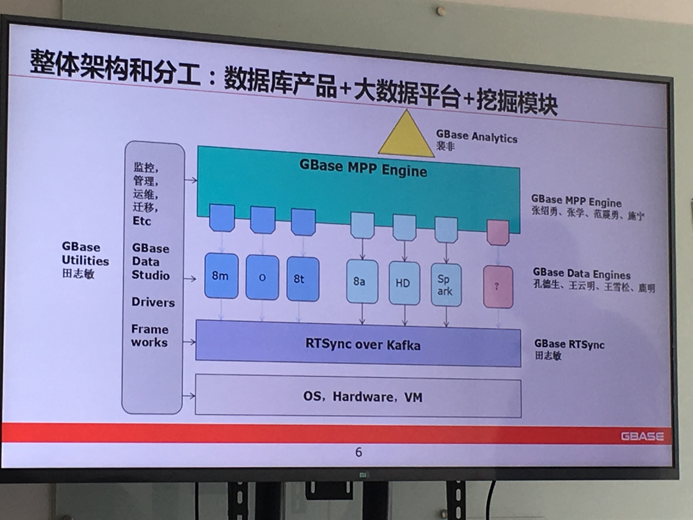
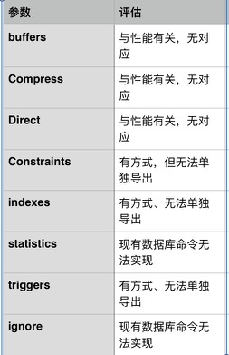
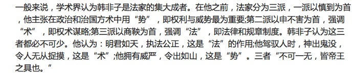
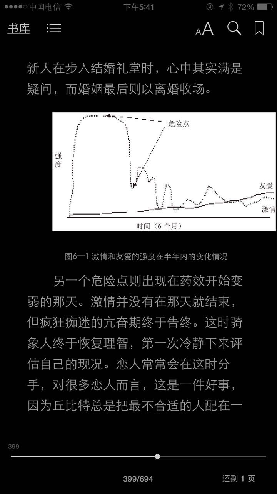
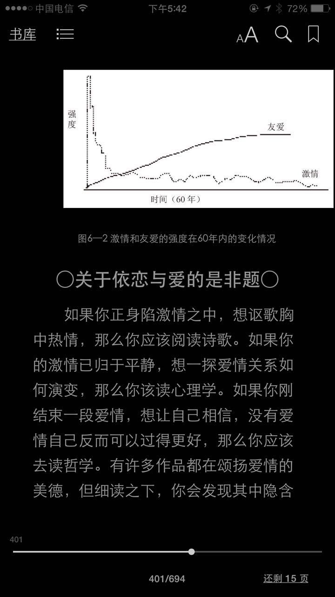
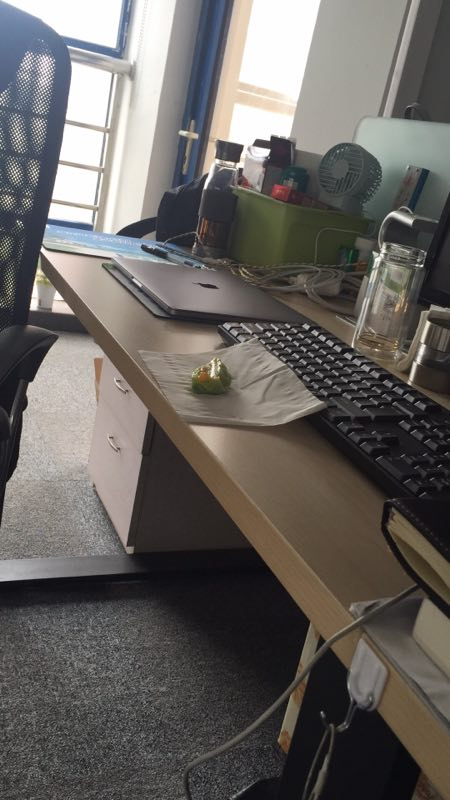
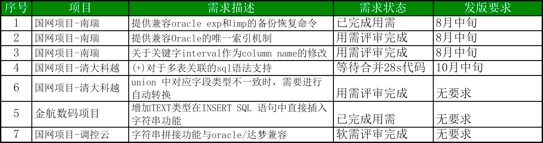
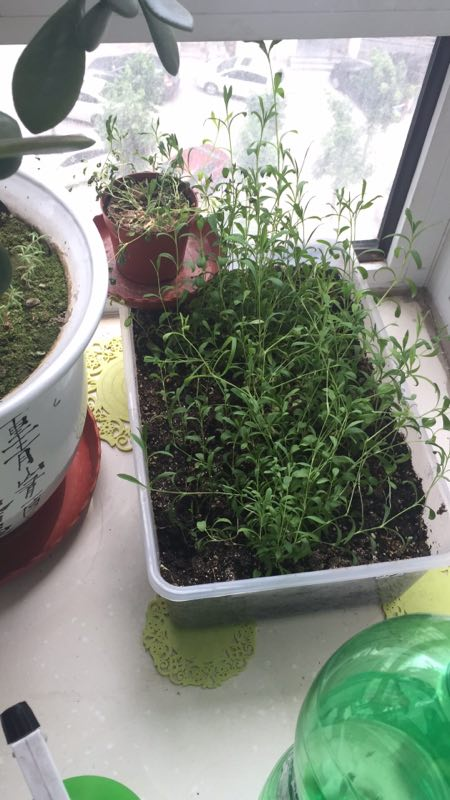
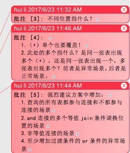
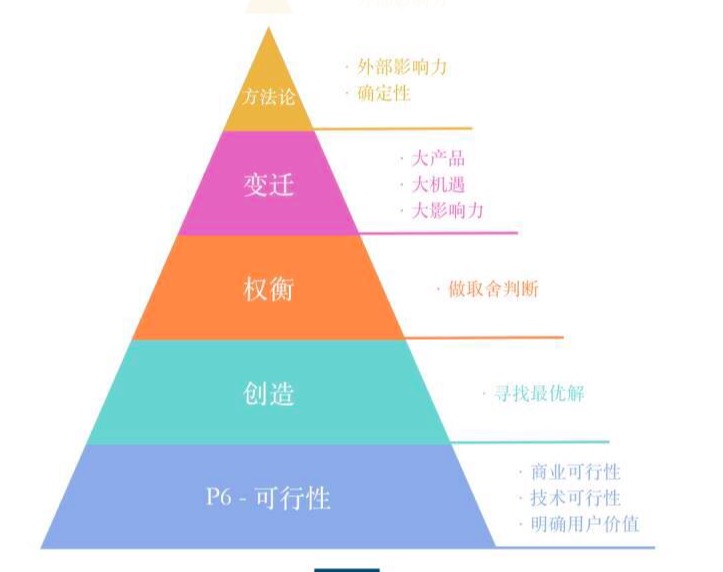

2017-06¶
2017-06-01¶
| 2017-06-01 08:37:45 | 你 | 行了 |
| 2017-06-01 08:37:49 | 你 | 不能说了 |
| 2017-06-01 08:37:56 | 我 | 没事，瞎聊 |
| 2017-06-01 08:38:27 | 你 | 嗯嗯 |
| 2017-06-01 08:39:37 | 你 | 谢谢你陪我 |
| 2017-06-01 08:39:46 | 你 | 给我讲这么多大道理 |
| 2017-06-01 08:39:58 | 我 | 不用谢，只要你能快乐就好 |
| 2017-06-01 08:40:20 | 你 | 我没有什么不快乐 就是心情有点不好 |
| 2017-06-01 08:40:29 | 你 | 老是想哭 |
| 2017-06-01 08:40:39 | 你 | 本来不想告诉你 |
| 2017-06-01 08:40:42 | 我 | 我知道，你心里面很委屈 |
| 2017-06-01 08:40:52 | 你 | 我希望我们能聊点开心的事 |
| 2017-06-01 08:41:05 | 你 | 我不想你一回想起我来 都是在开导我 |
| 2017-06-01 08:41:38 | 你 | exp那个需求做吗 |
| 2017-06-01 08:41:44 | 我 | 亲，能帮助你是我最大的快乐 |
| 2017-06-01 08:41:58 | 我 | 和你在一起的每一天我都非常快乐 |
| 2017-06-01 08:42:07 | 你 | 我最近太闲了 你快给我找点事做 |
| 2017-06-01 08:42:15 | 你 | 不然我就看书啦 |
| 2017-06-01 08:42:22 | 我 | 看吧 |
| 2017-06-01 08:42:28 | 我 | 你也可以和我聊天呀 |
| 2017-06-01 08:42:39 | 我 | 咱们可以聊很多高大上的 |
| 2017-06-01 08:42:53 | 我 | 比如今天的话题就还没有聊完呢 |
| 2017-06-01 08:42:58 | 你 | 我觉得你说的很多事我都懂 只是不会用 |
| 2017-06-01 08:43:01 | 我 | 昨天的也没有 |
| 2017-06-01 08:43:02 | 你 | 我需要实践 |
| 2017-06-01 08:43:12 | 你 | 可以聊天啊 |
| 2017-06-01 08:43:17 | 我 | 你太看重实践了 |
| 2017-06-01 08:43:22 | 你 | 最近不知道汇报啥了 |
| 2017-06-01 08:43:32 | 你 | 有吗？ |
| 2017-06-01 08:43:36 | 我 | 有些东西需要真正的实践，有些是不需要的 |
| 2017-06-01 08:43:51 | 你 | 可是我还是很痛苦 |
| 2017-06-01 08:44:03 | 你 | 今天东东也哄我了 |
| 2017-06-01 08:44:11 | 我 | 不经历痛苦，你也不会有成长 |
| 2017-06-01 08:44:12 | 你 | 只是我都怼过去了 |
| 2017-06-01 08:44:22 | 你 | 我就是想不明白 |
| 2017-06-01 08:44:29 | 你 | 就是不想让他得劲 |
| 2017-06-01 08:44:34 | 你 | 谁让他欺负我 |
| 2017-06-01 08:44:36 | 我 | 嗯嗯 |
| 2017-06-01 08:44:45 | 你 | 他说什么我不是什么 |
| 2017-06-01 08:44:51 | 我 | 我知道 |
| 2017-06-01 08:44:55 | 你 | 他昨天晚上也哄我了 |
| 2017-06-01 08:44:57 | 我 | 我也会这么做 |
| 2017-06-01 08:45:02 | 你 | 我也没给他好脸色 |
| 2017-06-01 08:45:09 | 我 | 😁 |
| 2017-06-01 08:45:15 | 你 | 可能我做的也有点过分 |
| 2017-06-01 08:45:19 | 我 | 不过你知道女人最大的武器是什么吗 |
| 2017-06-01 08:45:25 | 你 | 撒娇 |
| 2017-06-01 08:45:26 | 我 | 不过分，亲 |
| 2017-06-01 08:45:28 | 你 | 温柔 |
| 2017-06-01 08:45:39 | 我 | 嗯嗯 |
| 2017-06-01 08:45:44 | 你 | 这些都抛脑后去了 |
| 2017-06-01 08:45:51 | 我 | 😁 |
| 2017-06-01 08:45:52 | 你 | 管什么撒娇 温柔 |
| 2017-06-01 08:45:55 | 你 | 气死我了都 |
| 2017-06-01 08:46:03 | 你 | 你知道我想什么吗 |
| 2017-06-01 08:46:15 | 我 | 你以后要学着和东东生气的时候就撒娇 |
| 2017-06-01 08:46:30 | 你 | 今天早上 我不是洗漱完 画画口红 东东说老婆你真漂亮 |
| 2017-06-01 08:46:36 | 你 | 你知道我当时想什么吗 |
| 2017-06-01 08:46:42 | 我 | ？ |
| 2017-06-01 08:47:11 | 你 | 我在想 等哪天 我不依赖他了 非让他跟奴隶一样 臣服于我 |
| 2017-06-01 08:47:18 | 我 | 😁 |
| 2017-06-01 08:47:23 | 我 | 我支持你 |
| 2017-06-01 08:47:24 | 你 | 到时候 我说把他踢开就踢开 |
| 2017-06-01 08:47:31 | 你 | 我才不care他呢 |
| 2017-06-01 08:47:34 | 我 | 嗯嗯 |
| 2017-06-01 08:47:54 | 我 | 不过问你一句，你觉得自己做得到吗 |
| 2017-06-01 08:47:59 | 你 | 我非让他够都够不着我 |
| 2017-06-01 08:48:09 | 你 | 我当然能做到了 |
| 2017-06-01 08:48:14 | 你 | 你觉得我做不到吗 |
| 2017-06-01 08:48:27 | 我 | 说实话，我觉得够呛 |
| 2017-06-01 08:48:34 | 你 | 我不但对他能做到 对你 对任何人都能做到 |
| 2017-06-01 08:48:37 | 你 | 啊 |
| 2017-06-01 08:48:48 | 我 | 不过你要是能做到，那么你就真的走出来了 |
| 2017-06-01 08:48:57 | 你 | 当然 |
| 2017-06-01 08:49:13 | 你 | 我反倒觉得用不了多久 |
| 2017-06-01 08:50:10 | 我 | 嗯嗯 |
| 2017-06-01 08:50:14 | 你 | 你快去吧 |
| 2017-06-01 08:50:22 | 你 | 去王志那 永远别回来了 |
| 2017-06-01 08:50:23 | 我 | 亲，以后这些事情你一定和我说 |
| 2017-06-01 08:50:41 | 我 | 才不会呢，我要和你在一起 |
| 2017-06-01 08:51:13 | 我 | 我说过我要给你一个安全屋，让你在我这有安全感 |
| 2017-06-01 08:51:25 | 我 | 如果你都不和我说，我怎么给你安全感 |
| 2017-06-01 08:51:46 | 你 | 你看到高杰给黄军雷评论说黄军雷帅了吗 |
| 2017-06-01 08:52:02 | 我 | 朋友圈吗，我已经把黄军雷拉黑了 |
| 2017-06-01 08:52:15 | 你 | 你看这个女人脑门子上的心机多重 |
| 2017-06-01 08:52:21 | 我 | 哈哈 |
| 2017-06-01 08:56:38 | 我 | 你这条裙子有几条？ |
| 2017-06-01 08:57:14 | 你 | 2条 |
| 2017-06-01 08:57:23 | 你 | 算上粉色的3条 |
| 2017-06-01 08:57:29 | 你 | 都是这个版型的 |
| 2017-06-01 08:57:38 | 我 | 哦，我说看这眼熟 |
| 2017-06-01 08:57:52 | 你 | 但是这个跟另一个蓝色的一模一样 那个穿着有点紧 |
| 2017-06-01 08:57:56 | 你 | 不想穿了 |
| 2017-06-01 08:58:04 | 我 | 嗯嗯 |
| 2017-06-01 11:17:02 | 你 | 干嘛呢 |
| 2017-06-01 11:17:06 | 你 | 聊会天呗 |
| 2017-06-01 11:17:11 | 我 | 好呀 |
| 2017-06-01 11:17:21 | 我 | 你今天是不是很无聊呀 |
| 2017-06-01 11:17:26 | 你 | 我今天没带饭 |
| 2017-06-01 11:17:33 | 你 | 还好 你要是不在我就看看书 |
| 2017-06-01 11:17:42 | 我 | 嗯嗯 |
| 2017-06-01 11:17:47 | 我 | 我问你一个问题 |
| 2017-06-01 11:17:50 | 你 | 嗯嗯 |
| 2017-06-01 11:18:17 | 我 | 你一般和东东闹别扭，会在微信上给他道歉？ |
| 2017-06-01 11:18:39 | 你 | 你看到我给他发的微信了 |
| 2017-06-01 11:18:50 | 你 | 一般我都是自己想明白了 会道歉 |
| 2017-06-01 11:18:52 | 我 | 没有，我猜的 |
| 2017-06-01 11:18:55 | 你 | 想不明白的不会 |
| 2017-06-01 11:19:03 | 你 | 怎么可能每次都是我 |
| 2017-06-01 11:19:07 | 我 | 你这么通情达理，我觉得你会这么做 |
| 2017-06-01 11:19:18 | 你 | 我俩像这样的超级还是第一次 |
| 2017-06-01 11:19:30 | 你 | 就是完全是理念上不一致的 |
| 2017-06-01 11:19:43 | 你 | 认知差的 一般大家都不讨论 |
| 2017-06-01 11:20:08 | 你 | |
| 2017-06-01 11:20:20 | 我 | 我是想说，其实这样并不好 |
| 2017-06-01 11:20:28 | 你 | 你说给他道歉啊 |
| 2017-06-01 11:20:34 | 我 | 不是 |
| 2017-06-01 11:20:47 | 我 | 是在微信上和他道歉 |
| 2017-06-01 11:21:10 | 你 | 我一般都是微信上说完 然后打电话的时候再说他 |
| 2017-06-01 11:21:44 | 我 | 因为他不了解你的情况，你这么和他道歉他会认识不到自己的错误的 |
| 2017-06-01 11:22:01 | 我 | 以后他就会养成习惯，总是等着你来道歉 |
| 2017-06-01 11:22:07 | 你 | 不会的 |
| 2017-06-01 11:22:15 | 你 | 我怎么可能让他养成这种习惯 |
| 2017-06-01 11:22:26 | 我 | 其实他现在已经有这种习惯了 |
| 2017-06-01 11:22:37 | 我 | 就是你生气的时候不理你，等你自己冷静 |
| 2017-06-01 11:22:47 | 我 | 我的建议是当面和他道歉 |
| 2017-06-01 11:23:09 | 我 | 说清楚你道歉的理由，也要说清楚他的问题所在 |
| 2017-06-01 11:23:10 | 你 | 我看到他就生气 |
| 2017-06-01 11:23:15 | 你 | 还道什么歉 |
| 2017-06-01 11:24:04 | 我 | 那么你这样道歉，反而会让东东认为你自己想明白了是你错了 |
| 2017-06-01 11:24:19 | 我 | 我的意思是你的行为会给东东一个错误的印象 |
| 2017-06-01 11:24:29 | 你 | 我给他道歉是因为我发脾气 不是因为我想明白了 |
| 2017-06-01 11:25:19 | 我 | 是，可是东东可能就会认为你理解他的苦衷了 |
| 2017-06-01 11:26:19 | 你 | 我看见他就像跟他吵架 |
| 2017-06-01 11:26:31 | 我 | 嗯嗯 |
| 2017-06-01 11:26:33 | 我 | 我知道 |
| 2017-06-01 11:26:42 | 你 | 一分开 反倒觉得他可怜 想着较什么真 苦他也苦着我 |
| 2017-06-01 11:28:30 | 我 | 所以你就更不应该在微信上和他道歉，你站在他的角度想想，他怎么知道你这些心理活动。他就会简单的认为你已经理解他了。然后你回家又和他闹别扭，所以他就不知道你是怎么回事了，就会觉得你有点无理取闹 |
| 2017-06-01 11:29:52 | 我 | 在他看来，昨天你和他闹别扭，今天又和他道歉，到晚上又因为加班和他闹别扭 |
| 2017-06-01 11:30:11 | 我 | 所以干脆就别和他道歉，至少他知道你好没有好 |
| 2017-06-01 11:30:18 | 你 | 恩 |
| 2017-06-01 11:30:20 | 我 | 我曾经说过你人太好 |
| 2017-06-01 11:30:29 | 你 | 恩 |
| 2017-06-01 11:30:31 | 我 | 有时候好的没有原则了 |
| 2017-06-01 13:28:03 | 你 | 你看这个大喇叭 |
| 2017-06-01 13:28:15 | 我 | 是 |
| 2017-06-01 13:28:30 | 你 | 感觉没怎么睡着 |
| 2017-06-01 13:28:33 | 你 | 你不困吗 |
| 2017-06-01 13:28:40 | 你 | 我知道你冲咖啡 |
| 2017-06-01 13:28:41 | 我 | 不困，最近睡的比较好 |
| 2017-06-01 13:28:47 | 我 | 没吵到你吧 |
| 2017-06-01 13:28:48 | 你 | 后来的事 就有点模糊了 |
| 2017-06-01 13:28:52 | 你 | 没有没有 |
| 2017-06-01 13:28:54 | 你 | 一点没有 |
| 2017-06-01 13:29:00 | 我 | 嗯嗯 |
| 2017-06-01 13:29:09 | 你 | 你干啥呢 表情那么严肃 |
| 2017-06-01 13:29:27 | 我 | 没有呀，找东西破解百度网盘 |
| 2017-06-01 13:30:43 | 你 | 我是不是特别喜欢与人分享啊 |
| 2017-06-01 13:30:45 | 你 | 哈哈 |
| 2017-06-01 13:30:50 | 我 | 是呀 |
| 2017-06-01 13:30:57 | 我 | 我就说你人特别好 |
| 2017-06-01 13:31:06 | 我 | 可是也很容易受伤 |
| 2017-06-01 13:31:34 | 你 | 唉 |
| 2017-06-01 13:31:52 | 你 | 这些都没啥 关键是我在乎的人别伤害我就好 |
| 2017-06-01 13:32:22 | 我 | 嗯嗯 |
| 2017-06-01 13:32:38 | 我 | 其实伤害最深的就是自己最在乎的 |
| 2017-06-01 13:32:40 | 你 | 你为啥要破解百度网盘呢 |
| 2017-06-01 13:32:45 | 我 | 不在乎也不会有伤害 |
| 2017-06-01 13:32:50 | 你 | 必须的 |
| 2017-06-01 13:33:16 | 你 | 你看 我依赖你 依赖东东 你们都会给我安全感 会让我很幸福 |
| 2017-06-01 13:33:25 | 我 | 嗯嗯 |
| 2017-06-01 13:33:29 | 你 | 但是如果一跟你们生气 我就会特别难受 |
| 2017-06-01 13:33:37 | 我 | 是 |
| 2017-06-01 13:33:41 | 你 | 你看那些研发的 我根本就没事 |
| 2017-06-01 13:33:50 | 我 | 是 |
| 2017-06-01 13:33:54 | 你 | 我现在都不跟他们生气了 |
| 2017-06-01 13:34:33 | 我 | 这就是我昨天和你讲的 放下 |
| 2017-06-01 13:34:46 | 你 | 是 |
| 2017-06-01 13:34:58 | 我 | 放下 不是不在乎，而是不会再让自己受伤 |
| 2017-06-01 13:35:00 | 你 | 关键还是在放下 |
| 2017-06-01 13:35:03 | 你 | 是 |
| 2017-06-01 13:35:06 | 你 | 说的很对 |
| 2017-06-01 13:35:44 | 你 | 你说这个放下 说实在的 没什么难的 但是陷进去的时候 就死活放不开 |
| 2017-06-01 13:35:56 | 你 | 其实最简单的办法 不想不就得了 |
| 2017-06-01 13:36:44 | 我 | 放不开说明就真的没有放下 |
| 2017-06-01 13:36:58 | 我 | 不想 不是放下的方法 |
| 2017-06-01 13:37:11 | 你 | 那你说说 |
| 2017-06-01 13:37:27 | 我 | 能 放下 是当事情真的发生的时候，你自己不会感觉到受伤 |
| 2017-06-01 13:37:43 | 你 | 恩 |
| 2017-06-01 13:37:53 | 你 | 我们好好讨论下这个战术问题 |
| 2017-06-01 13:38:02 | 我 | 还是举昨天的例子，你能坐我腿上，心里没有任何芥蒂，那么你就是真放下了 |
| 2017-06-01 13:38:03 | 你 | 你整点要开会 |
| 2017-06-01 13:38:08 | 你 | 需要准备什么么 |
| 2017-06-01 13:38:14 | 我 | 不需要 |
| 2017-06-01 13:38:20 | 你 | 那就聊会 |
| 2017-06-01 13:38:24 | 你 | 昨天没聊完 |
| 2017-06-01 13:38:30 | 我 | 嗯嗯 |
| 2017-06-01 13:38:35 | 你 | 我现在才冷静下来了 |
| 2017-06-01 13:39:02 | 你 | 今天早上的时候 我特别难受 你讲的都没咋听进去 |
| 2017-06-01 13:39:09 | 我 | 嗯 |
| 2017-06-01 13:39:21 | 我 | 看你那么难受，我也很难受 |
| 2017-06-01 13:39:36 | 我 | 可是我也知道自己帮不上什么忙 |
| 2017-06-01 13:39:39 | 你 | 唉 你陪陪我 我好多了 |
| 2017-06-01 13:39:48 | 你 | 别提那事了 |
| 2017-06-01 13:39:54 | 你 | 咱们接着聊 放下这事 |
| 2017-06-01 13:40:19 | 你 | 我觉得吧 只有不断的提高自己的层次 还会真正的放下 |
| 2017-06-01 13:40:34 | 你 | 才 |
| 2017-06-01 13:40:37 | 我 | 这是充分条件之一 |
| 2017-06-01 13:41:04 | 我 | 提高自己的层次是能够让自己认识到放下才是唯一的途径 |
| 2017-06-01 13:41:25 | 我 | 提高层次也可以让自己看清自己追求的目标 |
| 2017-06-01 13:41:37 | 你 | 嗯嗯 |
| 2017-06-01 13:41:39 | 我 | 但是提高层次并不能让你很容易的达到这个目标 |
| 2017-06-01 13:41:47 | 你 | 恩 |
| 2017-06-01 13:41:48 | 我 | 层次决定的是眼界问题 |
| 2017-06-01 13:41:50 | 你 | 你说的很对 |
| 2017-06-01 13:41:56 | 你 | 嗯嗯 |
| 2017-06-01 13:42:11 | 我 | 实践才是解决路径问题的方法 |
| 2017-06-01 13:42:13 | 你 | 层次是找到目标 |
| 2017-06-01 13:42:21 | 我 | 但是实践有很多种 |
| 2017-06-01 13:42:32 | 我 | 你一般认为实践就是应该亲身去做 |
| 2017-06-01 13:42:40 | 我 | 这只是实践的一种方式 |
| 2017-06-01 13:42:46 | 你 | 专注目标是实践的一种方式么 |
| 2017-06-01 13:42:51 | 我 | 不是 |
| 2017-06-01 13:42:56 | 你 | 啊 我想的全是自己亲身去做 |
| 2017-06-01 13:43:06 | 我 | 是的 |
| 2017-06-01 13:43:14 | 你 | 去经历 |
| 2017-06-01 13:43:29 | 我 | 可是你想过没有，如果所有的事情都亲身去经历，那么哪有那么多的时间给你 |
| 2017-06-01 13:43:56 | 我 | 可是有人就是显得比你经历的多，他们的时间是从哪里来的呢 |
| 2017-06-01 13:44:05 | 你 | 不知道 |
| 2017-06-01 13:44:06 | 我 | 真的他们就不吃不睡吗 |
| 2017-06-01 13:44:08 | 你 | 看书看的 |
| 2017-06-01 13:44:12 | 你 | 那肯定不是啊 |
| 2017-06-01 13:44:51 | 我 | 看书是一种，那么你想想，看书肯定不是决定因素，很多人都看书，有的人就多，有的人就少 |
| 2017-06-01 13:45:02 | 我 | 最重要的还是领悟 |
| 2017-06-01 13:45:25 | 我 | 看书是一种提供你去领悟的方法 |
| 2017-06-01 13:45:47 | 我 | 你通过看书可以去领悟别人的经历，然后将其变成你自己的经验 |
| 2017-06-01 13:45:52 | 你 | 是 |
| 2017-06-01 13:45:59 | 你 | 那不还是实践么 |
| 2017-06-01 13:46:04 | 你 | 只是方式不同而已 |
| 2017-06-01 13:46:09 | 我 | 对的 |
| 2017-06-01 13:46:23 | 我 | 可以认为是在脑子里面去经历 |
| 2017-06-01 13:46:29 | 我 | 不用亲身经历 |
| 2017-06-01 13:46:33 | 你 | 恩 |
| 2017-06-01 13:46:37 | 你 | 是 |
| 2017-06-01 13:47:40 | 我 | 你先想想这个用脑子去经历，我先去开会 |
| 2017-06-01 13:47:44 | 你 | 好 |
| 2017-06-01 13:47:59 | 你 | 去吧 |
| 2017-06-01 13:48:07 | 你 | 希望不会有什么坏消息 |
| 2017-06-01 13:48:22 | 我 | 嗯嗯，不会有的 |
| 2017-06-01 13:48:47 | 你 | 我想以后我去做发版 这事 你想想 |
| 2017-06-01 13:48:56 | 你 | 别让刘畅做了 |
| 2017-06-01 13:49:19 | 我 | 可以，我回来想想怎么安排 |
| 2017-06-01 13:49:39 | 你 | 嗯嗯 这个不急 你想想这件事怎么样 |
| 2017-06-01 13:49:53 | 我 | 嗯 |
| 2017-06-01 13:50:13 | 你 | 不一定你出马 我可以跟王总说去 但是需要一个好的时机 |
| 2017-06-01 13:50:16 | 你 | 你看看吧 |
| 2017-06-01 13:50:55 | 你 | 你想想吧 不着急 |
| 2017-06-01 13:51:41 | 我 | 我需要把前后都想清楚 |
| 2017-06-01 14:02:31 | 我 |  |
| 2017-06-01 14:08:14 | 你 | oh my |
| 2017-06-01 14:08:38 | 你 | HD是啥啊 |
| 2017-06-01 14:08:43 | 你 | 没有DSD的 |
| 2017-06-01 14:09:00 | 我 | 是 |
| 2017-06-01 14:11:07 | 你 | 老王 你好厉害啊 好骄傲 |
| 2017-06-01 14:11:46 | 我 | [动画表情] |
| 2017-06-01 14:53:21 | 我 | 老田被一堆人鄙视了 |
| 2017-06-01 14:53:33 | 你 | 哈哈 |
| 2017-06-01 14:59:23 | 你 | 咋了 跟我说说快 |
| 2017-06-01 15:00:49 | 我 | 他非得想掺和数据库的研发，提了一个建议，结果这边研发表示听不懂他说的，不知道他想干啥 |
| 2017-06-01 15:01:01 | 你 | 哈哈 |
| 2017-06-01 15:01:08 | 我 | 后来他解释了，大家都说已经有了 |
| 2017-06-01 15:01:13 | 你 | 哈哈 |
| 2017-06-01 15:01:19 | 你 | 真丢人 |
| 2017-06-01 15:02:03 | 我 | 老老实实做工具不就得了，非想掺和数据库 |
| 2017-06-01 15:02:17 | 你 | 让他丢人去吧 |
| 2017-06-01 15:02:30 | 我 | 嗯嗯 |
| 2017-06-01 15:02:45 | 你 | 你看DTD主管群里的话了么 |
| 2017-06-01 15:02:52 | 你 | 王总要人呢 |
| 2017-06-01 15:03:27 | 我 | 看见了，没有问我，我还是躲着吧 |
| 2017-06-01 15:03:35 | 你 | 我觉得也是 |
| 2017-06-01 15:03:41 | 你 | 别说话了 |
| 2017-06-01 15:29:21 | 我 | 胖子这个笨蛋，最后就他一个人拒绝了王总 |
| 2017-06-01 15:50:09 | 你 | 你干嘛去了 |
| 2017-06-01 15:51:03 | 我 | mpp |
| 2017-06-01 15:54:16 | 你 | 你说 做不做得了 总该先跟王总问问吧 上来就是8a的对8t不熟 做不了 这个旭明啊 |
| 2017-06-01 16:00:11 | 我 | 是呢，气死我了 |
| 2017-06-01 16:00:20 | 我 | 刚才高杰和你说啥 |
| 2017-06-01 16:00:40 | 你 | 先别回我了，刘畅在呢 |
| 2017-06-01 16:03:27 | 你 | 走了 |
| 2017-06-01 16:03:47 | 你 | 我跟高杰说人力分解周报怎么写来着 |
| 2017-06-01 16:04:08 | 你 | 你知道吗 她现在给武总汇报的那个周报模板是陈捷给的 |
| 2017-06-01 16:04:22 | 你 | 咱们这个周报的模板是赵总的 |
| 2017-06-01 16:04:35 | 你 | 是不是以前武总都不看咱们写的周报啊 |
| 2017-06-01 16:05:17 | 我 | 不知道呀 |
| 2017-06-01 16:05:28 | 我 | 之前我也没关注过 |
| 2017-06-01 16:05:44 | 我 | 要是武总不看，那老田就太可怜了 |
| 2017-06-01 16:05:45 | 你 | 我估计武总都不看 |
| 2017-06-01 16:06:07 | 你 | 那陈捷给的 是高杰现在写的那个 根本就不是这个 |
| 2017-06-01 16:06:28 | 我 | 呵呵 |
| 2017-06-01 16:06:33 | 你 | 要是武总看的话 能不给高杰这个么 |
| 2017-06-01 16:06:49 | 你 | 而且DMD他们发的应该也是高杰现在写的这个 |
| 2017-06-01 16:07:10 | 你 | 也就是武总习惯看这个 而咱们写的那个是赵总给的模板 |
| 2017-06-01 16:07:35 | 我 | 嗯嗯 |
| 2017-06-01 16:07:36 | 你 | 估计DGD还是用这个呢吧 现在刘杰还写呢 |
| 2017-06-01 16:07:51 | 我 | 哈哈，不会吧 |
| 2017-06-01 16:08:11 | 你 | 真晕 |
| 2017-06-01 16:15:19 | 我 | 心情好，抽颗烟 |
| 2017-06-01 16:15:33 | 你 | 为啥心情好啊 |
| 2017-06-01 16:15:37 | 你 | 一会方案评审了 |
| 2017-06-01 16:15:50 | 你 | 今天开会都说啥了 |
| 2017-06-01 16:15:54 | 我 | 这次我肯定不会去8a呀 |
| 2017-06-01 16:16:07 | 你 | 又不去8a了 |
| 2017-06-01 16:16:08 | 我 | 晚上和你说 |
| 2017-06-01 16:16:12 | 你 | 能留在8t吗 |
| 2017-06-01 16:16:13 | 你 | 好 |
| 2017-06-01 16:16:20 | 我 | 对呀 |
| 2017-06-01 17:33:06 | 我 | 亲，接着聊天呀 |
| 2017-06-01 17:34:46 | 你 | 好 |
| 2017-06-01 17:35:57 | 我 | 用脑子经历这个你想明白了吗 |
| 2017-06-01 17:36:29 | 你 | 差不多 |
| 2017-06-01 17:36:34 | 你 | 有点小体会 |
| 2017-06-01 17:36:49 | 我 | 说说 |
| 2017-06-01 17:37:28 | 你 | 就是在脑子里模拟一下当时的场景 |
| 2017-06-01 17:38:04 | 你 | 就当是经历了 |
| 2017-06-01 17:38:48 | 你 | 你还没跟我说今天开会的事呢 |
| 2017-06-01 17:39:07 | 我 | 哈哈，其实和咱们没啥事情 |
| 2017-06-01 17:39:15 | 你 | 好吧 |
| 2017-06-01 17:39:16 | 我 | 主要还是 DMD的事情 |
| 2017-06-01 17:39:18 | 你 | 哦 |
| 2017-06-01 17:39:30 | 我 | 现在看武总就是把我放在8t |
| 2017-06-01 17:39:41 | 你 | 估计是 |
| 2017-06-01 17:39:44 | 我 | 然后让我要给他们集群的研发提意见 |
| 2017-06-01 17:39:51 | 你 | 啊 |
| 2017-06-01 17:39:53 | 你 | 真的啊 |
| 2017-06-01 17:39:57 | 我 | 是 |
| 2017-06-01 17:40:26 | 我 | 现在可能还有一种可能是要我们这边派人去，但是武总没有提 |
| 2017-06-01 17:40:41 | 你 | 派人干啥去啊 |
| 2017-06-01 17:41:00 | 我 | 他们集群要做一个大的全能的集群 |
| 2017-06-01 17:41:18 | 我 | 8a 的人不熟悉 oltp mpp 集群的东西 |
| 2017-06-01 17:41:28 | 我 | 所以要我们派一个人过去 |
| 2017-06-01 17:41:38 | 我 | 但是会上没谈这件事情 |
| 2017-06-01 17:41:47 | 我 | 他们自己内部的事情还没有搞定呢 |
| 2017-06-01 17:41:53 | 你 | 嗯嗯 |
| 2017-06-01 17:41:57 | 你 | 估计是很乱 |
| 2017-06-01 17:42:06 | 我 | 原来 UP 的人怎么安排都不知道，老范在会上表达了不满 |
| 2017-06-01 17:42:13 | 你 | 是啊 |
| 2017-06-01 17:42:17 | 我 | 武总让他们会后去协调 |
| 2017-06-01 17:42:27 | 你 | 哈哈 |
| 2017-06-01 17:43:13 | 我 | so 暂时不涉及到我，而且我认为武总是不是也想把我留在8t |
| 2017-06-01 17:43:24 | 我 | 你看他把我和王总放在一起 |
| 2017-06-01 17:43:25 | 你 | 恩 有可能 |
| 2017-06-01 17:43:39 | 你 | 王总不行的话 估计会让你backup |
| 2017-06-01 17:43:41 | 我 | 估计就是想未来有替换王总的机会 |
| 2017-06-01 17:43:44 | 我 | 嗯嗯 |
| 2017-06-01 17:44:00 | 你 | 我觉得 |
| 2017-06-01 17:44:04 | 我 | 其实我是产品经理，是不应该在那个位置的 |
| 2017-06-01 17:44:22 | 你 | 你看吧 我觉得将来王总当光杆司令的可能性比较大 |
| 2017-06-01 17:44:25 | 你 | 是呗 |
| 2017-06-01 17:44:40 | 你 | 我觉得王总估计会还是做什么技术顾问去 |
| 2017-06-01 17:44:41 | 我 | 没准武总想的还是让王总去当技术支持总监，然后8t 让我来管 |
| 2017-06-01 17:44:56 | 我 | 这次 DSD 的人一个都没有 |
| 2017-06-01 17:45:04 | 你 | 嗯嗯 |
| 2017-06-01 17:45:09 | 你 | 要是这样就太好了 |
| 2017-06-01 17:45:15 | 我 | 未来 DSD 是被边缘化了 |
| 2017-06-01 17:45:20 | 你 | 要是这样 就太好了 |
| 2017-06-01 17:45:33 | 我 | 你知道吗，老陈现在坐到华库的那个屋子去了 |
| 2017-06-01 17:45:34 | 你 | 就是呗 我看那图上一个DSD的都没有 |
| 2017-06-01 17:45:55 | 你 | 我知道座那屋去了 但是不知道那个是华库的屋子 |
| 2017-06-01 17:46:12 | 我 | 你看那个屋子不也上防盗门了吗 |
| 2017-06-01 17:46:23 | 你 | 这个会老陈没参加吗 |
| 2017-06-01 17:46:24 | 我 | 而且专用事业部的人也在里面 |
| 2017-06-01 17:46:30 | 你 | 哦哦 |
| 2017-06-01 17:46:32 | 我 | 好像李海骏也在里面 |
| 2017-06-01 17:46:36 | 你 | 哦 |
| 2017-06-01 17:46:38 | 我 | 这个会没有老陈 |
| 2017-06-01 17:46:48 | 你 | 老陈不是技术吗 |
| 2017-06-01 17:46:59 | 我 | 这就是正式把他排除在外了 |
| 2017-06-01 17:47:27 | 你 | 我站的脚疼 |
| 2017-06-01 17:47:36 | 我 | 嗯嗯，脱了鞋 |
| 2017-06-01 17:47:40 | 你 | 而且关键这么重要得会 王总还没参加 |
| 2017-06-01 17:47:48 | 我 | 我觉得武总是故意的 |
| 2017-06-01 17:47:57 | 你 | 有可能 |
| 2017-06-01 17:48:24 | 我 | 今天会上特别对我说，要我参与集群的设计工作，多提意见 |
| 2017-06-01 17:48:26 | 你 | 武总一直让王总出差 不就是想把王总知名度打出去么 |
| 2017-06-01 17:48:31 | 我 | 嗯嗯 |
| 2017-06-01 17:48:52 | 你 | 你说要是一个专注研发的 打什么知名度啊 |
| 2017-06-01 17:48:59 | 我 | 对呀 |
| 2017-06-01 17:49:00 | 你 | 再看看吧 |
| 2017-06-01 17:49:12 | 你 | 希望王总一直守着8t不放 这样你才有机会 |
| 2017-06-01 17:49:21 | 你 | 你真棒 |
| 2017-06-01 17:49:30 | 我 | 😁 |
| 2017-06-01 17:49:44 | 我 | 这样咱俩就可以一直在一起了 |
| 2017-06-01 17:50:10 | 你 | 不管在不在8t 这种会你参与了 说明武总对你的能力已经认可 你不在是默默付出的无名小辈了 |
| 2017-06-01 17:50:30 | 你 | 我奇了怪了 那个范振勇怎么在你上边 自己带部门去了呢 |
| 2017-06-01 17:50:34 | 你 | 你还没自己带呢 |
| 2017-06-01 17:54:03 | 我 | 哈哈，其实老范比我惨多了。我给你讲讲老范的历史吧 |
| 2017-06-01 17:54:56 | 我 | 老范的能力一点都不比我差，甚至技术更好一点。但是他一直没有成为武总的心腹，干了很多工作，但是总是得不到重用。 |
| 2017-06-01 17:56:35 | 我 | 最重要的一条是他没有自己的团队，最早的时候他在集群组，自己做查询计划的重构，做的非常漂亮。但是能力太强，又不懂人情世故，他和张学的关系不好。就一直没有给他明确的任务，总是做高级打杂的事情 |
| 2017-06-01 17:58:35 | 我 | 后来武总想出来一个 UP 的架构，就让老范去做了，他的团队完全是自己招的，自己一步一步带出来的，结果到今年好容易人都培养出来了，武总又把这个团队给撤了，所有人都并入集群组，张学给老范一个技术总监的位置，但是集群组原来有一个架构师是王建忠，你说这两个不是冲突嘛 |
| 2017-06-01 17:59:36 | 我 | 今天会上就是因为鹿明和张学去争 UP 的几个研发，导致老范不满，在那叨叨几句，结果让武总训了一顿 |
| 2017-06-01 18:00:48 | 我 | 想一想老范比我惨多了，至少我还有一个稳定的团队 |
| 2017-06-01 18:02:32 | 我 | 而且不管怎么样，以前有老陈，后来有老杨，我其实都是挺受重视的 |
| 2017-06-01 18:03:04 | 你 | 那倒是 |
| 2017-06-01 18:03:13 | 我 | 当初你刚来那年，老杨就听说老范过的不舒服，让我去找老范聊聊，看看他能不能来开发中心 |
| 2017-06-01 18:03:31 | 你 | 啊？ |
| 2017-06-01 18:03:39 | 我 | 当时老范觉得开发中心不是长事，就没来 |
| 2017-06-01 18:03:40 | 你 | 范振勇这么厉害啊 |
| 2017-06-01 18:05:37 | 我 | 是，公司里面厉害就这么几个人 |
| 2017-06-01 18:05:44 | 我 | 张学比老范差远了 |
| 2017-06-01 18:05:45 | 你 | 嗯嗯 |
| 2017-06-01 18:06:01 | 你 | 怎么张学这么得脸 |
| 2017-06-01 18:06:06 | 我 | 现在任职资格我是组长，老范是副组长 |
| 2017-06-01 18:06:11 | 你 | 嗯嗯 |
| 2017-06-01 18:06:24 | 我 | 张学是武总的亲信，比鹿明还亲 |
| 2017-06-01 18:06:37 | 你 | 秘书党 |
| 2017-06-01 18:06:53 | 我 | 这次鹿明想当 DMD 的部门经理，就是张学搅和黄的 |
| 2017-06-01 18:06:59 | 你 | 明天给你一次摸我的头的机会 |
| 2017-06-01 18:07:09 | 我 | 嗯嗯，受宠若惊 |
| 2017-06-01 18:07:19 | 你 | 因为我今晚洗头发 |
| 2017-06-01 18:07:25 | 你 | 明天早上我也可能早起 |
| 2017-06-01 18:07:32 | 你 | 只是可能啊 |
| 2017-06-01 18:07:35 | 我 | 多睡会吧 |
| 2017-06-01 18:08:16 | 你 | 可能她想干 |
| 2017-06-01 18:08:19 | 你 | 嘻嘻 |
| 2017-06-01 18:08:20 | 我 | 我知道 |
| 2017-06-01 18:08:46 | 你 | 唉 |
| 2017-06-01 18:08:53 | 我 | 说实话，我是挺幸运的 |
| 2017-06-01 18:09:03 | 你 | 恩 这么看确实是 |
| 2017-06-01 18:09:04 | 我 | 要是我一开始就在 DMD，那么也是打杂的 |
| 2017-06-01 18:09:09 | 你 | 是 |
| 2017-06-01 18:09:24 | 你 | 张学肯定不用你 |
| 2017-06-01 18:09:29 | 我 | 是 |
| 2017-06-01 18:09:30 | 你 | 你这么厉害 |
| 2017-06-01 18:09:35 | 你 | 他么都怕 |
| 2017-06-01 18:09:42 | 我 | 鹿明这个人还可以，张学很小心眼 |
| 2017-06-01 18:09:44 | 你 | 王总上来都怕了 |
| 2017-06-01 18:09:48 | 你 | 是吧 |
| 2017-06-01 18:10:06 | 你 | 做技术的这点就是不行 |
| 2017-06-01 18:10:15 | 你 | 本来就是纯纯的技术 搞什么政治 |
| 2017-06-01 18:10:22 | 你 | 这不是共同退步么 |
| 2017-06-01 18:10:35 | 我 | 关键就是在张学这个位置上，他的技术太差了 |
| 2017-06-01 18:10:40 | 你 | 是 |
| 2017-06-01 18:10:47 | 你 | 位置太高了 |
| 2017-06-01 18:10:57 | 你 | DMD的老大现在是谁啊 |
| 2017-06-01 18:10:59 | 我 | 是，他当个小组长什么的没有问题 |
| 2017-06-01 18:11:01 | 你 | 张少勇吗 |
| 2017-06-01 18:11:04 | 你 | 嗯嗯 |
| 2017-06-01 18:11:05 | 我 | 不是 |
| 2017-06-01 18:11:12 | 我 | 名义上还是武总 |
| 2017-06-01 18:11:20 | 我 | 其实是三足鼎立 |
| 2017-06-01 18:11:22 | 你 | DMD的老大 那可是一人之下啊 |
| 2017-06-01 18:11:42 | 你 | 比DTD DSD都大多了 |
| 2017-06-01 18:11:57 | 你 | 这个高杰 还不走 |
| 2017-06-01 18:11:59 | 你 | 真是的 |
| 2017-06-01 18:12:29 | 我 | 老杨上次还和我说呢，前线出事找武总，武总说需求找老张，技术找鹿明和张学 |
| 2017-06-01 18:16:24 | 你 | 恩 |
| 2017-06-01 18:22:57 | 你 | 一会杨丽颖会不会找你啊 |
| 2017-06-01 18:23:09 | 我 | 应该不会，今天没什么事情 |
| 2017-06-01 18:23:31 | 我 | 待会把门关上 |
2017-06-02¶
| 2017-06-02 09:19:12 | 我 | 一群蠢猪 |
| 2017-06-02 09:19:48 | 我 | 根本就不懂bug管理是什么 |
| 2017-06-02 09:19:55 | 你 | 哈哈 |
| 2017-06-02 09:26:08 | 我 | 这次进一步分化张杰和王胜利了 |
| 2017-06-02 09:38:37 | 你 | 恩 |
| 2017-06-02 10:11:20 | 你 | 亲 我刚才跟高杰说 把今早上说的bug管理我来做 |
| 2017-06-02 10:11:24 | 你 | 你别生气啊 |
| 2017-06-02 10:12:46 | 我 | 没事 |
| 2017-06-02 10:13:26 | 你 | 你看现在就我没事 要是我不主动一些 别人会说闲话的 |
| 2017-06-02 10:13:42 | 我 | 嗯嗯 |
| 2017-06-02 10:54:44 | 你 | 困死我了 |
| 2017-06-02 10:55:23 | 我 | 唉，中午好好睡吧 |
| 2017-06-02 10:55:31 | 你 | 恩 |
| 2017-06-02 10:56:08 | 你 | 我刚才跟他说的 |
| 2017-06-02 10:56:10 | 你 | 她 |
| 2017-06-02 10:56:26 | 我 | 嗯嗯 |
| 2017-06-02 10:58:06 | 我 | 亲，聊天吧 |
| 2017-06-02 10:58:12 | 你 | 好啊 |
| 2017-06-02 10:58:15 | 你 | 聊吧 |
| 2017-06-02 10:58:23 | 你 | 我想靠着你睡觉 |
| 2017-06-02 10:58:28 | 我 | 嗯嗯 |
| 2017-06-02 11:00:16 | 我 | 你有黑眼圈了 |
| 2017-06-02 11:00:28 | 我 | 很浅很浅，但是有了 |
| 2017-06-02 11:00:35 | 我 | 你需要好好睡觉了 |
| 2017-06-02 11:00:41 | 你 | 我觉得总有 |
| 2017-06-02 11:00:46 | 你 | 过来让我靠着 |
| 2017-06-02 11:00:47 | 你 | 哈哈 |
| 2017-06-02 11:00:52 | 我 | 哈哈 |
| 2017-06-02 11:00:58 | 我 | 我也很想呀 |
| 2017-06-02 11:06:42 | 你 | 以后咱们还能公用一台密网电脑 |
| 2017-06-02 11:06:46 | 你 | 好幸福啊 |
| 2017-06-02 11:06:51 | 我 | 嗯嗯 |
| 2017-06-02 11:06:52 | 你 | 共有 |
| 2017-06-02 11:06:55 | 我 | 是呢 |
| 2017-06-02 11:07:09 | 你 | 我先把IQA的bug 给管起来 |
| 2017-06-02 11:07:29 | 你 | 这样大概齐 他们做的质量 心里就有点数了 |
| 2017-06-02 11:07:33 | 我 | 嗯嗯 |
| 2017-06-02 11:07:51 | 你 | 然后再把内网mentis也管起来 |
| 2017-06-02 11:07:58 | 你 | 哈哈 |
| 2017-06-02 11:08:00 | 我 | 哈哈 |
| 2017-06-02 11:08:04 | 你 | 我爸爸都说我是管家婆 |
| 2017-06-02 11:08:20 | 我 | 不是管家婆，是产总 |
| 2017-06-02 11:08:26 | 你 | 嗨 |
| 2017-06-02 11:08:37 | 你 | 先替你干着 |
| 2017-06-02 11:08:53 | 你 | 等你做了部门经理 我就可以考虑做小产总了 |
| 2017-06-02 11:08:56 | 你 | 是不是 是不是 |
| 2017-06-02 11:08:59 | 我 | 对呀 |
| 2017-06-02 11:09:10 | 我 | 好高兴 |
| 2017-06-02 11:09:13 | 你 | 到时候 要是旭明是研发经理 我就天天跟他干仗 |
| 2017-06-02 11:09:19 | 你 | 是呢 好幸福啊 |
| 2017-06-02 11:09:26 | 我 | 嗯嗯 |
| 2017-06-02 11:11:07 | 我 | 亲，我昨天发现了我好多的毛病 |
| 2017-06-02 11:11:16 | 你 | 咋了 |
| 2017-06-02 11:11:23 | 我 | 早上只是和你说了一个 |
| 2017-06-02 11:11:34 | 你 | 还有别的么？？？？？ |
| 2017-06-02 11:11:52 | 你 | 这是怎么了 我觉得你对自己要求太高了 或者说太让着我了 |
| 2017-06-02 11:12:14 | 我 | 不是太让着你，是太宠着你 |
| 2017-06-02 11:12:18 | 我 | 不过这不是毛病 |
| 2017-06-02 11:12:44 | 我 | 我说的毛病是我平时和你太严肃了 |
| 2017-06-02 11:12:53 | 你 | 是 |
| 2017-06-02 11:13:43 | 我 | 我昨天晚上想你的时候，发现我自己对你是非常宠爱的。可是平时和你在一起的时候，就总是有点和你保持距离的感觉 |
| 2017-06-02 11:13:47 | 你 | 是有点 |
| 2017-06-02 11:14:54 | 我 | 你以前老是说感觉不到我对你的感觉，不知道我是不是会对你失望。我昨天想了，应该就是平时我和你保持距离闹得 |
| 2017-06-02 11:15:16 | 你 | 这个已经跟我说过一次了 但是也没怎么改 |
| 2017-06-02 11:15:24 | 你 | 你是不是也怕自己控制不好啊 |
| 2017-06-02 11:15:45 | 我 | 不是怕自己控制不好，是其他的原因 |
| 2017-06-02 11:15:51 | 我 | 是我自己潜意识的问题 |
| 2017-06-02 11:15:56 | 你 | 说说 |
| 2017-06-02 11:15:58 | 我 | 就好像你自己的底线 |
| 2017-06-02 11:16:11 | 你 | 我说的是你 |
| 2017-06-02 11:16:15 | 你 | 你也有吗？？？？ |
| 2017-06-02 11:16:23 | 我 | 当然啦，我也有潜意识的 |
| 2017-06-02 11:16:29 | 我 | 也不是全都解决的 |
| 2017-06-02 11:16:44 | 你 | 哈哈 |
| 2017-06-02 11:16:47 | 我 | 我昨天做了一个假想 |
| 2017-06-02 11:16:48 | 你 | 暴露楼 |
| 2017-06-02 11:16:51 | 你 | 说说 |
| 2017-06-02 11:17:07 | 我 | 想咱俩确实是相爱了会怎么样 |
| 2017-06-02 11:17:25 | 我 | 然后我就发现自己内心其实也是有这么一条底线 |
| 2017-06-02 11:17:35 | 我 | 也会让自己感觉到害怕 |
| 2017-06-02 11:17:42 | 我 | 我就想到了你的底线 |
| 2017-06-02 11:17:47 | 你 | 真的啊 |
| 2017-06-02 11:17:49 | 你 | 嗯嗯 |
| 2017-06-02 11:17:52 | 我 | 应该是一样的 |
| 2017-06-02 11:17:57 | 你 | 你现在是体会到我的感觉了 |
| 2017-06-02 11:18:10 | 我 | 只不过我的更隐蔽，表现的更不明显 |
| 2017-06-02 11:18:30 | 我 | 我发现我之前很多行为都和这个相关 |
| 2017-06-02 11:18:31 | 你 | 昨天后来我就没那么专注 就是怕我对象发现 所以经精神紧张 |
| 2017-06-02 11:18:38 | 你 | 你如 |
| 2017-06-02 11:18:43 | 你 | 你快说说 |
| 2017-06-02 11:19:38 | 我 | 比如有时候我当着别人说你，特别是人多的时候，我对你的要求就会苛刻 |
| 2017-06-02 11:19:46 | 我 | 这就是我的底线在作祟 |
| 2017-06-02 11:22:14 | 你 | 我今天晚上 应该会晚点 我要等东东一起下班 |
| 2017-06-02 11:22:20 | 我 | 就是想表现的我不喜欢你一样 |
| 2017-06-02 11:22:23 | 我 | 嗯嗯 |
| 2017-06-02 11:22:28 | 你 | 可以跟你聊天 如果你可以晚走的话 |
| 2017-06-02 11:22:38 | 我 | 我可以晚走 |
| 2017-06-02 11:22:52 | 你 | 我对这个『比如有时候我当着别人说你，特别是人多的时候，我对你的要求就会苛刻』已经习惯了 |
| 2017-06-02 11:23:03 | 你 | 因为我知道你不是真心的 |
| 2017-06-02 11:23:09 | 你 | 已经免疫了 |
| 2017-06-02 11:23:11 | 你 | 哈哈 |
| 2017-06-02 11:23:34 | 我 | 嗯嗯 |
| 2017-06-02 11:23:47 | 我 | 我先去吃饭 |
| 2017-06-02 11:24:14 | 你 | 去吧 |
| 2017-06-02 13:15:05 | 你 | 困死了困死了 |
| 2017-06-02 13:15:14 | 你 | 你不困吗 |
| 2017-06-02 13:15:17 | 你 | 也不睡 |
| 2017-06-02 13:15:19 | 我 | 嗯，接着睡会吧 |
| 2017-06-02 13:15:27 | 我 | 我睡了，也是刚醒 |
| 2017-06-02 13:15:39 | 你 | 不睡了 |
| 2017-06-02 13:15:50 | 你 | 你知道你这种人叫啥吗 |
| 2017-06-02 13:15:57 | 我 | 不知道 |
| 2017-06-02 13:16:03 | 我 | 叫啥 |
| 2017-06-02 13:17:36 | 你 | 叫什么注意力障碍 |
| 2017-06-02 13:17:45 | 你 | 忘记了 找不到那篇文章了 |
| 2017-06-02 13:17:52 | 你 | 小孩就是多动症 |
| 2017-06-02 13:17:59 | 我 | 哈哈 |
| 2017-06-02 13:18:02 | 你 | 然后你们这类人睡眠都少 |
| 2017-06-02 13:18:08 | 你 | 叫什么代偿 |
| 2017-06-02 13:18:10 | 我 | 我才不是呢 |
| 2017-06-02 13:18:27 | 我 | 你不知道，我在家的时候可以睡半天 |
| 2017-06-02 13:24:51 | 你 | 找不到了 那篇文章 |
| 2017-06-02 13:25:02 | 你 | 是老罗的一个朋友写的 |
| 2017-06-02 13:25:12 | 我 | 我知道你说的 |
| 2017-06-02 13:25:20 | 我 | 但是我肯定不是 |
| 2017-06-02 13:25:28 | 你 | 文档组的那个计划 你提点意见呗 |
| 2017-06-02 13:25:37 | 我 | 不能提意见 |
| 2017-06-02 13:25:45 | 我 | 这个是一个管理的技巧 |
| 2017-06-02 13:25:52 | 你 | 什么技巧 |
| 2017-06-02 13:25:54 | 你 | 述说 |
| 2017-06-02 13:26:00 | 你 | 我怕他们太不听话 |
| 2017-06-02 13:26:03 | 我 | 不提意见不是说他们的计划对 |
| 2017-06-02 13:26:43 | 我 | 而是从他们的角度想一下，他们是没有见过猪跑的人，你给他们提意见，就得让他们明白猪是怎么跑的 |
| 2017-06-02 13:27:32 | 我 | 其实这是非常难的，所以即使明知道他们有错误，也让他们去执行，直到他们出错，然后训他们 |
| 2017-06-02 13:27:43 | 你 | 好吧 |
| 2017-06-02 13:27:45 | 我 | 他们才会明白当初的计划是错的 |
| 2017-06-02 13:27:51 | 你 | 好 |
| 2017-06-02 13:27:54 | 你 | 也是 |
| 2017-06-02 13:28:33 | 你 | 好吧 |
| 2017-06-02 13:30:09 | 我 | 我对付 DSD 的研发用的也是这个技巧 |
| 2017-06-02 13:30:18 | 你 | 嗯嗯 |
| 2017-06-02 13:30:46 | 我 | 包括最近他们的设计和文档，我都放宽标准，就是要让他们自己去撞墙 |
| 2017-06-02 13:31:02 | 你 | 嗯嗯 |
| 2017-06-02 13:41:47 | 你 | 亲 李杰刚才跟我说 他浑身痒 |
| 2017-06-02 13:41:58 | 我 | 什么样的痒？ |
| 2017-06-02 13:42:03 | 你 | 今早产检胎心不稳定，做b超都169了，正常最高不超过160的，我下午去见大夫，再看看吧 |
| 2017-06-02 13:43:12 | 你 | [链接] 李辉和李杰的聊天记录 |
| 2017-06-02 13:43:29 | 你 | 我查了下百度 有个叫ICP的病 |
| 2017-06-02 13:43:44 | 你 | 瘙痒一般先从手掌和脚掌开始，然后逐渐向肢体近端延伸，甚至可发展到面部，但极少侵及黏膜。这种瘙痒症状平均约3周，亦有达数月者，于分娩后数小时或数日内迅速缓解、消失。 |
| 2017-06-02 13:43:57 | 你 | 妊娠期肝内胆汁淤积症（ICP）是妊娠中、晚期特有的并发症，临床上以皮肤瘙痒和胆汁酸升高为特征，主要危害胎儿，使围生儿发病率和死亡率增高。该病对妊娠最大的危害是发生难以预测的胎儿突然死亡，该风险与病情程度相关。 |
| 2017-06-02 13:43:58 | 我 | 嗯嗯，我知道这个 |
| 2017-06-02 13:44:06 | 你 | 李杰不会是这个吧 |
| 2017-06-02 13:44:13 | 我 | 让她赶紧去医院看看 |
| 2017-06-02 13:44:21 | 我 | 找个主任 |
| 2017-06-02 13:44:32 | 我 | 这个就需要专业的诊断了 |
| 2017-06-02 13:44:37 | 你 | 嗯嗯 |
| 2017-06-02 13:44:41 | 你 | 好担心 |
| 2017-06-02 13:44:49 | 我 | 几天了？ |
| 2017-06-02 13:45:23 | 你 | 从昨天晚上说 |
| 2017-06-02 13:45:28 | 你 | 我好担心啊 |
| 2017-06-02 13:45:32 | 我 | 应该没事 |
| 2017-06-02 13:45:41 | 我 | 这个病比较好治，就是怕耽误 |
| 2017-06-02 13:45:47 | 你 | 哦 |
| 2017-06-02 13:45:51 | 你 | 太吓人了 |
| 2017-06-02 13:45:55 | 你 | 这是啥啊 |
| 2017-06-02 13:45:56 | 我 | 如果不是这个病，其他的就没什么问题了 |
| 2017-06-02 13:46:14 | 我 | 就是内分泌失调的一种 |
| 2017-06-02 13:46:20 | 我 | 我给你找一下 |
| 2017-06-02 13:46:23 | 你 | 你说现在孕妇怎么会这么多毛病啊 |
| 2017-06-02 13:46:31 | 你 | 嗯嗯 |
| 2017-06-02 13:47:19 | 我 | http://dxy.com/column/4236 |
| 2017-06-02 13:47:54 | 我 | 你知道新生儿黄疸吗 |
| 2017-06-02 13:48:06 | 我 | 就是小孩生下来皮肤发黄 |
| 2017-06-02 13:48:23 | 我 | 就是由于胆汁造成的 |
| 2017-06-02 13:48:36 | 你 | 我记得你家的是不是就是这个 |
| 2017-06-02 13:48:37 | 我 | 这个对孩子的危险性很高 |
| 2017-06-02 13:48:42 | 我 | 对 |
| 2017-06-02 13:49:03 | 我 | ICP 的原理和黄疸的原理一样 |
| 2017-06-02 13:49:04 | 你 | 李杰说也是手脚 |
| 2017-06-02 13:49:08 | 你 | 痒 |
| 2017-06-02 13:49:16 | 你 | 我看着跟这个症状很像啊 |
| 2017-06-02 13:49:31 | 我 | 没事的，这个影响是需要长时间的 |
| 2017-06-02 13:49:38 | 我 | 现在去看还来得及 |
| 2017-06-02 13:49:59 | 你 | 嗯嗯 |
| 2017-06-02 13:50:03 | 你 | 真是太吓人了 |
| 2017-06-02 13:50:08 | 我 | 如果确诊了只要施加药物影响就可以了 |
| 2017-06-02 13:50:18 | 你 | 那会不会影响孩子啊 |
| 2017-06-02 13:50:25 | 我 | 一般不会 |
| 2017-06-02 13:50:31 | 我 | 这种病就是怕耽误 |
| 2017-06-02 13:50:35 | 你 | 嗯嗯 |
| 2017-06-02 13:50:37 | 你 | 好 |
| 2017-06-02 13:51:22 | 我 | 说实话，不是现在到的孕妇毛病多。是以前的孕妇很多病都不知道 |
| 2017-06-02 13:51:40 | 我 | 这些病在大夫那里都是属于常规的 |
| 2017-06-02 13:51:48 | 你 | 嗯嗯 |
| 2017-06-02 13:51:53 | 我 | 基本上是没有什么风险的 |
| 2017-06-02 13:51:57 | 你 | 我觉得怀孕特别恐怖 |
| 2017-06-02 13:51:59 | 你 | 真的 |
| 2017-06-02 13:52:05 | 我 | 我知道 |
| 2017-06-02 13:52:09 | 你 | 我心里害怕极了 |
| 2017-06-02 13:52:29 | 我 | 怎么说呢，第一没有你现在感觉的那么恐怖 |
| 2017-06-02 13:52:43 | 我 | 第二确实会给你带来很多意想不到的影响 |
| 2017-06-02 13:52:45 | 你 | 我看李杰的变化好大 |
| 2017-06-02 13:52:57 | 你 | 变得很胖 很黑 |
| 2017-06-02 13:53:09 | 我 | 是的，关键是这些对你来说是意想不到 |
| 2017-06-02 13:53:15 | 你 | 各种色素沉积 |
| 2017-06-02 13:53:17 | 我 | 所以你才会感觉恐惧 |
| 2017-06-02 13:53:31 | 你 | 嗯嗯 |
| 2017-06-02 13:53:39 | 你 | 我问你个事哈 |
| 2017-06-02 13:53:43 | 你 | 不太好意思说 |
| 2017-06-02 13:53:50 | 我 | 没事，你说吧 |
| 2017-06-02 13:54:02 | 你 | 李杰现在有妇科病 这个跟怀孕有关吗 |
| 2017-06-02 13:54:16 | 我 | 很难说 |
| 2017-06-02 13:54:49 | 我 | 我媳妇也有过 |
| 2017-06-02 13:54:56 | 你 | 我看着她觉得可害怕了 |
| 2017-06-02 13:54:57 | 我 | 不是怀孕的时候 |
| 2017-06-02 13:55:01 | 你 | 是吧 |
| 2017-06-02 13:55:07 | 你 | 你怀孕前还是怀孕后 |
| 2017-06-02 13:55:31 | 我 | 有过好几次，都是有小孩以后了 |
| 2017-06-02 13:55:39 | 你 | 我觉得我们都是非常注意卫生的 |
| 2017-06-02 13:55:49 | 你 | 不过现在我还没有 |
| 2017-06-02 13:55:50 | 我 | 我给你解释一下，没有那么可怕 |
| 2017-06-02 13:56:05 | 你 | 但是李杰我们都很注意了 怎么还会有 |
| 2017-06-02 13:56:39 | 我 | 你记得我给你看过的一篇科普，说人类哪里细菌最多，口腔排第二 |
| 2017-06-02 13:56:49 | 你 | 恩 |
| 2017-06-02 13:56:56 | 你 | 不是说嘴巴很脏吗 |
| 2017-06-02 13:56:57 | 你 | 哈哈 |
| 2017-06-02 13:57:14 | 我 | 人其实本身是和很多细菌共存的 |
| 2017-06-02 13:57:22 | 你 | 这个我知道 |
| 2017-06-02 13:57:27 | 你 | 很多细菌是好的 |
| 2017-06-02 13:57:31 | 我 | 妇科病的主因就是菌群失衡 |
| 2017-06-02 13:57:41 | 你 | 嗯嗯 |
| 2017-06-02 13:57:46 | 你 | 我听着都觉得害怕 |
| 2017-06-02 13:57:51 | 我 | 具体是什么细菌要去检查，主要还是真菌类 |
| 2017-06-02 13:57:58 | 你 | 嗯嗯 |
| 2017-06-02 13:58:03 | 我 | 没那么可怕的 |
| 2017-06-02 13:58:11 | 你 | 你不是女的 你不知道 |
| 2017-06-02 13:58:25 | 我 | 你知道吗，人体本身其实是利用细菌 |
| 2017-06-02 13:58:35 | 你 | 嗯嗯 |
| 2017-06-02 13:58:45 | 我 | 我当然知道了，我亲眼见过，而且我也给我媳妇放药 |
| 2017-06-02 13:58:52 | 你 | 是吧 |
| 2017-06-02 13:58:57 | 你 | 我姐夫也是 |
| 2017-06-02 13:59:00 | 你 | 好可怜 |
| 2017-06-02 13:59:25 | 我 | 人本身分泌的体液是有利于有益菌的 |
| 2017-06-02 13:59:40 | 你 | 恩 |
| 2017-06-02 13:59:51 | 我 | 但是如果有外来条件的破坏，比如长期用洗液导致酸碱不平衡 |
| 2017-06-02 14:00:08 | 我 | 就会破坏这个环境，最后导致妇科病 |
| 2017-06-02 14:00:31 | 我 | 还有一种情况就是自身的变化，比如过度操劳导致 |
| 2017-06-02 14:00:41 | 你 | 嗯嗯 |
| 2017-06-02 14:00:46 | 我 | 这时候人内分泌发生变化 |
| 2017-06-02 14:00:55 | 我 | 体液的酸碱性也发生变化 |
| 2017-06-02 14:01:03 | 我 | 最后也会导致 |
| 2017-06-02 14:01:05 | 你 | 洗液我知道 我们都是用清水洗的 不敢用洗液 |
| 2017-06-02 14:01:21 | 你 | 我觉得李杰没准是那时候加班累 闹得 |
| 2017-06-02 14:01:36 | 你 | 你知道他跟我姐夫 都很忙 |
| 2017-06-02 14:01:41 | 你 | 主要是李杰忙 |
| 2017-06-02 14:01:46 | 我 | 你知道还有一种可能性 |
| 2017-06-02 14:02:00 | 你 | 好多次都是凌晨1、2点下班 |
| 2017-06-02 14:02:11 | 我 | 就是对精液过敏 |
| 2017-06-02 14:02:13 | 你 | 没有时间啪啪啪 怎么有孩子 |
| 2017-06-02 14:02:34 | 你 | 他俩有好多次超过一个月的 |
| 2017-06-02 14:02:52 | 我 | 这个很难说，因为本身精液里面就有类似破坏环境的物质 |
| 2017-06-02 14:03:02 | 你 | 嗯嗯 |
| 2017-06-02 14:03:05 | 你 | 有可能 |
| 2017-06-02 14:03:32 | 我 | 而且每次啪啪都是对环境的破坏，如果自身劳累导致免疫力低，就有可能染病 |
| 2017-06-02 14:03:44 | 我 | 所以说这个原因很复杂 |
| 2017-06-02 14:03:46 | 你 | 是 |
| 2017-06-02 14:03:48 | 你 | 是 |
| 2017-06-02 14:04:17 | 我 | 有一个不是特别科学的偏方，但是很多大夫也推荐的，就是喝酸奶 |
| 2017-06-02 14:04:35 | 你 | 喝酸奶就行吗？ |
| 2017-06-02 14:04:46 | 我 | 做实验发现乳酸菌会抑制有害菌的生长 |
| 2017-06-02 14:05:39 | 我 | 但是通过服用是如何改变阴部环境的，这个现在没有科学证据，只是观察到喝酸奶确实对病情改善有帮助 |
| 2017-06-02 14:05:53 | 你 | 嗯嗯 |
| 2017-06-02 14:05:55 | 你 | 好吧 |
| 2017-06-02 14:06:22 | 我 | 另外就是要尽量保持通风，特别是来事的时候 |
| 2017-06-02 14:06:39 | 你 | 怎么通风啊 |
| 2017-06-02 14:07:13 | 我 | 温暖湿润的环境会导致有害菌生长 |
| 2017-06-02 14:07:14 | 你 | 你看没有啪啪啪的 妇科病明显少 |
| 2017-06-02 14:07:15 | 你 | 所以还是男人造成的 |
| 2017-06-02 14:07:16 | 我 | 比如内衣要纯棉，不要太厚 |
| 2017-06-02 14:07:28 | 我 | 有一定的原因 |
| 2017-06-02 14:07:51 | 我 | 这些东西都很难说，没有特别明显的主因 |
| 2017-06-02 14:08:17 | 你 | 那我们这种很注意个人卫生的 还是感染的话 |
| 2017-06-02 14:08:22 | 你 | 跟男人就有关系了 |
| 2017-06-02 14:08:56 | 我 | 不是 |
| 2017-06-02 14:09:00 | 你 | 不讨论这个话题了 |
| 2017-06-02 14:09:03 | 你 | 好痛苦 |
| 2017-06-02 14:09:09 | 我 | 关键还是自身的抵抗力 |
| 2017-06-02 14:09:37 | 我 | 好吧 |
| 2017-06-02 14:09:50 | 你 | 你们男人哪会知道女人的痛苦 |
| 2017-06-02 14:10:03 | 我 | 我告诉你我知道你信不信 |
| 2017-06-02 14:10:29 | 你 | 不讨论了 |
| 2017-06-02 14:10:37 | 你 | 你去看看旭明 |
| 2017-06-02 14:10:43 | 我 | 哈哈，好的 |
| 2017-06-02 14:32:19 | 我 | 我去看看 mpp |
| 2017-06-02 14:32:26 | 你 | 去呗 |
| 2017-06-02 15:29:22 | 我 | 亲，你干啥呢 |
| 2017-06-02 15:29:30 | 你 | 呆着呢 |
| 2017-06-02 15:29:46 | 我 | 王旭这个灯泡好讨厌 |
| 2017-06-02 15:29:57 | 我 | 恨不得打碎了他 |
| 2017-06-02 15:30:07 | 你 | 没事吧 |
| 2017-06-02 15:30:11 | 你 | 咋了你 |
| 2017-06-02 15:30:18 | 我 | 没事呀，嫌他碍事 |
| 2017-06-02 15:30:55 | 你 | 嗯嗯 |
| 2017-06-02 15:31:04 | 我 | 你说的是啥事 |
| 2017-06-02 15:31:19 | 你 | 国网的群里发的 |
| 2017-06-02 15:31:25 | 我 | 哦 |
| 2017-06-02 15:49:51 | 我 | 亲，忙吗 |
| 2017-06-02 15:50:15 | 你 | 不忙 |
| 2017-06-02 15:50:27 | 我 | 聊一会吧 |
| 2017-06-02 15:50:39 | 我 | 真的不想管他们的破事了 |
| 2017-06-02 15:50:47 | 我 | 我发现现在我特别想和你聊 |
| 2017-06-02 15:50:52 | 我 | 都不想工作了 |
| 2017-06-02 15:50:57 | 你 | 是？ |
| 2017-06-02 15:51:06 | 你 | 谁的破事不想管了呢 |
| 2017-06-02 15:51:22 | 我 | 国网，就是昨天王总安排的事 |
| 2017-06-02 15:51:39 | 你 | 抽人的事吗 |
| 2017-06-02 15:52:06 | 我 | 国网重新存储过程和触发器 |
| 2017-06-02 15:52:16 | 我 | 这里面坑很大 |
| 2017-06-02 15:52:36 | 我 | 刚才和刘辉聊了一下，没有像王总说的那么简单 |
| 2017-06-02 15:52:47 | 你 | 是吧 |
| 2017-06-02 15:52:54 | 你 | 估计研发的过去了 干不了啥 |
| 2017-06-02 15:52:58 | 我 | 是的 |
| 2017-06-02 15:53:10 | 你 | 研发的本来对应用就非常不熟 |
| 2017-06-02 15:53:17 | 我 | 你说对了 |
| 2017-06-02 15:53:18 | 你 | 王旭这样的 还不如我会用呢 |
| 2017-06-02 15:53:27 | 我 | 他们比你差远了 |
| 2017-06-02 15:53:28 | 你 | 就不是一路 |
| 2017-06-02 15:53:31 | 我 | 没错 |
| 2017-06-02 15:53:33 | 你 | 也没有 |
| 2017-06-02 15:53:40 | 你 | 王总太天真了 |
| 2017-06-02 15:53:44 | 我 | 要是都能像你一样就好了 |
| 2017-06-02 15:53:47 | 你 | 他跟孙国荣关系好 |
| 2017-06-02 15:53:52 | 你 | 估计领导们都不知道 |
| 2017-06-02 15:54:00 | 我 | 简单说就是研发的层次太低了 |
| 2017-06-02 15:54:02 | 你 | 瞎整 |
| 2017-06-02 15:54:05 | 我 | 太 low 了 |
| 2017-06-02 15:54:09 | 你 | 哈哈 |
| 2017-06-02 15:54:14 | 你 | 也不至于吧 |
| 2017-06-02 15:54:32 | 我 | 你知道吗，我觉得你做研发也不会比他们差 |
| 2017-06-02 15:54:42 | 我 | 他们从思想上就比不上你 |
| 2017-06-02 15:54:44 | 你 | 必须的 |
| 2017-06-02 15:54:50 | 你 | 我又不是没做过 |
| 2017-06-02 15:54:57 | 你 | 虽然我做的挺low的 |
| 2017-06-02 15:55:02 | 你 | 但是道理都差不多 |
| 2017-06-02 15:55:12 | 我 | 你只是经验没有他们多 |
| 2017-06-02 15:55:21 | 我 | 其他的都比他们强 |
| 2017-06-02 15:55:22 | 你 | 我在水表厂的时候 那个模块的代码都是我自己看的 我看完给他们讲 |
| 2017-06-02 15:55:30 | 我 | 嗯嗯，就是 |
| 2017-06-02 15:55:40 | 我 | 他们现在看代码都讲不清楚 |
| 2017-06-02 15:55:42 | 你 | 那个代码的逻辑 他们都不看 |
| 2017-06-02 15:55:54 | 你 | 我只是没做研发而已 |
| 2017-06-02 15:55:57 | 你 | 我觉得是 |
| 2017-06-02 15:56:02 | 我 | 是 |
| 2017-06-02 15:56:51 | 你 | 我做备份恢复的需求呢 |
| 2017-06-02 15:57:02 | 我 | 好的 |
| 2017-06-02 15:57:08 | 我 | 你先做，不打扰你了 |
| 2017-06-02 16:46:55 | 我 | 我的机器做好了 |
| 2017-06-02 17:02:33 | 你 | 我看王志又找不到自己位置了 |
| 2017-06-02 17:02:41 | 我 | 是的 |
| 2017-06-02 17:03:05 | 我 | 今天中午他和我抱怨研发，我就表示支持他一下，结果下午就开始嘚瑟了 |
| 2017-06-02 17:03:16 | 你 | 又觉得自己干了点事 就找不找北了 |
| 2017-06-02 17:03:27 | 你 | 是呗 很明显 |
| 2017-06-02 17:03:33 | 你 | 这种人啊 |
| 2017-06-02 17:03:44 | 你 | 就是看你给他好脸色了 |
| 2017-06-02 17:03:49 | 我 | 没错 |
| 2017-06-02 17:04:03 | 我 | 所以这种人就得时刻敲打一下 |
| 2017-06-02 17:04:25 | 你 | 是呢 |
| 2017-06-02 17:04:28 | 你 | 真受不了 |
| 2017-06-02 17:04:32 | 你 | 至于的么 |
| 2017-06-02 17:04:40 | 我 | 哈哈 |
| 2017-06-02 17:08:51 | 你 | 梁继展给的这是什么计划啊 |
| 2017-06-02 17:08:56 | 你 | 不是让他做调研计划的么 |
| 2017-06-02 17:09:00 | 你 | 给出开发计划了 |
| 2017-06-02 17:09:11 | 你 | 你看王胜利说的那话 |
| 2017-06-02 17:09:14 | 我 | 是，他们就是这个水平了 |
| 2017-06-02 17:09:22 | 我 | 我只能 呵呵了 |
| 2017-06-02 17:09:25 | 你 | 做不做也不是你说了算的啊 |
| 2017-06-02 17:09:31 | 你 | 让你干啥你就干啥 |
| 2017-06-02 17:09:34 | 我 | 真的是无话可说 |
| 2017-06-02 17:09:38 | 你 | 调研做好了不就得了 |
| 2017-06-02 17:09:42 | 我 | 他就是想自己当家 |
| 2017-06-02 17:09:49 | 你 | 就是四六不懂 |
| 2017-06-02 17:09:55 | 我 | 你看晨会上不就是嘛 |
| 2017-06-02 17:10:07 | 我 | 什么都想管，都想插手 |
| 2017-06-02 17:10:23 | 你 | 今早上说like匹配浮点型还说什么现场用不用改 现场用不用这是也不是你该操心的啊 |
| 2017-06-02 17:10:28 | 我 | 对呀 |
| 2017-06-02 17:10:32 | 你 | 我早上跟高杰说了 |
| 2017-06-02 17:10:39 | 你 | 高杰说 这个得你定 |
| 2017-06-02 17:10:47 | 我 | 嗯嗯 |
| 2017-06-02 17:11:02 | 你 | 我说就是呗 这种bug修改的 研发的就是看怎么改 再不济给个改bug的计划就得了 |
| 2017-06-02 17:11:18 | 你 | 他倒好 改bug不操心 到操心起用户用不用了 |
| 2017-06-02 17:11:22 | 你 | 真晕 |
| 2017-06-02 17:11:54 | 我 | 这个王胜利回来找机会要治治他 |
| 2017-06-02 17:12:17 | 你 | 啥也不懂 |
| 2017-06-02 17:12:20 | 你 | 笨死了 |
| 2017-06-02 17:13:04 | 你 | 你说昨天评审我跟他说 需求是这样写的…，人家来个 我是这样做的….. 你怎么做的关我毛线事 你得证明你的方案能满足需求 |
| 2017-06-02 17:13:05 | 你 | 对吧 |
| 2017-06-02 17:13:11 | 我 | 对 |
| 2017-06-02 17:13:22 | 你 | 他光告诉我他这么做的 满不满足需求他不知道 |
| 2017-06-02 17:13:35 | 你 | 我看你没搭理他 我也没搭理他 |
| 2017-06-02 17:13:38 | 你 | 懒得跟他说话 |
| 2017-06-02 17:13:43 | 我 | 嗯嗯 |
| 2017-06-02 17:13:54 | 我 | 我和你说一件事情吧 |
| 2017-06-02 17:13:59 | 你 | 咋咧 |
| 2017-06-02 17:14:13 | 你 | 成熟度的那个是谁要的？ |
| 2017-06-02 17:14:20 | 我 | 今天早上孙世霖和东江过来找我谈+的模型 |
| 2017-06-02 17:14:25 | 我 | 孙国荣要的 |
| 2017-06-02 17:14:33 | 你 | 嗯嗯 |
| 2017-06-02 17:14:46 | 我 | 我不是过去和他们讨论了吗，王胜利就在边上听呢 |
| 2017-06-02 17:14:56 | 你 | 然后咧 |
| 2017-06-02 17:15:10 | 我 | 我把孙世霖说了一顿我就走了，王胜利就拉着他们两个说 |
| 2017-06-02 17:15:20 | 你 | 然后呢 |
| 2017-06-02 17:15:33 | 你 | 那个孙世霖 不知道哪来的自信 |
| 2017-06-02 17:15:39 | 我 | 后来我和东江抽烟的时候说王胜利不让他们改原来的代码，还要按照原来的做 |
| 2017-06-02 17:15:40 | 你 | 长那么丑 |
| 2017-06-02 17:15:55 | 你 | 呵呵 |
| 2017-06-02 17:16:06 | 你 | 真够气人的 |
| 2017-06-02 17:16:14 | 你 | 真群傻X |
| 2017-06-02 17:16:21 | 我 | 不管孙世霖他们做的对不对，至少都比原来的代码强 |
| 2017-06-02 17:16:43 | 我 | 这事我也不想管，让他们自己去做 |
| 2017-06-02 17:17:29 | 你 | 管也不过是照着东江 |
| 2017-06-02 17:17:39 | 你 | 看着孙世霖都想吐 |
| 2017-06-02 17:17:42 | 我 | 要是东江和孙世霖和王胜利起冲突最好。要是他们听王胜利的，到时候设计评审和 bug 评审的时候我才不会手软呢 |
| 2017-06-02 17:18:12 | 你 | 就是 |
| 2017-06-02 17:18:46 | 你 | 东江对你还可以吧， |
| 2017-06-02 17:19:06 | 你 | 你记得你跟我说过东江比陈彪实在 |
| 2017-06-02 17:19:07 | 我 | 是，今天就是东江和我说的王胜利不让他们干 |
| 2017-06-02 17:19:10 | 你 | 我也发现了 |
| 2017-06-02 17:19:14 | 我 | 是 |
| 2017-06-02 17:19:23 | 你 | 陈彪太滑了 |
| 2017-06-02 17:19:28 | 我 | 现在我就是单独培养东江 |
| 2017-06-02 17:19:33 | 你 | 嗯嗯 |
| 2017-06-02 17:19:49 | 你 | 正好东江对我特别好 |
| 2017-06-02 17:20:22 | 我 | 嗯 |
| 2017-06-02 17:20:24 | 你 | 他属于认可我那一波的 |
| 2017-06-02 17:20:34 | 你 | 你看都在个命啊 |
| 2017-06-02 17:20:40 | 我 | 嗯嗯 |
| 2017-06-02 17:20:44 | 你 | 本来机会是宋的 |
| 2017-06-02 17:20:52 | 你 | 他就看不到 |
| 2017-06-02 17:21:37 | 我 | 是 |
| 2017-06-02 17:23:12 | 我 | 亲，你去哪了 |
| 2017-06-02 17:28:38 | 你 | 回来了 |
| 2017-06-02 17:30:06 | 我 | 嗯 |
| 2017-06-02 17:33:37 | 你 | 李杰看大夫了 验了那个胆指标 说不高 正常 大夫让再观察下 |
| 2017-06-02 17:33:53 | 我 | 嗯嗯 |
| 2017-06-02 17:34:00 | 你 | 王总又开始接私活了 |
| 2017-06-02 17:34:13 | 我 | 也不是私活，就是 redmine 上的 |
| 2017-06-02 17:34:18 | 我 | 我今天没有安排 |
| 2017-06-02 17:34:41 | 你 | 是那个吗？ |
| 2017-06-02 17:34:47 | 我 | 是，#90 |
| 2017-06-02 17:34:55 | 你 | 我知道那个 |
| 2017-06-02 17:35:02 | 你 | 要是还好 |
| 2017-06-02 17:35:16 | 我 | 嗯 |
| 2017-06-02 17:35:35 | 你 | 12.10xC6 |
| 2017-06-02 17:35:40 | 你 | 这个是啥 哪个版本 |
| 2017-06-02 17:35:49 | 我 | 在咱们后面发的版本 |
| 2017-06-02 17:35:59 | 我 | 咱们好像是12.04 |
| 2017-06-02 17:36:34 | 你 | 咱们是12.10FC |
| 2017-06-02 17:36:56 | 你 | 12.10FC4 |
| 2017-06-02 17:40:21 | 你 | 得瑟了开始 |
| 2017-06-02 17:40:31 | 我 | 嗯嗯 |
| 2017-06-02 17:40:58 | 我 | 我现在就是在等下班 |
| 2017-06-02 17:41:07 | 我 | 等他们走 |
| 2017-06-02 17:41:13 | 你 | 今天你没事吗 MPP有事吗 |
| 2017-06-02 17:41:22 | 我 | 不管了 |
| 2017-06-02 17:41:29 | 你 | 今天你咋了 是不是有话跟我说啊 |
| 2017-06-02 17:41:36 | 我 | 以前我是提要求，还要告诉他们怎么做 |
| 2017-06-02 17:41:43 | 我 | 现在我就是提要求 |
| 2017-06-02 17:41:49 | 我 | 他们爱怎么做怎么做 |
| 2017-06-02 17:41:55 | 你 | 好吧 |
| 2017-06-02 17:42:12 | 我 | 当然有话啦，和你永远也说不完 |
| 2017-06-02 17:44:33 | 你 | 你看这群研发的跟你说话都乐呵呵的 |
| 2017-06-02 17:44:38 | 你 | 跟我都是命令的 |
| 2017-06-02 17:44:42 | 你 | 势利鬼 |
| 2017-06-02 17:44:43 | 我 | 嗯嗯 |
| 2017-06-02 17:44:55 | 我 | 你看我一问，他们就跑过来和我说 |
| 2017-06-02 17:45:04 | 我 | 这就是我以前管理的好 |
| 2017-06-02 17:45:06 | 你 | 就是 |
| 2017-06-02 17:45:09 | 你 | 是 |
| 2017-06-02 17:45:12 | 你 | 确实 |
| 2017-06-02 17:46:38 | 你 | 这群势利鬼 |
| 2017-06-02 17:46:41 | 你 | 烦死人 |
| 2017-06-02 17:46:50 | 我 | 嗯嗯，不理他们 |
| 2017-06-02 17:47:07 | 你 | 我才不理他们呢 |
| 2017-06-02 17:47:15 | 你 | 我看他跟喝高了一样 |
| 2017-06-02 17:47:25 | 我 | 嗯嗯 |
| 2017-06-02 18:27:30 | 我 | 你大概几点走 |
| 2017-06-02 18:28:17 | 你 | 你想走的话走吧 |
| 2017-06-02 18:28:20 | 你 | 我还不知道呢 |
| 2017-06-02 18:28:24 | 你 | 等东东 |
| 2017-06-02 18:28:42 | 我 | 我是怕你要早走，我没事，几点走都行 |
| 2017-06-02 18:28:55 | 你 | 我不走 |
| 2017-06-02 18:28:56 | 我 | 可恨这个大灯泡 |
| 2017-06-02 18:29:03 | 我 | 我得想法赶他走 |
| 2017-06-02 18:29:06 | 你 | 是呗 真想拍死他 |
| 2017-06-02 18:29:07 | 你 | 哈哈 |
| 2017-06-02 18:29:13 | 你 | 别了 他走了还有高杰 |
| 2017-06-02 18:29:14 | 你 | 没事的 |
| 2017-06-02 19:14:47 | 你 | 要不你回去吧 |
| 2017-06-02 19:14:54 | 你 | 你看他俩这架势 |
| 2017-06-02 19:15:00 | 我 | [动画表情] |
| 2017-06-02 19:15:18 | 我 | 陪着你就很快乐 |
| 2017-06-02 19:15:43 | 你 | 这俩人太过分了 |
| 2017-06-02 19:15:57 | 我 | 咱俩接着聊 |
| 2017-06-02 19:16:01 | 你 | 你今天跟杨丽颖因为啥又怀疑你了 |
| 2017-06-02 19:16:03 | 你 | 嗯嗯 |
| 2017-06-02 19:16:15 | 我 | 还是技术的事情 |
| 2017-06-02 19:16:27 | 我 | 我说她的方案行不通 |
| 2017-06-02 19:16:32 | 我 | 她不信 |
| 2017-06-02 19:16:42 | 你 | 说实话，以前还不觉得跟她这么尴尬 |
| 2017-06-02 19:16:54 | 我 | 后来我就不理她了，让她自己去试 |
| 2017-06-02 19:16:57 | 你 | 现在特别尴尬 |
| 2017-06-02 19:17:03 | 你 | 肯定是因为你 |
| 2017-06-02 19:17:07 | 我 | 怎么尴尬 |
| 2017-06-02 19:17:20 | 你 | 就是那种感觉 |
| 2017-06-02 19:17:25 | 你 | 说不出来 |
| 2017-06-02 19:17:29 | 我 | 哦 |
| 2017-06-02 19:17:40 | 你 | 唉 |
| 2017-06-02 19:17:49 | 我 | 外因肯定是我 |
| 2017-06-02 19:17:58 | 你 | 她有没有跟你说过，她跟我相处会很尴尬 |
| 2017-06-02 19:17:59 | 我 | 主因还是她自己 |
| 2017-06-02 19:18:05 | 我 | 没有 |
| 2017-06-02 19:18:12 | 我 | 她几乎不提你 |
| 2017-06-02 19:18:13 | 你 | 我也不知道是因为她还是因为我 |
| 2017-06-02 19:18:23 | 你 | 总之很尴尬 |
| 2017-06-02 19:18:31 | 我 | 无所谓啦 |
| 2017-06-02 19:18:44 | 我 | 反正现在你也和她没有交集 |
| 2017-06-02 19:18:52 | 你 | 是 |
| 2017-06-02 19:18:55 | 你 | 没有 |
| 2017-06-02 19:19:03 | 你 | 中午我们一起吃饭 |
| 2017-06-02 19:19:36 | 你 | 现在旭明和她一起，就坐我们旁边 |
| 2017-06-02 19:19:46 | 你 | 你知道我有个疑问哈 |
| 2017-06-02 19:19:55 | 我 | 什么 |
| 2017-06-02 19:20:10 | 你 | 我觉得你俩应该挺不错的，因为她跟你总那么客气呢 |
| 2017-06-02 19:20:17 | 你 | 感觉很奇怪 |
| 2017-06-02 19:20:26 | 我 | 哈哈，你说错了 |
| 2017-06-02 19:20:46 | 我 | 她和我客气最多是出于尊敬 |
| 2017-06-02 19:20:58 | 你 | 恩 |
| 2017-06-02 19:21:07 | 我 | 你看她现在和胖子 |
| 2017-06-02 19:21:15 | 你 | 我就是很不理解 |
| 2017-06-02 19:21:21 | 我 | 那才叫真不错 |
| 2017-06-02 19:21:31 | 你 | 我觉得她和胖子很不错啊 |
| 2017-06-02 19:21:35 | 你 | 嘻嘻哈哈的 |
| 2017-06-02 19:21:40 | 你 | 怎么跟你不一样呢 |
| 2017-06-02 19:21:53 | 我 | 你看她和我嘻嘻哈哈吗 |
| 2017-06-02 19:21:57 | 你 | 单独对你不一样 |
| 2017-06-02 19:22:02 | 你 | 我说的就是这个 |
| 2017-06-02 19:22:21 | 你 | 你看我跟谁都嘻嘻哈哈的，所以大家都不觉得咋样 |
| 2017-06-02 19:22:44 | 你 | 不知道的还以为咱俩是亲戚呢 |
| 2017-06-02 19:48:12 | 你 | [链接] 从“朋友圈三天可见”，谈谈我们该如何面对社交网络 |
2017-06-03¶
| 2017-06-03 10:33:09 | 你 | 在家呢 |
| 2017-06-03 10:33:43 | 我 | 是 |
| 2017-06-03 10:35:20 | 你 | 看到你发的邮件了 |
| 2017-06-03 10:36:18 | 我 | 没事，就是让你知道一下 |
| 2017-06-03 10:36:24 | 你 | 嗯嗯 |
| 2017-06-03 10:36:53 | 我 | 另外告诉你一个好玩的，武总认为他们要10W是玩闹 |
| 2017-06-03 10:37:05 | 你 | 哈哈，太好玩了 |
| 2017-06-03 10:37:46 | 我 | 你干啥呢 |
| 2017-06-03 10:38:57 | 你 | 小宁 约我逛街去 |
| 2017-06-03 10:39:23 | 我 | 去哪逛 |
| 2017-06-03 10:39:33 | 你 | 滨江道 |
| 2017-06-03 10:40:06 | 你 | 我在车上呢，打车去地铁站 |
| 2017-06-03 10:40:18 | 你 | 还没逛都觉得累了 |
| 2017-06-03 10:40:38 | 我 | 😄，待会看见漂亮衣服就不累了 |
| 2017-06-03 10:41:03 | 你 | 谁知道呢，不怎么想买东西 |
| 2017-06-03 10:41:55 | 你 | 吃个饭，聊聊天 |
| 2017-06-03 10:42:14 | 我 | 嗯嗯 |
| 2017-06-03 10:42:34 | 我 | 你在天津的朋友好像也不多 |
| 2017-06-03 10:42:47 | 你 | 哪有朋友啊 |
| 2017-06-03 10:42:51 | 你 | 没有 |
| 2017-06-03 10:43:00 | 我 | 小宁不算吗 |
| 2017-06-03 10:43:09 | 你 | 就小宁一个，有两个研究生同学 |
| 2017-06-03 10:43:40 | 我 | 唉，平时都没人陪你玩 |
| 2017-06-03 10:43:48 | 你 | 哈哈 |
| 2017-06-03 10:43:51 | 你 | 你有吗 |
| 2017-06-03 10:44:06 | 你 | 你有亲戚 |
| 2017-06-03 10:44:07 | 我 | 我也没有呀 |
| 2017-06-03 10:44:21 | 我 | 是，不过平时也不走动 |
| 2017-06-03 10:44:28 | 你 | 我也不是非得有人陪 |
| 2017-06-03 10:44:42 | 我 | 不过我是宅男，喜欢待在家里 |
| 2017-06-03 10:45:34 | 你 | 我也挺宅的 |
| 2017-06-03 10:45:48 | 你 | 这个车主太能说了 |
| 2017-06-03 10:45:52 | 你 | 都没停 |
| 2017-06-03 10:46:01 | 我 | 哈哈 |
| 2017-06-03 11:12:16 | 你 | 手机没电了 |
| 2017-06-03 11:12:23 | 你 | [大哭][大哭][大哭][大哭] |
| 2017-06-03 11:12:26 | 我 | 啊 |
| 2017-06-03 11:12:40 | 我 | 看看小宁带电源了吗 |
| 2017-06-03 11:13:01 | 我 | 或者找个能充电的地方 |
| 2017-06-03 18:07:47 | 你 | [链接] 国调项目内部汇报讨论群的聊天记录 |
| 2017-06-03 18:09:34 | 我 | 又是一个新的集成商吗 |
| 2017-06-03 18:10:36 | 你 | 这个就是国网的 |
| 2017-06-03 18:10:59 | 我 | 我知道，原来有这个清大的吗 |
| 2017-06-03 18:11:08 | 我 | 我第一次听说 |
| 2017-06-03 18:11:10 | 你 | 没有 |
| 2017-06-03 18:11:19 | 你 | 原来好像没有 |
| 2017-06-03 18:11:25 | 我 | 那就是新的适配需求 |
| 2017-06-03 18:11:31 | 你 | 是 |
| 2017-06-03 18:11:42 | 你 | 又有+的 |
| 2017-06-03 18:11:45 | 我 | 这样挺好，让王总去说服他们放弃吧 |
| 2017-06-03 18:11:50 | 你 | 我快累死了 |
| 2017-06-03 18:11:56 | 我 | 啊 |
| 2017-06-03 18:12:05 | 你 | 小宁太难买衣服啦 |
| 2017-06-03 18:12:11 | 我 | 找个地方歇会 |
| 2017-06-03 18:12:20 | 我 | 让她自己逛一会 |
| 2017-06-03 18:12:23 | 你 | 什么衣服她穿上都特别难看 |
| 2017-06-03 18:12:30 | 我 | [动画表情] |
| 2017-06-03 18:12:31 | 你 | 我回家了已经 |
| 2017-06-03 18:12:38 | 我 | 嗯嗯 |
| 2017-06-03 18:12:45 | 我 | 有座吗 |
| 2017-06-03 18:12:46 | 你 | 怎么那么土呢 |
| 2017-06-03 18:12:53 | 你 | 我到家了 |
| 2017-06-03 18:13:04 | 你 | 累惨了 |
| 2017-06-03 18:13:12 | 我 | 赶紧躺着吧 |
| 2017-06-03 18:13:19 | 我 | 啥都别干 |
| 2017-06-03 18:13:29 | 我 | 要是困就睡会 |
| 2017-06-03 18:13:38 | 你 | 我要累死了 |
| 2017-06-03 18:13:43 | 你 | 感觉要死了 |
| 2017-06-03 18:13:49 | 我 | 好心疼 |
| 2017-06-03 18:14:19 | 你 | 小宁以后我不和她逛街了 |
| 2017-06-03 18:14:29 | 我 | 😄 |
| 2017-06-03 18:15:18 | 我 | 歇会吧 |
| 2017-06-03 18:15:53 | 我 | 告诉你一个好玩的事情吧 |
| 2017-06-03 18:16:17 | 我 | 今天胖子被大崔训了40分钟 |
| 2017-06-03 18:16:58 | 你 | 为啥啊 |
| 2017-06-03 18:17:32 | 我 | |
| 2017-06-03 18:18:07 | 你 | |
| 2017-06-03 18:18:13 | 你 | |
| 2017-06-03 18:18:20 | 你 | |
| 2017-06-03 18:18:30 | 我 | |
| 2017-06-03 18:18:33 | 你 | |
| 2017-06-03 18:19:06 | 你 | |
| 2017-06-03 18:19:14 | 你 | |
| 2017-06-03 18:19:25 | 我 | |
| 2017-06-03 18:19:46 | 你 | |
| 2017-06-03 18:19:53 | 你 | |
| 2017-06-03 18:20:01 | 你 | |
| 2017-06-03 18:20:53 | 我 |
2017-06-05¶


{kind=link}
{kind=link}
{kind=link}
{kind=link}
2017-06-06¶
| 2017-06-06 07:10:47 | 你 | 你几点到啊，我忘带工卡了，现在出门 |
| 2017-06-06 07:11:00 | 你 | 跟韩晓东一起出来的 |
| 2017-06-06 07:11:21 | 我 | 20分钟 |
| 2017-06-06 07:11:28 | 你 | 
|
| 2017-06-06 08:52:13 | 你 | 亲 你把刚才的话说完 |
| 2017-06-06 08:52:15 | 你 | 呗 |
| 2017-06-06 08:52:51 | 我 | 我想让你明白的是，我问那个问题的原因。问题的答案我知道，你不用说 |
| 2017-06-06 08:53:17 | 你 | 恩 知道了 |
| 2017-06-06 08:55:39 | 我 | [链接] 90%的人都分不清，领导与管理的不同 |
| 2017-06-06 10:17:41 | 我 | 孙世霖过来干啥 |
| 2017-06-06 10:20:56 | 你 | 他用我的Oracle环境呢 |
| 2017-06-06 10:21:06 | 我 | 哦 |
| 2017-06-06 10:28:32 | 你 | 计划写完了 |
| 2017-06-06 10:28:34 | 你 | 你看嘛 |
| 2017-06-06 10:28:37 | 你 | 你看吗 |
| 2017-06-06 10:28:40 | 我 | 看 |
| 2017-06-06 10:28:43 | 你 | 先发给你看下 |
| 2017-06-06 10:28:48 | 我 | 嗯嗯 |
| 2017-06-06 10:47:23 | 你 | 你回家的话 我就早点回家 |
| 2017-06-06 10:47:28 | 你 | 试着自己睡觉 |
| 2017-06-06 10:47:38 | 我 | 嗯嗯 |
| 2017-06-06 10:47:51 | 我 | 亲，我想和你说说 |
| 2017-06-06 10:48:11 | 我 | 其实你自己一个人的时候，我也是很想陪你的 |
| 2017-06-06 10:50:55 | 我 | 我自己其实也是很矛盾 |
| 2017-06-06 10:52:15 | 我 | 我知道你说的依赖的问题，可是我又很心疼你 |
| 2017-06-06 10:53:23 | 你 | 王胜利就是假传圣旨 |
| 2017-06-06 10:53:32 | 你 | 昨天谁说他说的行了 |
| 2017-06-06 10:53:36 | 你 | 不是说等确认么 |
| 2017-06-06 10:53:42 | 我 | 是的 |
| 2017-06-06 10:53:46 | 你 | 不说他了 |
| 2017-06-06 10:54:16 | 你 | 我知道你心疼我 |
| 2017-06-06 10:54:20 | 你 | 你依着我 |
| 2017-06-06 10:54:28 | 你 | 所以我才不敢跟你说 |
| 2017-06-06 10:54:38 | 我 | 嗯嗯 |
| 2017-06-06 10:55:11 | 你 | 我自己也挺畸形的 |
| 2017-06-06 10:55:16 | 你 | 思想有问题 |
| 2017-06-06 10:55:24 | 我 | 啊？ |
| 2017-06-06 10:55:30 | 我 | 什么问题？ |
| 2017-06-06 10:55:31 | 你 | 怎么就老是需要别人呢 |
| 2017-06-06 10:55:35 | 你 | 自己就不行呢 |
| 2017-06-06 10:55:40 | 你 | 啊 你说 |
| 2017-06-06 10:55:50 | 我 | 这不是问题好不好 |
| 2017-06-06 10:56:03 | 我 | 你这么认为了反而是一个问题了 |
| 2017-06-06 10:56:30 | 我 | 我们所有人都需要别人 |
| 2017-06-06 10:56:46 | 我 | 而且需要的还不止一个 |
| 2017-06-06 10:57:05 | 你 | 我俩因为这个坎 吵了多长时间了 |
| 2017-06-06 10:57:10 | 你 | 从5.12 |
| 2017-06-06 10:57:13 | 我 | 人类是社会性动物，是需要社交的 |
| 2017-06-06 10:57:15 | 你 | 快一个月了 |
| 2017-06-06 10:57:33 | 我 | 其实你俩这事没那么厉害 |
| 2017-06-06 10:58:02 | 我 | 现在的问题是你休息不好 |
| 2017-06-06 10:58:08 | 你 | 是 |
| 2017-06-06 10:58:13 | 你 | 我放大了对吗 |
| 2017-06-06 10:58:14 | 我 | 休息不好的原因有两个 |
| 2017-06-06 10:58:30 | 我 | 一个是东东不抱着你睡觉，一个是早上让你起得太早 |
| 2017-06-06 10:58:42 | 你 | 是 |
| 2017-06-06 10:58:43 | 我 | 你和他生气是因为你不舒服 |
| 2017-06-06 10:58:50 | 你 | 是 |
| 2017-06-06 10:58:51 | 你 | 对 |
| 2017-06-06 10:59:32 | 你 | 不舒服才发脾气了 |
| 2017-06-06 10:59:34 | 你 | 亲 |
| 2017-06-06 10:59:43 | 你 | 你客观点说 是不是我太任性了 |
| 2017-06-06 10:59:55 | 我 | 这两个原因互相影响，产生了放大效应 |
| 2017-06-06 11:00:16 | 我 | 不是，是你自己解决这个问题的方式不对 |
| 2017-06-06 11:00:31 | 你 | 那我该怎么解决啊 |
| 2017-06-06 11:00:35 | 你 | 你今天回家 |
| 2017-06-06 11:00:40 | 你 | 什么时候回来 |
| 2017-06-06 11:00:46 | 我 | 明天晚上回来 |
| 2017-06-06 11:06:04 | 我 | 你今天说你不舒服了就想和东东吵，这个方法本身就是有问题的。从理性角度讲，你这么做了之后首先就不占理了，在东东看来就是无理取闹。其实本身是他的问题，他自己没有认识到问题，你想让他认识到这个问题，但是你用的是错误的方法，反而使东东关注到你的无理取闹，而不是自身的问题。所以从你使用的方法角度看，你确实太任性 |
| 2017-06-06 11:08:43 | 我 | 可是如果只是说你任性，那么你自己的方向又错了。比如反思自己是不是太依赖别人，然后就让自己去所谓的独立等等。这些都是错的。 你说的不错，我教给你的方法是很难。但是这些方法才是正解，你会发现你经历了一圈以后还是要回到这条路上来，该吃的苦还是会吃。 |
| 2017-06-06 11:09:47 | 我 | 我说说我自己对你的态度吧 |
| 2017-06-06 11:10:01 | 我 | 首先我不希望你吃苦，我希望你快乐 |
| 2017-06-06 11:10:54 | 我 | 我想让你能跨过那些错误的经历，少一些痛苦。 |
| 2017-06-06 11:17:10 | 我 | 但是你自己本身有点畏难，很多时候你会出现退缩，按照自己旧有的习惯继续去做。我说的矛盾点就在这，在你按照这些习惯做事的时候，你一定会遭受挫折，我想在你痛苦的时候能够给你足够的关怀，让你不会那么痛苦。可是这么一来，你自己突破这些障碍的意愿就不会太高，我就只能眼睁睁的看着你在这些痛苦中循环。 所以我在关怀你的同时总是给你讲这些道理，就是希望你能慢慢从这种负循环中脱离出来。因此最关键的还是你自己的态度 |
| 2017-06-06 11:18:54 | 你 | 我想在你痛苦的时候能够给你足够的关怀，让你不会那么痛苦。可是这么一来，你自己突破这些障碍的意愿就不会太高，我就只能眼睁睁的看着你在这些痛苦中循环 |
| 2017-06-06 11:19:01 | 你 | 要不咱们先慢慢来 |
| 2017-06-06 11:19:11 | 你 | 你先别让我痛苦了 |
| 2017-06-06 11:19:12 | 我 | 比较好的一种情况是，你可以任性，当你经历这种痛苦的时候，或者你自己可以解开，或者你来找我，我给你安慰。在这个过程中你自己开始思考并进行改变。那么在经历过几次这种事情以后，你就会跳出这个负循环了。 |
| 2017-06-06 11:19:58 | 我 | 亲，你真的跟个孩子似得 |
| 2017-06-06 11:20:21 | 你 | 你说的这个比较好的情况不错 |
| 2017-06-06 11:20:22 | 我 | 好吧，我宠着你 |
| 2017-06-06 11:20:26 | 你 | 先这么着吧 |
| 2017-06-06 11:20:48 | 你 | 我特别怕 东东老是让我伤心 你老是宠着我 结果我不爱他改爱你了 |
| 2017-06-06 11:20:54 | 你 | 不过你脾气太大 |
| 2017-06-06 11:21:00 | 你 | 爱你需要过程 |
| 2017-06-06 11:21:04 | 我 | 😁 |
| 2017-06-06 11:21:23 | 我 | 亲，你怕的我知道 |
| 2017-06-06 11:21:42 | 你 | 那你赶紧想办法帮我啊 |
| 2017-06-06 11:21:47 | 你 | 先让我别痛苦再说 |
| 2017-06-06 11:21:50 | 你 | 真的受不了了 |
| 2017-06-06 11:22:27 | 我 | 那么咱们就先解决你休息不好 |
| 2017-06-06 11:22:34 | 你 | 嗯嗯 |
| 2017-06-06 11:22:36 | 你 | 说的对 |
| 2017-06-06 11:22:43 | 我 | 首先，你和东东说，早上不要叫你 |
| 2017-06-06 11:22:50 | 你 | 等我身体提好了 在反思 |
| 2017-06-06 11:23:03 | 我 | 不管什么情况，都不准喊你，哪怕你迟到 |
| 2017-06-06 11:23:07 | 你 | 嗯嗯 |
| 2017-06-06 11:23:08 | 你 | 好 |
| 2017-06-06 11:23:12 | 我 | 你早上一定要睡好 |
| 2017-06-06 11:23:19 | 你 | 好 |
| 2017-06-06 11:23:46 | 我 | 晚上你可以试着自己睡，但是睡的时候不要老想着东东不抱你 |
| 2017-06-06 11:24:02 | 你 | 好 |
| 2017-06-06 11:24:03 | 我 | 因为这样你就会生气，就会更睡不着 |
| 2017-06-06 11:24:08 | 你 | 是 |
| 2017-06-06 11:26:06 | 我 | 还有一个，就是找机会和东东说明，现在这种情况必须是暂时的，比如说半年，如果半年以后他还这么忙，那么你们两个就必须谈一谈关于他工作和生活怎么安排的问题 |
| 2017-06-06 11:34:02 | 你 | 恩 |
| 2017-06-06 11:34:06 | 你 | 谢谢你大叔 |
| 2017-06-06 11:44:28 | 我 | 嗯 |
| 2017-06-06 12:24:16 | 你 | 我在沙发上睡觉呢 |
| 2017-06-06 12:24:20 | 你 | 哈哈 |
| 2017-06-06 12:25:23 | 我 | 好呀，可以好好睡一觉 |
| 2017-06-06 12:26:31 | 你 | 嗯嗯，好奢侈啊 |
| 2017-06-06 12:27:02 | 你 | 刚才说起话来跟高杰，她就让我过来睡 |
| 2017-06-06 12:27:34 | 我 | 好的 |
| 2017-06-06 12:29:00 | 我 | 你睡吧，我回来了 |
| 2017-06-06 12:31:14 | 你 | 恩 |
| 2017-06-06 13:31:38 | 我 | 睡的挺好吧 |
| 2017-06-06 13:32:49 | 你 | 恩 |
| 2017-06-06 13:32:51 | 你 | 不错 |
| 2017-06-06 13:33:03 | 你 | 睡的挺沉的 |
| 2017-06-06 13:33:07 | 你 | 你没睡吗 |
| 2017-06-06 13:33:16 | 我 | 我睡了，刚醒 |
| 2017-06-06 13:33:30 | 你 | 看着不像睡的 |
| 2017-06-06 13:33:32 | 我 | 你睡好了，心情就好了 |
| 2017-06-06 13:33:43 | 你 | 我一醒就半点了 |
| 2017-06-06 13:33:44 | 你 | 哈哈 |
| 2017-06-06 13:35:20 | 我 | 嗯，以后这样也挺好，中午王总不在的时候你就去睡沙发 |
| 2017-06-06 13:35:40 | 你 | 再说吧 |
| 2017-06-06 13:35:45 | 你 | 我觉得可不好了 |
| 2017-06-06 13:35:50 | 你 | 高杰说了我半天 |
| 2017-06-06 13:35:58 | 我 | 她说你什么了 |
| 2017-06-06 13:36:06 | 你 | 她让我去睡 |
| 2017-06-06 13:36:09 | 你 | 没说啥 |
| 2017-06-06 13:36:13 | 你 | 我觉得不好 |
| 2017-06-06 13:36:26 | 你 | 再说 这也太奢侈了 |
| 2017-06-06 13:36:33 | 我 | 我知道，先不考虑好不好，你先休息好最重要 |
| 2017-06-06 13:36:49 | 你 | 我就是最近没睡好 |
| 2017-06-06 13:36:52 | 我 | 你要是能休息过来，中午也就不用去了 |
| 2017-06-06 13:36:59 | 你 | 嗯嗯 是 |
| 2017-06-06 13:37:14 | 我 | 先歇过来再说 |
| 2017-06-06 13:37:23 | 你 | 好 |
| 2017-06-06 15:09:55 | 我 | 亲，心情好点吗 |
| 2017-06-06 15:25:55 | 你 | 没事了 中午睡好了 心情不错 |
| 2017-06-06 15:33:31 | 我 | 嗯嗯，刚才没带手机 |
| 2017-06-06 15:33:53 | 你 | 恩 |
| 2017-06-06 15:33:55 | 你 | 没事 |
| 2017-06-06 15:36:41 | 我 | 还发愁呢 |
| 2017-06-06 15:37:00 | 我 | 先别想了 |
| 2017-06-06 15:37:21 | 你 | 恩 |
| 2017-06-06 15:37:27 | 你 | 聊会天 |
| 2017-06-06 15:37:30 | 你 | 休息会 |
| 2017-06-06 15:37:35 | 我 | 嗯嗯 |
| 2017-06-06 15:41:40 | 我 | 亲，聊啥呀 |
| 2017-06-06 15:41:48 | 你 |  |
| 2017-06-06 15:42:13 | 我 | exp 的吗 |
| 2017-06-06 15:42:17 | 你 | 是 |
| 2017-06-06 15:42:42 | 你 | 你今天这个衬衣很好看 |
| 2017-06-06 15:42:44 | 我 | 有这个也行，让销售和用户沟通吧 |
| 2017-06-06 15:42:50 | 你 | 还很时尚 |
| 2017-06-06 15:42:54 | 我 | 嗯嗯 |
| 2017-06-06 15:43:08 | 我 | 这件有点显肚子 |
| 2017-06-06 15:43:16 | 你 | 还好吧 |
| 2017-06-06 15:43:20 | 你 | 看不出来 |
| 2017-06-06 15:43:33 | 你 | 我说好就是好 你怎么那么多话 |
| 2017-06-06 15:43:39 | 我 | 嗯嗯 |
| 2017-06-06 15:43:41 | 我 | 是 |
| 2017-06-06 15:43:43 | 我 | 听你的 |
| 2017-06-06 15:43:44 | 你 | 你应该说 嗯嗯 我也觉得是 |
| 2017-06-06 15:44:02 | 我 | 嗯嗯，我也觉得是 |
| 2017-06-06 15:44:18 | 我 | 其实你以为我为啥穿这件呀，不就是想让你看着好看吗 |
| 2017-06-06 15:44:32 | 你 | 不是吧 |
| 2017-06-06 15:45:09 | 我 | 你猜 |
| 2017-06-06 15:45:29 | 你 | 你又不知道我喜欢这个 |
| 2017-06-06 15:46:00 | 我 | 你问到我了 |
| 2017-06-06 15:46:19 | 你 | 所以你：其实你以为我为啥穿这件呀，不就是想让你看着好看吗 不成立 |
| 2017-06-06 15:46:27 | 我 | 成立 |
| 2017-06-06 15:46:49 | 我 | 因为我挑衣服的时候会想你会不会认为这件好看 |
| 2017-06-06 15:46:56 | 我 | 虽然我并不肯定 |
| 2017-06-06 15:47:03 | 你 | 真的吗？ |
| 2017-06-06 15:47:07 | 你 | 怎么跟我一样 |
| 2017-06-06 15:47:09 | 我 | 真的 |
| 2017-06-06 15:47:33 | 你 | 我觉得我现在穿成这样都是被你的fashion感带的 |
| 2017-06-06 15:47:40 | 你 | 老了吧唧的 |
| 2017-06-06 15:47:42 | 你 | 嘻嘻 |
| 2017-06-06 15:47:52 | 我 | 哈哈 |
| 2017-06-06 15:48:28 | 你 | 不过我自己也喜欢 |
| 2017-06-06 15:48:38 | 你 | 我以前喜欢穿休闲的 |
| 2017-06-06 15:49:07 | 我 | 嗯嗯 |
| 2017-06-06 15:49:32 | 你 | 他怎么不闭嘴 |
| 2017-06-06 15:49:37 | 你 | 哈哈 |
| 2017-06-06 15:50:03 | 我 | 刷存在感呀，好不容易有个他懂的 |
| 2017-06-06 15:50:14 | 你 | 哈哈 |
| 2017-06-06 15:55:08 | 你 | 张旭明讲的怎么样啊 |
| 2017-06-06 15:55:20 | 我 | 他没说 |
| 2017-06-06 15:55:31 | 我 | 结果应该还可以 |
| 2017-06-06 15:55:35 | 你 | 哦 |
| 2017-06-06 15:55:37 | 你 | 那就好 |
| 2017-06-06 15:56:02 | 我 | 亲，聊点别的吧 |
| 2017-06-06 15:56:08 | 你 | 还啊 |
| 2017-06-06 15:56:11 | 你 | 好啊 |
| 2017-06-06 15:56:12 | 我 | 李杰怎么样啦 |
| 2017-06-06 15:56:26 | 你 | 没什么事吧 他不上班了 现在在家呆着 |
| 2017-06-06 15:56:36 | 你 | 挺自在的 没有怎么闹情绪 |
| 2017-06-06 15:56:46 | 我 | 嗯嗯，还痒吗 |
| 2017-06-06 15:56:54 | 你 | 说还那样 |
| 2017-06-06 15:56:57 | 你 | 能挺住 |
| 2017-06-06 15:57:10 | 你 | 我看没啥事 我今天还没问她呢 |
| 2017-06-06 15:57:28 | 我 | 我在想要是你怀孕的时候可咋办呀 |
| 2017-06-06 15:57:40 | 我 | 估计还不得把我急死 |
| 2017-06-06 15:57:41 | 你 | 我不知道 我不想生 |
| 2017-06-06 15:57:45 | 你 | 哈哈 |
| 2017-06-06 15:57:57 | 你 | 会变胖 |
| 2017-06-06 15:58:02 | 你 | 还会变丑 |
| 2017-06-06 15:58:13 | 我 | no no no |
| 2017-06-06 15:58:27 | 我 | 我看你还是最美的 |
| 2017-06-06 15:58:33 | 你 | 才不是呢 |
| 2017-06-06 15:59:26 | 我 | love is blind |
| 2017-06-06 15:59:35 | 我 | 😁 |
| 2017-06-06 15:59:45 | 你 | 真的吗 |
| 2017-06-06 15:59:49 | 你 | 有科学依据吗 |
| 2017-06-06 15:59:55 | 我 | 当然有啦 |
| 2017-06-06 16:00:00 | 你 | 说说 |
| 2017-06-06 16:00:22 | 我 | 本身爱就是非常感性的 |
| 2017-06-06 16:01:07 | 我 | 其次按照冠冕堂皇的理由里面说的，骑象人总是会找理由解释自己的行为 |
| 2017-06-06 16:01:17 | 你 | 是 |
| 2017-06-06 16:01:45 | 我 | 第三人本身基因也会驱动人忽略对方的缺点 |
| 2017-06-06 16:02:36 | 你 | 人真是太复杂了 |
| 2017-06-06 16:02:43 | 我 | 举个例子，西方人身体的体味都比较大，相爱的人会出现如果闻不到对方体味就无法入睡的情况 |
| 2017-06-06 16:02:52 | 我 | 这个是一个比较极端的例子 |
| 2017-06-06 16:02:59 | 你 | 是吧 |
| 2017-06-06 16:03:21 | 我 | 一般情况是当你对一个人有好感的时候，相应的他的一些缺点也会接受 |
| 2017-06-06 16:03:25 | 你 | 我也喜欢东东的味道 |
| 2017-06-06 16:03:30 | 你 | 他的肉味 |
| 2017-06-06 16:03:31 | 你 | 哈哈 |
| 2017-06-06 16:03:35 | 我 | 哈哈 |
| 2017-06-06 16:03:45 | 我 | 这个是正常的 |
| 2017-06-06 16:03:49 | 你 | 那倒是 |
| 2017-06-06 16:04:09 | 你 | 我今天可以送你哦 |
| 2017-06-06 16:04:13 | 你 | 很开心 |
| 2017-06-06 16:04:14 | 你 | 哈哈 |
| 2017-06-06 16:04:18 | 我 | 嗯嗯 |
| 2017-06-06 16:05:51 | 我 | 亲，咱们说回来 |
| 2017-06-06 16:06:20 | 你 | 好 |
| 2017-06-06 16:06:27 | 我 | 我担心的是怀孕以后的各种反应 |
| 2017-06-06 16:06:39 | 你 | 那怎么办啊 |
| 2017-06-06 16:06:52 | 我 | 我能想到的办法就是锻炼 |
| 2017-06-06 16:07:12 | 你 | 打球算吗 |
| 2017-06-06 16:07:14 | 你 | 做瑜伽 |
| 2017-06-06 16:07:20 | 我 | 这些都算 |
| 2017-06-06 16:07:35 | 我 | 就是增强你的体质可以提高你的免疫力和抵抗力 |
| 2017-06-06 16:07:46 | 我 | 那么有些反应就会好很多 |
| 2017-06-06 16:07:53 | 你 | 恩 |
| 2017-06-06 16:07:59 | 你 | 我现在体质也不好 |
| 2017-06-06 16:08:03 | 你 | 经常生病 |
| 2017-06-06 16:08:09 | 我 | 比如说你血液循环好了，水肿就会好很多 |
| 2017-06-06 16:08:17 | 你 | 是吧 |
| 2017-06-06 16:08:40 | 我 | 回家有空还是多锻炼吧 |
| 2017-06-06 16:08:44 | 你 | 要不我跑步去 |
| 2017-06-06 16:08:54 | 我 | 跑步不适合你 |
| 2017-06-06 16:08:55 | 你 | 太懒了我 |
| 2017-06-06 16:08:58 | 你 | 为啥 |
| 2017-06-06 16:09:17 | 我 | 跑步对胸腹没有什么帮助 |
| 2017-06-06 16:09:27 | 我 | 反而会让你大腿变粗 |
| 2017-06-06 16:09:41 | 你 | 哦 |
| 2017-06-06 16:09:50 | 你 | 那练肚皮舞 |
| 2017-06-06 16:09:55 | 我 | 我以前之所以给你推荐瑜伽，其实就是考虑你怀孕和生孩子 |
| 2017-06-06 16:10:05 | 我 | 这个可以呀 |
| 2017-06-06 16:10:10 | 我 | 可就是太苦了 |
| 2017-06-06 16:10:14 | 我 | 强度很大的 |
| 2017-06-06 16:10:15 | 你 | 太难了 |
| 2017-06-06 16:10:18 | 你 | 都很难 |
| 2017-06-06 16:10:27 | 你 | 那还是做瑜伽吧 |
| 2017-06-06 16:10:30 | 我 | 瑜伽是相对比较简单的 |
| 2017-06-06 16:10:36 | 你 | 恩 |
| 2017-06-06 16:10:40 | 我 | 关键是有安神的作用 |
| 2017-06-06 16:10:43 | 你 | 是 |
| 2017-06-06 16:10:56 | 我 | 还有一个特点就是比较容易消磨时间 |
| 2017-06-06 16:11:20 | 我 | 晚上你可以多做几次，这样你就会忽略东东，心情会好很多 |
| 2017-06-06 16:11:23 | 你 | 恩 |
| 2017-06-06 16:11:37 | 你 | 我还想看电视呢 |
| 2017-06-06 16:11:44 | 你 | 逗你玩 |
| 2017-06-06 16:11:46 | 你 | 我知道 |
| 2017-06-06 16:11:49 | 你 | 谢谢 |
| 2017-06-06 16:11:50 | 我 | 哈哈 |
| 2017-06-06 16:12:33 | 我 | 而且还有一点，就是瑜伽比较随性，你高兴就可以多做一点，不高兴就可以少做一点 |
| 2017-06-06 16:12:42 | 我 | 姿势不到位也没有关系 |
| 2017-06-06 16:12:44 | 你 | 恩 |
| 2017-06-06 16:12:49 | 你 | 恩 |
| 2017-06-06 16:12:55 | 我 | 总之就是你自己完全控制自己 |
| 2017-06-06 16:12:58 | 你 | 你做瑜伽是为了什么 |
| 2017-06-06 16:13:15 | 我 | 当初就是为了寻道 |
| 2017-06-06 16:13:32 | 我 | 我还曾经练过气功 |
| 2017-06-06 16:13:47 | 我 | 我一练就发现气功是骗人的 |
| 2017-06-06 16:14:03 | 你 | 哈哈 |
| 2017-06-06 16:14:06 | 你 | 为啥是骗人的 |
| 2017-06-06 16:14:25 | 我 | 他说的那些感觉我发现都做不到 |
| 2017-06-06 16:14:36 | 你 | 哦 |
| 2017-06-06 16:14:37 | 你 | 是吧 |
| 2017-06-06 16:14:59 | 你 | 都违反科学 |
| 2017-06-06 16:16:03 | 我 | 说实话，科学本身是有严格定义的 |
| 2017-06-06 16:16:36 | 我 | 像瑜伽和气功这类东西本来就不是科学的范畴，科学要求的是可复现 |
| 2017-06-06 16:16:59 | 你 | 瑜伽也不是吗 |
| 2017-06-06 16:17:08 | 我 | 科学本身是唯物的，瑜伽本身是唯心的 |
| 2017-06-06 16:17:18 | 我 | 我以前一直认为唯心是错误的 |
| 2017-06-06 16:17:24 | 我 | 现在我不这么认为了 |
| 2017-06-06 16:17:42 | 我 | 这么说，和人的感觉相关的很多东西其实都是唯心的 |
| 2017-06-06 16:18:05 | 我 | 如果我们只谈论个人的感受，那么唯心比唯物更让人可信 |
| 2017-06-06 16:18:15 | 你 | 那倒是 |
| 2017-06-06 16:18:32 | 你 | 马克思什么是唯物的 |
| 2017-06-06 16:18:36 | 你 | 那个唯物论 |
| 2017-06-06 16:18:40 | 你 | 唯物主义 |
| 2017-06-06 16:18:44 | 我 | 科学唯物主义 |
| 2017-06-06 16:19:15 | 你 | 你看如果世界是你看到样子 这本身就是唯心的 |
| 2017-06-06 16:19:19 | 我 | 没错 |
| 2017-06-06 16:19:35 | 你 | 不同的人对同一件事物看到的东西也不一样啊 |
| 2017-06-06 16:20:16 | 我 | 是的，其实道本质上也是唯心的。你能感知到道，但是你无法完整的描述一个道 |
| 2017-06-06 16:20:33 | 我 | 每个人，每个层次认识的道也是不同的 |
| 2017-06-06 16:20:49 | 你 | 道就是规律吗 |
| 2017-06-06 16:20:56 | 我 | 是本质 |
| 2017-06-06 16:21:04 | 我 | 规律是本质的一种 |
| 2017-06-06 16:21:16 | 你 | 恩 |
| 2017-06-06 16:21:52 | 我 | 你看，物理规律就是这个宇宙的本质，可是物理规律其实是科学，是唯物的 |
| 2017-06-06 16:22:24 | 我 | 从哲学观上说，唯心和唯物本质上并无不同 |
| 2017-06-06 16:22:33 | 我 | 都是我们认识世界的方法 |
| 2017-06-06 16:22:49 | 你 | 恩 |
| 2017-06-06 16:22:52 | 我 | 一个是从自我出发，以自己为核心 |
| 2017-06-06 16:23:13 | 我 | 一个是从他人出发，以非自我为核心 |
| 2017-06-06 16:23:20 | 你 | 恩 |
| 2017-06-06 16:23:27 | 你 | 哲学是科学吗 |
| 2017-06-06 16:23:30 | 我 | 不是 |
| 2017-06-06 16:23:44 | 我 | 反过来，科学是哲学 |
| 2017-06-06 16:24:01 | 我 | 以前的很多科学家其实是哲学家 |
| 2017-06-06 16:24:06 | 你 | 心理学也不是科学 |
| 2017-06-06 16:24:08 | 你 | 对吗 |
| 2017-06-06 16:24:10 | 我 | 对 |
| 2017-06-06 16:24:39 | 你 | 科学为啥是哲学 因为科学是认识世界的一种方式？ |
| 2017-06-06 16:24:44 | 我 | 可以这么说 |
| 2017-06-06 16:24:54 | 你 | 那心理学也是哲学了 |
| 2017-06-06 16:24:57 | 你 | 是伪科学 |
| 2017-06-06 16:24:58 | 我 | 哲学比科学高一个层次 |
| 2017-06-06 16:25:03 | 你 | 明白了 |
| 2017-06-06 16:25:10 | 你 | 这个你以前跟我说过 |
| 2017-06-06 16:25:24 | 你 | 科学还是比较初级的 |
| 2017-06-06 16:25:35 | 我 | 不是的，伪科学指的是假的科学，打着科学的名义 |
| 2017-06-06 16:25:39 | 我 | 是的 |
| 2017-06-06 16:25:50 | 你 | 气功？ |
| 2017-06-06 16:25:51 | 你 | 哈哈 |
| 2017-06-06 16:26:09 | 我 | 但是现在由一种唯科学论 |
| 2017-06-06 16:26:17 | 你 | 虚的越多 层次越高 |
| 2017-06-06 16:26:21 | 我 | 就是只有科学是正确的，其他都是错误的 |
| 2017-06-06 16:26:27 | 我 | 这个本身就是错误的 |
| 2017-06-06 16:26:39 | 你 | 那很多现象科学都解释不了啊 |
| 2017-06-06 16:26:45 | 我 | 没错 |
| 2017-06-06 16:26:46 | 你 | 所以是错的 |
| 2017-06-06 16:26:51 | 我 | 比如说感情 |
| 2017-06-06 16:26:56 | 你 | 就是 |
| 2017-06-06 16:27:52 | 我 | 我们受到的教育一直重视科学，却不重视哲学 |
| 2017-06-06 16:28:01 | 你 | 确实 |
| 2017-06-06 16:28:09 | 你 | 我都不知道啥事哲学 |
| 2017-06-06 16:28:11 | 你 | 以前 |
| 2017-06-06 16:28:12 | 我 | 导致的就是大家在日常处理很多事情上的时候出现各种问题 |
| 2017-06-06 16:28:28 | 你 | 很多东西都不明白 |
| 2017-06-06 16:28:31 | 你 | 为什么 |
| 2017-06-06 16:28:44 | 你 | 太多不明白为什么了 也就不问为什么了 |
| 2017-06-06 16:28:49 | 我 | 比如你和东东这件事情，东东就认为他占理，所以就不去反思 |
| 2017-06-06 16:28:55 | 你 | 是 |
| 2017-06-06 16:28:59 | 你 | 根本不思考 |
| 2017-06-06 16:29:03 | 我 | 这恰好就是科学的思维方式 |
| 2017-06-06 16:29:19 | 你 | 因为他找到支持自己立场的理由了 |
| 2017-06-06 16:29:22 | 你 | 所以不思考了 |
| 2017-06-06 16:29:25 | 我 | 没错 |
| 2017-06-06 16:29:38 | 我 | 你看看科学家之间的争论就是这种样子 |
| 2017-06-06 16:29:47 | 你 | 嗯嗯 |
| 2017-06-06 16:29:51 | 你 | 超级形象 |
| 2017-06-06 16:30:01 | 你 | 你看心理学比科学就高一些 |
| 2017-06-06 16:30:03 | 你 | 是不是 |
| 2017-06-06 16:30:05 | 我 | 是的 |
| 2017-06-06 16:30:21 | 你 | 心理学以科学为基础 |
| 2017-06-06 16:30:30 | 你 | 大数据下统计出来的 |
| 2017-06-06 16:30:46 | 我 | 哈哈，其实心理学和科学关系不大 |
| 2017-06-06 16:30:49 | 你 | 你看大象那本书用了多少实验举例 |
| 2017-06-06 16:31:15 | 我 | 但是你也知道，那些实验其实都是可以举出很多反例的 |
| 2017-06-06 16:31:25 | 你 | 你看科学家吵架的时候 都是一条道走到黑 追求非黑即白 |
| 2017-06-06 16:31:35 | 你 | 是 |
| 2017-06-06 16:31:45 | 你 | 所以不是非黑即白的 |
| 2017-06-06 16:31:47 | 我 | 他之所以拿实验举例就是因为读者大多数都是相信科学实验的 |
| 2017-06-06 16:31:54 | 你 | 只是大部分是白的 就是白了 |
| 2017-06-06 16:31:58 | 我 | 没错 |
| 2017-06-06 16:31:59 | 你 | 总有那么点黑 |
| 2017-06-06 16:32:03 | 你 | 科学就不是啦 |
| 2017-06-06 16:32:09 | 你 | 科学就是非黑即白的 |
| 2017-06-06 16:32:15 | 我 | 这点很重要，就是灰色才是常态 |
| 2017-06-06 16:32:22 | 你 | 是 |
| 2017-06-06 16:33:18 | 你 | 跟对错也差不多 |
| 2017-06-06 16:33:25 | 我 | 是的 |
| 2017-06-06 16:33:27 | 你 | 没有对错 |
| 2017-06-06 16:33:32 | 我 | 嗯嗯 |
| 2017-06-06 16:33:33 | 你 | 都是有中间态的 |
| 2017-06-06 16:33:45 | 你 | 我们每天做的事情都是在找中间态 |
| 2017-06-06 16:33:48 | 你 | 妥协 |
| 2017-06-06 16:34:03 | 我 | 你和我这么久，你已经有点知道这种感觉了。但是东东现在还不知道，还在纠结对错 |
| 2017-06-06 16:34:12 | 你 | 尤其是产品经理平衡各方利益的时候 |
| 2017-06-06 16:34:18 | 你 | 是 |
| 2017-06-06 16:34:20 | 我 | 说的对 |
| 2017-06-06 16:37:08 | 你 | 除了我 别人谁知道 |
| 2017-06-06 16:37:18 | 我 | 知道什么？ |
| 2017-06-06 16:37:29 | 你 | 知道这个妥协的小秘密 |
| 2017-06-06 16:38:38 | 我 | 我就不知道了，我觉得老杨应该知道 |
| 2017-06-06 16:39:16 | 你 | 我出去溜达一下 |
| 2017-06-06 16:39:25 | 我 | 嗯嗯 |
| 2017-06-06 16:39:35 | 你 | 有点饿 买点吃的 |
| 2017-06-06 16:39:40 | 你 | 你想吃什么吗 |
| 2017-06-06 16:39:43 | 你 | 给你买点 |
| 2017-06-06 16:39:53 | 我 | 不用了，我中午吃多了 |
| 2017-06-06 16:39:57 | 你 | 好 |
| 2017-06-06 17:00:34 | 你 | 看康晓丽的邮件 |
| 2017-06-06 17:00:38 | 你 | 这妞有病吧 |
| 2017-06-06 17:00:47 | 我 | 我正在回 |
| 2017-06-06 17:00:55 | 你 | 这不是有病吗 |
| 2017-06-06 17:01:46 | 你 | 数据类型张杰已经给她了 |
| 2017-06-06 17:01:49 | 你 | 还跟我要 |
| 2017-06-06 17:01:53 | 你 | 这不是找事么 |
| 2017-06-06 17:03:08 | 你 | 我买的了盒泡芙 给你留了2个 你过来吃吧 |
| 2017-06-06 17:03:23 | 我 | 嗯嗯 |
| 2017-06-06 17:03:27 | 你 | 我不喜欢吃才给你留得 |
| 2017-06-06 17:03:45 | 我 | 嗯嗯 |
| 2017-06-06 17:04:00 | 你 | 这大姐是有病吗 |
| 2017-06-06 17:04:38 | 我 | 当大爷当惯了 |
| 2017-06-06 17:04:54 | 我 | 以为别人都得伺候她 |
| 2017-06-06 17:08:20 | 你 | 我是不是又激动了 |
| 2017-06-06 17:08:28 | 我 | 没有 |
| 2017-06-06 17:08:48 | 我 | 你看我回的邮件了吧 |
| 2017-06-06 17:16:19 | 你 | 真是笨蛋 |
| 2017-06-06 17:16:35 | 你 | 这点小弯都不会自己转 |
| 2017-06-06 17:17:52 | 我 | 是 |
| 2017-06-06 17:18:17 | 我 | 所以也不怪研发说文档不懂产品 |
| 2017-06-06 17:20:01 | 你 | 唉 |
| 2017-06-06 17:20:10 | 我 | 不理他们了 |
| 2017-06-06 17:20:21 | 我 | 待会半点走吧 |
| 2017-06-06 17:20:24 | 你 | 好 |
| 2017-06-06 17:20:29 | 你 | 你说几点就几点 |
| 2017-06-06 17:20:30 | 我 | 其实我没有那么着急 |
| 2017-06-06 17:20:38 | 我 | 就是想和你多待一会 |
| 2017-06-06 17:20:45 | 你 | 恩 那我直接下班得了 |
| 2017-06-06 17:20:51 | 我 | 可以呀 |
| 2017-06-06 17:20:57 | 你 | 好 |
| 2017-06-06 17:20:59 | 我 | 反正你今天来得早 |
| 2017-06-06 17:21:03 | 你 | 是 |
| 2017-06-06 17:21:16 | 你 | 我工时高着呢 |
| 2017-06-06 17:21:25 | 我 | 嗯嗯 |
| 2017-06-06 18:18:18 | 我 | 我到了 |
| 2017-06-06 18:31:18 | 你 | |
| 2017-06-06 18:31:29 | 你 | |
| 2017-06-06 18:31:35 | 你 | |
| 2017-06-06 18:32:05 | 我 | 嗯嗯[微笑] |
{kind=link}
2017-06-07¶
| 2017-06-07 08:46:31 | 我 | 到公司了吗 |
| 2017-06-07 08:52:30 | 你 | 刚到 |
| 2017-06-07 08:53:18 | 你 | 怎么了，有事吗？ |
| 2017-06-07 08:54:12 | 我 | 我没事，你睡好了吗 |
| 2017-06-07 08:54:27 | 你 | 还行吧 |
| 2017-06-07 08:54:30 | 你 | 睡得有点晚 |
| 2017-06-07 08:54:38 | 你 | 1点多才睡 |
| 2017-06-07 08:54:49 | 我 | 哦，这么晚 |
| 2017-06-07 08:54:57 | 你 | 恩 睡不着 |
| 2017-06-07 08:55:23 | 你 | 没事 别担心我了 |
| 2017-06-07 08:55:32 | 你 | 最近生物钟有点乱 |
| 2017-06-07 08:55:48 | 我 | 今天中午睡吧 |
| 2017-06-07 08:55:54 | 你 | 好 |
| 2017-06-07 08:56:03 | 你 | 今天王总回来吗 |
| 2017-06-07 08:56:15 | 我 | 不知道 |
| 2017-06-07 08:56:25 | 你 | 随便吧 |
| 2017-06-07 08:56:35 | 我 | 要是早上不来，就是不回来了 |
| 2017-06-07 08:56:47 | 你 | 恩 |
| 2017-06-07 09:40:56 | 你 | 还在开 |
| 2017-06-07 09:41:05 | 你 | 墨迹死了 |
| 2017-06-07 09:41:21 | 我 | 天天如此 |
| 2017-06-07 10:07:35 | 我 | 开完了吗 |
| 2017-06-07 10:07:47 | 你 | 完了 |
| 2017-06-07 10:07:55 | 我 | 没啥事吧 |
| 2017-06-07 10:08:00 | 你 | 刚才刘畅跟我嘚啵文档组的贾欣泉了 |
| 2017-06-07 10:08:20 | 我 | 哦 |
| 2017-06-07 10:08:39 | 你 | 我观察是贾不服他管 |
| 2017-06-07 10:09:08 | 你 | 老是说他没有接到直接主管下发的任务 |
| 2017-06-07 10:09:22 | 我 | 应该是 |
| 2017-06-07 10:09:41 | 我 | 这几个都不是善茬 |
| 2017-06-07 10:12:14 | 你 | 是 |
| 2017-06-07 10:15:04 | 你 | 我看是贾工不服刘畅 |
| 2017-06-07 10:15:18 | 你 | 刘畅对权利真是太贪了 |
| 2017-06-07 10:15:24 | 我 | 没错 |
| 2017-06-07 10:15:27 | 你 | 他自己传话也有问题 |
| 2017-06-07 10:15:46 | 我 | 其实老贾自己也有问题 |
| 2017-06-07 10:15:53 | 你 | 肯定都有 |
| 2017-06-07 10:16:08 | 我 | 我是他的主管，居然从来不主动上来找我 |
| 2017-06-07 10:16:14 | 你 | 贾工问题比刘畅大 |
| 2017-06-07 10:16:17 | 我 | 都是邮件 |
| 2017-06-07 10:16:21 | 你 | 是 |
| 2017-06-07 10:17:31 | 你 | 刘畅不是跟我说贾工怎么得嘛 我说你就直接跟他说 这活不是我拍给你的 我只是传话 有问题你自己找你的主管去 |
| 2017-06-07 10:17:38 | 你 | 刘畅她都不敢说 |
| 2017-06-07 10:17:57 | 我 | [动画表情] |
| 2017-06-07 10:18:06 | 你 | 她怕贾工直接找你的话 他手里那点小权利 哪怕只是传话的权利都没有了 |
| 2017-06-07 10:18:16 | 你 | 这就叫庸人自扰 |
| 2017-06-07 10:18:22 | 你 | 话说我今天活很多 |
| 2017-06-07 10:18:28 | 我 | 啊 |
| 2017-06-07 10:18:49 | 我 | 都是什么活 |
| 2017-06-07 10:19:15 | 你 | 我得把mentis管理的写写 |
| 2017-06-07 10:19:19 | 你 | 两个用需 |
| 2017-06-07 10:19:33 | 我 | 嗯嗯 |
| 2017-06-07 10:19:49 | 我 | 那你先忙吧，我今天没事 |
| 2017-06-07 10:20:21 | 你 | 恩 |
| 2017-06-07 10:20:41 | 你 | 对了 刘畅说 文档那些活都是贾工使唤康在做 |
| 2017-06-07 10:20:56 | 你 | 康成抢了 |
| 2017-06-07 10:21:15 | 你 | 康的那些问题也都是贾提的 |
| 2017-06-07 10:21:16 | 我 | 明白了 |
| 2017-06-07 10:21:22 | 我 | 我知道 |
| 2017-06-07 10:21:29 | 你 | 嗯嗯 |
| 2017-06-07 10:21:40 | 我 | 我现在是不想让他们上来 |
| 2017-06-07 10:21:55 | 我 | 他们上来这些事情都可以解决 |
| 2017-06-07 10:22:18 | 我 | 他们上来太碍咱俩的事了 |
| 2017-06-07 10:22:26 | 我 | 所以就先这样吧 |
| 2017-06-07 10:22:40 | 你 | 恩 |
| 2017-06-07 10:23:09 | 你 | 嗯嗯 |
| 2017-06-07 10:56:22 | 你 | [链接] 李辉和倾心蓝鸟的聊天记录 |
| 2017-06-07 10:57:01 | 我 | 呵呵 |
| 2017-06-07 10:57:31 | 我 | 这些人呀，就在他们自己的小圈子里面内斗 |
| 2017-06-07 10:57:48 | 你 | 有人就有江湖嘛 |
| 2017-06-07 10:58:24 | 我 | 是，看着他们真的觉得他们都是蝼蚁 |
| 2017-06-07 10:58:58 | 你 | 我也有这种感觉 |
| 2017-06-07 10:59:34 | 我 | 嗯嗯，👍 |
| 2017-06-07 10:59:35 | 你 | 你知道吗？我觉得我现在能看懂的事越来越多了 |
| 2017-06-07 10:59:49 | 你 | 太他妈爽了 |
| 2017-06-07 10:59:57 | 我 | 对呀 |
| 2017-06-07 11:00:07 | 我 | 就是这种感觉 |
| 2017-06-07 11:00:13 | 你 | 我看着刘畅，高杰他们那些烦恼，觉得太low了 |
| 2017-06-07 11:01:11 | 你 | 我要是越来越懂，就可以独当一面啦 |
| 2017-06-07 11:01:44 | 你 | |
| 2017-06-07 11:02:00 | 你 | 这个咸鱼的，多好玩 |
| 2017-06-07 11:02:08 | 我 | 嗯嗯 |
| 2017-06-07 11:07:37 | 我 | 你现在需要掌握更高层次的道 |
| 2017-06-07 11:09:28 | 我 | 你现在掌握的道可以看清刘畅他们 |
| 2017-06-07 11:09:35 | 你 | 恩 |
| 2017-06-07 11:09:45 | 你 | 晓亮说晚上又要提两个需求 |
| 2017-06-07 11:09:55 | 你 | 你接着说 |
| 2017-06-07 11:10:12 | 我 | 你要达到的目标比刘畅他们高，所以你需要掌握比现在高的道 |
| 2017-06-07 11:10:36 | 我 | 我说完了 |
| 2017-06-07 11:11:36 | 你 | 嗯嗯 |
| 2017-06-07 11:12:40 | 你 | 我今天穿了个A裙 走路时美的一直想扭屁股 |
| 2017-06-07 11:13:21 | 我 | 😄，可惜今天我没有眼福了 |
| 2017-06-07 11:13:32 | 你 | 没事 明天接着穿 |
| 2017-06-07 11:13:49 | 我 | 好呀好呀 |
| 2017-06-07 14:14:20 | 你 | 亲 |
| 2017-06-07 14:14:23 | 你 | 你有时间吗 |
| 2017-06-07 14:14:46 | 我 | 有，有大把时间呢 |
| 2017-06-07 14:14:55 | 你 | 恩 |
| 2017-06-07 14:15:07 | 你 | 跟你讨论下我写的那个mentis |
| 2017-06-07 14:15:15 | 你 | 我正在看你回复的批注 |
| 2017-06-07 14:15:20 | 我 | 好 |
| 2017-06-07 14:15:21 | 你 | 有几个问题 |
| 2017-06-07 14:15:32 | 你 | 你打开我跟你说下 |
| 2017-06-07 14:15:41 | 你 | 打开文档 |
| 2017-06-07 14:15:44 | 我 | 稍等 |
| 2017-06-07 14:17:13 | 我 | 好了 |
| 2017-06-07 14:17:18 | 你 | 恩 |
| 2017-06-07 14:17:20 | 你 | 一个个说 |
| 2017-06-07 14:17:40 | 我 | 嗯 |
| 2017-06-07 14:17:45 | 你 | issue的那个 批注是在需求那写的 |
| 2017-06-07 14:18:01 | 我 | 是 |
| 2017-06-07 14:18:04 | 你 | mentis里边的所有都统称issue对吧 |
| 2017-06-07 14:18:12 | 你 | 需求叫request吧 |
| 2017-06-07 14:18:16 | 你 | 你说行吗 |
| 2017-06-07 14:18:26 | 我 | 行呀 |
| 2017-06-07 14:18:32 | 你 | 我在概述那节改成issue |
| 2017-06-07 14:18:39 | 我 | 嗯嗯 |
| 2017-06-07 14:18:45 | 你 | 那个是对所有任务的统一描述 |
| 2017-06-07 14:19:14 | 你 | 那问题叫啥啊 |
| 2017-06-07 14:19:20 | 你 | defect吗 |
| 2017-06-07 14:19:25 | 你 | 这个不准确吧 |
| 2017-06-07 14:19:35 | 我 | 统一叫 bug 吧 |
| 2017-06-07 14:20:06 | 你 | 好 |
| 2017-06-07 14:22:38 | 你 | 那bug来源分类的话 只有现场bug和内测bug |
| 2017-06-07 14:22:47 | 你 | 两个大类行吗 |
| 2017-06-07 14:22:48 | 我 | 是 |
| 2017-06-07 14:23:45 | 你 | 你比如说研发送测后 测试没测出来 研发在第二轮送测之前测出来的bug记录吗 |
| 2017-06-07 14:24:07 | 你 | 就是内测bug的定义要宽泛一些了 |
| 2017-06-07 14:24:09 | 我 | 所有的 bug 都记录 |
| 2017-06-07 14:24:24 | 你 | 归为内测bug这一类是吗 |
| 2017-06-07 14:24:29 | 我 | 可以 |
| 2017-06-07 14:24:31 | 你 | 这种情况我看很多 |
| 2017-06-07 14:24:36 | 你 | 今早又有一个 |
| 2017-06-07 14:24:57 | 我 | 是，现在比较乱，等以后这种情况就该少了 |
| 2017-06-07 14:25:06 | 你 | 是 |
| 2017-06-07 14:25:24 | 你 | 以后管起来 会好点 |
| 2017-06-07 14:25:29 | 你 | 但是现在很多 |
| 2017-06-07 14:25:35 | 我 | 嗯嗯 |
| 2017-06-07 14:25:40 | 你 | 几乎每次送测都有 |
| 2017-06-07 14:25:48 | 我 | 是 |
| 2017-06-07 14:26:02 | 你 | 内测bug定义？？ |
| 2017-06-07 14:26:06 | 你 | 怎么写 |
| 2017-06-07 14:26:45 | 我 | 就是在版本上发现并且还没有修复的问题 |
| 2017-06-07 14:26:52 | 你 | 2. 内测bug：DTD部门内部测试活动中发现的bug，包括手工测试、IQA、送测后研发自测bug等； |
| 2017-06-07 14:27:10 | 我 | 包括内测版本，但是不包括研发自测的版本 |
| 2017-06-07 14:28:20 | 你 | 你给改下 |
| 2017-06-07 14:29:21 | 你 | DTD部门对内测版本进行的测试活动中发现的bug |
| 2017-06-07 14:30:34 | 我 | 2. 内测bug：DTD部门内部在软件开发过程中发现的产品bug |
| 2017-06-07 14:32:35 | 你 | OK |
| 2017-06-07 14:33:28 | 你 | 上次王总的意思是需求开发时测试出来的bug也要与rd号关联是吧 |
| 2017-06-07 14:33:52 | 我 | 忘了 |
| 2017-06-07 14:33:57 | 你 | 需求的rd号 |
| 2017-06-07 14:34:22 | 我 | 是 |
| 2017-06-07 14:34:36 | 我 | 需求也要录入 mantis |
| 2017-06-07 14:34:44 | 你 | 比如comment功能rd20，然后测出来3个bug 1，2，3，那这『123』3个号也要与20关联 |
| 2017-06-07 14:35:03 | 我 | 是的 |
| 2017-06-07 14:35:25 | 你 | 你说这谁看啊 |
| 2017-06-07 14:36:02 | 我 | 他看呀 |
| 2017-06-07 14:36:54 | 你 | 唉 |
| 2017-06-07 14:37:10 | 你 | 我把如何操作单独写一个章节 |
| 2017-06-07 14:37:22 | 我 | 嗯嗯 |
| 2017-06-07 14:37:43 | 你 | FAQ那个我删了 |
| 2017-06-07 14:37:49 | 我 | 好 |
| 2017-06-07 14:39:34 | 你 | 『比如comment功能rd20，然后测出来3个bug 1，2，3，那这『123』3个号也要与20关联』这类的怎么描述啊 |
| 2017-06-07 14:40:03 | 我 | 你就描述要关联，他们应该知道怎么关联 |
| 2017-06-07 14:41:56 | 你 | 3. xxx负责标识所有与request相关联的issue |
| 2017-06-07 14:43:26 | 我 | 这个是想干啥 |
| 2017-06-07 14:43:43 | 你 | 要关联啊 |
| 2017-06-07 14:43:50 | 你 | 这么描述行吗 |
| 2017-06-07 14:43:56 | 你 | 这破东西 |
| 2017-06-07 14:44:00 | 我 | 不好 |
| 2017-06-07 14:44:01 | 你 | 我现在有个问题 |
| 2017-06-07 14:44:16 | 我 | 应该是问题的提出者自己去关联 |
| 2017-06-07 14:44:29 | 我 | 不能指定一个负责人，那就忙死了 |
| 2017-06-07 14:44:48 | 我 | https://www.mantisbt.org/bugs/view.php?id=8957 这是一个例子 |
| 2017-06-07 14:44:50 | 你 | 我没说一个人 |
| 2017-06-07 14:45:14 | 你 | xxx换成问题提出者行吗 |
| 2017-06-07 14:45:45 | 我 | 可以 |
| 2017-06-07 14:46:19 | 我 | 其实相关人员在任何时候都可以关联问题 |
| 2017-06-07 14:46:51 | 我 | 一般是测试在填写 bug 的时候去关联到某一个需求 |
| 2017-06-07 14:47:13 | 我 | 不过这个情况不一定，写的太严谨反而不好操作 |
| 2017-06-07 14:47:25 | 你 | 3. issue提出者标识系统已有issue与在提bug相关联的issue。 |
| 2017-06-07 14:47:56 | 我 | 这个不好操作 |
| 2017-06-07 14:48:03 | 你 | 就是这个行为在提出的时候 进行一次 但不限定别的时候不能做 |
| 2017-06-07 14:48:08 | 你 | 好难写啊 |
| 2017-06-07 14:48:10 | 你 | 呜呜呜呜呜 |
| 2017-06-07 14:48:12 | 你 | 愁死我了 |
| 2017-06-07 14:48:41 | 我 | 有这么一种情况，测试提了一个问题，研发发现这个问题和另一个问题其实是一个问题，只是表现不同，那么这时候就是研发关联的，不是测试关联的 |
| 2017-06-07 14:49:14 | 我 | 我觉得你应该尽可能表述我们要的结果，不要去写谁去怎么操作 |
| 2017-06-07 14:49:31 | 你 | 是 |
| 2017-06-07 14:49:33 | 我 | 其实谁去怎么操作这些应该是质控去负责的 |
| 2017-06-07 14:49:52 | 我 | 你现在相当于王总的代表，是要把他的要求细化 |
| 2017-06-07 14:50:04 | 你 | 恩 |
| 2017-06-07 14:50:18 | 你 | 行 |
| 2017-06-07 14:50:34 | 你 | 那我把要求那一项都改成结果描述类的 |
| 2017-06-07 14:50:45 | 你 | 这个大纲这么写有问题吗你觉得 |
| 2017-06-07 14:50:50 | 你 | 先不说这些细节了 |
| 2017-06-07 14:51:03 | 我 | 没什么问题 |
| 2017-06-07 14:51:53 | 你 | 我最开始写的是分类、要求、标识方式 |
| 2017-06-07 14:51:55 | 我 | 就是要把王总的精神体现出来：所有的问题和需求都在 mantis 里面，这些问题和需求要通过关联的方式表现出相互之间的关系 |
| 2017-06-07 14:52:13 | 你 | 是 |
| 2017-06-07 14:52:17 | 你 | 一句话就是这个意思 |
| 2017-06-07 14:52:22 | 你 | 我就是要细化 |
| 2017-06-07 14:52:29 | 我 | 对 |
| 2017-06-07 14:52:43 | 我 | 具体怎么操作让刘畅去写 |
| 2017-06-07 14:55:17 | 你 | en |
| 2017-06-07 14:55:19 | 你 | 好 |
| 2017-06-07 14:55:22 | 你 | 我再想想 |
| 2017-06-07 14:55:41 | 我 | 嗯嗯 |
| 2017-06-07 14:57:20 | 你 | 写个大帽：密网mentis系统用于管理DTD部门处理的issue。引入密网mentis管理的目标是实现DTD部门投入人力处理的issue都记录在密网mantis系统中，并通过关联的方式记录issue之间的关系。使用时要求所有issue以”DTD”开始，便于与DSD区分。 |
| 2017-06-07 14:58:17 | 我 | 别写DSD 了，周会不是说要单独搭建一个吗 |
| 2017-06-07 14:58:27 | 你 | 哦 忘了都 |
| 2017-06-07 15:14:19 | 你 | 还有最后一个批注的问题 |
| 2017-06-07 15:14:29 | 你 | 待修复的描述不好 |
| 2017-06-07 15:14:33 | 你 | 改一个词 |
| 2017-06-07 15:14:53 | 你 | 按bug是否为待修复分类： 1. 使用类bug：由于使用人员对8t不熟悉而提出，经bug分析后可通过解决方案解决，无须修改代码的bug； 2. 待修复类bug：经bug分析确认为8t产品bug，须通过修改代码修复的bug。 |
| 2017-06-07 15:15:26 | 我 | 好 |
| 2017-06-07 15:20:48 | 你 | 你竟然自己玩mentis 也不叫我 还是不是朋友啦 |
| 2017-06-07 15:20:51 | 你 | |
| 2017-06-07 15:20:55 | 你 | 生气了 |
| 2017-06-07 15:21:30 | 我 | 我不是发给你链接了吗 |
| 2017-06-07 15:21:46 | 你 | |
| 2017-06-07 15:21:54 | 我 | 亲，我错了。以后一定带着你一起玩 |
| 2017-06-07 15:22:10 | 你 | 还狡辩 |
| 2017-06-07 15:22:31 | 我 | |
| 2017-06-07 15:22:54 | 你 | |
| 2017-06-07 15:23:06 | 你 | 这个表示郁闷 |
| 2017-06-07 15:23:33 | 我 | 🤗 |
| 2017-06-07 15:24:05 | 我 | [动画表情] |
| 2017-06-07 15:24:13 | 你 | |
| 2017-06-07 15:24:21 | 你 | 你看看我发给你的 |
| 2017-06-07 15:24:30 | 你 | 我把文档结构改了改 |
| 2017-06-07 15:24:35 | 我 | 嗯嗯，正在看 |
| 2017-06-07 15:24:58 | 你 | 要求那部分关键是 |
| 2017-06-07 15:25:30 | 你 | 少吗 |
| 2017-06-07 15:25:57 | 我 | 有点少 |
| 2017-06-07 15:26:38 | 你 | 那新建issue的时候那些项 能填的就都填上呗 |
| 2017-06-07 15:26:49 | 我 | 不一定行 |
| 2017-06-07 15:27:07 | 你 | 要规范说明是吗 |
| 2017-06-07 15:27:22 | 你 | 我打算在操作说明章节定义规范 |
| 2017-06-07 15:27:32 | 我 | 可以 |
| 2017-06-07 15:27:34 | 你 | 就是哪些项目改怎么填的规范 |
| 2017-06-07 15:27:49 | 我 | 嗯嗯 |
| 2017-06-07 15:27:59 | 你 | 咱们那个mentis好像没有那些关联列表的功能 |
| 2017-06-07 15:28:06 | 你 | 跟你这个版本可能不太一样 |
| 2017-06-07 15:28:13 | 我 | 我这个是最新的 |
| 2017-06-07 15:28:19 | 你 | 是吧 |
| 2017-06-07 15:28:24 | 我 | 我觉得应该有 |
| 2017-06-07 15:28:30 | 我 | 只是他们现在没有用 |
| 2017-06-07 15:28:38 | 你 | 有可能 |
| 2017-06-07 15:28:53 | 你 | 那群笨蛋就会写1+1这类的 |
| 2017-06-07 15:29:02 | 我 | 是 |
| 2017-06-07 15:29:41 | 你 | 你这个mentis给我个用户名 |
| 2017-06-07 15:29:45 | 你 | 你给我注册一个 |
| 2017-06-07 15:29:48 | 你 | 我用用 |
| 2017-06-07 15:31:20 | 我 | 你自己就可以注册 |
| 2017-06-07 15:31:26 | 我 | 我没有注册 |
| 2017-06-07 15:31:38 | 我 | 就是看了看 |
| 2017-06-07 15:31:46 | 你 | 好 |
| 2017-06-07 15:31:55 | 你 | 我看注册还得填邮箱啥的 |
| 2017-06-07 15:32:02 | 你 | 以为跟jira一样呢 |
| 2017-06-07 15:32:05 | 你 | 我自己弄弄 |
| 2017-06-07 15:32:14 | 你 | 你是不是匿名登录的 |
| 2017-06-07 15:32:57 | 我 | 是的 |
| 2017-06-07 15:39:22 | 你 | 来了3个新需求 |
| 2017-06-07 15:39:24 | 你 | 心好累 |
| 2017-06-07 15:39:37 | 你 | 我看了密网mentis 有关联那一项 |
| 2017-06-07 15:39:46 | 你 | 只是没用而已 |
| 2017-06-07 15:39:58 | 我 | 啊，咋啦宝 |
| 2017-06-07 15:40:09 | 我 | 事情太多吗 |
| 2017-06-07 15:40:22 | 我 | 歇会，不着急 |
| 2017-06-07 15:40:35 | 你 | 是啊 我赶紧把mentis这个结了 |
| 2017-06-07 15:40:39 | 你 | 不行加点班吧 |
| 2017-06-07 15:41:09 | 我 | 啊，不至于吧 |
| 2017-06-07 15:43:28 | 你 | 也是 不加了 反正我也不是瓶颈 |
| 2017-06-07 15:43:45 | 我 | 对啊 |
| 2017-06-07 15:44:24 | 你 | 好久没这么忙了 |
| 2017-06-07 15:44:27 | 我 | 再说加班没有我陪着你，你该多无聊呀 |
| 2017-06-07 15:44:35 | 你 | 就是 |
| 2017-06-07 15:44:38 | 你 | 回家 |
| 2017-06-07 15:45:04 | 你 | 那不加了 |
| 2017-06-07 15:45:12 | 你 | 我想打球 |
| 2017-06-07 15:45:41 | 我 | 今天带装备了吗 |
| 2017-06-07 15:45:55 | 你 | 没有 |
| 2017-06-07 15:46:07 | 我 | 那就明天去打球吧 |
| 2017-06-07 15:46:21 | 我 | 反正你有车 |
| 2017-06-07 15:47:06 | 你 | 没伴 |
| 2017-06-07 15:47:10 | 你 | 再说吧 |
| 2017-06-07 15:47:16 | 我 | 嗯 |
| 2017-06-07 15:47:30 | 我 | 你要写需求吗 |
| 2017-06-07 15:47:57 | 你 | 我写完一个了 |
| 2017-06-07 15:48:05 | 你 | 待会再写另一个 |
| 2017-06-07 15:48:11 | 我 | 好的 |
| 2017-06-07 15:48:29 | 我 | 新来的这几个需求是哪个项目的 |
| 2017-06-07 15:48:40 | 你 | 南瑞 |
| 2017-06-07 15:48:44 | 你 | 国网 |
| 2017-06-07 15:48:56 | 你 | 都不难，都是o兼容性类的 |
| 2017-06-07 15:49:02 | 我 | 嗯，最近南瑞的事情比较多 |
| 2017-06-07 15:49:18 | 你 | 正常，开始了适配了 |
| 2017-06-07 15:49:28 | 你 | 同步进行的还有清大 |
| 2017-06-07 15:49:39 | 你 | 哪配哪事多 |
| 2017-06-07 15:49:45 | 我 | 唉，可是国网本身就是一个烂摊子，人也不行 |
| 2017-06-07 15:49:50 | 你 | 是 |
| 2017-06-07 15:50:03 | 我 | 待会你去培训吗 |
| 2017-06-07 15:50:09 | 你 | 就没有统一的规划，都是走哪算哪 |
| 2017-06-07 15:50:11 | 你 | 我不去 |
| 2017-06-07 15:50:19 | 我 | 嗯嗯 |
| 2017-06-07 15:50:23 | 你 | 不是GLS的么 |
| 2017-06-07 15:50:33 | 我 | 是，王胜利讲 |
| 2017-06-07 15:50:35 | 你 | 再说王胜利讲的还不如我自己看呢 |
| 2017-06-07 15:50:42 | 我 | 没错 |
| 2017-06-07 15:51:14 | 你 | 他讲不了多长时间，水平有限 |
| 2017-06-07 15:51:17 | 你 | 哈哈 |
| 2017-06-07 15:51:31 | 我 | 嗯 |
| 2017-06-07 15:52:03 | 我 | 昨晚你为啥又睡的那么晚 |
| 2017-06-07 15:55:47 | 你 | |
| 2017-06-07 15:56:05 | 我 | 咋了，过敏吗 |
| 2017-06-07 15:56:07 | 你 | 昨天有蚊子，还是睡不着 |
| 2017-06-07 15:56:21 | 你 | 蚊子咬的，我抓了抓就这样了 |
| 2017-06-07 15:56:34 | 我 | 晚上点电蚊香吧 |
| 2017-06-07 15:57:02 | 我 | 昨天那么冷你家还有蚊子 |
| 2017-06-07 15:57:54 | 你 | 是呢 |
| 2017-06-07 15:58:01 | 你 | 我家以前没有 |
| 2017-06-07 16:00:57 | 我 | 我中午更新了聊天记录 |
| 2017-06-07 16:33:15 | 你 | 好 |
| 2017-06-07 16:35:25 | 我 | 你忙吧，我该收拾东西出门了 |
| 2017-06-07 16:35:34 | 你 | 恩 好 |
| 2017-06-07 17:17:37 | 我 | 南瑞没有接到通知是什么意思 |
| 2017-06-07 17:19:34 | 你 | 是不是王总跟晓亮他们说南瑞的改应用代码 ，结果发现人家南瑞不改啊 |
| 2017-06-07 17:19:36 | 你 | 不知道 |
| 2017-06-07 17:19:47 | 你 | interval这个是有这么个事 |
| 2017-06-07 17:20:00 | 我 | 是你跟着去那次吗 |
| 2017-06-07 17:20:05 | 你 | 那次不是 |
| 2017-06-07 17:20:09 | 你 | 比那次早 |
| 2017-06-07 17:20:22 | 我 | 那就是王总自己的事情 |
| 2017-06-07 17:20:26 | 你 | 好像是跟type、explain那一波的吧 |
| 2017-06-07 17:20:29 | 你 | 跟我没关系 |
| 2017-06-07 17:20:30 | 你 | 对 |
| 2017-06-07 17:20:34 | 我 | 应该有会议纪要 |
| 2017-06-07 17:21:33 | 你 | 不清楚 |
| 2017-06-07 17:21:51 | 我 | 这件事情比较麻烦，而且对王总影响会很大 |
| 2017-06-07 17:22:45 | 你 | 我给晓亮问问具体情况 |
| 2017-06-07 17:22:47 | 你 | 你等下 |
| 2017-06-07 17:25:21 | 你 | 就是我说的 |
| 2017-06-07 17:25:47 | 你 | 晓亮说 那时候王云明说的人家改应用 结果晓亮去的适配的时候 南瑞的说不知道 不改 |
| 2017-06-07 17:26:24 | 我 | 呵呵，让王总解决吧 |
| 2017-06-07 17:26:31 | 你 | 嗯嗯 我不管 |
| 2017-06-07 17:26:37 | 你 | 反正我也没参与 |
| 2017-06-07 17:26:48 | 我 | 没错，国网太乱了 |
| 2017-06-07 17:26:56 | 你 | 是 太乱了 |
| 2017-06-07 17:27:12 | 你 | 一点规划都没有 就是瞎做 |
| 2017-06-07 17:27:21 | 你 | 到时候上线还不定啥样呢 |
| 2017-06-07 17:27:24 | 你 | 慢慢改吧 |
| 2017-06-07 17:27:25 | 我 | 嗯嗯 |
| 2017-06-07 17:27:37 | 你 | 不把自己改成自相矛盾就行 |
| 2017-06-07 17:28:18 | 我 | 唉 |
| 2017-06-07 17:28:28 | 你 | 咋了 |
| 2017-06-07 17:28:35 | 你 | 都5点半了竟然 |
| 2017-06-07 17:28:41 | 你 | 好快 |
| 2017-06-07 17:28:57 | 我 | 是呀，今天你一直忙呢 |
| 2017-06-07 17:29:22 | 你 | 那个康晓丽 真是大爷 |
| 2017-06-07 17:29:47 | 你 | @张杰，请对李辉提出的第 3 个问题给予解答。谢谢！ |
| 2017-06-07 17:29:57 | 我 | 我看见了 |
| 2017-06-07 17:30:01 | 你 | 她就不会自己主动问问张杰嘛 |
| 2017-06-07 17:30:18 | 你 | 你看写的手册了么 就一句话 |
| 2017-06-07 17:30:26 | 我 | 算了，就这样吧 |
| 2017-06-07 17:30:34 | 你 | 恩 情商太低了 |
| 2017-06-07 17:30:39 | 我 | 以后你也别回她邮件了 |
| 2017-06-07 17:30:51 | 你 | 为啥 |
| 2017-06-07 17:30:56 | 我 | 要么就打电话，让她自己改 |
| 2017-06-07 17:30:58 | 你 | 写错了也不说么 |
| 2017-06-07 17:31:18 | 你 | 我一跟他打电话就可能发火 |
| 2017-06-07 17:31:22 | 我 | 不是，你一回邮件人家就是大爷 |
| 2017-06-07 17:31:35 | 你 | 恩 |
| 2017-06-07 17:31:43 | 我 | 那你就把要说的发给我，我打电话 |
| 2017-06-07 17:31:51 | 你 | 好 |
| 2017-06-07 17:32:02 | 你 | 康晓丽就是贾工的抢 |
| 2017-06-07 17:33:58 | 我 | 恩 |
| 2017-06-07 18:16:11 | 我 | 你几点下班 |
| 2017-06-07 18:16:31 | 你 | 一会就下 |
| 2017-06-07 18:16:43 | 我 | 好的 |
| 2017-06-07 18:36:25 | 你 | 到家了吗， |
| 2017-06-07 18:36:28 | 你 | 我下班了 |
| 2017-06-07 18:36:53 | 我 | 下班吧 |
| 2017-06-07 18:36:59 | 我 | 我等车呢 |
| 2017-06-07 18:37:09 | 你 | 等地铁么 |
| 2017-06-07 18:37:37 | 我 | 火车，7点的 |
| 2017-06-07 18:38:03 | 你 | 恩 |
{kind=link}
{kind=link}
{kind=link}
{kind=link}
{kind=link}
{kind=link}
2017-06-08¶
{kind=link}
{kind=link}
2017-06-09¶
| 2017-06-09 08:38:40 | 我 | [链接] 你若知道人类祖先有多残忍，你就明白人类现在有多孤独 |
| 2017-06-09 08:56:32 | 你 | 你干啥呢 |
| 2017-06-09 08:56:42 | 我 | 看代码呢 |
| 2017-06-09 08:56:52 | 你 | 告诉你个好玩的事情 |
| 2017-06-09 08:56:57 | 我 | 嗯 |
| 2017-06-09 08:57:08 | 你 | 你知道现在DGD 二组的人都不care田 |
| 2017-06-09 08:57:16 | 我 | 哈哈 |
| 2017-06-09 08:57:22 | 你 | 没人听他的 都跟他对着干 |
| 2017-06-09 08:57:32 | 你 | 还都当面怼他 |
| 2017-06-09 08:57:47 | 你 | 说现在王洪越丑态毕露 |
| 2017-06-09 08:58:12 | 你 | 整天当着老田一套 不当着又是一套 大家都恶心死他俩了 |
| 2017-06-09 08:58:16 | 我 | 嗯嗯 |
| 2017-06-09 08:58:20 | 你 | 说个细节 |
| 2017-06-09 08:58:33 | 你 | 待会说 |
| 2017-06-09 08:58:41 | 我 | 嗯嗯 |
| 2017-06-09 10:21:17 | 我 | 干啥呢 |
| 2017-06-09 10:22:03 | 你 | 更新rd啊 |
| 2017-06-09 10:22:18 | 我 | 你还没说细节呢 |
| 2017-06-09 10:22:37 | 你 | 等下午说吧 |
| 2017-06-09 10:22:41 | 你 | 现在不想说了 |
| 2017-06-09 10:22:53 | 我 | 好的，心情不好了吗 |
| 2017-06-09 10:23:13 | 你 | 还好 |
| 2017-06-09 11:37:56 | 我 | 国网的事情我不想掺和 |
| 2017-06-09 11:38:03 | 你 | 哦 |
| 2017-06-09 11:38:04 | 你 | 好 |
| 2017-06-09 13:41:56 | 我 | 我刚给你的邮件，你帮我记着，以后这些信息我就问你了 |
| 2017-06-09 13:42:07 | 你 | 好 |
| 2017-06-09 15:14:23 | 我 | 干啥呢 |
| 2017-06-09 15:15:06 | 你 | 没干啥 |
| 2017-06-09 15:15:12 | 你 | 瞎忙活呢 |
| 2017-06-09 15:15:18 | 我 | 嗯 |
| 2017-06-09 15:19:19 | 我 | 咋啦 |
| 2017-06-09 15:19:21 | 你 | 大叔 |
| 2017-06-09 15:19:28 | 我 | 嗯 |
| 2017-06-09 15:19:32 | 我 | 怎么啦 |
| 2017-06-09 15:19:41 | 你 | 没事 就是想叫你 |
| 2017-06-09 15:19:54 | 我 | [微笑] |
| 2017-06-09 15:20:13 | 我 | 哈哈，我今天是不是显得很老呀 |
| 2017-06-09 15:21:26 | 你 | 没有啊 |
| 2017-06-09 15:21:30 | 你 | 为啥这么说 |
| 2017-06-09 15:21:36 | 你 | 咋了你 |
| 2017-06-09 15:21:41 | 我 | 因为昨晚我没有刮胡子 |
| 2017-06-09 15:21:48 | 我 | 你突然叫我一声大叔 |
| 2017-06-09 15:21:55 | 我 | 我以为自己很显老 |
| 2017-06-09 15:21:59 | 你 | 什么跟什么啊 |
| 2017-06-09 15:22:01 | 你 | 没有 |
| 2017-06-09 15:22:18 | 我 | 😄 |
| 2017-06-09 15:23:22 | 我 | 你怎么老叹气呀，是不是胸闷了 |
| 2017-06-09 15:23:34 | 你 | 没事 别担心我 |
| 2017-06-09 15:23:53 | 我 | 今天关着门，空气不太好 |
| 2017-06-09 15:48:06 | 你 | 亲 |
| 2017-06-09 15:48:13 | 我 | 哎 |
| 2017-06-09 15:48:27 | 我 | 心情好点没 |
| 2017-06-09 15:48:34 | 你 | 我没事 |
| 2017-06-09 15:48:41 | 我 | 嗯嗯 |
| 2017-06-09 15:48:56 | 我 | 就是，你这么女王，当然啦 |
| 2017-06-09 15:49:25 | 你 | 我又咋女王了 |
| 2017-06-09 15:49:30 | 你 | 刘畅说给你留言 |
| 2017-06-09 15:49:32 | 我 | 你一直是呀 |
| 2017-06-09 15:49:47 | 我 | 什么留言，微信吗 |
| 2017-06-09 15:49:50 | 我 | 我没有看见 |
| 2017-06-09 15:49:56 | 你 | 你等着 |
| 2017-06-09 15:49:59 | 你 | 马上到 |
| 2017-06-09 15:50:28 | 你 | 让他们打去吧 |
| 2017-06-09 15:50:41 | 我 | 嗯嗯 |
| 2017-06-09 15:50:42 | 你 | 你先别说话 看这个贾能闹到啥时候 |
| 2017-06-09 15:50:45 | 我 | 嗯 |
| 2017-06-09 15:50:54 | 你 | 刘畅还加进来了 |
| 2017-06-09 15:50:57 | 你 | 多精彩 |
| 2017-06-09 15:51:16 | 我 | 不过说实话，我不觉得她们能够占上风 |
| 2017-06-09 15:51:28 | 我 | 老贾其实挺厉害的 |
| 2017-06-09 15:51:32 | 你 | 嗯嗯 |
| 2017-06-09 15:51:39 | 你 | 姜还是老的辣么 |
| 2017-06-09 15:51:51 | 你 | P |
| 2017-06-09 15:51:52 | 我 | 嗯，所以我就隔岸观火 |
| 2017-06-09 15:51:59 | 你 | 看他们打 多好玩 |
| 2017-06-09 15:52:03 | 我 | 对呀 |
| 2017-06-09 15:52:11 | 你 | 到时候你一声令下 都歇菜了 |
| 2017-06-09 15:52:15 | 你 | 多好玩 |
| 2017-06-09 15:52:21 | 我 | 而且她们打架，我就可以观察出谁是什么样的人 |
| 2017-06-09 15:52:27 | 你 | 就是 |
| 2017-06-09 15:52:32 | 我 | 还有就是他们之间的关系 |
| 2017-06-09 15:52:35 | 你 | 是 |
| 2017-06-09 15:53:03 | 你 | 怎么这些邮件没有王总呢 |
| 2017-06-09 15:53:21 | 我 | 老贾聪明 |
| 2017-06-09 15:53:43 | 我 | 这要是带着王总，没准就都是他的事情了 |
| 2017-06-09 15:53:51 | 你 | 『将《GBase 8t V 8.7 SQL 指南：语法》中与加密解密相关的内容全部删除，是否就能保证与本版本 GBase 8t 产品相一致？』 |
| 2017-06-09 15:54:01 | 你 | 这话说的 还能再不负责任吗 |
| 2017-06-09 15:54:05 | 你 | 我真是服了 |
| 2017-06-09 15:54:27 | 我 | 😄，我说吧 |
| 2017-06-09 15:54:30 | 你 | 就是一点责也不担 |
| 2017-06-09 15:54:38 | 你 | 这封邮件你看了吗 |
| 2017-06-09 15:54:44 | 我 | 看了 |
| 2017-06-09 15:55:19 | 你 | 这个老贾幸好不是研发的 |
| 2017-06-09 15:55:28 | 你 | 否则我有得跟他打了 |
| 2017-06-09 15:55:37 | 我 | 是 |
| 2017-06-09 15:55:38 | 你 | 而且可能老掉他包 |
| 2017-06-09 15:55:45 | 你 | 我最讨厌这种不负责任的了 |
| 2017-06-09 15:55:53 | 你 | 看着就想拍死 |
| 2017-06-09 15:56:12 | 我 | 你知道当初老陈是像让他干需求的 |
| 2017-06-09 15:56:21 | 你 | 哈哈 |
| 2017-06-09 15:56:34 | 你 | 还不把一线的折腾死 |
| 2017-06-09 15:56:40 | 我 | 对呀 |
| 2017-06-09 15:56:59 | 你 | 肯定是个妥妥的二到贩子 |
| 2017-06-09 16:25:48 | 我 | 亲，忙吗 |
| 2017-06-09 16:25:54 | 你 | 不忙 |
| 2017-06-09 16:26:10 | 我 | 聊会吧 |
| 2017-06-09 16:26:26 | 你 | 好啊 |
| 2017-06-09 16:26:58 | 我 | 你昨天说你和有时候会刻意，我好像也一样 |
| 2017-06-09 16:27:29 | 你 | 是 |
| 2017-06-09 16:27:36 | 你 | 你还好吧 |
| 2017-06-09 16:27:41 | 我 | 我没事呀 |
| 2017-06-09 16:27:49 | 你 | 差别不大 只是心里起伏比较大 |
| 2017-06-09 16:28:29 | 你 | 你不对我今天脖子上戴的那个圈圈感兴趣么 |
| 2017-06-09 16:28:36 | 我 | 😄 |
| 2017-06-09 16:28:42 | 你 | 那叫chocker |
| 2017-06-09 16:28:51 | 我 | 早上想问你来着，后来一忙就忘了 |
| 2017-06-09 16:29:07 | 你 | 我外甥女给我的 |
| 2017-06-09 16:29:10 | 我 | 你今天是不是累了，看你慵懒的样子 |
| 2017-06-09 16:29:15 | 你 | 没有 |
| 2017-06-09 16:29:22 | 你 | 真没有 |
| 2017-06-09 16:29:24 | 你 | 我很好 |
| 2017-06-09 16:29:27 | 我 | 嗯嗯 |
| 2017-06-09 16:29:37 | 你 | 好看吗？ |
| 2017-06-09 16:29:42 | 你 | chocker |
| 2017-06-09 16:29:44 | 我 | 好看呀 |
| 2017-06-09 16:29:50 | 你 | 你太敷衍了 |
| 2017-06-09 16:30:01 | 你 | 说实话 |
| 2017-06-09 16:30:10 | 我 | 真的好看 |
| 2017-06-09 16:30:11 | 你 | 这个东西太潮了 |
| 2017-06-09 16:30:21 | 你 | 我都不敢戴出来 |
| 2017-06-09 16:30:26 | 我 | 为啥呀 |
| 2017-06-09 16:30:32 | 我 | 很时尚的 |
| 2017-06-09 16:30:36 | 你 | 就是 |
| 2017-06-09 16:30:39 | 你 | 太时尚了 |
| 2017-06-09 16:30:54 | 我 | 你为啥怕时尚呀 |
| 2017-06-09 16:31:25 | 你 | 咱们公司太土了 |
| 2017-06-09 16:31:40 | 我 | 所以你才要时尚呀 |
| 2017-06-09 16:31:46 | 你 | 不是怕 是太招眼了 怕遭嫉恨 |
| 2017-06-09 16:31:54 | 我 | 😁，没事的 |
| 2017-06-09 16:31:55 | 你 | 也不至于的 |
| 2017-06-09 16:31:59 | 你 | 我喜欢就好 |
| 2017-06-09 16:32:03 | 我 | 对呀 |
| 2017-06-09 16:32:05 | 你 | 关键这个带着不舒服 |
| 2017-06-09 16:32:13 | 我 | 有点小？ |
| 2017-06-09 16:32:22 | 你 | 我买了个黑绳的 |
| 2017-06-09 16:32:27 | 你 | 这个才2块钱 |
| 2017-06-09 16:32:28 | 你 | 哈哈 |
| 2017-06-09 16:32:31 | 我 | 哈哈 |
| 2017-06-09 16:32:39 | 你 | 既时尚又便宜 |
| 2017-06-09 16:32:55 | 我 | 你漂亮，戴什么都好看 |
| 2017-06-09 16:32:57 | 你 | 我买的那个贵点 |
| 2017-06-09 16:33:05 | 你 | 是呢 |
| 2017-06-09 16:33:18 | 你 | 我觉得我现在绝对是颜值巅峰 |
| 2017-06-09 16:33:25 | 我 | 嗯嗯 |
| 2017-06-09 16:35:00 | 你 | 我以前也比现在丑 |
| 2017-06-09 16:35:06 | 我 | 不会吧 |
| 2017-06-09 16:35:07 | 你 | 将来也会比现在丑 |
| 2017-06-09 16:35:11 | 我 | 肯定不会的 |
| 2017-06-09 16:35:19 | 我 | 你知道为啥吗 |
| 2017-06-09 16:35:24 | 你 | 为啥 |
| 2017-06-09 16:35:53 | 我 | 你现在的认知水平在提升，人自然就从内而外的漂亮 |
| 2017-06-09 16:36:11 | 你 | 是吧 |
| 2017-06-09 16:36:14 | 你 | 有可能 |
| 2017-06-09 16:36:23 | 我 | 那种气质才是最衬托人的 |
| 2017-06-09 16:36:33 | 你 | 恩 |
| 2017-06-09 16:36:35 | 你 | 是 |
| 2017-06-09 16:36:41 | 你 | 你说的对 |
| 2017-06-09 17:54:04 | 你 | 问你个问题 |
2017-06-12¶
| 2017-06-12 08:48:49 | 你 | 亲 我看到你写的mentis的文档了 多谢多谢哦 |
| 2017-06-12 08:49:01 | 你 | |
| 2017-06-12 08:49:21 | 我 | 应该的，谢什么 |
| 2017-06-12 08:50:08 | 你 | 嘻嘻 |
| 2017-06-12 09:08:18 | 我 | [链接] 王雪松和齐璇的聊天记录 |
| 2017-06-12 09:15:01 | 你 | 是MPP的事吗 |
| 2017-06-12 09:15:14 | 我 | 是 |
| 2017-06-12 09:37:33 | 你 | 好尴尬 |
| 2017-06-12 09:37:39 | 我 | 咋啦 |
| 2017-06-12 09:38:03 | 你 | 不想跟他说话啊 |
| 2017-06-12 09:38:25 | 我 | 没事的，就当是哄小孩了 |
| 2017-06-12 09:38:36 | 你 | 要是高杰在 就没我们什么事了 |
| 2017-06-12 09:38:44 | 我 | 嗯嗯 |
| 2017-06-12 09:38:58 | 你 | MPP的事 讨论有结果了吗 |
| 2017-06-12 09:39:10 | 我 | 没有呀 |
| 2017-06-12 09:39:19 | 我 | 这事麻烦大了 |
| 2017-06-12 09:39:31 | 你 | 咋了 我看是课题重复了是么 |
| 2017-06-12 09:39:40 | 我 | 现在齐博士和孙国荣都不想承担责任，都推给研发 |
| 2017-06-12 09:39:55 | 你 | 怎么个推法啊 |
| 2017-06-12 09:39:59 | 我 | 还好他们都是冲着王总说 |
| 2017-06-12 09:40:00 | 你 | 齐博士是谁 |
| 2017-06-12 09:40:04 | 你 | 嗯嗯 |
| 2017-06-12 09:40:39 | 我 | 现在这种申报重复的事情，应该是孙国荣和齐博士去解决的。结果他们两个都让研发来定 |
| 2017-06-12 09:40:41 | 你 | 跟你们什么关系 |
| 2017-06-12 09:41:05 | 你 | 那就打太极 不说该怎么做 只说我们做了什么 |
| 2017-06-12 09:41:07 | 我 | 这两个申报都要用8t mpp 说事 |
| 2017-06-12 09:41:17 | 你 | 我看不是有硬件么 |
| 2017-06-12 09:41:25 | 你 | 你们看吧 |
| 2017-06-12 09:41:42 | 你 | 申报不是以齐博士和孙国荣的名义去申报的么 |
| 2017-06-12 09:41:45 | 我 | 别提了，这里面乱成一锅粥 |
| 2017-06-12 09:41:46 | 你 | 跟研发没关系吧 |
| 2017-06-12 09:41:49 | 我 | 当然不是啦 |
| 2017-06-12 09:42:03 | 你 | 鹅~~~~~ |
| 2017-06-12 09:42:05 | 我 | 齐博士那个申报，我是课题组长 |
| 2017-06-12 09:42:14 | 你 | 恩 |
| 2017-06-12 09:42:22 | 我 | 孙国荣那个我就不想掺和 |
| 2017-06-12 09:42:25 | 你 | 我刚才听你跟王总说了 |
| 2017-06-12 09:42:40 | 你 | 好像是硬软我们都得入 但只有一个东西 对吗 |
| 2017-06-12 09:43:02 | 我 | 不是，是两个单位都想用 mpp 去申报课题 |
| 2017-06-12 09:43:19 | 我 | 咱们这边对口的一个是齐博士，一个是孙国荣 |
| 2017-06-12 09:43:53 | 我 | 但是人家两个单位对上面来说却是竞争的关系 |
| 2017-06-12 09:43:55 | 你 | 两个单位指两个数据库厂商吗 |
| 2017-06-12 09:44:06 | 我 | 不是，706和 xts |
| 2017-06-12 09:44:32 | 你 | 也就是这两个单位都是咱们的客户是吗 |
| 2017-06-12 09:44:40 | 你 | 是他们用MPP申报课题 |
| 2017-06-12 09:44:51 | 你 | 申报课题就是跟国家要钱是吗 |
| 2017-06-12 09:45:04 | 我 | 对呀 |
| 2017-06-12 09:45:21 | 你 | 齐博士是咱们单位的么 |
| 2017-06-12 09:45:30 | 我 | 这就像家里兄弟两个找父母要钱，用的都是同一个理由 |
| 2017-06-12 09:45:39 | 我 | 是，专用事业部的 |
| 2017-06-12 09:45:42 | 你 | 哦 明白了 |
| 2017-06-12 09:46:07 | 我 | 关键是现在这俩兄弟还没有通气，不知道用的是同一个理由 |
| 2017-06-12 09:46:21 | 你 | 哦哦 |
| 2017-06-12 09:46:25 | 我 | 这俩对咱们来说都是大爷，都得罪不起 |
| 2017-06-12 09:46:28 | 你 | 哈哈 |
| 2017-06-12 09:46:51 | 你 | xts也用MPP了？ |
| 2017-06-12 09:46:57 | 我 | 所以现在齐博士和孙国荣都把球踢给研发 |
| 2017-06-12 09:46:59 | 你 | 没听说啊 是农行么 |
| 2017-06-12 09:48:28 | 我 | 不是，这个是封闭市场的。农行是开放市场的 |
| 2017-06-12 09:48:37 | 你 | 恩 |
| 2017-06-12 09:48:40 | 你 | 知道了 |
| 2017-06-12 09:50:23 | 我 | 给你发邮件了。齐博士这两个申报已经让武总看过了，孙国荣那个现在也就到王总这。孰轻孰重一眼就看出来了 |
| 2017-06-12 09:50:53 | 你 | 肯定是齐博士的重要 |
| 2017-06-12 09:52:03 | 我 | 嗯嗯 |
| 2017-06-12 09:58:03 | 我 | 我当课题组长这事王总还不知道呢 |
| 2017-06-12 10:02:32 | 你 | 没事的 |
| 2017-06-12 10:03:19 | 你 | 问问能合到其他分支 |
| 2017-06-12 10:03:45 | 我 | 嗯 |
| 2017-06-12 10:06:00 | 我 | 又跑偏了 |
| 2017-06-12 10:06:35 | 你 | 过方案了开始 |
| 2017-06-12 10:06:46 | 我 | 是 |
| 2017-06-12 10:06:54 | 你 | 看王胜利做的这个多low |
| 2017-06-12 10:07:43 | 我 | 实在是无话可说了 |
| 2017-06-12 10:09:06 | 你 | 影不影响他说了算啊 |
| 2017-06-12 10:09:23 | 你 | 写这么low的代码 |
| 2017-06-12 10:09:34 | 我 | 现在人家觉得自己是专家 |
| 2017-06-12 10:09:44 | 你 | 哈哈 |
| 2017-06-12 10:15:05 | 我 | select表达式是什么功能呢？ |
| 2017-06-12 10:15:38 | 你 | 就是没有from子句 |
| 2017-06-12 10:15:52 | 你 | 这个是兼容大梦的 |
| 2017-06-12 10:16:00 | 我 | 知道了 |
| 2017-06-12 10:16:09 | 你 | Oracle的是from dual |
| 2017-06-12 10:19:16 | 我 | 这家伙什么都掺和 |
| 2017-06-12 10:23:10 | 我 | 你染了头发，多了一点可爱，少了一点知性😄 |
| 2017-06-12 10:33:37 | 你 | [链接] 李辉和孙晓亮的聊天记录 |
| 2017-06-12 10:34:18 | 我 | 👌 |
| 2017-06-12 10:38:35 | 我 | 各说各话 |
| 2017-06-12 10:42:15 | 我 | 今天又没准几点了 |
| 2017-06-12 10:42:41 | 你 | 是 |
| 2017-06-12 10:43:21 | 我 | 其实这些都是小事，大事都还没说呢 |
| 2017-06-12 10:48:35 | 你 | 恩 |
| 2017-06-12 10:48:40 | 你 | 每次都这样 |
| 2017-06-12 10:48:50 | 你 | 这些破事王总就不该管 |
| 2017-06-12 10:49:22 | 我 | 没错 |
| 2017-06-12 10:49:56 | 你 | Order by的也拒了 |
| 2017-06-12 10:51:05 | 我 | 嗯嗯 |
| 2017-06-12 10:52:29 | 你 | 这次提时间了，exp 的，唯一索引的是8.15 |
| 2017-06-12 10:52:39 | 你 | Interval的6.30 |
| 2017-06-12 10:52:46 | 我 | 好的 |
| 2017-06-12 10:55:17 | 你 | 旭明为啥请假 |
| 2017-06-12 10:55:48 | 我 | 他媳妇生病了 |
| 2017-06-12 11:14:50 | 我 | 王总完全不知道哪个是重点 |
| 2017-06-12 11:15:02 | 我 | 太要命了 |
| 2017-06-12 11:24:42 | 你 | haha |
| 2017-06-12 11:24:55 | 你 | 完全不知道 |
| 2017-06-12 11:24:59 | 你 | 一锅端 |
| 2017-06-12 11:26:10 | 你 | 看人家高杰多会汇报 |
| 2017-06-12 11:26:24 | 我 | [动画表情] |
| 2017-06-12 11:33:25 | 我 | 太要命了 |
| 2017-06-12 11:33:37 | 我 | 直接讨论代码了 |
| 2017-06-12 11:37:40 | 你 | 真无语 |
| 2017-06-12 11:38:39 | 我 | 是 |
| 2017-06-12 13:23:39 | 我 | 亲，你周末都干啥了 |
| 2017-06-12 13:23:54 | 你 | 睡觉 染头发 去了趟大港 |
| 2017-06-12 13:23:58 | 你 | 没干啥也 |
| 2017-06-12 13:24:00 | 你 | 嘻嘻 |
| 2017-06-12 13:24:23 | 我 | 休息够了吗 |
| 2017-06-12 13:25:01 | 你 | 嗯嗯 |
| 2017-06-12 13:25:04 | 你 | 休息的不错 |
| 2017-06-12 13:25:08 | 你 | 一直睡 |
| 2017-06-12 13:25:09 | 我 | 嗯 |
| 2017-06-12 13:25:13 | 你 | 而且没怎么熬夜 |
| 2017-06-12 13:25:37 | 你 | 今天这周会是不是很无语 |
| 2017-06-12 13:25:44 | 我 | 是 |
| 2017-06-12 13:25:53 | 你 | 确实是很无语 |
| 2017-06-12 13:25:54 | 我 | 懒得理他们了 |
| 2017-06-12 13:25:58 | 你 | 是 |
| 2017-06-12 13:26:03 | 你 | 爱咋地咋地吧 |
| 2017-06-12 13:26:08 | 我 | 我在同步文件夹里面放了一个视频，你看看 |
| 2017-06-12 13:26:12 | 你 | 好 |
| 2017-06-12 13:31:51 | 你 | 看完了 讲历史的是吗 |
| 2017-06-12 13:31:57 | 你 | 怎么这么短 |
| 2017-06-12 13:31:59 | 你 | 还有吗 |
| 2017-06-12 13:32:11 | 我 | 这个老师是北京四中的历史老师 |
| 2017-06-12 13:32:18 | 你 | 真的啊 |
| 2017-06-12 13:32:23 | 我 | 网上还有一些他的视频 |
| 2017-06-12 13:32:24 | 你 | 看看人家这老师 |
| 2017-06-12 13:32:29 | 我 | 厉害吧 |
| 2017-06-12 13:32:32 | 你 | 厉害 |
| 2017-06-12 13:32:40 | 你 | 可以讲百家讲坛去 |
| 2017-06-12 13:32:53 | 我 | 我让你看不是看这个老师 |
| 2017-06-12 13:33:13 | 我 | 你上周不是对我讲的术很感兴趣吗 |
| 2017-06-12 13:33:15 | 你 | 看讲的内容啊 |
| 2017-06-12 13:33:17 | 你 | 是 |
| 2017-06-12 13:33:26 | 你 | 术 法 道 |
| 2017-06-12 13:33:29 | 我 | 他这里面就谈到了一些 |
| 2017-06-12 13:33:38 | 你 | 感兴趣 真的感兴趣 |
| 2017-06-12 13:33:41 | 我 | 特别是法家和儒家的关系 |
| 2017-06-12 13:34:05 | 我 | 包括咱们现在的儒家其实是掺和了法家的儒家 |
| 2017-06-12 13:34:19 | 你 | 恩 |
| 2017-06-12 13:34:30 | 我 | 法家的代表就是韩非子 |
| 2017-06-12 13:34:54 | 我 | 这个视频里面也说到了法、术、势 |
| 2017-06-12 13:35:03 | 你 | 是 |
| 2017-06-12 13:35:10 | 我 | 道比这些还要高一层 |
| 2017-06-12 13:35:15 | 你 | 只说了点术和法 |
| 2017-06-12 13:35:24 | 你 | 没说势 |
| 2017-06-12 13:35:28 | 我 | 是，这个视屏不全 |
| 2017-06-12 13:36:42 | 我 | 石国鹏，你去搜一下 |
| 2017-06-12 13:37:13 | 你 |  |
| 2017-06-12 13:37:21 | 你 | en \ |
| 2017-06-12 13:37:55 | 我 | 没错，就是这个意思 |
| 2017-06-12 13:38:08 | 我 | 这三个本身都是属于战术层面的东西 |
| 2017-06-12 13:38:20 | 我 | 但是这三个是统御之道 |
| 2017-06-12 13:38:23 | 你 | enen |
| 2017-06-12 13:38:38 | 我 | 想当好领导就是这三方面 |
| 2017-06-12 13:38:40 | 你 | 太有智慧了 |
| 2017-06-12 13:38:42 | 你 | 嗯嗯 |
| 2017-06-12 13:38:47 | 你 | 跟管理如出一辙 |
| 2017-06-12 13:38:48 | 我 | 比如流程其实就是法 |
| 2017-06-12 13:38:54 | 你 | 嗯嗯 |
| 2017-06-12 13:38:59 | 我 | 我上周和你说的就是术 |
| 2017-06-12 13:39:05 | 你 | 是 |
| 2017-06-12 13:39:52 | 我 | 而势就是领导的威严，还有借势，就是狐假虎威 |
| 2017-06-12 13:40:14 | 你 | 嗯嗯 |
| 2017-06-12 13:40:29 | 我 | 你知道吗，要想用好这些，首先就要能够越过儒家对人思想的束缚 |
| 2017-06-12 13:40:42 | 你 | 恩 |
| 2017-06-12 13:40:46 | 你 | 是吧 |
| 2017-06-12 13:41:05 | 你 | 儒家思想是为统治者服务的 |
| 2017-06-12 13:41:20 | 你 | 而管理本身就是统治者的角度 |
| 2017-06-12 13:41:25 | 我 | 对，但是统治者决不能按照儒家的方式行事 |
| 2017-06-12 13:46:57 | 你 | http://www.360doc.com/content/13/0328/16/9446494_274489889.shtml |
| 2017-06-12 13:47:52 | 你 | 这篇文章里的『势』，跟你做的很像 |
| 2017-06-12 13:48:08 | 我 | 嗯嗯 |
| 2017-06-12 13:49:47 | 我 | 法家和儒家在中国历史上有不同的定位 |
| 2017-06-12 13:50:34 | 我 | 法家是帝王之术，儒家是御人之术 |
| 2017-06-12 13:51:33 | 我 | 相当领导的，做管理的必须学法家。儒家思想是让每个人自律的。 |
| 2017-06-12 13:51:43 | 你 | en |
| 2017-06-12 13:52:39 | 我 | 统治者用法家思想去管理，让被统治者学习儒家思想好易于管理 |
| 2017-06-12 13:52:55 | 你 | 恩 |
| 2017-06-12 13:58:00 | 你 | 还得好好看书 |
| 2017-06-12 13:58:09 | 我 | ？ |
| 2017-06-12 13:58:17 | 你 | 学习啊 |
| 2017-06-12 13:58:22 | 我 | 看什么书呀 |
| 2017-06-12 13:58:30 | 你 | 各种书 |
| 2017-06-12 13:58:37 | 我 | 嗯嗯 |
| 2017-06-12 14:02:08 | 我 | 周末我还想了想你的一些事情，有空面谈吧 |
| 2017-06-12 14:02:17 | 你 | 好 |
| 2017-06-12 14:02:19 | 我 | 今天实在是事情太多 |
| 2017-06-12 14:02:24 | 你 | 是 |
| 2017-06-12 14:02:26 | 你 | 先忙吧 |
| 2017-06-12 14:03:19 | 我 | 嗯 |
| 2017-06-12 14:03:34 | 你 | 晓亮提了interval的需求 |
| 2017-06-12 14:03:38 | 你 | 最近我也很忙 |
| 2017-06-12 14:03:40 | 你 | 需求很对 |
| 2017-06-12 14:03:42 | 你 | 很多 |
| 2017-06-12 14:04:01 | 我 | 嗯嗯 |
| 2017-06-12 14:04:20 | 你 | 我看估计下周去南京出差 |
| 2017-06-12 14:04:36 | 你 | 等我问问王总乐不乐意我去 不乐意就让他自己去 |
| 2017-06-12 14:05:08 | 我 | 和王总一起去吗 |
| 2017-06-12 14:05:17 | 你 | 是 |
| 2017-06-12 14:05:31 | 你 | 他当初说让我和他一起去 |
| 2017-06-12 14:09:09 | 我 | 嗯嗯 |
| 2017-06-12 14:12:57 | 我 | exp这个需求反馈了吗 |
| 2017-06-12 14:13:15 | 你 | 晓亮给我发了一个邮件 |
| 2017-06-12 14:13:55 | 你 | 这个需求目前看 需求分析的意义不大 反倒是应该做很多的适配工作 |
| 2017-06-12 14:14:22 | 我 | 需求什么时候能够完成需求 |
| 2017-06-12 14:14:39 | 我 | 这个他们8.15要 |
| 2017-06-12 14:14:42 | 你 | 最早后天吧 |
| 2017-06-12 14:14:44 | 你 | 我知道 |
| 2017-06-12 14:14:50 | 我 | 好的 |
| 2017-06-12 14:14:55 | 你 | 这个我建议研发的尽快评估 |
| 2017-06-12 14:15:05 | 你 | 我尽快把需求写出来 |
| 2017-06-12 14:15:10 | 你 | 挺难的 |
| 2017-06-12 14:15:24 | 我 | 好的 |
| 2017-06-12 14:27:03 | 我 | 我快服了王总了 |
| 2017-06-12 14:27:16 | 你 | 咋了 |
| 2017-06-12 14:27:24 | 你 | 你就别往心里去 |
| 2017-06-12 14:27:34 | 你 | 反正他已经这么烂了 |
| 2017-06-12 14:27:36 | 我 | 上午周会说RSS现在和我们无关了 |
| 2017-06-12 14:27:45 | 你 | 对啊 |
| 2017-06-12 14:27:50 | 你 | 说什么也做不了了 |
| 2017-06-12 14:27:53 | 我 | 现在他又说我们有技术上有问题 |
| 2017-06-12 14:28:13 | 我 | 孙国荣抓住这个让研发改 |
| 2017-06-12 14:29:29 | 你 | 唉 |
| 2017-06-12 14:29:33 | 你 | 真无语 |
| 2017-06-12 14:30:38 | 我 | 你知道我感觉他好像从来不听别人说什么，想要什么，只是自己自顾自的说 |
| 2017-06-12 14:31:11 | 你 | 就是 |
| 2017-06-12 14:31:14 | 你 | 就是 |
| 2017-06-12 14:31:26 | 你 | 只要是他认准的事 从来不听别人意见 |
| 2017-06-12 14:31:34 | 你 | 他没认准的 别人说什么是什么 |
| 2017-06-12 14:31:46 | 你 | 一点应变能力也没有 |
| 2017-06-12 14:31:50 | 我 | 是 |
| 2017-06-12 14:32:07 | 你 | 从来不分场合 |
| 2017-06-12 14:32:18 | 你 | 也不讲究说话方式 |
| 2017-06-12 14:32:26 | 你 | 乱说一气 |
| 2017-06-12 14:32:28 | 我 | 是 |
| 2017-06-12 16:14:42 | 你 | 亲 你怎么座那么远啊 |
| 2017-06-12 16:14:46 | 你 | 我找了你半天 |
| 2017-06-12 16:15:07 | 我 | 我在后面睡觉呢 |
| 2017-06-12 16:17:37 | 你 | 你又干啥去了 |
| 2017-06-12 16:18:10 | 我 | mpp |
| 2017-06-12 16:19:56 | 我 | 咋啦 |
| 2017-06-12 16:20:09 | 你 | 没事 |
| 2017-06-12 16:20:17 | 你 | 出差报销的 |
| 2017-06-12 16:20:21 | 我 | 嗯 |
| 2017-06-12 17:04:16 | 我 | 四个人，有俩人搞不清情况，在瞎扯 |
| 2017-06-12 17:05:21 | 你 | 哈哈 |
| 2017-06-12 17:11:00 | 我 | 孙国荣什么都不懂 |
| 2017-06-12 17:11:28 | 你 | 就是瞎说 |
| 2017-06-12 17:18:26 | 我 | 我都不敢说话，怕一说就赖在我身上了😁 |
| 2017-06-12 17:18:34 | 你 | 那就别说 |
| 2017-06-12 17:18:39 | 你 | 表现的认真点 |
| 2017-06-12 17:35:04 | 我 | 哈哈，你是设计文档评审的专家呀 |
| 2017-06-12 17:35:13 | 你 | 是呢 |
| 2017-06-12 17:35:27 | 你 | 而且刘畅还写了个需求主管提的XXX意见 |
| 2017-06-12 17:35:35 | 你 | 我跟他说了 以后别这么叫我 |
| 2017-06-12 17:35:42 | 我 | 挺好呀 |
| 2017-06-12 17:35:49 | 我 | 以后你就是需求主管 |
| 2017-06-12 17:35:57 | 我 | 这周要面试两个需求 |
| 2017-06-12 17:36:04 | 我 | 你和我一起去面 |
| 2017-06-12 17:36:10 | 你 | 嗯嗯 好 |
| 2017-06-12 17:36:16 | 你 | 二面让王总么 |
| 2017-06-12 17:36:21 | 我 | 是 |
| 2017-06-12 17:36:22 | 你 | 需求可得好好把把关 |
| 2017-06-12 17:36:32 | 我 | 嗯嗯 |
| 2017-06-12 17:36:38 | 你 | 不然招进来我还得跟他们斗 |
| 2017-06-12 17:36:39 | 你 | 嘻嘻 |
| 2017-06-12 17:36:52 | 我 | 不会呀，你是他们的导师 |
| 2017-06-12 17:36:58 | 我 | 以后他们要跟着你干 |
| 2017-06-12 17:37:03 | 你 | 真的啊 |
| 2017-06-12 17:37:05 | 你 | 哈哈 |
| 2017-06-12 17:37:15 | 你 | 我也成老人了 |
| 2017-06-12 17:37:17 | 我 | 当然啦，你希望我带她们呀 |
| 2017-06-12 17:37:24 | 你 | 当然不希望了 |
| 2017-06-12 17:37:27 | 你 | 而且不允许 |
| 2017-06-12 17:37:29 | 我 | 就是 |
| 2017-06-12 17:37:34 | 你 | 有我呢 用不着你 |
| 2017-06-12 17:37:35 | 我 | 我带你，你带她们 |
| 2017-06-12 17:37:38 | 你 | 嗯嗯 |
| 2017-06-12 17:37:48 | 你 | 我最近是不是有点懈怠啊 |
| 2017-06-12 17:37:58 | 我 | 怎么讲 |
| 2017-06-12 17:38:18 | 你 | 不知道 今天旭明没来 我感触还挺多 |
| 2017-06-12 17:38:24 | 我 | 咋了 |
| 2017-06-12 17:38:28 | 我 | 说说 |
| 2017-06-12 17:38:46 | 你 | 我在想 今天周会为啥没让杨丽颖参加呢 |
| 2017-06-12 17:39:00 | 你 | 就是想了一圈 |
| 2017-06-12 17:39:11 | 我 | 嗯嗯，接着说 |
| 2017-06-12 17:39:24 | 你 | 后来我想 要是旭明一直不来了 你肯定就闪一下 |
| 2017-06-12 17:39:53 | 你 | 要是你专心去管MPP 我帮你盯着这边的事 估计我也盯不了 |
| 2017-06-12 17:39:55 | 我 | 什么叫闪一下 |
| 2017-06-12 17:40:27 | 你 | 就是使别人不如旭明顺手 |
| 2017-06-12 17:40:29 | 你 | 的意思 |
| 2017-06-12 17:40:33 | 我 | 哦 |
| 2017-06-12 17:40:44 | 你 | 后来我想 我还是撑不起来 需要快点成长 |
| 2017-06-12 17:40:52 | 你 | 然后就觉得自己最近懈怠了 |
| 2017-06-12 17:40:55 | 我 | 😁 |
| 2017-06-12 17:40:59 | 我 | 没有啦 |
| 2017-06-12 17:41:02 | 你 | 怎么还不长啊啥的 |
| 2017-06-12 17:41:04 | 你 | 嘻嘻 |
| 2017-06-12 17:41:41 | 我 | 你撑不起来主要原因还是因为你一直把自己当成需求，没有当成产品经理 |
| 2017-06-12 17:41:50 | 你 | 是啊 |
| 2017-06-12 17:41:58 | 我 | 你知道上周我请假的时候，我就想说你代我 |
| 2017-06-12 17:42:09 | 你 | 那肯定不行 |
| 2017-06-12 17:42:12 | 我 | 后来想想太招摇了，就算了 |
| 2017-06-12 17:42:15 | 你 | 就是 |
| 2017-06-12 17:42:19 | 你 | 太招摇了 |
| 2017-06-12 17:42:30 | 你 | 到时候把那些人气死个咋整 |
| 2017-06-12 17:42:50 | 我 | 对呀 |
| 2017-06-12 17:42:55 | 你 | 就是就是 |
| 2017-06-12 17:43:02 | 你 | 所以我又有新目标了哈 |
| 2017-06-12 17:43:12 | 你 | 得赶紧长起来 |
| 2017-06-12 17:43:52 | 我 | 嗯嗯 |
| 2017-06-12 17:44:07 | 我 | 从现在开始，你要把自己当成产品经理 |
| 2017-06-12 17:44:25 | 我 | 除了技术以外的所有知识都要学 |
| 2017-06-12 17:44:31 | 你 | 嗯嗯 |
| 2017-06-12 17:44:32 | 你 | 是 |
| 2017-06-12 17:44:43 | 你 | 先从这个高度要求自己 |
| 2017-06-12 17:45:31 | 我 | 你今天晚上几点走？ |
| 2017-06-12 17:45:38 | 你 | 不知道呢 |
| 2017-06-12 17:45:44 | 你 | 你有什么跟我说的吗 |
| 2017-06-12 17:45:55 | 我 | 当然有啦 |
| 2017-06-12 17:46:01 | 我 | 不过都不着急 |
| 2017-06-12 17:46:39 | 你 | 恩 看吧 |
| 2017-06-12 17:46:51 | 我 | 好 |
| 2017-06-12 18:25:44 | 你 | 高杰再不走 我可走了啊 |
| 2017-06-12 18:26:03 | 我 | 好吧，你走吧 |
| 2017-06-12 18:26:09 | 我 | 别太晚了 |
| 2017-06-12 18:26:20 | 你 | 我今天得去加油 |
| 2017-06-12 18:26:23 | 你 | 还得买菜 |
| 2017-06-12 18:26:44 | 我 | 啊，那快点去吧，别太晚了回家 |
| 2017-06-12 18:27:00 | 你 | 恩 |
{kind=link}
{kind=link}
2017-06-13¶
| 2017-06-13 08:37:03 | 你 | 早啊 |
| 2017-06-13 08:37:11 | 我 | 早 |
| 2017-06-13 08:37:15 | 我 | 你好香呀 |
| 2017-06-13 08:37:24 | 你 | 香吗？ |
| 2017-06-13 08:37:32 | 我 | 是 |
| 2017-06-13 08:37:41 | 你 | 早上擦脸油和香水都会很香 |
| 2017-06-13 08:37:49 | 你 | 关键是擦脸油 |
| 2017-06-13 08:38:14 | 我 | 嗯嗯 |
| 2017-06-13 08:38:41 | 你 | 不许你闻来闻去的 |
| 2017-06-13 08:38:48 | 你 | 还可能是高杰的味呢 |
| 2017-06-13 08:39:16 | 我 | 怎么可能 |
| 2017-06-13 08:39:28 | 我 | 你来了以后我才闻到的 |
| 2017-06-13 08:39:34 | 我 | 绝不会是她的 |
| 2017-06-13 08:40:04 | 你 | 哪有那么绝对的事 |
| 2017-06-13 08:40:34 | 我 | 当然啦 |
| 2017-06-13 08:40:39 | 我 | 这是科学 |
| 2017-06-13 08:40:47 | 你 | 我晕 |
| 2017-06-13 08:41:03 | 我 | 她比你早到5分钟，在我面前也晃了5分钟了 |
| 2017-06-13 08:41:07 | 你 | 我最近休息的特别好 |
| 2017-06-13 08:41:13 | 我 | 嗯嗯，真好 |
| 2017-06-13 08:41:15 | 你 | 虽然老是做梦 |
| 2017-06-13 08:41:31 | 我 | 是不是就是因为放下了 |
| 2017-06-13 08:41:41 | 你 | 不知道 |
| 2017-06-13 08:41:47 | 我 | 心里没有了牵挂，也就睡得好了 |
| 2017-06-13 08:41:49 | 你 | 应该也没全放下吧 |
| 2017-06-13 08:41:59 | 你 | 就是不去想不开心的事 |
| 2017-06-13 08:42:01 | 我 | 嗯嗯 |
| 2017-06-13 08:42:21 | 我 | 李杰最近怎么样 |
| 2017-06-13 08:42:35 | 你 | 挺好的 |
| 2017-06-13 08:42:36 | 你 | 没事 |
| 2017-06-13 08:42:43 | 我 | 嗯 |
| 2017-06-13 08:42:47 | 你 | 周末还视频呢 |
| 2017-06-13 08:42:55 | 我 | 还痒吗 |
| 2017-06-13 08:43:09 | 你 | 好像不怎么痒了 |
| 2017-06-13 08:43:16 | 你 | 反正说没加重 |
| 2017-06-13 08:43:23 | 你 | 最近都不咋说了 |
| 2017-06-13 08:43:29 | 我 | 嗯嗯 |
| 2017-06-13 08:43:40 | 你 | 要是还痒的话 估计得天天吵吵 |
| 2017-06-13 08:43:52 | 我 | 😀 |
| 2017-06-13 08:52:05 | 我 | [链接] 敏捷软件估算和度量 |
| 2017-06-13 08:52:26 | 你 | 最近怎么看起敏捷来了 |
| 2017-06-13 08:52:34 | 你 | 我看昨天发的朋友圈也是 |
| 2017-06-13 08:52:38 | 我 | 我一直在看呀 |
| 2017-06-13 08:52:45 | 我 | 那个朋友圈是给你的 |
| 2017-06-13 08:53:01 | 你 | 单独只有我能看的啊？ |
| 2017-06-13 08:53:05 | 我 | 算了，你没明白 |
| 2017-06-13 08:53:33 | 我 | 不光是只有你能看 |
| 2017-06-13 08:53:40 | 我 | 就是要分享给你的 |
| 2017-06-13 08:53:46 | 你 | 恩 |
| 2017-06-13 09:00:43 | 你 | 高杰这个鞋味特别大 |
| 2017-06-13 09:00:51 | 你 | 她还穿 |
| 2017-06-13 09:01:12 | 我 | 她自己闻不到 |
| 2017-06-13 09:12:37 | 你 | 你有事吗？ |
| 2017-06-13 09:12:43 | 你 | 拿本干嘛 |
| 2017-06-13 09:13:10 | 我 | 开会去 |
| 2017-06-13 09:13:30 | 我 | 培训的，说市里来检查 |
| 2017-06-13 09:13:43 | 你 | 哦 |
| 2017-06-13 09:35:05 | 我 | 太搞了，还要背自己的身份证号，说市里会抽查，怕有冒名顶替的 |
| 2017-06-13 09:39:38 | 你 | 啊？ |
| 2017-06-13 09:41:06 | 你 | 刚才王总来了 |
| 2017-06-13 09:41:29 | 你 | 我在想为啥跟王总说话汇报啥的都没结果 |
| 2017-06-13 09:41:48 | 你 | 说了半天，结果这事还不知道怎么做 |
| 2017-06-13 09:42:13 | 我 | 唉 |
| 2017-06-13 09:42:17 | 我 | 我回来了 |
| 2017-06-13 09:42:20 | 我 | 你呢 |
| 2017-06-13 09:42:56 | 你 | 这么快 |
| 2017-06-13 09:43:33 | 你 | 不是说需求有面试么 |
| 2017-06-13 09:43:42 | 你 | 不来了么？ |
| 2017-06-13 09:43:52 | 我 | 人家还没来，待会再召集大家 |
| 2017-06-13 09:44:00 | 你 | 真晕 |
| 2017-06-13 09:44:02 | 我 | 面试是下午的 |
| 2017-06-13 09:44:19 | 你 | 早上高杰说是文档的啊 |
| 2017-06-13 09:44:29 | 你 | 到底是啥的哦 |
| 2017-06-13 09:45:04 | 我 | 需求的 |
| 2017-06-13 09:45:16 | 你 | 好吧，我陪你去哈 |
| 2017-06-13 09:45:26 | 你 | 下午王总四点就走 |
| 2017-06-13 09:45:33 | 你 | 出差 |
| 2017-06-13 09:45:55 | 你 | 说后天去国网 |
| 2017-06-13 09:46:14 | 我 | 哦 |
| 2017-06-13 09:53:16 | 你 | 你能闻到鞋味吗？ |
| 2017-06-13 09:53:33 | 我 | 没有 |
| 2017-06-13 09:54:39 | 我 | 聊会天吧，我现在没事，也没法去干活 |
| 2017-06-13 09:54:48 | 你 | 好啊 |
| 2017-06-13 09:54:54 | 你 | 聊天 |
| 2017-06-13 09:55:09 | 你 | 你周六都想啥了 |
| 2017-06-13 09:55:20 | 我 | 想了你好多事情 |
| 2017-06-13 09:55:23 | 你 | 我最近看大明王朝1566呢 昨天看了一集 |
| 2017-06-13 09:55:33 | 我 | 嗯嗯，挺不错的 |
| 2017-06-13 09:55:34 | 你 | 你想面谈的时候说是吧 |
| 2017-06-13 09:55:40 | 我 | 都行 |
| 2017-06-13 09:55:50 | 你 | 那现在说说呗 |
| 2017-06-13 09:56:15 | 我 | 让我理一理 |
| 2017-06-13 09:56:42 | 我 | 一个就是昨天给你看的那个视频 |
| 2017-06-13 09:57:14 | 你 | 嗯嗯 |
| 2017-06-13 09:57:22 | 我 | 里面的法家的思想 |
| 2017-06-13 09:57:29 | 你 | 我现在在理解势的概念呢 |
| 2017-06-13 09:57:33 | 我 | 然后我就想到周五和你聊的 |
| 2017-06-13 09:57:37 | 你 | 术比较好理解 |
| 2017-06-13 09:57:47 | 我 | 突然就明白了你的问题在哪了 |
| 2017-06-13 09:58:06 | 我 | 你不是一直说我很理性吗 |
| 2017-06-13 09:58:10 | 你 | 在哪？ |
| 2017-06-13 09:58:13 | 你 | 是 |
| 2017-06-13 09:58:56 | 我 | 主要原因就是我从小就比较推崇法家的思想，这个在我的脑子里已经根深蒂固了 |
| 2017-06-13 09:59:22 | 你 | 啊 |
| 2017-06-13 09:59:36 | 我 | 我觉得很简单的事情你却觉得很难 |
| 2017-06-13 09:59:47 | 你 | 是吧 |
| 2017-06-13 09:59:59 | 你 | 我在昨天之前都不知道啥是法家 |
| 2017-06-13 10:00:08 | 你 | 儒家也不太知道 |
| 2017-06-13 10:00:25 | 你 | 现在也是朦朦胧胧的 |
| 2017-06-13 10:00:31 | 你 | 但是觉得很好玩 |
| 2017-06-13 10:00:34 | 我 | 嗯嗯 |
| 2017-06-13 10:00:41 | 你 | 很想学习 所以才看的大明王朝 |
| 2017-06-13 10:01:04 | 我 | 其实大部分人都不清楚 |
| 2017-06-13 10:02:08 | 我 | 周六我就做了一个假设，假设你并不知道法家的东西，那么你现在的很多行为就比较好解释了 |
| 2017-06-13 10:02:16 | 你 | 是吧 |
| 2017-06-13 10:02:19 | 你 | 要不呢 |
| 2017-06-13 10:02:33 | 你 | 那你一直都知道『主要原因就是我从小就比较推崇法家的思想，这个在我的脑子里已经根深蒂固了』 |
| 2017-06-13 10:02:44 | 我 | 对呀 |
| 2017-06-13 10:02:48 | 你 | 如果非要牵扯 我觉得我家是儒家思想比较严重 |
| 2017-06-13 10:02:54 | 你 | 都是好好干活 |
| 2017-06-13 10:03:02 | 你 | 良心做事之类的 |
| 2017-06-13 10:03:07 | 我 | 我从小就特别遵守规则 |
| 2017-06-13 10:03:15 | 我 | 很严格的遵守 |
| 2017-06-13 10:03:19 | 你 | 是吧 |
| 2017-06-13 10:03:25 | 你 | 能举个例子吗 |
| 2017-06-13 10:03:26 | 我 | 对人对己都一样 |
| 2017-06-13 10:03:37 | 你 | 比如不能穿鞋上床之类的？ |
| 2017-06-13 10:03:40 | 你 | 我发现了 |
| 2017-06-13 10:03:49 | 我 | 不是这样的 |
| 2017-06-13 10:04:13 | 我 | 比如说小朋友一起做游戏，我一定是要先搞明白规则 |
| 2017-06-13 10:04:25 | 我 | 对违反规则的人我总是要讨伐的 |
| 2017-06-13 10:04:33 | 你 | 是吧 |
| 2017-06-13 10:04:41 | 我 | 我自己违反规则也认罚 |
| 2017-06-13 10:04:50 | 我 | 而且是主动承认 |
| 2017-06-13 10:04:58 | 你 | 嗯嗯 |
| 2017-06-13 10:05:08 | 我 | 我学会钻规则的空子是在初中 |
| 2017-06-13 10:05:41 | 我 | 在高中和大学我逐渐掌握了制定规则的技巧 |
| 2017-06-13 10:05:55 | 我 | 这些都是法家里说的东西 |
| 2017-06-13 10:05:59 | 你 | 是吧 |
| 2017-06-13 10:06:05 | 我 | 细节我以后再和你说 |
| 2017-06-13 10:06:13 | 你 | 我一直都不懂 知道参加工作 |
| 2017-06-13 10:06:19 | 我 | 先说说我周末想到的吧 |
| 2017-06-13 10:06:32 | 你 | 好 |
| 2017-06-13 10:06:53 | 我 | 上周我和你谈的那些技巧对我来说都是很自然的事情，但是你却觉得很新鲜 |
| 2017-06-13 10:07:15 | 我 | 我就思考到底是为什么 |
| 2017-06-13 10:07:51 | 你 | 是 |
| 2017-06-13 10:08:25 | 我 | 首先我假定你不了解法术势，那么你的三观就应该主要是儒家的 |
| 2017-06-13 10:08:35 | 你 | 是 |
| 2017-06-13 10:08:39 | 你 | 我觉得是 |
| 2017-06-13 10:08:56 | 你 | 到现在 婆婆还一直跟我们说 工作就要给人好好干 |
| 2017-06-13 10:08:58 | 你 | 啥的 |
| 2017-06-13 10:09:24 | 我 | 你觉不觉得现在自己碰上了一层玻璃天花板 |
| 2017-06-13 10:09:53 | 我 | 就是感觉知道目标，就是达不到 |
| 2017-06-13 10:09:54 | 你 | 会有这种感觉 |
| 2017-06-13 10:10:02 | 你 | 这种感觉早就有 |
| 2017-06-13 10:10:07 | 你 | 但是这次的不太一样 |
| 2017-06-13 10:10:34 | 你 | 我一直思考的一个问题是 既然你把道已经告诉我了 术是没有尽头的 |
| 2017-06-13 10:10:46 | 你 | 为什么我总是想不到你想的那些事 |
| 2017-06-13 10:11:13 | 你 | 说实话 你上次跟我说的 大事小事的术 我观察你这么久都没有发现 |
| 2017-06-13 10:11:29 | 你 | 要是等我自己悟道了 不知道要多久了 |
| 2017-06-13 10:11:37 | 我 | 嗯嗯 |
| 2017-06-13 10:11:55 | 我 | 我感觉重要的就是你自己的儒家思想 |
| 2017-06-13 10:12:06 | 你 | 有可能 |
| 2017-06-13 10:12:07 | 你 | 真的 |
| 2017-06-13 10:12:19 | 我 | 我自己一直是法家思想，所以基本上没有受到天花板的阻碍 |
| 2017-06-13 10:12:26 | 你 | 是 |
| 2017-06-13 10:12:38 | 我 | 其实法家特别简单，就是按照规则办事 |
| 2017-06-13 10:12:39 | 你 | 我都从来没有站在统治者的角度想问题 |
| 2017-06-13 10:12:51 | 你 | 我想问题的出发点都是被统治者 |
| 2017-06-13 10:12:55 | 我 | 更简单一点说，就是按照 道 办事 |
| 2017-06-13 10:12:57 | 你 | 而且我没有管理的经验 |
| 2017-06-13 10:13:02 | 我 | 嗯嗯，你说的对 |
| 2017-06-13 10:13:10 | 你 | 你接着说吧 |
| 2017-06-13 10:13:45 | 我 | 儒家就是被统治者的三观 |
| 2017-06-13 10:14:00 | 我 | 要求被统治者服从统治者 |
| 2017-06-13 10:14:13 | 你 | 是 |
| 2017-06-13 10:14:38 | 我 | 但是如果一个人想从底层上升到高层，那么思想上必须做变换 |
| 2017-06-13 10:14:47 | 我 | 从一个被统治者，变成一个统治者 |
| 2017-06-13 10:14:54 | 你 | 就是 |
| 2017-06-13 10:15:03 | 你 | 也是管理和被管理者 |
| 2017-06-13 10:15:19 | 我 | 所以就必须按照统治者的方式去思考和行动 |
| 2017-06-13 10:16:09 | 我 | 你现在还是没有完成这个转变，甚至是还没有开始这个转变 |
| 2017-06-13 10:17:30 | 我 | 核心原因就是你自己没有跳出儒家的束缚，导致你自己总是不能从管理者的角度去思考，总是以服务管理者的角度去思考 |
| 2017-06-13 10:18:12 | 我 | 你已经知道这两者的差别，你还缺少管理者的道，就是法家的这些东西 |
| 2017-06-13 10:18:33 | 我 | 所以你才会对我说的那些术那么感兴趣 |
| 2017-06-13 10:18:56 | 你 | 哈哈 |
| 2017-06-13 10:19:02 | 你 | 所以你还有道没交给我 |
| 2017-06-13 10:19:05 | 你 | 是不是啊 |
| 2017-06-13 10:19:25 | 你 | 我的这个三观曾经被你刷新过一次 |
| 2017-06-13 10:19:42 | 我 | 不是没教给你，是没有帮你突破障碍 |
| 2017-06-13 10:19:54 | 你 | 就是那时候你记得我总是关心项目能不能成 我做这件事会不会是对的 |
| 2017-06-13 10:20:30 | 你 | 那是不是对的肯定是我站在统治者（比如杨总）的角度，觉得这么做肯定是杨总乐意的 |
| 2017-06-13 10:20:38 | 你 | 而不是从自身出发 |
| 2017-06-13 10:20:45 | 我 | 对，就是迎合统治者 |
| 2017-06-13 10:20:55 | 你 | 那时候你老是说我 说我 才把我转过点来了 |
| 2017-06-13 10:21:09 | 你 | 当时我都震惊了 |
| 2017-06-13 10:21:14 | 你 | 你看刘畅 |
| 2017-06-13 10:21:29 | 你 | 典型的儒家思想代表着 |
| 2017-06-13 10:21:33 | 我 | 嗯嗯 |
| 2017-06-13 10:21:42 | 你 | 像你说的 吃着方便面还关心国家大事 |
| 2017-06-13 10:21:45 | 你 | 是不是 |
| 2017-06-13 10:21:48 | 我 | 没错 |
| 2017-06-13 10:21:55 | 你 | 我们都是这样的 |
| 2017-06-13 10:22:11 | 你 | 说说你说的没帮我突破障碍 |
| 2017-06-13 10:22:17 | 我 | 好的 |
| 2017-06-13 10:22:22 | 你 | 我又打断你了 |
| 2017-06-13 10:22:51 | 我 | 先说另外一件事，就是这件事让我知道你是有障碍 |
| 2017-06-13 10:23:05 | 你 | 恩 |
| 2017-06-13 10:23:45 | 我 | 上周你又问我出轨的事情。我知道你一定是有什么原因，这个原因也肯定和你的工作什么的无关 |
| 2017-06-13 10:24:06 | 我 | 不过从这件事上，我就感觉到了你自己受儒家影响之深 |
| 2017-06-13 10:24:29 | 你 | 嗯嗯 |
| 2017-06-13 10:24:35 | 我 | 你自己现在几乎无法自己突破这个 |
| 2017-06-13 10:24:47 | 你 | 恩 |
| 2017-06-13 10:24:48 | 你 | 是 |
| 2017-06-13 10:24:51 | 我 | 我由此去推断，你整个人都应该是如此 |
| 2017-06-13 10:25:14 | 我 | 所以我认为非常简单的术，对你来说，由于无法突破而导致非常困难 |
| 2017-06-13 10:25:26 | 你 | 是 |
| 2017-06-13 10:25:27 | 你 | 真的 |
| 2017-06-13 10:25:35 | 你 | 这个说的很对 |
| 2017-06-13 10:26:33 | 我 | 我之前就是忽略这些 |
| 2017-06-13 10:26:49 | 你 | 你记得出轨这件事 |
| 2017-06-13 10:26:58 | 你 | 从最开始你就把原理告诉我了 |
| 2017-06-13 10:27:04 | 我 | 嗯嗯 |
| 2017-06-13 10:27:07 | 你 | 虽然我有一阵觉得自己看开了 |
| 2017-06-13 10:27:14 | 你 | 但是慢慢的 还是会很害怕 |
| 2017-06-13 10:27:17 | 你 | 真的 |
| 2017-06-13 10:28:16 | 我 | 是的，我知道 |
| 2017-06-13 10:28:17 | 你 | 还是会对出轨的人很鄙视 |
| 2017-06-13 10:28:18 | 你 | 嘻嘻 |
| 2017-06-13 10:28:19 | 你 | 这就说明我还是没真正理解 |
| 2017-06-13 10:28:45 | 我 | 这边信号不好，别着急 |
| 2017-06-13 10:29:12 | 你 | 不着急 |
| 2017-06-13 10:30:01 | 我 | 说实话类似的情况你还有很多 |
| 2017-06-13 10:30:34 | 你 | 是 |
| 2017-06-13 10:30:36 | 你 | 超级多 |
| 2017-06-13 10:30:40 | 我 | 我之前也没有完全想明白你是为啥，以为就是你太年轻 |
| 2017-06-13 10:30:41 | 你 | 我给你举个例子 |
| 2017-06-13 10:30:44 | 我 | 嗯嗯 |
| 2017-06-13 10:31:26 | 你 | 你知道你最开始问过我 如果是个完全的利己主义者 对于在铁厂（会污染环境）上班的人会怎么做 |
| 2017-06-13 10:31:44 | 你 | 你告诉我 会现在厂子上班 挣够了钱 离开那 |
| 2017-06-13 10:32:12 | 我 | 嗯 |
| 2017-06-13 10:32:14 | 你 | 我就想不到，我会在那纠结 |
| 2017-06-13 10:32:28 | 你 | 纠结不上班没有钱 上了班污染环境 |
| 2017-06-13 10:32:41 | 你 | 会每天都重复着纠结 郁郁寡欢 |
| 2017-06-13 10:33:06 | 我 | 恩 |
| 2017-06-13 10:33:24 | 你 | 还有你知道我看欢乐颂 樊胜美是个拜金女 他男朋友创业失败后 她就不想跟着他了 我当时觉得樊胜美可可恶了 |
| 2017-06-13 10:33:58 | 我 | 嗯 |
| 2017-06-13 10:34:12 | 你 | 其实她追求自己的快乐 没什么的 |
| 2017-06-13 10:34:14 | 你 | 对不对 |
| 2017-06-13 10:34:29 | 我 | 对呀 |
| 2017-06-13 10:35:26 | 你 | 可是我当时就很气愤 |
| 2017-06-13 10:35:36 | 你 | 我自己都意识到我自己的问题了 |
| 2017-06-13 10:35:48 | 我 | 嗯 |
| 2017-06-13 10:35:49 | 你 | 这不都是表现么 |
| 2017-06-13 10:35:55 | 我 | 没错 |
| 2017-06-13 10:36:00 | 我 | 这些都是 |
| 2017-06-13 10:36:47 | 你 | 我觉得改变我的思想 需要你一直给我洗脑 |
| 2017-06-13 10:37:04 | 我 | 嗯嗯 |
| 2017-06-13 10:37:23 | 我 | 所以这次我打算帮助你突破这些障碍 |
| 2017-06-13 10:37:33 | 你 | 嗯嗯 |
| 2017-06-13 10:37:44 | 你 | 而且你要帮助我 别让我走极端 |
| 2017-06-13 10:37:47 | 我 | 先破后立 |
| 2017-06-13 10:37:58 | 你 | 嗯嗯 |
| 2017-06-13 10:38:05 | 我 | 放心吧，我一定好好保护你 |
| 2017-06-13 10:38:25 | 你 | 嗯嗯 |
| 2017-06-13 10:39:57 | 我 | 其实你一旦思想转变过来了，剩下的就简单了 |
| 2017-06-13 10:40:21 | 你 | 是啊 |
| 2017-06-13 10:40:25 | 你 | 关键是思想 |
| 2017-06-13 10:40:39 | 你 | 大象都是按照思想做事的 |
| 2017-06-13 10:40:53 | 你 | 而思想又是被给的 |
| 2017-06-13 10:41:03 | 你 | 通过各种洗脑 |
| 2017-06-13 10:41:10 | 我 | 嗯嗯 |
| 2017-06-13 10:41:16 | 你 | 其实看书也是建立思想的一种方式 |
| 2017-06-13 10:41:25 | 你 | 所以要看对书 |
| 2017-06-13 10:41:41 | 你 | 整天在鸡汤里泡着 也会被洗脑 |
| 2017-06-13 10:41:45 | 我 | 你看这些道理你自己都能说的头头是道 |
| 2017-06-13 10:42:09 | 你 | 这些道理和你说的不是一回事好吗 |
| 2017-06-13 10:42:55 | 我 | 亲，我知道不是一回事 |
| 2017-06-13 10:43:05 | 我 | 但是这些都是你自己的呀 |
| 2017-06-13 10:43:18 | 你 | 是 |
| 2017-06-13 10:43:39 | 你 | 现在的好多电视剧都是洗脑用的 |
| 2017-06-13 10:43:52 | 我 | 哈哈，你说对了 |
| 2017-06-13 10:44:17 | 你 | 欢乐颂还好一点 |
| 2017-06-13 10:44:30 | 你 | 大明王朝就是 |
| 2017-06-13 10:44:45 | 我 | 嗯 |
| 2017-06-13 10:45:39 | 你 | 但是会讲很多术 势的东西 |
| 2017-06-13 10:45:48 | 你 | 也有法 |
| 2017-06-13 10:45:54 | 我 | 是的 |
| 2017-06-13 10:47:32 | 你 | 其实 你看对待王总这事 |
| 2017-06-13 10:47:59 | 你 | 我有的时候就觉得非常不屑 |
| 2017-06-13 10:48:10 | 我 | 嗯 |
| 2017-06-13 10:48:17 | 你 | 其实这样是不对的 |
| 2017-06-13 10:48:55 | 你 | 哪个领导也不喜欢跟自己对着干的 |
| 2017-06-13 10:49:22 | 你 | 纯站在利己的角度 也应该对他热情些 |
| 2017-06-13 10:49:27 | 我 | 嗯嗯 |
| 2017-06-13 10:49:33 | 你 | 我跟李杰都有这毛病 |
| 2017-06-13 10:49:41 | 我 | 亲，什么叫栏位名 |
| 2017-06-13 10:49:44 | 你 | 你记得李杰跟阎吧 |
| 2017-06-13 10:49:48 | 你 | 就是字段名 |
| 2017-06-13 10:49:52 | 我 | 不应该是列名吗 |
| 2017-06-13 10:49:54 | 你 | 列名 |
| 2017-06-13 10:50:02 | 我 | 改一下吧 |
| 2017-06-13 10:50:05 | 你 | 晓亮他们都这么叫 |
| 2017-06-13 10:50:06 | 你 | 好 |
| 2017-06-13 10:50:10 | 你 | 改成列名 |
| 2017-06-13 10:50:15 | 我 | 咱们自己保持一致 |
| 2017-06-13 10:50:27 | 我 | 别的没有问题了 |
| 2017-06-13 10:50:35 | 我 | 咱们继续说 |
| 2017-06-13 10:51:16 | 我 | 其实之前你和洪越、老田也都有类似的情况 |
| 2017-06-13 10:51:39 | 我 | 一般都是我去护着你 |
| 2017-06-13 10:51:50 | 你 | 是 |
| 2017-06-13 10:51:57 | 我 | 李杰和闫的问题就像你说的 |
| 2017-06-13 10:51:58 | 你 | 那天我和李杰聊天就说起来了 |
| 2017-06-13 10:52:05 | 我 | 嗯 |
| 2017-06-13 10:52:45 | 你 | 就是我俩扛上 |
| 2017-06-13 10:53:09 | 你 | 即使我俩特别能干 就这一条 也能毁了我俩 |
| 2017-06-13 10:53:21 | 我 | 没错 |
| 2017-06-13 10:53:24 | 你 | 如果命不好 碰上的都是阎红彦 王洪越 老田这类的领导 |
| 2017-06-13 10:53:31 | 你 | 这一辈子岂不是毁了 |
| 2017-06-13 10:53:36 | 我 | 是 |
| 2017-06-13 10:54:14 | 你 | 我俩那天聊天 就反思自己的问题了 |
| 2017-06-13 10:54:35 | 你 | 你看 但凡是碰到顺我俩心意的领导 我俩都干的特带劲 |
| 2017-06-13 10:54:38 | 你 | 你记得邱 |
| 2017-06-13 10:54:50 | 我 | 嗯嗯 |
| 2017-06-13 10:55:01 | 你 | 当时李杰不也是么 |
| 2017-06-13 10:55:11 | 我 | 没错 |
| 2017-06-13 11:01:31 | 我 | 来检查的了 |
| 2017-06-13 11:01:37 | 你 | 嗯嗯 |
| 2017-06-13 11:44:13 | 你 | 非空也不行 |
| 2017-06-13 11:44:35 | 我 | 那就是不支持了 |
| 2017-06-13 11:45:52 | 你 | 没有手册里写什么 |
| 2017-06-13 11:45:56 | 你 | 什么破玩意 |
| 2017-06-13 11:45:59 | 你 | 气死我了 |
| 2017-06-13 11:46:28 | 我 | 也没准是咱自己给改没了 |
| 2017-06-13 11:46:45 | 你 | 气死我了 |
| 2017-06-13 11:46:49 | 你 | 什么破玩意 |
| 2017-06-13 11:49:34 | 我 | 别生气啦 |
| 2017-06-13 11:49:53 | 我 | 下午我再帮你看看 |
| 2017-06-13 12:45:49 | 我 | 要当产品经理 |
| 2017-06-13 12:46:41 | 你 | 那让我改需求啊 |
| 2017-06-13 12:46:45 | 你 | 谁知道他不能用 |
| 2017-06-13 12:47:30 | 我 | 没事，我测测 Informix 的 |
| 2017-06-13 12:48:52 | 你 | create external table t_ex(i int,j int default 5) using (datafiles(“disk:/tmp/1.txt)); |
| 2017-06-13 12:49:14 | 你 | insert into te select * from t_ex; |
| 2017-06-13 13:29:56 | 你 | 我今天是不是又话多了 |
| 2017-06-13 13:30:08 | 我 | 什么话多 |
| 2017-06-13 13:30:09 | 你 | 哎呀，王总是不是没在啊 |
| 2017-06-13 13:30:15 | 我 | 好像不在 |
| 2017-06-13 13:30:40 | 你 | 中午的时候，得啵得啵没完 |
| 2017-06-13 13:30:47 | 我 | 没有啦 |
| 2017-06-13 13:39:50 | 你 | 看小亮发的邮件 |
| 2017-06-13 13:40:42 | 我 | 看了 |
| 2017-06-13 13:41:04 | 我 | max这个可是不能随便取消 |
| 2017-06-13 13:53:08 | 你 | 你过来听呗 |
| 2017-06-13 13:53:23 | 你 | 那我说了啊 |
| 2017-06-13 13:53:25 | 我 | 不用，你们自己商量 |
| 2017-06-13 13:53:28 | 我 | 说吧 |
| 2017-06-13 13:57:25 | 你 | 你也啥不参与啊 |
| 2017-06-13 13:57:44 | 你 | 其实这个就是测试不该提的，该考核测试的 |
| 2017-06-13 13:57:45 | 我 | 不参与，你做主就行了 |
| 2017-06-13 13:57:52 | 我 | 嗯嗯 |
| 2017-06-13 15:54:56 | 你 | 你笑啥呢 |
| 2017-06-13 15:55:06 | 你 | 我还想让你接着给我说说我哪做的不好呢 |
| 2017-06-13 15:55:10 | 你 | 我不找理由了 |
| 2017-06-13 15:55:15 | 你 | 自己咯咯笑 |
| 2017-06-13 15:55:21 | 我 | 待会面试的时候再说吧 |
| 2017-06-13 15:55:31 | 你 | 好 |
| 2017-06-13 15:56:12 | 我 | 其实道理很简单，如果你说这是一个错误，那么他们接受的可能性就小。如果你说用户不可以接受，他们接受的可能性就比较大 |
| 2017-06-13 15:56:23 | 你 | 嗯嗯 |
| 2017-06-13 15:56:25 | 你 | 你说的很对 |
| 2017-06-13 15:56:30 | 我 | 你要是在表现出非常为难的样子，他们对你就感恩戴德了 |
| 2017-06-13 15:56:37 | 你 | 哈哈 |
| 2017-06-13 15:56:42 | 你 | 下次我试试 |
| 2017-06-13 15:56:45 | 你 | 估计不好使 |
| 2017-06-13 15:56:50 | 我 | 这就是术 |
| 2017-06-13 15:56:55 | 你 | 好 |
| 2017-06-13 15:57:07 | 你 | 不是文档组的面试么 怎么会是需求呢 |
| 2017-06-13 15:57:09 | 你 | 我很纳闷 |
| 2017-06-13 15:57:25 | 我 | 我想让他干需求 |
| 2017-06-13 15:57:31 | 你 | 哦 |
| 2017-06-13 15:57:41 | 你 | 她投的文档吗？ |
| 2017-06-13 15:58:12 | 我 | 投的测试 |
| 2017-06-13 16:55:28 | 你 | 你说你当初怎么就看上我了 |
| 2017-06-13 16:55:29 | 你 | 唉 |
| 2017-06-13 16:55:38 | 我 | 你漂亮呀 |
| 2017-06-13 16:55:45 | 你 | 我真是太幸运了 |
| 2017-06-13 16:55:53 | 我 | 命好 |
| 2017-06-13 17:26:14 | 我 | [链接] 微博文章 |
| 2017-06-13 17:26:53 | 我 | 除了最后的测试是在是胡扯以外，其他的说的还算中肯 |
| 2017-06-13 17:27:26 | 你 | 嗯嗯 看看 |
| 2017-06-13 17:42:16 | 你 |  |
| 2017-06-13 17:42:17 | 你 |  |
| 2017-06-13 17:43:10 | 我 | 你现在是不是应该读心理学了😆 |
| 2017-06-13 17:43:55 | 我 | 不过说实话这本书真的不错，生活中很多点都可以从这本书里面找答案 |
| 2017-06-13 17:44:21 | 你 | 对啊 |
| 2017-06-13 17:44:24 | 你 | 很好 |
| 2017-06-13 17:44:34 | 你 | 我都看完400多页了 |
| 2017-06-13 17:44:42 | 我 | 嗯嗯 |
| 2017-06-13 17:44:45 | 你 | 关键是我记住了， |
| 2017-06-13 17:45:01 | 我 | 好呀，哪天聊聊你的心得 |
| 2017-06-13 17:45:02 | 你 | 虽然离理解运用还有段距离 |
| 2017-06-13 17:45:13 | 你 | 也没啥 |
| 2017-06-13 17:45:26 | 你 | 这书里很多很多内容你都给我讲过 |
| 2017-06-13 17:45:34 | 我 | 嗯嗯 |
| 2017-06-13 17:46:06 | 你 | 关键是我看的时候脑子里有很多例子 |
| 2017-06-13 17:46:19 | 你 | 你记得百忧解吗？ |
| 2017-06-13 17:46:20 | 我 | 什么例子？ |
| 2017-06-13 17:46:26 | 我 | 是你自己的例子吗 |
| 2017-06-13 17:46:33 | 你 | 当时我想的真该给我爸爸来点 |
| 2017-06-13 17:46:41 | 你 | 好让他别那么痛苦 |
| 2017-06-13 17:46:44 | 你 | 哈哈 |
| 2017-06-13 17:46:47 | 你 | 对啊 |
| 2017-06-13 17:46:54 | 你 | 都是自己的例子几乎 |
| 2017-06-13 17:47:01 | 我 | 😁 |
| 2017-06-13 17:47:05 | 你 | 都能对应上 |
| 2017-06-13 17:47:12 | 我 | 唉 |
| 2017-06-13 17:47:22 | 我 | 说明你经历的痛苦挺多的 |
| 2017-06-13 17:47:26 | 你 | 最开始的那几章感觉好难 |
| 2017-06-13 17:47:37 | 你 | 后来就好多了 |
| 2017-06-13 17:47:44 | 你 | 肯定的，很多 |
| 2017-06-13 17:47:53 | 你 | 大家都差不多 |
| 2017-06-13 17:48:06 | 我 | 嗯 |
| 2017-06-13 17:48:30 | 你 | 都挺痛苦的 |
| 2017-06-13 17:49:02 | 我 | 是，只有跨过去才能真正的快乐 |
| 2017-06-13 17:49:06 | 你 | 是 |
| 2017-06-13 17:49:12 | 你 | 我算是很幸运的了 |
| 2017-06-13 17:49:26 | 我 | 这本书的前几章是整本书的精华 |
| 2017-06-13 17:49:34 | 我 | 也是这本书的核心 |
| 2017-06-13 17:49:37 | 你 | 是 |
| 2017-06-13 17:49:42 | 你 | 所以我看着比较难 |
| 2017-06-13 17:50:00 | 我 | 是的，他提出的很多东西都是违反直觉的 |
| 2017-06-13 17:50:07 | 你 | 就光那个大象和骑象人的理论 理解起来就挺难的 |
| 2017-06-13 17:50:31 | 我 | 嗯嗯，不过一旦想通了就容易了 |
| 2017-06-13 17:50:33 | 你 | 亲 我还是想跟你聊聊面试 |
| 2017-06-13 17:50:35 | 你 | 是 |
| 2017-06-13 17:50:39 | 我 | 好呀 |
| 2017-06-13 17:50:44 | 我 | 你说吧 |
| 2017-06-13 17:50:50 | 你 | 说实话 我现在觉得自己可不会看人了 |
| 2017-06-13 17:51:12 | 你 | 所以经常会觉得xxx对我好，xxx对我不好啥的 |
| 2017-06-13 17:51:18 | 你 | 其实我想的都是错的 |
| 2017-06-13 17:51:21 | 我 | 哦 |
| 2017-06-13 17:51:26 | 我 | 比如说 |
| 2017-06-13 17:51:36 | 你 | 今天这女孩吧 看上去挺老实的 |
| 2017-06-13 17:51:47 | 你 | 需求底子是薄 |
| 2017-06-13 17:51:54 | 你 | 最精华的是没掌握 |
| 2017-06-13 17:52:10 | 你 | 但应该是挺认学的那种吧 |
| 2017-06-13 17:52:18 | 你 | 至少可以培养的 |
| 2017-06-13 17:52:23 | 我 | 接着说 |
| 2017-06-13 17:52:46 | 你 | 没啥了 我觉得看上去都是个做研发的 |
| 2017-06-13 17:52:55 | 你 | 跟小宁差不多 |
| 2017-06-13 17:53:01 | 你 | 肯定也不突出 |
| 2017-06-13 17:53:10 | 你 | 大概就是这个样子 |
| 2017-06-13 17:53:15 | 我 | 关键是说你自己 |
| 2017-06-13 17:53:28 | 我 | 你怎么觉得不会看人啦 |
| 2017-06-13 17:53:36 | 你 | 但是你说很一般 我不知道为啥不好 |
| 2017-06-13 17:53:44 | 你 | 底子薄是肯定的 |
| 2017-06-13 17:53:50 | 你 | 但是我看着挺老实的 |
| 2017-06-13 17:53:52 | 你 | 哈哈 |
| 2017-06-13 17:53:59 | 我 | 我知道了 |
| 2017-06-13 17:54:08 | 你 | 做测试应该可以吧 |
| 2017-06-13 17:54:17 | 你 | 也没啥心眼的那类的 |
| 2017-06-13 17:54:21 | 我 | 我是从他的言谈中去找寻更深层次的东西 |
| 2017-06-13 17:54:28 | 你 | 我面试的人少 |
| 2017-06-13 17:54:37 | 你 | 所以应该经常看错 |
| 2017-06-13 17:54:44 | 你 | 我就是想知道自己错哪了 |
| 2017-06-13 17:54:48 | 你 | 你接着说吧 |
| 2017-06-13 17:55:01 | 我 | 其实他们干的工作对我来说，都没有什么实际的意义。因为工作中没办法直接用上 |
| 2017-06-13 17:55:08 | 你 | 是 |
| 2017-06-13 17:55:20 | 我 | 需求我看的就是对问题的理解和把握本质的能力 |
| 2017-06-13 17:55:36 | 我 | 首先他几乎没有听懂我问的意思 |
| 2017-06-13 17:55:40 | 你 | 是 |
| 2017-06-13 17:55:44 | 你 | 我发现了 |
| 2017-06-13 17:55:59 | 我 | 那么对用户的需求是不是也是一样呢 |
| 2017-06-13 17:56:13 | 你 | 哦~~~~~~ |
| 2017-06-13 17:56:16 | 你 | 有可能 |
| 2017-06-13 17:56:17 | 我 | 你看你最早其实也有同样的问题 |
| 2017-06-13 17:56:23 | 你 | 是 |
| 2017-06-13 17:56:32 | 你 | 现在也有 |
| 2017-06-13 17:56:33 | 我 | 是我反复教导以后，你才开始关注本质的 |
| 2017-06-13 17:56:38 | 你 | 是 |
| 2017-06-13 17:56:48 | 你 | 是 |
| 2017-06-13 17:57:03 | 你 | 她做的肯定是特别浅的 |
| 2017-06-13 17:57:05 | 我 | 第二个，他总是不能举出具体的例子 |
| 2017-06-13 17:57:18 | 你 | 拒绝的需求 都是因为不能实现 |
| 2017-06-13 17:57:27 | 我 | 但是他却能把流程之类的说的差不多 |
| 2017-06-13 17:57:33 | 你 | 就没有需去分析过发现用户想要的不是他提的 |
| 2017-06-13 17:57:38 | 你 | 是 |
| 2017-06-13 17:57:44 | 你 | 流程更大面 |
| 2017-06-13 17:57:48 | 我 | 这就让我怀疑，他自己是不是不够深入 |
| 2017-06-13 17:57:52 | 你 | 是 |
| 2017-06-13 17:57:57 | 我 | 只是浮在表面上 |
| 2017-06-13 17:58:01 | 你 | 流程肯定是员工最先感知的 |
| 2017-06-13 17:58:02 | 你 | 是 |
| 2017-06-13 17:58:03 | 我 | 有点像王志 |
| 2017-06-13 17:58:05 | 你 | 是 |
| 2017-06-13 17:58:10 | 你 | 我明白你的意思 |
| 2017-06-13 17:58:19 | 我 | 做需求最怕的就是这个 |
| 2017-06-13 17:58:26 | 你 | 但是我对这种憨憨的人 都没有什么抵抗力 |
| 2017-06-13 17:58:34 | 我 | 研发会被连累死的 |
| 2017-06-13 17:58:45 | 你 | 不捣根 |
| 2017-06-13 17:58:54 | 我 | 说明你还是用自己的感性去分析她 |
| 2017-06-13 17:58:58 | 你 | 是 |
| 2017-06-13 17:59:01 | 你 | 不理智 |
| 2017-06-13 17:59:02 | 我 | 没有用自己的理性 |
| 2017-06-13 17:59:04 | 你 | 是 |
| 2017-06-13 17:59:09 | 你 | 我知道他需求做的很差 |
| 2017-06-13 17:59:16 | 我 | 要知道，面试官不能用感性 |
| 2017-06-13 17:59:20 | 你 | 但是我还是觉得他比较踏实 |
| 2017-06-13 17:59:25 | 你 | 嗯嗯 |
| 2017-06-13 17:59:29 | 你 | 嗯嗯 |
| 2017-06-13 17:59:40 | 我 | 当初我面你的时候，问了你那么多问题 |
| 2017-06-13 17:59:57 | 我 | 就是想给我自己更多的理由把你留下 |
| 2017-06-13 18:00:12 | 我 | 你本来就非常有亲和力，人也漂亮 |
| 2017-06-13 18:00:24 | 我 | 我担心自己的感性干扰了自己的判断 |
| 2017-06-13 18:00:29 | 你 | 真的吗？ |
| 2017-06-13 18:00:36 | 你 | 你又骗我 |
| 2017-06-13 18:00:40 | 我 | 我一直如此呀 |
| 2017-06-13 18:00:42 | 你 | 那时候你就看着我好看了 |
| 2017-06-13 18:00:54 | 我 | 漂亮谁看不出来 |
| 2017-06-13 18:01:03 | 你 | 第一眼就觉得好看吗？ |
| 2017-06-13 18:01:11 | 我 | 嗯嗯 |
| 2017-06-13 18:01:16 | 你 | 说实话 咱们部门这些真的挺丑的 |
| 2017-06-13 18:01:25 | 你 | 也就丽莹好看 |
| 2017-06-13 18:01:30 | 你 | 别人都不好看 |
| 2017-06-13 18:01:33 | 我 | 你知道，你开始的时候回答的并不好 |
| 2017-06-13 18:01:47 | 我 | 我要是当时不问了，你也就没有什么机会了 |
| 2017-06-13 18:01:54 | 你 | 哈哈 |
| 2017-06-13 18:02:15 | 我 | 你刚开始的时候也是没有听懂我的问题 |
| 2017-06-13 18:02:23 | 你 | 你说你怎么那么英明把我留下了呢 |
| 2017-06-13 18:02:29 | 你 | 是 |
| 2017-06-13 18:02:40 | 我 | 因为我发现你的能力了呀 |
| 2017-06-13 18:02:44 | 你 | 我现在看你面试也是 非常难 |
| 2017-06-13 18:03:00 | 你 | 我现在还后怕 你当时鬼上身 要了我 |
| 2017-06-13 18:03:06 | 你 | 真的 一点不骗你 真心话 |
| 2017-06-13 18:03:13 | 我 | 哈哈 |
| 2017-06-13 18:03:16 | 你 | 跟这些人比起来我差的太多了 |
| 2017-06-13 18:03:33 | 我 | 其实你真的很幸运 |
| 2017-06-13 18:03:34 | 你 | 而且你是以研发的身份招的我 |
| 2017-06-13 18:03:50 | 我 | 除了我以外还有其他因素帮你 |
| 2017-06-13 18:04:11 | 我 | 第一，你是我开发中心招人面的第一个人 |
| 2017-06-13 18:04:15 | 我 | 第二个是阿娇 |
| 2017-06-13 18:04:35 | 我 | 如果你们两个顺序对调一下，真的不好说我要不要你 |
| 2017-06-13 18:04:54 | 你 | 那杨丽颖不也是你招的么 |
| 2017-06-13 18:05:11 | 我 | 因为当时我特别想招人，想招几个机灵一点的自己培养 |
| 2017-06-13 18:05:35 | 你 | 但是我的模型观不是很差么 |
| 2017-06-13 18:05:41 | 我 | 但是那年招男生真的很难 |
| 2017-06-13 18:05:51 | 你 | 不过我相信 我肯定是比较机灵的 |
| 2017-06-13 18:05:53 | 我 | 当时是的 |
| 2017-06-13 18:06:02 | 你 | 长的就是机灵脸 |
| 2017-06-13 18:06:17 | 我 | 说实话，当时我看上阿娇就是因为他是科班 |
| 2017-06-13 18:06:28 | 你 | 呵呵 |
| 2017-06-13 18:06:42 | 你 | 我觉得即使我做研发 他也不会超过我 |
| 2017-06-13 18:06:50 | 我 | 嗯嗯 |
| 2017-06-13 18:07:04 | 你 | 不过我心思不在研发上 |
| 2017-06-13 18:07:09 | 你 | 早晚都会转 |
| 2017-06-13 18:07:16 | 我 | 是 |
| 2017-06-13 18:07:22 | 我 | 所以还不一定什么情况呢 |
| 2017-06-13 18:07:27 | 你 | 我心里也知道 |
| 2017-06-13 18:07:48 | 我 | 如果你一直在研发，你再不专心，你认为我会看不出来吗 |
| 2017-06-13 18:08:04 | 你 | 我怎么不专心了 |
| 2017-06-13 18:08:06 | 我 | 那样我对你的印象就会非常差了 |
| 2017-06-13 18:08:07 | 你 | 哼 |
| 2017-06-13 18:08:18 | 你 | 是 |
| 2017-06-13 18:08:23 | 我 | 哈哈，你现在做需求很专心 |
| 2017-06-13 18:08:27 | 你 | 我早晚都会走的 |
| 2017-06-13 18:08:42 | 你 | 不过我相信我一定会跟你特别好 |
| 2017-06-13 18:08:45 | 我 | 所以你就是命好 |
| 2017-06-13 18:08:46 | 你 | 即使做研发 |
| 2017-06-13 18:08:56 | 我 | 嗯嗯 |
| 2017-06-13 18:09:11 | 你 | 到时候你就会想着 李辉做研发不好 让他做点啥好呢 |
| 2017-06-13 18:09:15 | 你 | 开始给我算计 |
| 2017-06-13 18:09:21 | 你 | 俺就是有这个本事 |
| 2017-06-13 18:09:24 | 我 | 哈哈 |
| 2017-06-13 18:09:36 | 你 | 你不信？ |
| 2017-06-13 18:09:48 | 我 | 信 |
| 2017-06-13 18:09:54 | 你 | 你知道我为啥老是说我即使不走这条路依然会跟你很好么 |
| 2017-06-13 18:10:13 | 你 | 因为我从小到大都是这样 我看准的人 没有一个不跟我好的 |
| 2017-06-13 18:10:18 | 你 | 只要我想跟他好 |
| 2017-06-13 18:10:23 | 我 | 😁 |
| 2017-06-13 18:10:36 | 你 | 你想东东都是我追的 |
| 2017-06-13 18:10:47 | 你 | 是吧 |
| 2017-06-13 18:10:52 | 我 | 是 |
| 2017-06-13 18:10:54 | 你 | 你有他难追吗 |
| 2017-06-13 18:10:58 | 你 | 我才不信 |
| 2017-06-13 18:11:01 | 我 | 肯定的 |
| 2017-06-13 18:11:16 | 我 | 你要知道，你那点小心眼在我眼里没有秘密 |
| 2017-06-13 18:11:27 | 你 | 啥 |
| 2017-06-13 18:11:36 | 你 | 我的小心眼你都能看出来 |
| 2017-06-13 18:11:38 | 你 | 是吗 |
| 2017-06-13 18:11:40 | 你 | 我知道 |
| 2017-06-13 18:11:51 | 你 | 但是你这样的我不会耍小心眼的 |
| 2017-06-13 18:11:53 | 你 | 真的 |
| 2017-06-13 18:11:59 | 你 | 跟你这小心眼不好使 |
| 2017-06-13 18:12:04 | 我 | 怎么不会 |
| 2017-06-13 18:12:07 | 你 | 都被你看出来了 |
| 2017-06-13 18:12:10 | 我 | 只要是人就一定会 |
| 2017-06-13 18:12:17 | 你 | 不是 |
| 2017-06-13 18:12:40 | 你 | 我跟你说 除了老杨 我几乎没对别人耍过 |
| 2017-06-13 18:12:45 | 你 | 其实老杨真的挺惨的 |
| 2017-06-13 18:12:51 | 你 | 我都是走心的好不好 |
| 2017-06-13 18:12:56 | 你 | 是一腔热血 |
| 2017-06-13 18:12:59 | 我 | 嗯嗯 |
| 2017-06-13 18:13:04 | 你 | 跟老杨是真耍了 |
| 2017-06-13 18:13:22 | 你 | 你不觉得我耍的很拙劣么 |
| 2017-06-13 18:13:28 | 你 | 因为我不擅长 |
| 2017-06-13 18:13:29 | 我 | 还好吧 |
| 2017-06-13 18:13:34 | 你 | 我擅长的是真心 |
| 2017-06-13 18:13:43 | 你 | 我喜欢你 就是喜欢 |
| 2017-06-13 18:13:52 | 我 | 😁 |
| 2017-06-13 18:13:57 | 你 | 主要我太容易喜欢别人了 |
| 2017-06-13 18:14:05 | 你 | 你是不是不想听我说了 |
| 2017-06-13 18:14:08 | 我 | 不是呀 |
| 2017-06-13 18:14:15 | 我 | 正好相反 |
| 2017-06-13 18:14:17 | 你 | 但凡优秀的人 我都迷 |
| 2017-06-13 18:14:22 | 我 | 嗯嗯 |
| 2017-06-13 18:14:27 | 你 | 不分男女 |
| 2017-06-13 18:14:46 | 你 | 一会我要走了哦 |
| 2017-06-13 18:14:51 | 我 | 几点呀 |
| 2017-06-13 18:14:58 | 你 | 6：30集合 |
| 2017-06-13 18:14:59 | 我 | 这么快 |
| 2017-06-13 18:15:06 | 你 | 是啊 |
| 2017-06-13 18:15:13 | 我 | 刚和你聊上 |
| 2017-06-13 18:16:42 | 你 | 走了准备 |
| 2017-06-13 18:16:49 | 我 | 嗯嗯 |
| 2017-06-13 18:17:01 | 你 | 不要想我哦 |
| 2017-06-13 18:17:12 | 我 | 好，那我就不想 |
| 2017-06-13 18:17:18 | 你 | 你看我一开心 就原型毕露了 |
| 2017-06-13 18:17:22 | 你 | 什么跟什么啊 |
| 2017-06-13 18:17:28 | 我 | 😄 |
| 2017-06-13 18:17:45 | 我 | 逗逗你挺开心的 |
| 2017-06-13 20:33:26 | 你 | 常建卯回得啥啊，我怎么看不了，需求确认邮件 |
| 2017-06-13 20:34:00 | 我 | 确认无误，感谢你 |
| 2017-06-13 20:34:12 | 你 | 恩，好 |
| 2017-06-13 20:34:36 | 你 | 我打的热死了，今天状态不好 |
| 2017-06-13 20:34:44 | 你 | 失误太多 |
| 2017-06-13 20:35:07 | 我 | 歇会吧 |
| 2017-06-13 20:35:21 | 你 | 恩，歇会 |
{kind=link}
{kind=link}
2017-06-14¶
| 2017-06-14 08:10:34 | 你 | 来加油，会晚点，九点前能到 |
| 2017-06-14 08:10:48 | 你 | 上次没油了，加不了 |
| 2017-06-14 08:10:54 | 我 | 不急 |
| 2017-06-14 08:11:18 | 我 | 就是得晚点才能看见你[流泪] |
| 2017-06-14 09:24:59 | 我 | 人家直接就定了产品了 |
| 2017-06-14 09:25:23 | 我 | 不仅是研发经理还是产品经理[呲牙] |
| 2017-06-14 09:25:56 | 你 | 总是这样 |
| 2017-06-14 09:25:59 | 你 | 蠢猪 |
| 2017-06-14 09:26:04 | 你 | 懒得搭理他 |
| 2017-06-14 09:28:00 | 我 | 我待会说说Oracle兼容性 |
| 2017-06-14 09:35:44 | 你 | 嗯嗯 |
| 2017-06-14 09:35:58 | 我 | 这个刘畅我真服他了 |
| 2017-06-14 09:36:54 | 我 | 这是权力欲大，连 debug 的都要管 |
| 2017-06-14 09:37:10 | 我 | 要是我，最好别让我知道，出了事也别找我 |
| 2017-06-14 09:37:28 | 我 | 他这还上赶着要给自己揽事 |
| 2017-06-14 09:37:33 | 你 | 是呢 |
| 2017-06-14 09:37:47 | 你 | 她就是老想不到点上 |
| 2017-06-14 09:38:03 | 你 | 这种事都不告诉他 就让他用 出事了跟咱们也没关系 |
| 2017-06-14 09:38:18 | 我 | 对呀 |
| 2017-06-14 09:38:50 | 我 | 你今天有事情吗 |
| 2017-06-14 09:38:57 | 你 | 写exp的需求 |
| 2017-06-14 09:39:04 | 你 | 这是比较大的事 |
| 2017-06-14 09:39:19 | 你 | 本来我想说句Oracle列表我这周发出来的晨会上 |
| 2017-06-14 09:39:21 | 我 | 嗯嗯，你赶紧写吧 |
| 2017-06-14 09:39:25 | 你 | 后来没机会说 |
| 2017-06-14 09:39:33 | 我 | 你先不要发 |
| 2017-06-14 09:39:36 | 你 | 不着急 我已经想的差不多了 |
| 2017-06-14 09:39:39 | 我 | 最多是发给我 |
| 2017-06-14 09:39:42 | 你 | 我只发给你 |
| 2017-06-14 09:39:49 | 你 | 我发的话 最早也得下周 |
| 2017-06-14 09:39:55 | 我 | 我怕研发会依赖你 |
| 2017-06-14 09:39:56 | 你 | 研发的下周五提 |
| 2017-06-14 09:40:03 | 我 | 这次我是让研发的为主 |
| 2017-06-14 09:40:08 | 你 | 哦 好 |
| 2017-06-14 09:40:16 | 你 | 那我只发给你 |
| 2017-06-14 09:40:25 | 你 | 你看要是需要我发 就通知我一声 |
| 2017-06-14 09:40:38 | 你 | 这些信息 研发肯定没有 也不知道去哪拿 |
| 2017-06-14 09:41:14 | 你 | 你咋了 不开心么 |
| 2017-06-14 09:44:50 | 我 | 两个目的：一、需要从可行性的角度去考虑这些；二、暴露他们自身能力的不足 |
| 2017-06-14 09:44:54 | 我 | 没有不开心 |
| 2017-06-14 09:45:13 | 我 | 只是嫌王旭老站在我后面，我都没法和你聊天了 |
| 2017-06-14 09:45:25 | 你 | 哈哈 |
| 2017-06-14 09:45:33 | 你 | 所以被训了一顿 |
| 2017-06-14 09:45:34 | 你 | 哈哈 |
| 2017-06-14 09:45:41 | 你 | 明白 |
| 2017-06-14 09:46:16 | 我 | 另外我今天说 oracle 的事情就是 借势 |
| 2017-06-14 09:46:35 | 你 | 恩 |
| 2017-06-14 09:46:38 | 我 | 利用研发季度会这个大帽子 |
| 2017-06-14 09:46:46 | 你 | Q2 |
| 2017-06-14 09:46:49 | 你 | 是 |
| 2017-06-14 09:52:59 | 我 | 你赶紧写需求吧，写完了咱俩好聊天 |
| 2017-06-14 09:53:05 | 你 | 没事 |
| 2017-06-14 10:59:41 | 你 | 说了半天了 |
| 2017-06-14 10:59:43 | 你 | 腻死我了 |
| 2017-06-14 10:59:54 | 我 | 唉 |
| 2017-06-14 11:02:57 | 我 | 写的怎么样了 |
| 2017-06-14 11:03:06 | 你 | 刚写了一点点 |
| 2017-06-14 11:03:11 | 你 | 这个不好写 |
| 2017-06-14 11:03:14 | 我 | 是 |
| 2017-06-14 11:03:21 | 我 | 非常不好写 |
| 2017-06-14 11:03:32 | 你 | 不过技术难度没啥 现在就是工作量了 |
| 2017-06-14 11:03:36 | 你 | 对于我来说 |
| 2017-06-14 11:03:42 | 你 | 关键他们一直说话 |
| 2017-06-14 11:03:44 | 我 | 嗯嗯 |
| 2017-06-14 11:03:58 | 我 | 没事，我在这，王旭就不敢喧哗了 |
| 2017-06-14 11:04:03 | 你 | 是 |
| 2017-06-14 11:38:11 | 我 | rows是只控制数据的 |
| 2017-06-14 11:40:31 | 你 | 恩 |
| 2017-06-14 11:41:49 | 你 | 那表结构呢 |
| 2017-06-14 11:42:23 | 我 | 应该都导出 |
| 2017-06-14 11:42:46 | 你 | 恩 |
| 2017-06-14 11:43:49 | 我 | 他有几种模式，每种模式导出的东西都不一样 |
| 2017-06-14 12:08:37 | 你 | 没带工卡 |
| 2017-06-14 12:09:38 | 我 | 我们马上回去 |
| 2017-06-14 12:10:16 | 我 | 你看看王旭回去没有，他可能有卡 |
| 2017-06-14 12:11:03 | 你 | 进来了 |
| 2017-06-14 12:11:19 | 我 | 好的 |
| 2017-06-14 13:31:17 | 你 | 吵醒了吧 |
| 2017-06-14 13:31:25 | 你 | 睡着了吗 |
| 2017-06-14 13:31:37 | 我 | 睡着了 |
| 2017-06-14 13:32:00 | 你 | 额恩 |
| 2017-06-14 13:32:10 | 我 | 你写的怎么样 |
| 2017-06-14 13:32:23 | 你 | 还得写半天 |
| 2017-06-14 13:32:28 | 你 | 今天不一定写完 |
| 2017-06-14 13:32:45 | 我 | 嗯，不着急，他这个确实很复杂 |
| 2017-06-14 13:33:12 | 你 | 是啊 |
| 2017-06-14 13:40:54 | 我 | 你看了今天的晨会会议纪要了吗 |
| 2017-06-14 13:41:00 | 你 | 没呢 |
| 2017-06-14 13:41:02 | 你 | 我看看 |
| 2017-06-14 13:41:08 | 我 | 706 8tmpp项目：飞腾平台移植进行中，问题很多，预计需要加班才能完成；–高杰代李培晟 |
| 2017-06-14 13:41:13 | 你 | 废话连篇 |
| 2017-06-14 13:41:16 | 我 | 你看看人家写的 |
| 2017-06-14 13:41:24 | 你 | 高杰代李培晟？？？？ |
| 2017-06-14 13:41:28 | 你 | 这是啥意思啊 |
| 2017-06-14 13:42:03 | 我 | 呵呵呀，我都没发话呢，人家就把 mpp 当成自己的任务了 |
| 2017-06-14 13:42:42 | 你 | 她老是这样 |
| 2017-06-14 13:42:48 | 你 | 你看她周会上汇报的 |
| 2017-06-14 13:42:53 | 你 | 全是她知道的 |
| 2017-06-14 13:42:56 | 我 | 是，随他吧 |
| 2017-06-14 13:42:57 | 你 | 他参与的 |
| 2017-06-14 13:43:00 | 你 | 我觉得也是 |
| 2017-06-14 13:43:07 | 你 | 这些事 日久见人心 |
| 2017-06-14 13:43:18 | 你 | 没必要挣这一言一词的 |
| 2017-06-14 13:43:30 | 我 | 是 |
| 2017-06-14 13:43:41 | 你 | 她这欺上瞒下的招在研发也不好使 |
| 2017-06-14 13:43:55 | 我 | 嗯 |
| 2017-06-14 14:20:59 | 你 | 我写了封邮件给晓亮 |
| 2017-06-14 14:21:07 | 你 | 你看下内容 |
| 2017-06-14 14:21:08 | 你 | :rt:`晓亮， exp/imp命令兼容需求由于需求很难获取，且Oracle和8s导入导出工具功能上的差异，给开发带来很大风险。就此DTD部门经过反复讨论给出了如下方案，希望与一线达成共识： 1、在不修改8s导入导出工具原生功能的前提下，尽可能的与emp/imp命令进行兼容，满足用户复用自研工具的需求； 2、采用迭代方式开发，先满足用户的最小功能集。未满足的性能类、非必须功能类后续版本实现。预计8月底提供第一个迭代版本。 请确认上述共识是否认可。 如果认可，下表为一线使用参数说明，请提供一期必须实现的参数项，或者用户最常用的具体使用场景，比如：指定库备份恢复，且导出文件包括与表相关的所有触发器、索引、约束等信息。如果依然很难获取，可转由研发提供迭代版本规划信息，再与用户沟通。建议：一期仅基于dbexport/dbimport工具做exp/imp的兼容。 以上请尽快回复！多谢!` |
| 2017-06-14 14:22:05 | 我 | 先不要提迭代开发的事情，容易让他们误解为敏捷开发了 |
| 2017-06-14 14:22:31 | 你 | 改成分期交付 |
| 2017-06-14 14:22:35 | 我 | 可以 |
| 2017-06-14 14:23:12 | 你 | 别的还有什么么 |
| 2017-06-14 14:23:27 | 你 | 我想这样我们随便做做 就可以给一版了 |
| 2017-06-14 14:23:40 | 你 | 而且不至于一下子做那么多 说实话需求都很烦 |
| 2017-06-14 14:23:49 | 我 | 嗯嗯，这样就可以了 |
| 2017-06-14 14:23:55 | 你 | 那我发出去了啊 |
| 2017-06-14 14:24:00 | 我 | 发吧 |
| 2017-06-14 14:24:05 | 我 | 其实这个更适合 scrum |
| 2017-06-14 14:24:14 | 你 | 别提了 |
| 2017-06-14 14:24:18 | 我 | 只是现在咱们的人员素质实在是太差了 |
| 2017-06-14 14:24:21 | 你 | 先应付了一线 |
| 2017-06-14 14:24:23 | 你 | 是啊 |
| 2017-06-14 14:25:31 | 你 | 我感觉我现在写的邮件越来越像你了 |
| 2017-06-14 14:25:32 | 你 | 哈哈 |
| 2017-06-14 14:25:38 | 我 | 是 |
| 2017-06-14 14:25:43 | 你 | 你也觉得吗 |
| 2017-06-14 14:25:45 | 我 | 能看出来 |
| 2017-06-14 14:25:50 | 你 | 特别像 |
| 2017-06-14 14:25:58 | 我 | 嗯嗯 |
| 2017-06-14 14:36:05 | 我 | 是写烦了吗 |
| 2017-06-14 14:36:25 | 你 | 是 |
| 2017-06-14 14:36:34 | 我 | 歇会吧 |
| 2017-06-14 14:36:35 | 你 | 写的差不多了 就等晓亮回邮件 |
| 2017-06-14 14:36:38 | 我 | 聊会天 |
| 2017-06-14 14:36:49 | 你 | 要是同意 给出最小集合 就写用户需求章节 |
| 2017-06-14 14:37:06 | 你 | 要是不给 我就按照我的想法把 用户需求写完就行来了 |
| 2017-06-14 14:37:13 | 我 | 嗯嗯 |
| 2017-06-14 14:38:23 | 你 | [链接] 国调项目内部汇报讨论群的聊天记录 |
| 2017-06-14 14:42:22 | 我 | 说实话，现场这么直接联系研发是不对的 |
| 2017-06-14 15:13:06 | 你 | [链接] 国调项目内部汇报讨论群的聊天记录 |
| 2017-06-14 15:13:16 | 你 | 你看看这个刘畅 |
| 2017-06-14 15:14:21 | 我 | 简直了 |
| 2017-06-14 15:14:36 | 我 | 不懂还瞎说 |
| 2017-06-14 15:14:53 | 你 | 说实话也没她啥事 |
| 2017-06-14 15:14:59 | 你 | 我是帮你问的 |
| 2017-06-14 15:15:08 | 我 | 我知道 |
| 2017-06-14 15:15:17 | 我 | 要是我早上去训了 |
| 2017-06-14 15:15:25 | 你 | 我想要是咱们没发过版 就不用那么着急 追责也追不上咱们 |
| 2017-06-14 15:15:33 | 我 | 是 |
| 2017-06-14 15:15:40 | 你 | 这问题肯定是咱们解决啊 |
| 2017-06-14 15:15:52 | 我 | 嗯 |
| 2017-06-14 15:15:54 | 你 | 每次跟刘畅说话都是说个没完没了 |
| 2017-06-14 15:16:02 | 你 | 国网的 想给别人也是不可能的 |
| 2017-06-14 15:16:13 | 你 | 你看现在DSD被黑成啥了 |
| 2017-06-14 15:16:16 | 我 | 嗯嗯 |
| 2017-06-14 15:16:23 | 你 | 至少开发中心还是光明的存在 |
| 2017-06-14 15:16:27 | 我 | 是 |
| 2017-06-14 15:16:41 | 你 | 连buglist都推给DSD |
| 2017-06-14 15:16:43 | 你 | 哈哈 |
| 2017-06-14 15:16:51 | 你 | 群里没人搭理她了 |
| 2017-06-14 15:16:56 | 我 | 哈哈 |
| 2017-06-14 15:49:28 | 你 | 你说informix的文档怎么那么奇怪呢 |
| 2017-06-14 15:49:36 | 我 | ？ |
| 2017-06-14 15:49:46 | 你 | 重要的啥也不说 净说没用的 |
| 2017-06-14 15:49:54 | 我 | 哈哈 |
| 2017-06-14 15:49:59 | 你 | 迁移工具把大对象啥的乱七八糟的说半天 |
| 2017-06-14 15:50:13 | 你 | 到底迁了啥 没说 |
| 2017-06-14 15:50:15 | 你 | 真服了 |
| 2017-06-14 15:50:23 | 我 | 嗯嗯 |
| 2017-06-14 15:50:31 | 我 | IBM 的文档大都这样 |
| 2017-06-14 15:51:33 | 你 | 我是服了 |
| 2017-06-14 15:51:51 | 我 | 这样才显得高大上呀 |
| 2017-06-14 15:52:28 | 你 | [链接] 国调项目内部汇报讨论群的聊天记录 |
| 2017-06-14 15:52:42 | 你 | 这是紧接着回的 |
| 2017-06-14 15:52:51 | 你 | 我是全力刷脸啊 |
| 2017-06-14 15:52:52 | 我 | 嗯 |
| 2017-06-14 15:52:58 | 我 | 哈哈，挺好的 |
| 2017-06-14 15:53:09 | 你 | 照以前我才不管呢 |
| 2017-06-14 15:53:29 | 你 | 反正你不在这个群 我替你管管 |
| 2017-06-14 15:53:35 | 你 | 正好锻炼锻炼 |
| 2017-06-14 15:53:39 | 我 | 嗯嗯 |
| 2017-06-14 15:54:00 | 你 | 我做总比别人做你放心 |
| 2017-06-14 15:54:11 | 我 | 你今天和刘畅打电话，就有点产总的味道了 |
| 2017-06-14 15:54:42 | 你 | 我只是不想管这些事 总觉得是你的事 |
| 2017-06-14 15:55:05 | 你 | 我看你授权我了 我就可以管了 |
| 2017-06-14 15:55:08 | 我 | 嗯嗯 |
| 2017-06-14 15:55:22 | 你 | 肯定比高杰 王胜利人等干的好 |
| 2017-06-14 15:55:31 | 你 | 是吧 |
| 2017-06-14 15:55:36 | 你 | MPP咋样了 |
| 2017-06-14 15:57:23 | 你 | 他又开始了 |
| 2017-06-14 15:57:46 | 我 | 别管他 |
| 2017-06-14 16:42:50 | 我 | 无聊呀 |
| 2017-06-14 17:17:34 | 你 | 亲 |
| 2017-06-14 17:17:41 | 我 | 嗯 |
| 2017-06-14 17:17:42 | 你 | 啥也咩倒出来 |
| 2017-06-14 17:17:48 | 我 | 哈哈 |
| 2017-06-14 17:17:49 | 你 | 不好意思啊 我都没陪你 |
| 2017-06-14 17:17:57 | 我 | 没事，你先忙 |
| 2017-06-14 18:49:22 | 你 | 我回家了啊 |
| 2017-06-14 18:49:48 | 你 | 你跟他们说吧 |
| 2017-06-14 18:50:36 | 我 | [流泪]不想让你走呀 |
| 2017-06-14 18:50:59 | 你 | |
| 2017-06-14 18:51:24 | 你 | 我走了，今天回去事很多，昨天的碗还没洗， |
| 2017-06-14 18:51:40 | 你 | 我还得做饭，买菜，洗头发 |
| 2017-06-14 18:51:49 | 我 | 嗯嗯，快回去吧 |
| 2017-06-14 18:51:59 | 我 | 明天还可以接着聊 |
{kind=link}
2017-06-15¶
| 2017-06-15 07:58:55 | 你 | 邮件看到了，你怎么那么晚还没休息 |
| 2017-06-15 07:59:33 | 我 | 嗯，昨天问题没有解决，回家查资料 |
| 2017-06-15 07:59:45 | 你 | 哦， |
| 2017-06-15 08:00:07 | 你 | 是mpp的么 |
| 2017-06-15 08:00:13 | 我 | 是 |
| 2017-06-15 09:02:48 | 你 | 这群人是多想做l3 |
| 2017-06-15 09:02:56 | 你 | 都想分析问题 |
| 2017-06-15 09:03:15 | 我 | 就是 |
| 2017-06-15 09:26:02 | 你 | 真晕 |
| 2017-06-15 09:26:07 | 你 | 这个蠢猪 |
| 2017-06-15 09:33:37 | 你 | 什么破事都在晨会说 |
| 2017-06-15 09:33:45 | 你 | 开始聊天 |
| 2017-06-15 09:33:58 | 我 | 嗯嗯 |
| 2017-06-15 09:43:25 | 你 | 找不到了 |
| 2017-06-15 09:43:30 | 你 | 你帮我找找要不 |
| 2017-06-15 09:43:42 | 我 | 好的，我给你找吧 |
| 2017-06-15 09:43:44 | 你 | 求求你了[大哭] |
| 2017-06-15 09:43:51 | 我 | 没事的 |
| 2017-06-15 09:52:44 | 你 | 你热吗 |
| 2017-06-15 09:52:53 | 我 | 还行吧 |
| 2017-06-15 09:53:09 | 你 | 热的话就把小空调开开 |
| 2017-06-15 09:53:20 | 我 | 不用，我还没开电扇呢 |
| 2017-06-15 09:53:34 | 你 | 恩 我把空调调低点 |
| 2017-06-15 09:53:40 | 你 | 现在是25度 |
| 2017-06-15 09:53:46 | 我 | 嗯嗯 |
| 2017-06-15 09:53:47 | 你 | 我也有点热 |
| 2017-06-15 10:04:19 | 我 | 亲，我的邮件你看了吗 |
| 2017-06-15 10:04:32 | 你 | 正在整理 |
| 2017-06-15 10:05:19 | 我 | 好的。我觉得葛娜就是想约束一下研发，现在研发确实是有点不像话 |
| 2017-06-15 10:05:27 | 你 | 是 |
| 2017-06-15 10:05:48 | 我 | 但是葛娜的想法有点简单了，而且按照她说的测试就基本上没什么责任了 |
| 2017-06-15 10:06:12 | 我 | 所以我才说所有人都可以提，所有人都可以修复 |
| 2017-06-15 10:06:22 | 我 | 你就尽量模糊测试和研发 |
| 2017-06-15 10:06:45 | 我 | 而且这种说法王总也不应该抵触 |
| 2017-06-15 10:06:46 | 你 | 本来就是 |
| 2017-06-15 10:07:01 | 你 | 这个本身就是应该定义角色 而不是跟岗位挂钩的 |
| 2017-06-15 10:07:16 | 我 | 嗯嗯 |
| 2017-06-15 10:07:51 | 你 | 稍等 |
| 2017-06-15 10:08:02 | 你 | 我让我四姑给做个薄被子 |
| 2017-06-15 10:08:05 | 我 | 没事，不急 |
| 2017-06-15 10:20:38 | 你 | 你笑啥 |
| 2017-06-15 10:21:05 | 我 | 指控能不能提bug， 显然不能呀😄 |
| 2017-06-15 10:21:28 | 你 | 这个是你写的好么 |
| 2017-06-15 10:21:43 | 我 | 我知道，所以你要仔细看呀 |
| 2017-06-15 10:21:45 | 你 | 为啥不能呢 |
| 2017-06-15 10:21:49 | 我 | 我是手机打字的 |
| 2017-06-15 10:21:54 | 你 | 我没看出来 |
| 2017-06-15 10:22:09 | 你 | 看看内容 哈哈 |
| 2017-06-15 10:22:12 | 你 | 看来还得校对 |
| 2017-06-15 10:22:16 | 你 | 3次校对 |
| 2017-06-15 10:22:22 | 我 | 😁 |
| 2017-06-15 10:24:30 | 我 | 写的不错 |
| 2017-06-15 10:24:35 | 我 | 特别是最后一段 |
| 2017-06-15 10:25:03 | 你 | 真的啊 |
| 2017-06-15 10:25:05 | 你 | 哈哈 |
| 2017-06-15 10:25:07 | 你 | 开心 |
| 2017-06-15 10:29:20 | 我 | 你就是因为当惯了被统治者了 |
| 2017-06-15 10:29:59 | 你 | 恩 |
| 2017-06-15 10:55:52 | 我 | mantis 的事情你让刘畅去管吧，这事牵扯利益太多，在这么一个人人为己的团队里，不值得你去做 |
| 2017-06-15 10:56:18 | 你 | 恩 我回复一下 |
| 2017-06-15 10:56:23 | 你 | 就说抛砖引玉 |
| 2017-06-15 10:56:31 | 你 | 我才不跟他们参合呢 |
| 2017-06-15 10:56:37 | 我 | 嗯 |
| 2017-06-15 10:56:46 | 你 | 本来我用的也不多 也没有经验 那么多有经验的写去 |
| 2017-06-15 10:56:55 | 我 | 是 |
| 2017-06-15 10:57:00 | 你 | 合着现在我成他们的众矢之的了 |
| 2017-06-15 10:57:12 | 你 | 没事 我一会写一个邮件 |
| 2017-06-15 10:57:13 | 我 | 是的 |
| 2017-06-15 11:04:51 | 你 | 我看了下，觉得任务沟通上存在问题。之所以称为『windows 28s项目专版安装手册』是因为这份手册包含了28s提的『丰富UI界面选项』需求，这个任务是完成28s专版windows安装手册，而不是翻译、整理informix的windows安装手册。至于完成该项任务需要参考的文档以及如何高质量的完成，属于文档组内部事情，其他人不便干预。 |
| 2017-06-15 11:05:45 | 我 | 说的有点强硬 |
| 2017-06-15 11:15:47 | 你 | 那要不啥也不说了 |
| 2017-06-15 11:16:07 | 我 | 也行 |
| 2017-06-15 11:16:12 | 我 | 等等看 |
| 2017-06-15 11:16:13 | 你 | 是挺硬的 |
| 2017-06-15 11:16:17 | 你 | 那我就不说话了 |
| 2017-06-15 11:30:09 | 你 | 当初之所以由我来撰写规范，是因为当时大家都很忙，所以我才提出我来帮忙的。就我个人而言，我没有用过mantis，对mantis不熟悉，而且我的工作内容也不涉及mantis的使用。对于方案的撰写，只能是在个人理解的基础上勉强编写。随着mantis密网搭建完成，规范的制定讨论也会逐步提上日程。最近大家也在不断的提意见，这些建议都很好，有的我都没有想到，有的是跟我的理解有出入。由于我对mantis的不熟悉，有可能我的理解是错。为了不在做无谓的讨论，或者给大家错误导向，我建议改由他人接手规范的制定。可在我写的基础上完善，也可推到重写，我都没有意见。另外，除了mantis管理规范，娜姐也说要有流程，没有流程转不起来，我对流程也不擅长，看是否可以启动质控人员编写。 |
| 2017-06-15 11:30:31 | 我 | 给王总的吗 |
| 2017-06-15 11:30:47 | 你 | 我本来是打算给高杰的 |
| 2017-06-15 11:30:58 | 你 | 你先看下内容 |
| 2017-06-15 11:31:21 | 我 | 我觉得可以 |
| 2017-06-15 11:31:45 | 你 | 我再加点我工作忙的话 |
| 2017-06-15 11:31:53 | 我 | 嗯嗯 |
| 2017-06-15 11:32:50 | 你 | 算了 就这么多吧 |
| 2017-06-15 11:32:55 | 你 | 你说我对着谁发 |
| 2017-06-15 11:33:17 | 我 | 我觉得这个不宜群发 |
| 2017-06-15 11:33:18 | 你 | 我想对着高杰发 |
| 2017-06-15 11:33:31 | 你 | 只发给高杰 抄送你和王总？？ |
| 2017-06-15 11:33:54 | 我 | 可以 |
| 2017-06-15 11:34:11 | 你 | 我就对着你们三个发吧 |
| 2017-06-15 11:34:19 | 我 | 好 |
| 2017-06-15 11:34:20 | 你 | 抬头写你们三 |
| 2017-06-15 11:34:43 | 你 | 抬头写各位领导 |
| 2017-06-15 11:35:07 | 我 | 哈哈，那有点高抬高杰了 |
| 2017-06-15 11:35:15 | 你 | 是 |
| 2017-06-15 11:35:17 | 我 | 可以这么写 |
| 2017-06-15 11:35:20 | 你 | 我等着她给我办事呢 |
| 2017-06-15 11:35:21 | 我 | 就这样吧 |
| 2017-06-15 11:35:34 | 你 | 把她放在最后 |
| 2017-06-15 11:35:47 | 我 | 嗯 |
| 2017-06-15 12:05:54 | 我 | 王总回邮件了。让你专注需求 |
| 2017-06-15 12:14:43 | 你 | 我看到了， |
| 2017-06-15 12:14:50 | 你 | 刘畅被拉下水 |
| 2017-06-15 12:14:52 | 你 | 哈哈 |
| 2017-06-15 12:15:16 | 我 | 嗯嗯 |
| 2017-06-15 12:15:37 | 你 | [链接] 国调项目内部汇报讨论群的聊天记录 |
| 2017-06-15 12:15:46 | 你 | 太好玩了 |
| 2017-06-15 12:16:32 | 我 | 哈哈 |
| 2017-06-15 12:16:41 | 你 | 王胜利就是个奇葩 |
| 2017-06-15 12:16:45 | 你 | 笑死我了 |
| 2017-06-15 12:18:01 | 我 | 没错 |
| 2017-06-15 12:19:04 | 你 | 什么时候回来啊 |
| 2017-06-15 12:19:09 | 你 | 我给你留好吃的了 |
| 2017-06-15 12:19:33 | 你 |  |
| 2017-06-15 12:19:35 | 我 | 刚吃 |
| 2017-06-15 12:19:41 | 你 | 就一点点，给了王旭一块 |
| 2017-06-15 12:19:54 | 你 | 嗯嗯，不急 |
| 2017-06-15 12:20:03 | 我 | 嗯 |
| 2017-06-15 12:20:28 | 你 | 我以为王总会不说话呢，没想到王总这么快就回了，而且还同意了 |
| 2017-06-15 12:21:34 | 你 | 这下让他们得啵，我今早上看到葛娜回复还想呢，赶紧推出去，否则真讨论的时候，我还不被批死，各说各话 |
| 2017-06-15 12:21:59 | 我 | 就是 |
| 2017-06-15 12:22:17 | 你 | 反正这事跟我也没关系， |
| 2017-06-15 12:22:39 | 你 | 而且我最近很忙，可以推 |
| 2017-06-15 12:23:21 | 我 | 嗯嗯 |
| 2017-06-15 12:37:08 | 我 | 回来了 |
| 2017-06-15 13:19:24 | 你 | 我特别困 |
| 2017-06-15 13:19:27 | 你 | 难受 |
| 2017-06-15 13:19:38 | 我 | 你再睡会吧 |
| 2017-06-15 13:19:42 | 我 | 你就是没睡醒 |
| 2017-06-15 13:19:45 | 你 | 睡不着 |
| 2017-06-15 13:19:55 | 我 | 趴一会 |
| 2017-06-15 13:21:14 | 你 | 一会要评审了 |
| 2017-06-15 13:21:29 | 我 | 歇会吧，没事的 |
| 2017-06-15 14:21:44 | 我 | 评完了吗 |
| 2017-06-15 14:34:49 | 你 | 没呢 |
| 2017-06-15 14:35:00 | 你 | 葛娜给自己挖坑，跳进去了 |
| 2017-06-15 14:35:09 | 我 | 😁 |
| 2017-06-15 14:36:48 | 你 | 怎么振鹏一言不发 |
| 2017-06-15 14:36:52 | 你 | 特别搞笑 |
| 2017-06-15 14:36:54 | 你 | 哈哈 |
| 2017-06-15 14:37:01 | 我 | 是不是他什么都不知道 |
| 2017-06-15 14:37:42 | 你 | 不知道 |
| 2017-06-15 14:37:52 | 你 | 总是啥也不说 |
| 2017-06-15 14:37:58 | 我 | 嗯 |
| 2017-06-15 14:39:15 | 你 | 还有个特别好笑的事 |
| 2017-06-15 14:39:27 | 你 | 待会跟你说 |
| 2017-06-15 14:39:49 | 我 | 嗯 |
| 2017-06-15 15:22:33 | 我 | 我记得是明天下午面试 |
| 2017-06-15 15:30:57 | 你 | 跟你说下好玩的事 |
| 2017-06-15 15:31:11 | 我 | 嗯嗯 |
| 2017-06-15 15:31:42 | 你 | 刚才评审的时候 有个bug 据说是国网二期留下来的 我一看 我们现在也不支持 就说这个不支持 不是bug |
| 2017-06-15 15:31:51 | 你 | 结果测试的说 说这个bug修了 |
| 2017-06-15 15:32:02 | 你 | 我说我不知道啊 谁说的修了 |
| 2017-06-15 15:32:04 | 我 | 啊 |
| 2017-06-15 15:32:10 | 你 | 测试的说送测说明里写的 |
| 2017-06-15 15:32:21 | 你 | 王胜利不知道 就把孙世林拉过来了 |
| 2017-06-15 15:32:38 | 你 | 孙世林对着王胜利说 这不是你让我填进去的吗？ |
| 2017-06-15 15:32:49 | 我 | 哈哈 |
| 2017-06-15 15:32:56 | 你 | 胜利说 你不是说这个该了么 |
| 2017-06-15 15:33:01 | 你 | 你说多好笑 |
| 2017-06-15 15:33:21 | 我 | 太好玩了 |
| 2017-06-15 15:33:36 | 你 | 后来我就说 以后修复bug必须要经产品经理审批 并周知的 |
| 2017-06-15 15:33:45 | 我 | 嗯嗯 |
| 2017-06-15 15:33:59 | 你 | 孙世林矫情 说是我送测说明写错了 |
| 2017-06-15 15:34:03 | 你 | 下次注意呗 |
| 2017-06-15 15:34:17 | 你 | 我说你写错了 会造成人家测试的投入人力测这个bug |
| 2017-06-15 15:34:29 | 你 | 测试就在那一个劲的点头 |
| 2017-06-15 15:34:32 | 你 | 笑得我啊 |
| 2017-06-15 15:34:38 | 我 | 哈哈 |
| 2017-06-15 15:34:48 | 你 | 是不是很好玩 |
| 2017-06-15 15:34:53 | 我 | 嗯嗯，很好玩 |
| 2017-06-15 15:35:29 | 你 | 我看管理规范交出刘畅 刘畅还挺爱干这活 |
| 2017-06-15 15:35:30 | 你 | 哈哈 |
| 2017-06-15 15:35:37 | 你 | 这群人真是太好玩了 |
| 2017-06-15 15:35:52 | 我 | 他们的层次都太低了 |
| 2017-06-15 15:36:07 | 我 | 你没发现吗，现在咱俩想的事情比他们高多了 |
| 2017-06-15 15:36:14 | 我 | 很多事情他们都看不透 |
| 2017-06-15 15:36:27 | 你 | 是 |
| 2017-06-15 15:36:33 | 我 | 基本上就是被咱俩耍着玩 |
| 2017-06-15 15:36:37 | 你 | 是 |
| 2017-06-15 15:36:39 | 你 | 可好玩了 |
| 2017-06-15 15:36:45 | 我 | 喜欢玩吧 |
| 2017-06-15 15:36:47 | 你 | 太好玩了 |
| 2017-06-15 15:36:48 | 你 | 是啊 |
| 2017-06-15 15:36:50 | 你 | 特好玩 |
| 2017-06-15 15:37:10 | 你 | 你看现在评审这些的问题 还没到我关心的级别呢 |
| 2017-06-15 15:37:16 | 我 | 就是 |
| 2017-06-15 15:37:17 | 你 | 他们还太low |
| 2017-06-15 15:37:31 | 你 | 研发的还不知道自己该干什么 |
| 2017-06-15 15:37:34 | 你 | 测试的也是 |
| 2017-06-15 15:37:39 | 我 | 嗯嗯 |
| 2017-06-15 15:37:49 | 你 | 等他们都知道自己干什么了 才更好玩 |
| 2017-06-15 15:37:56 | 你 | 现在就是耍着他们玩 |
| 2017-06-15 15:38:21 | 我 | 嗯嗯 |
| 2017-06-15 15:38:57 | 你 | 王胜利比张杰还蠢 |
| 2017-06-15 16:31:11 | 我 | 今天你好忙呀 |
| 2017-06-15 16:31:21 | 你 | 是啊 |
| 2017-06-15 16:31:27 | 我 | 不过非常不错 |
| 2017-06-15 16:31:28 | 你 | 评审多 |
| 2017-06-15 16:31:38 | 我 | 今天就很有产总的感觉了 |
| 2017-06-15 16:31:42 | 你 | 啊？ |
| 2017-06-15 16:31:46 | 你 | 你老是鼓励我 |
| 2017-06-15 16:31:56 | 我 | 你做的就是不错呀 |
| 2017-06-15 16:32:10 | 我 | 而且你也喜欢我鼓励你呀 |
| 2017-06-15 16:32:17 | 你 | 那肯定的 |
| 2017-06-15 16:32:24 | 你 | 你每次鼓励我我都很开心啊 |
| 2017-06-15 16:32:28 | 我 | 嗯嗯 |
| 2017-06-15 16:32:37 | 你 | 你写代码呢吗 |
| 2017-06-15 16:32:44 | 我 | 没有 |
| 2017-06-15 16:32:54 | 你 | 国网四期的排版你得考虑下了 |
| 2017-06-15 16:32:55 | 我 | 你那么忙，我就自己找点事情干 |
| 2017-06-15 16:33:00 | 你 | 需求和问题太多 |
| 2017-06-15 16:33:05 | 我 | 嗯 |
| 2017-06-15 16:33:16 | 我 | 我还没有想好，国网的事情我管不管 |
| 2017-06-15 16:33:31 | 你 | 要不你别管了 我帮你管 |
| 2017-06-15 16:33:37 | 我 | 好呀 |
| 2017-06-15 16:33:38 | 你 | 我到时候请示王总 |
| 2017-06-15 16:33:42 | 你 | 让他背过 |
| 2017-06-15 16:33:43 | 我 | 那就你管吧 |
| 2017-06-15 16:33:49 | 我 | 有问题你就问我 |
| 2017-06-15 16:33:52 | 你 | 嗯嗯 |
| 2017-06-15 16:33:59 | 你 | 我紧密跟你汇报 |
| 2017-06-15 16:34:07 | 你 | 你指导我 |
| 2017-06-15 16:34:12 | 我 | 嗯嗯 |
| 2017-06-15 16:35:49 | 你 | 我写exp的需求呢 |
| 2017-06-15 16:35:53 | 你 | 突然有点思路了 |
| 2017-06-15 16:36:05 | 我 | 嗯嗯，写吧。我不急 |
| 2017-06-15 16:36:18 | 你 | 恩 |
| 2017-06-15 16:36:26 | 你 | 我先写会 怕一会忘了 |
| 2017-06-15 16:36:30 | 我 | 嗯嗯 |
| 2017-06-15 17:27:31 | 你 | 亲 发给你看看 |
| 2017-06-15 17:27:40 | 我 | 好 |
| 2017-06-15 17:27:52 | 你 | [链接] 国调项目内部汇报讨论群的聊天记录 |
| 2017-06-15 17:28:07 | 你 | 你看王总回的 跟研发的多像 |
| 2017-06-15 17:28:11 | 我 | 是 |
| 2017-06-15 17:30:20 | 你 | 请使劲挑毛病 |
| 2017-06-15 17:30:26 | 我 | 哈哈 |
| 2017-06-15 17:30:33 | 你 | 稍微有点啰嗦 |
| 2017-06-15 17:30:35 | 你 | 你先看吧 |
| 2017-06-15 17:30:40 | 我 | 嗯嗯 |
{kind=link}
2017-06-16¶
| 2017-06-16 09:09:35 | 你 | 亲，你看啥呢 |
| 2017-06-16 09:09:44 | 我 | 微博 |
| 2017-06-16 09:09:53 | 你 | 看的那么认真 |
| 2017-06-16 09:10:16 | 我 | 反正也用不到我 |
| 2017-06-16 09:10:25 | 你 | 哈哈 |
| 2017-06-16 09:10:30 | 你 | 我帮你问 |
| 2017-06-16 09:10:36 | 我 | 嗯嗯 |
| 2017-06-16 09:10:41 | 你 | 最近有点太积极了 |
| 2017-06-16 09:10:57 | 我 | 没事的，我做你的后盾 |
| 2017-06-16 09:18:57 | 我 | 20x其实不用正式测试。不过他们不提，我也不说 |
| 2017-06-16 09:54:16 | 你 | 那个傻X启动会 |
| 2017-06-16 09:54:24 | 你 | 又是个扯皮的会 |
| 2017-06-16 09:54:30 | 你 | 什么事都解决不了 |
| 2017-06-16 09:54:46 | 我 | 是 |
| 2017-06-16 09:55:05 | 你 | 你说那个20x 还做什么啊 |
| 2017-06-16 09:55:15 | 你 | 不知道高杰怎么想的 |
| 2017-06-16 09:55:22 | 我 | 唉，他们就是拿这个说事 |
| 2017-06-16 09:55:32 | 你 | 一线连测都不测了 我现在深刻怀疑6月底那个入场对不对 |
| 2017-06-16 09:55:48 | 你 | 就这个DB的问题 一会找到原因 一会找错了 |
| 2017-06-16 09:55:54 | 你 | 都多长时间了 |
| 2017-06-16 09:56:00 | 你 | 王胜利根本没有计划 |
| 2017-06-16 09:56:05 | 我 | 是 |
| 2017-06-16 09:56:09 | 你 | 走到哪算哪 早晚让他拖死 |
| 2017-06-16 09:56:24 | 你 | 反正高杰说测就测呗 |
| 2017-06-16 09:56:25 | 你 | 不管 |
| 2017-06-16 09:56:26 | 我 | 让他们拖吧 |
| 2017-06-16 09:56:32 | 你 | 我想也是 |
| 2017-06-16 09:56:35 | 我 | 其实他们拖死了才好 |
| 2017-06-16 09:56:36 | 你 | 拖呗 |
| 2017-06-16 09:56:42 | 你 | 拖的也不是咱们 |
| 2017-06-16 09:56:49 | 你 | 天塌下来先砸王总 |
| 2017-06-16 09:56:50 | 我 | 这样下次就可以拿这事说他们了 |
| 2017-06-16 09:56:58 | 你 | 恩 |
| 2017-06-16 09:57:35 | 你 | interval的和exp的 和唯一索引的 我看跟晓亮说说 拖到10月份去 |
| 2017-06-16 09:57:50 | 你 | 其实28s在8月底还要发个飞腾版本呢说 |
| 2017-06-16 09:57:58 | 你 | 这个不行也拖着吧 |
| 2017-06-16 09:58:04 | 你 | 你的意见呢 |
| 2017-06-16 09:58:08 | 我 | 是，那个飞腾问问现场 |
| 2017-06-16 09:58:15 | 我 | 如果能拖就拖 |
| 2017-06-16 09:58:26 | 我 | 不能就拿现在的版本去对付一下 |
| 2017-06-16 09:58:27 | 你 | 那个现场最好也得下周有结果 |
| 2017-06-16 09:58:31 | 你 | 是 |
| 2017-06-16 09:58:46 | 你 | 等我跟晓亮说下吧 |
| 2017-06-16 09:58:58 | 你 | 关键你看研发的从来不要时间 你看到没 |
| 2017-06-16 09:59:06 | 我 | 好的 |
| 2017-06-16 09:59:15 | 你 | 然后做的时候 就开始没时间没时间 |
| 2017-06-16 09:59:16 | 我 | 是 |
| 2017-06-16 10:00:05 | 我 | 现在看，就干活来说，张杰还是不错，基本上还是能按照计划进行。王胜利就压根做不到，还不停的找理由 |
| 2017-06-16 10:00:07 | 你 | 而且问题都出在王胜利那 |
| 2017-06-16 10:00:15 | 你 | 跟我想的一样 |
| 2017-06-16 10:00:21 | 你 | 张杰那边从来没有过 |
| 2017-06-16 10:00:35 | 你 | 王胜利根本没计划 |
| 2017-06-16 10:00:39 | 我 | 是 |
| 2017-06-16 10:00:41 | 你 | 让他出也不出 |
| 2017-06-16 10:00:50 | 你 | 他怕承诺了干不出来 |
| 2017-06-16 10:00:56 | 你 | 各种矫情 |
| 2017-06-16 10:01:12 | 我 | 是 |
| 2017-06-16 10:01:45 | 你 | 其实时间研发的照常要 做什么都是做 操心的事 都是领导的 |
| 2017-06-16 10:01:48 | 我 | 他开启动会的意思就是大家帮他说这些需求不做了 |
| 2017-06-16 10:01:58 | 你 | 项目多就排优先级呗 |
| 2017-06-16 10:02:04 | 你 | 有什么不可解的 |
| 2017-06-16 10:02:08 | 你 | 还不嚷嚷 |
| 2017-06-16 10:02:26 | 你 | 等做到一半了 开始不停的找理由 |
| 2017-06-16 10:02:33 | 你 | 他们这样还怎么策划啊 |
| 2017-06-16 10:02:48 | 你 | 策划的时候都说好 做一半开始做不下去了 |
| 2017-06-16 10:02:59 | 我 | 对呀 |
| 2017-06-16 10:03:21 | 你 | 需求做不做 也不是开个什么会就能就解决的 |
| 2017-06-16 10:03:31 | 你 | 做不做连王总都说不算 |
| 2017-06-16 10:03:32 | 我 | 嗯嗯 |
| 2017-06-16 10:03:48 | 你 | 刚才王总就被王胜利绕进去了 |
| 2017-06-16 10:04:00 | 你 | 要是老杨 或者是你 早急眼了 |
| 2017-06-16 10:04:20 | 你 | 一句话 我问你是因为谈判的时候人家问我 |
| 2017-06-16 10:04:23 | 你 | 对不对 |
| 2017-06-16 10:04:28 | 你 | 经常听你这么说 |
| 2017-06-16 10:04:32 | 我 | 没错 |
| 2017-06-16 10:04:35 | 你 | 我问你是武总会问我 |
| 2017-06-16 10:04:36 | 你 | 哈哈 |
| 2017-06-16 10:04:47 | 你 | 老杨也经常说 |
| 2017-06-16 10:05:13 | 我 | 是 |
| 2017-06-16 10:05:52 | 我 | 不过这次估计王总也认识到王胜利是什么样的了 |
| 2017-06-16 10:06:03 | 你 | 不一定 |
| 2017-06-16 10:06:09 | 你 | 王总太不敏锐了 |
| 2017-06-16 10:06:10 | 你 | 真的 |
| 2017-06-16 10:06:18 | 你 | 王胜利这么绕他好几次了 |
| 2017-06-16 10:06:40 | 你 | 国网二期的时候 我跟他们打的交道比较多 |
| 2017-06-16 10:06:41 | 我 | 嗯，要是王总这都认不清，那就真完了 |
| 2017-06-16 10:06:50 | 你 | 真的 他看不明白 |
| 2017-06-16 10:07:11 | 你 | 其实今天僵持这么久 你看王胜利说出啥道道来了么 王总还问我 |
| 2017-06-16 10:07:20 | 你 | 其实这些炮弹 就得王胜利给 |
| 2017-06-16 10:07:28 | 你 | 大小写的 是架构不支持 |
| 2017-06-16 10:07:47 | 你 | 你说的特别好 连来源的都支持了 咱们做不了 |
| 2017-06-16 10:07:49 | 你 | 怎么解释 |
| 2017-06-16 10:08:32 | 我 | 你说我去和王总提提，说王胜利带国网风险有点大，让张杰带。好不好 |
| 2017-06-16 10:08:59 | 你 | 我觉得可以 |
| 2017-06-16 10:09:11 | 我 | 嗯 |
| 2017-06-16 10:10:20 | 你 | 现在王总对王胜利还没有灰心 |
| 2017-06-16 10:10:57 | 我 | 说实话我现在看不出来，是王总没有灰心还是因为无人可以替代 |
| 2017-06-16 10:11:28 | 你 | 不过张杰对国网还是很熟悉的 |
| 2017-06-16 10:11:53 | 我 | 是 |
| 2017-06-16 10:12:18 | 你 | 这个王胜利就是搅屎棍 |
| 2017-06-16 10:12:30 | 我 | 是 |
| 2017-06-16 10:14:03 | 你 | 你说这个刘畅脑残啊 |
| 2017-06-16 10:14:13 | 我 | 是 |
| 2017-06-16 11:13:51 | 你 | 你去哪了亲 |
| 2017-06-16 11:14:05 | 你 | 刚才王总把高杰叫进屋去汇报任务了 |
| 2017-06-16 11:24:55 | 我 | mpp |
| 2017-06-16 11:30:30 | 我 | 亲，我去吃饭了 |
| 2017-06-16 11:30:58 | 你 | hao |
| 2017-06-16 11:31:02 | 你 | 去吧 |
| 2017-06-16 13:19:57 | 你 | 我逗逗高杰 |
| 2017-06-16 13:20:49 | 我 | 下午3点有个需求面试 |
| 2017-06-16 13:20:56 | 你 | 我知道 |
| 2017-06-16 13:21:06 | 你 | 我也是刚看完纪要 |
| 2017-06-16 13:21:12 | 我 | 嗯嗯 |
| 2017-06-16 13:21:50 | 你 | [链接] 我喜欢上你时的内心活动 (电影《喜欢你》主题曲) |
| 2017-06-16 14:42:00 | 你 |  |
| 2017-06-16 14:42:06 | 你 | 这个邮件发给谁啊 |
| 2017-06-16 14:42:25 | 你 | 该发给你才对 |
| 2017-06-16 14:42:50 | 我 | 发给王总和我、抄送研发、刘畅和高杰 |
| 2017-06-16 14:43:16 | 我 | 我的意思是，这些是你和现场沟通来的时间节点 |
| 2017-06-16 14:43:26 | 我 | 你现在发给大家周知 |
| 2017-06-16 14:43:31 | 你 | 嗯嗯 好 |
| 2017-06-16 14:43:43 | 我 | 王总可以根据这个去决定是不是做 |
| 2017-06-16 14:43:49 | 你 | 好 |
| 2017-06-16 14:43:50 | 我 | 我根据这个制定发版计划 |
| 2017-06-16 14:43:55 | 你 | 好 |
| 2017-06-16 14:44:32 | 我 | 先集中在国网项目吧 |
| 2017-06-16 14:44:38 | 我 | 其他的先不要提 |
| 2017-06-16 14:44:50 | 你 | 好 |
| 2017-06-16 14:44:57 | 你 | 金航数码的也用的国网的版本 |
| 2017-06-16 14:45:01 | 你 | 我先删了 |
| 2017-06-16 14:45:04 | 我 | 嗯嗯 |
| 2017-06-16 14:47:20 | 你 | DB.TB的那个问题还提吗 |
| 2017-06-16 14:47:32 | 你 | 28s的必须得合 当初跟晓亮说过 |
| 2017-06-16 14:47:52 | 我 | 可以先不提，这次集中在国网 |
| 2017-06-16 14:47:58 | 你 | 好 |
| 2017-06-16 14:47:59 | 我 | 先安排国网的发版 |
| 2017-06-16 14:48:17 | 你 | 国网的DB的也得合 你记得点吧 |
| 2017-06-16 14:48:26 | 你 | 我先写需求的 |
| 2017-06-16 14:48:31 | 我 | 嗯嗯 |
| 2017-06-16 14:52:01 | 你 | 下表是国网项目待开发需求列表，请查阅！发版要求是现场能接受的最晚时间点，请知悉！ |
| 2017-06-16 14:52:05 | 你 | 这么说行吗？ |
| 2017-06-16 14:52:14 | 我 | 不好 |
| 2017-06-16 14:52:19 | 你 | 好用要求王总排优先级么 |
| 2017-06-16 14:52:24 | 我 | 你要站在产总的角度说 |
| 2017-06-16 14:53:16 | 你 | 我再写写 你看看 |
| 2017-06-16 14:53:20 | 你 | 你先别替我写 |
| 2017-06-16 14:53:25 | 你 | 我先自己写下 |
| 2017-06-16 14:53:33 | 我 | 你咋知道我替你写呢 |
| 2017-06-16 14:53:49 | 你 | 了解你啊 |
| 2017-06-16 14:53:51 | 你 | 哈哈 |
| 2017-06-16 14:53:59 | 我 | 嗯嗯 |
| 2017-06-16 15:03:31 | 你 | 你听见我说的了吗 |
| 2017-06-16 15:03:36 | 你 | 我说的对吗 |
| 2017-06-16 15:03:38 | 我 | 是 |
| 2017-06-16 15:03:46 | 你 | 那个贾工一看就是带着气的 |
| 2017-06-16 15:03:55 | 我 | 呵呵 |
| 2017-06-16 15:04:05 | 你 | 反正他不敢跟我发 |
| 2017-06-16 15:04:20 | 我 | 嗯嗯 |
| 2017-06-16 15:05:34 | 你 | 这个要难写啊 |
| 2017-06-16 15:05:38 | 你 | 我先写写 |
| 2017-06-16 15:05:42 | 你 | 你别着急啊 |
| 2017-06-16 15:05:43 | 我 | 好 |
| 2017-06-16 15:07:18 | 你 | 看看这个人 |
| 2017-06-16 15:07:34 | 我 | 是，我是他的领导，居然不来问我 |
| 2017-06-16 15:07:43 | 你 | 估计是不敢 |
| 2017-06-16 15:12:11 | 你 | 从发版要求看，国网项目在10月中旬前还需要发两个版本， |
| 2017-06-16 15:12:20 | 你 | 我就憋了这么一句话 |
| 2017-06-16 15:12:28 | 我 | 嗯嗯 |
| 2017-06-16 15:20:24 | 你 | 亲 好累 |
| 2017-06-16 15:20:40 | 我 | 啊，为啥呀 |
| 2017-06-16 15:20:46 | 我 | 赶紧歇会吧 |
| 2017-06-16 15:20:48 | 你 | 不会写邮件 |
| 2017-06-16 15:20:55 | 我 | 哈哈 |
| 2017-06-16 15:21:02 | 你 | 你教教我吧 |
| 2017-06-16 15:21:06 | 你 | 我不知道写啥 |
| 2017-06-16 15:21:12 | 我 | 嗯嗯 |
| 2017-06-16 15:23:02 | 我 | 下表是和现场沟通后，南瑞国网项目待开发需求列表及现场要求的 deadline，请查阅！ |
| 2017-06-16 15:23:36 | 你 | 还有吗 |
| 2017-06-16 15:23:43 | 我 | 没有啦 |
| 2017-06-16 15:23:47 | 你 | 好嘞 |
| 2017-06-16 15:24:07 | 我 | 这个是在你的基础上改的，你看看有什么区别 |
| 2017-06-16 15:25:26 | 你 | 就是看着不那么别扭了 |
| 2017-06-16 15:25:54 | 我 | 唉 |
| 2017-06-16 15:26:02 | 你 | 别叹气啊 |
| 2017-06-16 15:36:22 | 我 | 我告诉你吧。首先你把时间和需求分成两个句子，那么他们的语气的权重就不一样了，你要是想强调时间，就需要更多的句子去描述 |
| 2017-06-16 15:37:02 | 我 | 另外我在前面加上和现场沟通，就是为了强调这个是现场的意见 |
| 2017-06-16 15:37:09 | 你 | 恩 |
| 2017-06-16 15:37:20 | 你 | 确实是 |
| 2017-06-16 15:37:40 | 我 | 所以不是语句通顺，是要想办法把需求强调的点表现出来 |
| 2017-06-16 15:37:49 | 你 | 是 |
| 2017-06-16 15:38:56 | 你 | 咱们聊会天吧 |
| 2017-06-16 15:38:59 | 你 | 我太累了 |
| 2017-06-16 15:39:07 | 我 | 聊天吧 |
| 2017-06-16 15:44:02 | 我 | 亲 |
| 2017-06-16 15:44:08 | 我 | 要不晚上你别去打球了 |
| 2017-06-16 15:44:14 | 我 | 我陪你 |
| 2017-06-16 15:44:17 | 我 | 好不好 |
| 2017-06-16 15:44:18 | 你 | 不了 |
| 2017-06-16 15:44:24 | 你 | 我都答应华仔了 |
| 2017-06-16 15:44:35 | 你 | 而且我报名了已经 |
| 2017-06-16 15:44:39 | 我 | 就说累了，不去了 |
| 2017-06-16 15:44:45 | 你 | 不了 |
| 2017-06-16 15:44:53 | 我 | 好吧 |
| 2017-06-16 15:45:02 | 你 | 咱们聊天吧 |
| 2017-06-16 15:45:07 | 我 | 嗯嗯 |
| 2017-06-16 15:45:10 | 你 | 我周六可以跟你聊天 |
| 2017-06-16 15:45:12 | 你 | 东东加班 |
| 2017-06-16 15:45:17 | 我 | 好呀 |
| 2017-06-16 15:47:09 | 我 | 亲，聊啥呀 |
| 2017-06-16 15:54:27 | 我 | 看啥呢，那么专注 |
| 2017-06-16 15:55:19 | 你 | 淘宝 |
| 2017-06-16 16:23:41 | 你 | 贾工的邮件你回复了吗 |
| 2017-06-16 16:23:49 | 你 | 不过人家是对着王总发的 |
| 2017-06-16 16:24:02 | 我 | 对呀，所以我不回复 |
| 2017-06-16 16:24:10 | 你 | 恩 |
| 2017-06-16 16:24:39 | 我 | 告诉你一件事吧，中午我又吃萝卜了 |
| 2017-06-16 16:24:51 | 你 | 恶心了？ |
| 2017-06-16 16:25:10 | 我 | 没有呀，现在已经没事了 |
| 2017-06-16 16:25:23 | 你 | 我一年一年不吃萝卜 |
| 2017-06-16 16:25:31 | 你 | 不知道萝卜什么味 |
| 2017-06-16 16:25:36 | 我 | 哈哈 |
| 2017-06-16 16:25:53 | 你 | 上次李杰说有个偏方治咳嗽 |
| 2017-06-16 16:26:09 | 你 | 白萝卜和豆腐炖汤 |
| 2017-06-16 16:26:10 | 我 | 你咳嗽吗 |
| 2017-06-16 16:26:26 | 你 | 前些日子咽炎闹得吧 老是咳嗽 |
| 2017-06-16 16:26:29 | 我 | 嗯，这个偏方我知道 |
| 2017-06-16 16:26:44 | 我 | 就是去火的 |
| 2017-06-16 16:26:49 | 你 | 啊 |
| 2017-06-16 16:29:35 | 你 | 你干啥呢 |
| 2017-06-16 16:29:41 | 你 | 你喝过吗 |
| 2017-06-16 16:29:53 | 我 | 我没有 |
| 2017-06-16 16:30:08 | 我 | 很讨厌水煮萝卜 |
| 2017-06-16 16:30:19 | 你 | 你爸爸也真是 |
| 2017-06-16 16:30:27 | 你 | 水煮萝卜是啥味 啊 |
| 2017-06-16 16:30:31 | 你 | 还不如生吃呢 |
| 2017-06-16 16:30:35 | 我 | 哈哈 |
| 2017-06-16 16:30:57 | 你 | 你爸爸跟你妈妈吵架也吵那么凶吗 |
| 2017-06-16 16:31:02 | 我 | 是呀 |
| 2017-06-16 16:31:08 | 我 | 整天吵 |
| 2017-06-16 16:31:12 | 你 | 唉 你说他们这种人干嘛结婚啊 |
| 2017-06-16 16:31:26 | 你 | 给孩子影响多不好 |
| 2017-06-16 16:31:28 | 我 | 是 |
| 2017-06-16 16:31:45 | 你 | 我爸妈倒不是经常吵 但是一吵起来 我爸爸就是要杀人那种 |
| 2017-06-16 16:31:55 | 你 | 吵得也挺多的 |
| 2017-06-16 16:32:13 | 你 | 现在也是天天互怼 |
| 2017-06-16 16:32:21 | 我 | 唉 |
| 2017-06-16 16:33:56 | 我 | 咱俩聊点好玩的吧 |
| 2017-06-16 16:34:02 | 你 | 好啊 |
| 2017-06-16 16:34:47 | 我 | 说说你最近做瑜伽吧 |
| 2017-06-16 16:34:54 | 你 | 最近坚持的不好 |
| 2017-06-16 16:34:58 | 你 | 不聊这个 |
| 2017-06-16 16:35:04 | 你 | 说说怎么做你的情人啊 |
| 2017-06-16 16:35:18 | 你 | 说实话 我可不想做你的情人 |
| 2017-06-16 16:35:25 | 你 | 我谁的情人也不想做 |
| 2017-06-16 16:35:35 | 我 | 为啥呀 |
| 2017-06-16 16:35:38 | 你 | 亏你想的出来 |
| 2017-06-16 16:35:42 | 你 | 没有想法 |
| 2017-06-16 16:35:49 | 你 | 为什么要做别人的情人呢 |
| 2017-06-16 16:36:17 | 我 | 你这句话的重点是 别人 还是 情人 |
| 2017-06-16 16:36:26 | 你 | 情人 |
| 2017-06-16 16:36:32 | 你 | 谁的不重要 |
| 2017-06-16 16:36:38 | 你 | 关键是情人 |
| 2017-06-16 16:36:49 | 我 | 那你理解的情人是什么 |
| 2017-06-16 16:37:17 | 你 | 对了 我穿丝袜不是为了掩盖我的腿毛 是为了显得腿上的皮肤好 而且有的时候 裙子和短裤太短 |
| 2017-06-16 16:37:22 | 你 | 还有保暖 |
| 2017-06-16 16:37:45 | 我 | 好吧，我可以把这个理解为 冠冕堂皇的理由😁 |
| 2017-06-16 16:37:54 | 你 | 不能 |
| 2017-06-16 16:38:09 | 你 | 旭明经常跟我开玩笑 说我改脱毛了 |
| 2017-06-16 16:38:16 | 你 | 只是你不说而已 |
| 2017-06-16 16:38:19 | 我 | 是说你的胳膊吗 |
| 2017-06-16 16:38:22 | 你 | 是 |
| 2017-06-16 16:38:26 | 你 | 也没啥 |
| 2017-06-16 16:38:29 | 你 | 说就说呗 |
| 2017-06-16 16:38:30 | 我 | 你说错了，我从来没有这个想法 |
| 2017-06-16 16:38:38 | 我 | 而且我不建议你去脱毛 |
| 2017-06-16 16:38:51 | 你 | 对身体不好吗 |
| 2017-06-16 16:38:54 | 我 | 除非是因为你自己 |
| 2017-06-16 16:38:56 | 你 | 我看心情吧 |
| 2017-06-16 16:39:02 | 你 | 哦 |
| 2017-06-16 16:39:13 | 我 | 毛发都有过度补偿效应 |
| 2017-06-16 16:39:29 | 我 | 你脱一次，下次就会更粗更长 |
| 2017-06-16 16:39:33 | 你 | 哦 |
| 2017-06-16 16:39:40 | 你 | 通俗的多好 |
| 2017-06-16 16:39:45 | 你 | 我根本没听懂 |
| 2017-06-16 16:39:50 | 你 | 接着说情人 |
| 2017-06-16 16:40:06 | 你 | 我没怎么考虑过情人是啥 |
| 2017-06-16 16:40:19 | 你 | 字面讲就是会发生关系的吧 |
| 2017-06-16 16:40:22 | 你 | 对了 |
| 2017-06-16 16:41:11 | 你 | 你记得你跟我说过 是马克思说的吧 到什么社会后 人们会毫无顾忌的谈论白天和晚上发生的事 |
| 2017-06-16 16:41:12 | 你 | 是吗 |
| 2017-06-16 16:41:25 | 我 | 是的 |
| 2017-06-16 16:41:38 | 你 | 晚上发生的事是指啥啊 |
| 2017-06-16 16:41:40 | 你 | 啪啪啪吗 |
| 2017-06-16 16:41:44 | 我 | 是的 |
| 2017-06-16 16:41:46 | 你 | 哦 |
| 2017-06-16 16:41:57 | 你 | 其实女生之间 闺密之间会说的 |
| 2017-06-16 16:42:03 | 我 | 嗯 |
| 2017-06-16 16:42:10 | 你 | 现在也有很多缎子 |
| 2017-06-16 16:42:17 | 你 | 但是跟男的不会说 |
| 2017-06-16 16:42:25 | 我 | 嗯 |
| 2017-06-16 16:42:31 | 我 | 这些其实我都知道 |
| 2017-06-16 16:42:50 | 你 | 马克思为什么这么说呢 |
| 2017-06-16 16:43:04 | 我 | 那你想过为啥不和男的说吗 |
| 2017-06-16 16:43:09 | 你 | 是道德人性解放了吗 |
| 2017-06-16 16:43:20 | 你 | 不好意思啊 |
| 2017-06-16 16:43:23 | 你 | 那怎么说 |
| 2017-06-16 16:43:27 | 我 | 为啥不好意思 |
| 2017-06-16 16:43:31 | 你 | 跟医生说都会不好意思 |
| 2017-06-16 16:43:56 | 我 | 是，可是你看医生会在意吗？人家才不在意呢，见得多了 |
| 2017-06-16 16:44:10 | 我 | 关键就在于为啥会不好意思 |
| 2017-06-16 16:44:16 | 我 | 这种心理是怎么来的 |
| 2017-06-16 16:44:27 | 我 | 是什么导致人会不好意思 |
| 2017-06-16 16:44:37 | 你 | 不知道 |
| 2017-06-16 16:44:44 | 你 | 是小时候教育的么 |
| 2017-06-16 16:44:57 | 我 | 简单点说人是有羞耻心的，但是对什么有羞耻，对什么没有羞耻却大不一样 |
| 2017-06-16 16:45:03 | 你 | 关键是跟男人说也没有让自己快乐啊i |
| 2017-06-16 16:45:19 | 你 | 也不想说 |
| 2017-06-16 16:45:24 | 你 | 说了反倒会不舒服 |
| 2017-06-16 16:45:29 | 我 | 你看我小时候，80年代，男女在街上拉手都不行 |
| 2017-06-16 16:45:34 | 你 | 是 |
| 2017-06-16 16:45:39 | 我 | 你看看现在 |
| 2017-06-16 16:45:47 | 你 | 亲亲的都有 |
| 2017-06-16 16:45:48 | 我 | 是现在的人不知道羞耻了吗 |
| 2017-06-16 16:45:55 | 你 | 当然不是了 |
| 2017-06-16 16:46:14 | 你 | 这是文明的结果吗 |
| 2017-06-16 16:46:18 | 我 | 所以从这角度去推理，那么未来的人会做出什么吗 |
| 2017-06-16 16:46:36 | 你 | 会更开放 |
| 2017-06-16 16:46:37 | 我 | 有可能会比现在尺度更大 |
| 2017-06-16 16:46:41 | 你 | 是 |
| 2017-06-16 16:46:51 | 你 | 再大还能怎么样 |
| 2017-06-16 16:46:53 | 我 | 你从这个角度去理解马克思的说法 |
| 2017-06-16 16:47:07 | 我 | 你就会发现，这其实是对人性的解放 |
| 2017-06-16 16:47:16 | 你 | 是 人性的解放 |
| 2017-06-16 16:47:31 | 我 | 马克思主义本身就是强调人的解放 |
| 2017-06-16 16:47:49 | 你 | 你说这个本来就是人的需求 就是本性 为啥要教育的让人觉得羞耻呢 是为了一夫一妻啥的统治成本 |
| 2017-06-16 16:47:51 | 你 | ？ |
| 2017-06-16 16:48:01 | 我 | 他的经济学部分就是强调无产阶级的解放 |
| 2017-06-16 16:48:20 | 我 | 你说的很接近真相 |
| 2017-06-16 16:48:32 | 你 | 嗯嗯 |
| 2017-06-16 16:48:43 | 我 | 其实马克思是非常伟大的 |
| 2017-06-16 16:48:53 | 我 | 他的思想绝不是咱们学的那些 |
| 2017-06-16 16:48:54 | 你 | 肯定的 |
| 2017-06-16 16:49:07 | 我 | 他是站在整个人类的角度去思考的 |
| 2017-06-16 16:49:17 | 我 | 虽然他也有他的历史局限性 |
| 2017-06-16 16:49:32 | 你 | 恩 |
| 2017-06-16 16:49:36 | 我 | 但是他的基本思想确实是人类社会的真理 |
| 2017-06-16 16:49:47 | 你 | 嗯 |
| 2017-06-16 16:50:19 | 我 | 你仔细观察会发现，现代资本主义国家吸收了很多马克思的思想 |
| 2017-06-16 16:50:38 | 我 | 包括有限度的解放无产阶级 |
| 2017-06-16 16:50:44 | 你 | 恩 |
| 2017-06-16 16:50:55 | 我 | 在思想上鼓励个性的发展等等 |
| 2017-06-16 16:51:12 | 我 | 马克思的战略思想是很伟大的 |
| 2017-06-16 16:51:31 | 我 | 但是他的战术思想却受到了历史条件的约束 |
| 2017-06-16 16:51:55 | 我 | 比如他对社会主义的实现路径和对巴黎公社的判断等等 |
| 2017-06-16 16:52:09 | 你 | 恩 |
| 2017-06-16 16:52:13 | 你 | 这些我都不懂 |
| 2017-06-16 16:52:30 | 我 | 人性的解放是人类社会发展的必然 |
| 2017-06-16 16:52:35 | 我 | 是大势所趋 |
| 2017-06-16 16:52:40 | 你 | 是 |
| 2017-06-16 16:52:44 | 你 | 这个懂 |
| 2017-06-16 16:53:09 | 我 | 开放的社会可以激发人类的创造力 |
| 2017-06-16 16:53:21 | 我 | 增加人的安全感 |
| 2017-06-16 16:53:28 | 你 | 恩 |
| 2017-06-16 16:54:07 | 我 | 你想，如果人不在为自己以及后代的生存担忧，那么能够释放出多大的能量 |
| 2017-06-16 16:54:18 | 你 | 是 |
| 2017-06-16 16:54:31 | 我 | 比如你，你很可能就去找一个自己真正喜欢的工作 |
| 2017-06-16 16:54:39 | 你 | 是 |
| 2017-06-16 16:54:40 | 我 | 甚至去搞艺术 |
| 2017-06-16 16:54:42 | 你 | 很正确 |
| 2017-06-16 16:54:44 | 你 | 是 |
| 2017-06-16 16:54:59 | 你 | 那些搞艺术的 都挺伟大的 |
| 2017-06-16 16:55:11 | 你 | 社会会是完全不一样的景象 |
| 2017-06-16 16:55:24 | 我 | 那么每个人都会非常快乐 |
| 2017-06-16 16:55:31 | 你 | 很多人都是受制于生存 而选择了自己不擅长 不喜欢的事做 |
| 2017-06-16 16:55:42 | 你 | 因此也没有创造力 没有激情 |
| 2017-06-16 16:55:45 | 你 | 是 |
| 2017-06-16 16:55:49 | 你 | 很快乐 |
| 2017-06-16 16:56:05 | 你 | 富二代的选择就比较多 |
| 2017-06-16 16:56:09 | 你 | 我们就不行了 |
| 2017-06-16 16:56:13 | 我 | 你看前面咱们说的大多和经济相关 |
| 2017-06-16 16:56:18 | 我 | 现在来说说感情 |
| 2017-06-16 16:56:19 | 你 | 嗯嗯 |
| 2017-06-16 16:56:21 | 你 | 好 |
| 2017-06-16 16:56:39 | 我 | 你应该知道，大多数艺术家其实都不是一夫一妻 |
| 2017-06-16 16:56:48 | 你 | 恩 |
| 2017-06-16 16:56:51 | 我 | 不论男女都有情人 |
| 2017-06-16 16:56:58 | 你 | 是 |
| 2017-06-16 16:56:59 | 我 | 他们是道德沦丧吗 |
| 2017-06-16 16:57:01 | 我 | 不是 |
| 2017-06-16 16:57:17 | 我 | 那么是因为什么呢 |
| 2017-06-16 16:57:26 | 我 | 因为他们追求的是人性的解放 |
| 2017-06-16 16:57:28 | 你 | 他们会有自己的原则吧 |
| 2017-06-16 16:57:32 | 你 | 嗯嗯 |
| 2017-06-16 16:57:39 | 你 | 就是人性解放 |
| 2017-06-16 16:57:46 | 你 | 这是灵感的来源 |
| 2017-06-16 16:57:49 | 我 | 他们不是追求肉欲 |
| 2017-06-16 16:58:01 | 我 | 是去追求精神层面的交流 |
| 2017-06-16 16:58:20 | 我 | 所以情人对他们来说，就是感情的依托 |
| 2017-06-16 16:58:23 | 你 | 是 |
| 2017-06-16 16:58:34 | 我 | 当两个人从感情上无法依托的时候，他们就分手 |
| 2017-06-16 16:58:46 | 你 | 是 |
| 2017-06-16 16:59:29 | 我 | 在这个层次，生理只是一种附加的需求，是一种可有可无的、依赖于精神的需求 |
| 2017-06-16 16:59:36 | 我 | 就好像我们吃饭 |
| 2017-06-16 16:59:43 | 你 | 恩 |
| 2017-06-16 16:59:49 | 我 | 当我们食物充足的时候 |
| 2017-06-16 17:00:02 | 我 | 我们更多的是讨论食物给我们带来的快乐 |
| 2017-06-16 17:00:07 | 你 | 是 |
| 2017-06-16 17:00:11 | 我 | 比如色香味 |
| 2017-06-16 17:00:18 | 你 | 恩 |
| 2017-06-16 17:00:23 | 我 | 而不是饱腹感给我们带来的安全感和快乐 |
| 2017-06-16 17:00:30 | 你 | 是 |
| 2017-06-16 17:00:35 | 我 | 饱腹感就是我们的生理需求 |
| 2017-06-16 17:00:44 | 你 | 是 |
| 2017-06-16 17:00:54 | 我 | 你会发现，很多时候我们讨论食物的时候其实并不一定我们去吃他们 |
| 2017-06-16 17:00:59 | 你 | 最基本需求 |
| 2017-06-16 17:01:31 | 我 | 就是在享受讨论食物这个过程给我们带来的快乐 |
| 2017-06-16 17:01:36 | 你 | 是 |
| 2017-06-16 17:02:19 | 你 | 接着说啊 |
| 2017-06-16 17:02:23 | 你 | 还没说完呢 |
| 2017-06-16 17:02:27 | 我 | 哈哈 |
| 2017-06-16 17:02:42 | 我 | 其实我给你说的都是一些所谓的证据 |
| 2017-06-16 17:02:47 | 你 | 你笑啥 说回来 |
| 2017-06-16 17:02:49 | 你 | 恩 |
| 2017-06-16 17:02:58 | 你 | 不然我连不起来了 |
| 2017-06-16 17:03:04 | 我 | 当我想明白食物和我讨论食物的关系的时候 |
| 2017-06-16 17:03:06 | 你 | 这个我相信 |
| 2017-06-16 17:03:17 | 我 | 我就明白了生理需求和心理需求的不同 |
| 2017-06-16 17:03:28 | 我 | 我也就明白了什么叫做人性的解放 |
| 2017-06-16 17:03:37 | 你 | 哦 |
| 2017-06-16 17:03:41 | 你 | 哦哦 |
| 2017-06-16 17:03:49 | 我 | 就是我可以去干我自己喜欢的事情 |
| 2017-06-16 17:04:17 | 我 | 我可以和一群志同道合的人去讨论大家都认为很快乐的事情 |
| 2017-06-16 17:04:25 | 你 | 是 |
| 2017-06-16 17:04:34 | 你 | 我去趟厕所 |
| 2017-06-16 17:06:07 | 我 | 如果我很穷，我只能去想如何吃饱，即使我吃的是山珍海味，我也没有心思，也没有能力去欣赏这些美食的好，我只关注他们能喂饱我的肚子 |
| 2017-06-16 17:06:37 | 我 | 食物这个例子中的约束最大的还是经济 |
| 2017-06-16 17:07:20 | 我 | 不过也有很多人即使经济条件允许，他们也不会去欣赏美食。因为他们自身的境界约束了他们 |
| 2017-06-16 17:08:04 | 我 | 因此我就想，如果物质条件的约束不存在的话，那么我需要什么样子的境界才能不会约束自己 |
| 2017-06-16 17:08:47 | 我 | 其实这个境界就是自古很多伟大的哲学家们去追寻的东西 |
| 2017-06-16 17:09:08 | 我 | 马克思在这个方面是我最熟悉，也是对我影响最大的 |
| 2017-06-16 17:09:49 | 你 | 恩 |
| 2017-06-16 17:09:58 | 你 | 我给你举一个例子 |
| 2017-06-16 17:10:02 | 我 | 嗯嗯 |
| 2017-06-16 17:10:04 | 你 | 就是我小姑 |
| 2017-06-16 17:10:07 | 你 | 他很有钱 |
| 2017-06-16 17:10:46 | 你 | 但是始终都是村里那一套 买8000块的衣服 穿上也是80块的效果 |
| 2017-06-16 17:11:08 | 我 | 没错，就是这样 |
| 2017-06-16 17:11:21 | 你 | 没有贵气 |
| 2017-06-16 17:11:28 | 你 | 也没有沉淀 |
| 2017-06-16 17:11:33 | 我 | 我想过，我就活一次，所以我一定要活的有点意思 |
| 2017-06-16 17:11:42 | 你 | 恩 |
| 2017-06-16 17:11:47 | 你 | 我都没想过 |
| 2017-06-16 17:12:07 | 我 | 虽然我的物质条件不能让我充分的享受快乐，但是我还是可以从精神上去享受快乐 |
| 2017-06-16 17:12:30 | 你 | 是 |
| 2017-06-16 17:12:40 | 我 | 当我想明白这个道理的时候，我就理解了那些艺术家为什么那么贫穷还在坚持自己的理想 |
| 2017-06-16 17:12:58 | 你 | 物质条件到了一定程度 再想让他带给你快乐就很难了 |
| 2017-06-16 17:13:04 | 你 | 是 |
| 2017-06-16 17:13:06 | 你 | 是 |
| 2017-06-16 17:13:32 | 我 | 现在回来说情人 |
| 2017-06-16 17:13:39 | 你 | 恩 |
| 2017-06-16 17:13:52 | 我 | 我说的情人其实就是一种精神层面上的依赖 |
| 2017-06-16 17:14:05 | 你 | 哦 |
| 2017-06-16 17:14:09 | 你 | 原来是这样啊 |
| 2017-06-16 17:14:32 | 我 | 不是平时大家所讨论的小三之类的关系 |
| 2017-06-16 17:15:04 | 你 | 哈哈 |
| 2017-06-16 17:15:05 | 你 | 好吧 |
| 2017-06-16 17:15:09 | 你 | 这个我没问题啊 |
| 2017-06-16 17:15:45 | 我 | 但是昨天和你提的你做我的情人却不完全是这种意思 |
| 2017-06-16 17:22:50 | 我 | 继续说 |
| 2017-06-16 17:22:55 | 你 | 好 |
| 2017-06-16 17:23:20 | 我 | 我让你做我的情人，主要是针对你心理上的束缚 |
| 2017-06-16 17:23:40 | 我 | 本身咱俩的关系其实就一直是精神层面上的 |
| 2017-06-16 17:23:46 | 你 | 是 |
| 2017-06-16 17:24:06 | 我 | 从这个角度讲，我其实不用再去做什么了 |
| 2017-06-16 17:24:25 | 我 | 我很享受和你的交往 |
| 2017-06-16 17:24:50 | 我 | 如果我自私一点，我可以不去做什么，只是去享受这个过程就可以了 |
| 2017-06-16 17:25:19 | 你 | 没太懂这三句 |
| 2017-06-16 17:25:24 | 我 | 好吧 |
| 2017-06-16 17:25:35 | 我 | 我是从我自己的角度说的 |
| 2017-06-16 17:25:49 | 你 | 哦 明白了 |
| 2017-06-16 17:25:57 | 你 | 只是你自己的角度说的 |
| 2017-06-16 17:26:13 | 你 | 『我让你做我的情人，主要是针对你心理上的束缚』 |
| 2017-06-16 17:26:16 | 我 | 其实和你的交流，对我来说，我的收益要大于我的付出 |
| 2017-06-16 17:26:23 | 你 | 这个是从我的角度说的 |
| 2017-06-16 17:26:31 | 我 | 没错 |
| 2017-06-16 17:26:34 | 你 | 这个我是不太懂了 |
| 2017-06-16 17:26:43 | 你 | 我基本上知道了 |
| 2017-06-16 17:26:44 | 我 | 这个是战术层面的事情 |
| 2017-06-16 17:27:03 | 你 | 主要我不太知道我们要干什么 或者模拟什么 |
| 2017-06-16 17:27:44 | 我 | 这么说吧，咱们慢慢去探索该怎么做 |
| 2017-06-16 17:27:51 | 你 | 好吧 |
| 2017-06-16 17:27:55 | 你 | 那交给你了 |
| 2017-06-16 17:27:57 | 你 | 我是不知道 |
| 2017-06-16 17:28:05 | 你 | 我一点也想不出来 |
| 2017-06-16 17:28:30 | 我 | 因为我们的目标是解放你心理上的束缚，那么我们就朝着这个方向去努力 |
| 2017-06-16 17:28:41 | 你 | 恩 |
| 2017-06-16 17:29:05 | 我 | 你不用去想，因为这对你来说是完全陌生的事物 |
| 2017-06-16 17:29:13 | 你 | 是 |
| 2017-06-16 17:29:18 | 你 | 我也想不出来 |
| 2017-06-16 17:29:35 | 你 | 说实话 你那时候说你要交给我战术的东西 我也没什么概念你说的是啥 |
| 2017-06-16 17:29:52 | 我 | 你只需要去体会你自己的感觉就行，然后把你的感觉告诉我 |
| 2017-06-16 17:29:59 | 你 | 好 |
| 2017-06-16 17:30:26 | 我 | 等做了一段时间后，你就应该有经验了 |
| 2017-06-16 17:30:31 | 你 | 是 |
| 2017-06-16 17:31:03 | 我 | 还有一个就是在这个过程中，你的任何思想波动都要告诉我 |
| 2017-06-16 17:31:07 | 你 | 好 |
| 2017-06-16 17:37:15 | 你 | 这种事我处理的多了 别担心我 |
| 2017-06-16 17:37:22 | 你 | 我不回应就是了 |
| 2017-06-16 17:37:24 | 我 | 不是担心你 |
| 2017-06-16 17:37:30 | 你 | 饿 |
| 2017-06-16 17:37:33 | 你 | 饿~~~~ |
| 2017-06-16 17:37:45 | 我 | 是想更多的了解他 |
| 2017-06-16 17:37:50 | 你 | 恩 |
| 2017-06-16 17:37:55 | 我 | 就像当初我了解老杨一样 |
| 2017-06-16 17:38:01 | 你 | 哦 好的 |
| 2017-06-16 17:39:43 | 你 | 我看这群人是想把王老头累死 |
| 2017-06-16 17:39:54 | 我 | 哈哈 |
{kind=link}
2017-06-17¶
| 2017-06-17 13:14:09 | 你 | 嗨，干嘛呢，睡觉么？ |
| 2017-06-17 13:14:41 | 我 | 没有 |
| 2017-06-17 13:14:47 | 我 | 你干啥呢 |
| 2017-06-17 13:15:08 | 你 | 刚吃完饭，歇会 |
| 2017-06-17 13:15:17 | 你 | 早上收拾屋子，洗衣服 |
| 2017-06-17 13:15:19 | 我 | 嗯 |
| 2017-06-17 13:15:33 | 我 | 累坏了吧 |
| 2017-06-17 13:15:36 | 你 | |
| 2017-06-17 13:15:40 | 你 | 没有 |
| 2017-06-17 13:15:49 | 你 | 一边干一边玩 |
| 2017-06-17 13:15:53 | 你 | 今天好热 |
| 2017-06-17 13:16:00 | 我 | 是 |
| 2017-06-17 13:16:21 | 你 | 我看着我家温度，从27一直飙到32了 |
| 2017-06-17 13:16:54 | 我 | 开空调吧 |
| 2017-06-17 13:17:46 | 你 | 不至于 |
| 2017-06-17 13:17:52 | 你 | 我家就我自己 |
| 2017-06-17 13:18:09 | 你 | 刚吃完饭，心情大好 |
| 2017-06-17 13:18:13 | 我 | 哈哈 |
| 2017-06-17 13:18:45 | 你 | |
| 2017-06-17 13:19:00 | 你 | 看我这堆白衣服 |
| 2017-06-17 13:19:17 | 我 | [动画表情] |
| 2017-06-17 13:19:28 | 你 | 你干啥呢 |
| 2017-06-17 13:19:42 | 你 | 出点汗感觉可有成就感了 |
| 2017-06-17 13:19:45 | 我 | 没事干呀 |
| 2017-06-17 13:20:01 | 我 | 为啥呀？因为干活吗？ |
| 2017-06-17 13:20:12 | 你 | 是啊 |
| 2017-06-17 13:20:36 | 你 | 而且不担心把衣服弄的都是汗 |
| 2017-06-17 13:20:51 | 我 | 没看懂这句 |
| 2017-06-17 13:20:59 | 我 | 你不出汗吗 |
| 2017-06-17 13:21:15 | 我 | 我出汗，衣服都湿了 |
| 2017-06-17 13:21:34 | 你 | |
| 2017-06-17 13:21:41 | 你 | |
| 2017-06-17 13:21:55 | 你 | |
| 2017-06-17 13:22:20 | 我 | 嗯嗯 |
| 2017-06-17 13:22:23 | 我 | 这倒是 |
| 2017-06-17 13:23:12 | 你 | |
| 2017-06-17 13:23:20 | 你 | |
| 2017-06-17 13:23:44 | 我 | [动画表情] |
| 2017-06-17 13:24:01 | 你 | |
| 2017-06-17 13:24:13 | 你 | |
| 2017-06-17 13:24:44 | 我 | 是因为太热吗 |
| 2017-06-17 13:25:01 | 你 | |
| 2017-06-17 13:25:06 | 你 | |
| 2017-06-17 13:25:21 | 你 |  |
| 2017-06-17 13:25:32 | 你 | |
| 2017-06-17 13:26:40 | 我 | 是不是水少了 |
| 2017-06-17 13:27:00 | 你 | |
| 2017-06-17 13:27:01 | 我 | 小盆看着有点干 |
| 2017-06-17 13:27:11 | 你 | |
| 2017-06-17 13:27:23 | 你 | |
| 2017-06-17 13:27:31 | 你 | |
| 2017-06-17 13:27:39 | 你 | |
| 2017-06-17 13:28:21 | 我 | 应该不是阳光的事情 |
| 2017-06-17 13:29:19 | 你 | |
| 2017-06-17 13:29:31 | 你 | |
| 2017-06-17 13:29:58 | 你 | |
| 2017-06-17 13:30:00 | 我 | 😄伤心了吧 |
| 2017-06-17 13:30:11 | 你 | |
| 2017-06-17 13:30:18 | 我 | 你这几盆养的还不错嘛 |
| 2017-06-17 13:30:23 | 你 | |
| 2017-06-17 13:31:03 | 你 | |
| 2017-06-17 13:31:06 | 我 | 不会吧 |
| 2017-06-17 13:31:20 | 你 | |
| 2017-06-17 13:31:27 | 我 | 转盆怎么会死呢 |
| 2017-06-17 13:31:36 | 你 | |
| 2017-06-17 13:31:48 | 你 | |
| 2017-06-17 13:32:35 | 我 | 那你就先别转了 |
| 2017-06-17 13:32:44 | 我 | 等他们长大了再转 |
| 2017-06-17 13:33:50 | 你 | |
| 2017-06-17 13:34:26 | 我 | [动画表情] |
| 2017-06-17 13:34:37 | 你 | |
| 2017-06-17 13:34:44 | 你 | |
| 2017-06-17 13:35:19 | 我 | 是 |
| 2017-06-17 13:35:27 | 你 | |
| 2017-06-17 13:35:54 | 我 | 那你就养绿萝吧 |
| 2017-06-17 13:48:03 | 我 | 干啥呢 |
| 2017-06-17 14:47:00 | 你 | 做了点吃的 |
| 2017-06-17 14:47:03 | 你 | 种了两颗小花 |
| 2017-06-17 14:47:20 | 我 | 嗯嗯 |
| 2017-06-17 16:36:04 | 我 | 睡觉了？ |
| 2017-06-17 16:36:29 | 你 | 看电视呢 |
| 2017-06-17 16:36:44 | 我 | 看什么？ |
| 2017-06-17 16:36:56 | 你 | 大明王朝 |
| 2017-06-17 16:37:00 | 你 | 超级好看 |
| 2017-06-17 16:37:08 | 我 | 是 |
| 2017-06-17 16:37:14 | 我 | 看到第几集了 |
| 2017-06-17 16:37:16 | 你 | 你看过吗？ |
| 2017-06-17 16:37:28 | 你 | 12集 |
| 2017-06-17 16:37:42 | 我 | 看过 |
| 2017-06-17 16:37:53 | 我 | 里面有很多政治斗争 |
| 2017-06-17 16:38:01 | 你 | 嗯嗯，好看 |
| 2017-06-17 16:38:11 | 你 | 这些政治斗争太精彩 |
| 2017-06-17 16:38:42 | 我 | 亲，我怎么觉得你对这些特别感兴趣 |
| 2017-06-17 16:38:52 | 我 | 超过对其他的 |
| 2017-06-17 16:39:40 | 你 | 还行吧 |
| 2017-06-17 16:39:54 | 你 | 只是挺有意思 |
| 2017-06-17 16:40:01 | 我 | 嗯嗯 |
| 2017-06-17 16:40:11 | 你 | 会有价值一些 |
| 2017-06-17 16:40:20 | 你 | 好看 |
| 2017-06-17 16:40:22 | 你 | 嘻嘻 |
| 2017-06-17 16:40:35 | 我 | 怎么叫有价值 |
| 2017-06-17 16:41:00 | 你 | 权谋玩弄的人 |
| 2017-06-17 16:42:19 | 我 | 你不觉得玩弄权谋和上学教你的老老实实做人有冲突吗 |
| 2017-06-17 16:42:21 | 你 | 是发挥人的价值 |
| 2017-06-17 16:42:38 | 你 | 众人的价值 |
| 2017-06-17 16:42:49 | 你 | 不知道 |
| 2017-06-17 16:43:18 | 你 | 我不觉得冲突，我是觉得没教 |
| 2017-06-17 16:43:58 | 我 | 哦 |
| 2017-06-17 16:44:03 | 我 | 我说呢 |
| 2017-06-17 16:44:09 | 我 | 哈哈 |
| 2017-06-17 16:44:15 | 你 | 啥意思？ |
| 2017-06-17 16:44:20 | 我 | 你确实是太幸运了 |
| 2017-06-17 16:44:28 | 你 | 咋了又？ |
| 2017-06-17 16:44:39 | 我 | 你居然觉得这些没有冲突 |
| 2017-06-17 16:45:08 | 我 | 当初我突破这道心理障碍可是花了不少时间 |
| 2017-06-17 16:45:15 | 你 | 我是觉得这些东西没人教过我，我也没老是被教的要老老实实 |
| 2017-06-17 16:45:23 | 你 | 哈哈，真的啊？ |
| 2017-06-17 16:45:25 | 你 | 哈哈 |
| 2017-06-17 16:46:13 | 你 | 那你为啥有这道障碍啊 |
| 2017-06-17 16:46:34 | 我 | 因为从小就被教育成这样了 |
| 2017-06-17 16:46:52 | 我 | 我小时候学习特别优秀，还当过班长 |
| 2017-06-17 16:46:59 | 你 | 恩 |
| 2017-06-17 16:47:24 | 我 | 所以对这些权谋之类的就被教育这些不好 |
| 2017-06-17 16:47:42 | 你 | 哦 |
| 2017-06-17 16:48:23 | 你 | 我反倒觉得权谋很有意思， |
| 2017-06-17 16:48:40 | 你 | 也可能我理解的权谋不对 |
| 2017-06-17 16:49:02 | 我 | 你理解的权谋是什么 |
| 2017-06-17 16:50:07 | 你 | 看电视到精彩的了 |
| 2017-06-17 16:50:30 | 我 | 嗯，等你看完啦了再聊 |
| 2017-06-17 16:55:40 | 你 | 海瑞用人都是将条件，有了利益才会卖命 |
| 2017-06-17 16:56:00 | 我 | 嗯嗯 |
| 2017-06-17 16:56:01 | 你 | 这片子还有很多逻辑 |
| 2017-06-17 16:56:08 | 你 | 好看好看 |
| 2017-06-17 16:56:16 | 我 | 😄 |
| 2017-06-17 16:58:00 | 我 | 前一阵李杰看这部的时候也是你这种感觉 |
| 2017-06-17 17:29:40 | 我 | 问你个问题，三国里面你是喜欢刘备还是曹操 |
| 2017-06-17 17:47:20 | 你 | 我都不怎么喜欢，最不喜欢的就是刘备 |
| 2017-06-17 17:47:33 | 我 | 哈哈，为啥呀 |
| 2017-06-17 17:48:10 | 你 | 觉得他太窝囊， |
| 2017-06-17 17:48:18 | 我 | 哦 |
| 2017-06-17 17:48:34 | 你 | 我倒是觉得司马懿不错 |
| 2017-06-17 17:48:37 | 我 | 你有事吗？有事你就先忙吧 |
| 2017-06-17 17:48:48 | 你 | 刚才看电视了 |
| 2017-06-17 17:49:02 | 你 | 聊起三国，咱们就聊聊 |
| 2017-06-17 17:49:06 | 我 | 有点你这个看法和常人不同 |
| 2017-06-17 17:49:47 | 你 | 我没怎么看过书，都是看的电视，还听过百家讲坛，不是最出名的那一堆 |
| 2017-06-17 17:50:11 | 你 | 最开始我比较喜欢诸葛亮， |
| 2017-06-17 17:50:21 | 我 | 嗯嗯，我也一样 |
| 2017-06-17 17:51:10 | 你 | 后来他老是北上北上，为了白帝托孤的承诺啥的，我就有点觉得他迂腐了 |
| 2017-06-17 17:51:31 | 你 | 应该是愚忠 |
| 2017-06-17 17:51:57 | 你 | 我对曹操不怎么有感， |
| 2017-06-17 17:52:08 | 我 | 哦，你不觉得他的出师表很好吗 |
| 2017-06-17 17:52:13 | 你 | 然后我挺喜欢鲁肃 |
| 2017-06-17 17:52:31 | 我 | 哈哈，和你一个性格 |
| 2017-06-17 17:52:48 | 你 | 说实在的，蜀国也算是毁在诸葛亮手里了 |
| 2017-06-17 17:53:09 | 我 | 咱俩语音吧 |
| 2017-06-17 17:53:18 | 你 | 好 |
| 2017-06-17 18:42:24 | 你 | [电话] |
{kind=link}
{kind=link}
{kind=link}
{kind=link}
{kind=link}
2017-06-18¶
{kind=link}
2017-06-19¶
| 2017-06-19 07:46:50 | 你 | 买点吃的去 |
| 2017-06-19 07:47:06 | 我 | 嗯 |
| 2017-06-19 08:00:22 | 我 | [链接] 女人，你真的需要月经吗？ |
| 2017-06-19 08:42:42 | 我 | 继续说 |
| 2017-06-19 08:42:58 | 你 | 就是嘉庆的治国之道 |
| 2017-06-19 08:43:03 | 你 | 跟康熙一点不一样 |
| 2017-06-19 08:44:08 | 我 | 水至清则无鱼人至察则无徒，这个是官场的真理 |
| 2017-06-19 08:44:30 | 我 | 做管理必须明白这点，否则没法管人 |
| 2017-06-19 08:44:37 | 你 | 是 |
| 2017-06-19 08:45:22 | 你 | 所以清流跟污水总是势不两立 管理者就不断的平衡双方 |
| 2017-06-19 08:45:32 | 我 | 是 |
| 2017-06-19 08:45:37 | 你 | 如果一边倒 没准哪天 管理者就被踢下来了 |
| 2017-06-19 08:45:46 | 我 | 和珅和纪晓岚也是一样 |
| 2017-06-19 08:45:50 | 你 | 就是 |
| 2017-06-19 08:45:51 | 你 | 是 |
| 2017-06-19 08:46:05 | 你 | 平衡即美 |
| 2017-06-19 08:46:11 | 我 | 嗯嗯 |
| 2017-06-19 08:46:15 | 你 | 所以嘉庆信太极 |
| 2017-06-19 08:46:24 | 你 | 神神叨叨的 哈哈 |
| 2017-06-19 08:46:32 | 我 | 哈哈 |
| 2017-06-19 08:46:50 | 你 | 你看嘉庆和康熙特别不一样 |
| 2017-06-19 08:46:54 | 我 | 是 |
| 2017-06-19 08:46:55 | 你 | 特别特别不一样 |
| 2017-06-19 08:47:09 | 你 | 嘉庆有很多癖好 都是神神叨叨的 |
| 2017-06-19 08:47:15 | 你 | 也不怎么体恤百姓 |
| 2017-06-19 08:47:31 | 你 | 只是到最关键时刻 才会站出来 |
| 2017-06-19 08:47:50 | 你 | 不是关键时刻 是不得已 否则永远也不说话 |
| 2017-06-19 08:47:54 | 我 | 嗯 |
| 2017-06-19 08:48:10 | 你 | 说他喜欢闻热水泡松木的味道 |
| 2017-06-19 08:48:21 | 你 | 所以他每天用松木盆洗脚 |
| 2017-06-19 08:48:29 | 你 | 而且木盆每天换一个 |
| 2017-06-19 08:48:39 | 你 | 这类的小癖好还有很多呢 |
| 2017-06-19 08:48:54 | 我 | 嗯 |
| 2017-06-19 08:49:30 | 你 | 看起来都不像是 明君之为 |
| 2017-06-19 08:49:44 | 你 | 非常神叨 |
| 2017-06-19 08:49:47 | 我 | 嗯 |
| 2017-06-19 08:50:18 | 你 | 还有他喜欢打算盘的声音 |
| 2017-06-19 08:50:44 | 你 | 说嘉庆的户部尚书 其实是嘉庆皇帝本人 |
| 2017-06-19 08:50:47 | 你 | 多有意思 |
| 2017-06-19 08:50:48 | 你 | 哈哈 |
| 2017-06-19 08:50:52 | 你 | 就是这么人性 |
| 2017-06-19 08:50:55 | 你 | 任性 |
| 2017-06-19 08:51:03 | 我 | 是 |
| 2017-06-19 08:51:14 | 我 | 他自己本身不是一个好皇帝 |
| 2017-06-19 08:51:19 | 你 | 是 |
| 2017-06-19 08:51:39 | 你 | 但是就个人而言 确实个很美的皇帝 |
| 2017-06-19 08:51:47 | 你 | 你看康熙多累a |
| 2017-06-19 08:51:51 | 我 | 但是他对维持统治之道却很清楚 |
| 2017-06-19 08:52:02 | 你 | 各种妥协 各种忍 |
| 2017-06-19 08:52:04 | 我 | 康熙是事必亲躬 |
| 2017-06-19 08:52:07 | 你 | 是 |
| 2017-06-19 08:52:18 | 你 | 而且 康熙绝对是清流治国的 |
| 2017-06-19 08:52:24 | 我 | 不对 |
| 2017-06-19 08:52:37 | 我 | 康熙本身也不是清流 |
| 2017-06-19 08:52:44 | 我 | 否则就不会有雍正了 |
| 2017-06-19 08:52:48 | 你 | 至少目标是吧 |
| 2017-06-19 08:52:53 | 你 | 哦哦 |
| 2017-06-19 08:53:02 | 我 | 康熙面对的局面非常复杂 |
| 2017-06-19 08:53:03 | 你 | 你说的对 |
| 2017-06-19 08:53:15 | 你 | 只是不像嘉庆这么明显而已 |
| 2017-06-19 08:53:41 | 我 | 首先他是弱帝，大家都有倒他的心思，而且大臣们都看不起他 |
| 2017-06-19 08:53:52 | 我 | 所以他必须自己做出成绩 |
| 2017-06-19 08:53:53 | 你 | 恩 |
| 2017-06-19 08:54:12 | 我 | 可是这样的结果就是下面的人能力不强，不敢放手干 |
| 2017-06-19 08:54:34 | 你 | 恩 |
| 2017-06-19 08:54:39 | 我 | 而且再强的人也没有办法改变人的本性 |
| 2017-06-19 08:55:27 | 你 | 只能是利用人的本性 |
| 2017-06-19 08:55:48 | 我 | 所以到康熙往年，他也不得不承认现实，最后安排雍正去整顿吏制 |
| 2017-06-19 08:56:31 | 你 | 管理本身就是真真假假 虚虚实实 |
| 2017-06-19 08:56:36 | 你 | 太深奥了 |
| 2017-06-19 08:56:37 | 我 | 嘉靖本身没有康熙的信任危机问题，所以他只需要能够安排好就行了 |
| 2017-06-19 08:56:47 | 你 | 而且他只有一个儿子 |
| 2017-06-19 08:56:54 | 我 | 是 |
| 2017-06-19 08:57:07 | 你 | 省了政治党争的事了 |
| 2017-06-19 08:57:34 | 你 | 你看王总就暴露了 |
| 2017-06-19 08:57:50 | 你 | 结果咱们都不把他当回事 |
| 2017-06-19 08:57:59 | 我 | 是 |
| 2017-06-19 08:58:10 | 你 | 至少从心里上 知道他不是对手 |
| 2017-06-19 08:58:14 | 你 | 老杨就不行 |
| 2017-06-19 08:58:21 | 我 | 嗯 |
| 2017-06-19 10:01:32 | 我 | 瞎加东西 |
| 2017-06-19 10:03:38 | 我 | 这个王胜利我算是服他了 |
| 2017-06-19 10:06:53 | 你 | 说啥呢 |
| 2017-06-19 10:07:25 | 我 | 送测里面随便加东西 |
| 2017-06-19 10:08:00 | 你 | 是，而且不说 |
| 2017-06-19 10:08:30 | 我 | 现在看，国网问题很大 |
| 2017-06-19 10:12:40 | 你 | 旭明咋了 |
| 2017-06-19 10:17:15 | 我 | 不知道，没事吧 |
| 2017-06-19 10:22:51 | 我 | 王胜利找死 |
| 2017-06-19 10:25:41 | 你 | 整他 |
| 2017-06-19 10:26:10 | 我 | 是 |
| 2017-06-19 10:28:28 | 你 | 再给争取点时间，压压研发的质量行吗？ |
| 2017-06-19 10:28:39 | 你 | 我跟小亮问问去 |
| 2017-06-19 10:28:56 | 我 | 先不要争取时间 |
| 2017-06-19 10:29:15 | 你 | 王胜利说的就是时间紧，不能保证质量 |
| 2017-06-19 10:29:16 | 我 | 就是王胜利叫唤，张杰其实不认为时间是问题 |
| 2017-06-19 10:29:22 | 你 | 是 |
| 2017-06-19 10:31:30 | 我 | 王胜利又在瞎搅和 |
| 2017-06-19 10:32:45 | 你 | 王总现在根本就提不出优先级 |
| 2017-06-19 10:32:57 | 你 | 什么决策都不做 |
| 2017-06-19 10:33:21 | 我 | 是 |
| 2017-06-19 10:33:35 | 我 | 都搞不清楚项目 |
| 2017-06-19 10:33:47 | 你 | 是， |
| 2017-06-19 10:33:59 | 你 | 啥我不知道 |
| 2017-06-19 10:43:06 | 我 | 亲，干啥呢 |
| 2017-06-19 10:47:24 | 你 | 刷朋友圈 |
| 2017-06-19 10:47:44 | 你 | 呵呵 |
| 2017-06-19 10:47:52 | 你 | 王总太逗了 |
| 2017-06-19 10:47:58 | 我 | 是 |
| 2017-06-19 11:07:20 | 我 | 你咋了？今天老咳嗽 |
| 2017-06-19 11:10:00 | 你 | 我快被王总振死了 |
| 2017-06-19 11:10:05 | 你 | 他声音好大 |
| 2017-06-19 11:10:12 | 我 | 😄 |
| 2017-06-19 11:15:31 | 你 | 就一个任务，安排个这个还推三阻四的 |
| 2017-06-19 11:16:05 | 我 | 是 |
| 2017-06-19 11:29:09 | 你 | 无语无语无语无语无语无语无语无语 |
| 2017-06-19 11:29:18 | 我 | 是 |
| 2017-06-19 11:29:19 | 你 | |
| 2017-06-19 11:29:29 | 你 | 无语无语无语无语 |
| 2017-06-19 11:29:45 | 我 | 简直恶心死了 |
| 2017-06-19 11:57:30 | 我 | 你怎么上去了，是人多吗 |
| 2017-06-19 12:29:14 | 你 | 他们都快吃完了 我去办公室吃 下边也太热 |
| 2017-06-19 12:29:36 | 我 | 嗯 |
| 2017-06-19 14:22:07 | 你 | 有事吗？ |
| 2017-06-19 14:22:19 | 你 | 葛娜又开始找事了 |
| 2017-06-19 14:24:15 | 我 | 吵起来了 |
| 2017-06-19 14:24:28 | 我 | 张道山和老杨吵起来了 |
| 2017-06-19 14:24:43 | 我 | 就是#100的需求 |
| 2017-06-19 14:25:20 | 我 | 太有意思了。本来是咱们的事情，结果他们吵起来了 |
| 2017-06-19 15:24:03 | 我 | 你笑啥呢 |
| 2017-06-19 15:24:22 | 你 | 刚看到你发的信息 |
| 2017-06-19 15:24:30 | 我 | 嗯 |
| 2017-06-19 15:46:26 | 我 | 你把头发扎起来也特别漂亮 |
| 2017-06-19 15:46:36 | 你 | 不好看 |
| 2017-06-19 15:47:00 | 我 | 谁说的，挺漂亮的 |
| 2017-06-19 15:59:12 | 我 | 你的需求什么时候评审呀 |
| 2017-06-19 15:59:29 | 你 | 4：30说 |
| 2017-06-19 15:59:33 | 你 | 你有事吗 |
| 2017-06-19 15:59:36 | 你 | 要抛弃我 |
| 2017-06-19 16:01:13 | 我 | 想晒啥好事呢，我这辈子赖上你了 |
| 2017-06-19 16:01:27 | 你 | 说啥呢 |
| 2017-06-19 16:01:38 | 你 | 感觉这句话像是我说的 |
| 2017-06-19 16:01:45 | 我 | 哈哈 |
| 2017-06-19 16:05:46 | 你 | 听你这么说 我好开心啊 |
| 2017-06-19 16:06:48 | 我 | 哈哈，我也很开心呀 |
| 2017-06-19 17:22:05 | 你 | 你是不是不吃桃子啊 |
| 2017-06-19 17:22:16 | 我 | 吃呀，现在吃糖呢 |
| 2017-06-19 17:22:17 | 你 | 我这个桃子可甜了 |
| 2017-06-19 17:22:20 | 你 | 哦 |
| 2017-06-19 17:22:22 | 你 | 那就好 |
| 2017-06-19 17:22:27 | 我 | 嗯嗯 |
| 2017-06-19 17:23:10 | 你 | 以后需求评审会变得越来越没问题 |
| 2017-06-19 17:23:11 | 我 | 评审没事吧 |
| 2017-06-19 17:23:19 | 我 | 哈哈，你太棒了 |
| 2017-06-19 17:23:22 | 你 | 没有 这么大需求 竟然没问题 |
| 2017-06-19 17:23:31 | 你 | 把他们说的一愣一愣的 |
| 2017-06-19 17:23:39 | 我 | 哈哈 |
| 2017-06-19 17:23:45 | 我 | 太爽了 |
| 2017-06-19 17:23:49 | 你 | 就是 |
| 2017-06-19 17:24:27 | 你 | 你看那个景丽燕 还想挑战我 |
| 2017-06-19 17:24:38 | 你 | 自己该干啥都不知道 |
| 2017-06-19 17:24:42 | 我 | 她太自不量力了 |
| 2017-06-19 17:24:46 | 你 | 就是 |
| 2017-06-19 18:24:26 | 你 | 想回家了 |
| 2017-06-19 18:25:43 | 我 | 唉，要不你回去吧 |
| 2017-06-19 18:33:20 | 你 | 王总让我跟他去 |
| 2017-06-19 18:33:36 | 我 | 我听见了 |
| 2017-06-19 18:33:41 | 你 | 反正他在头顶着，也没我啥事 |
| 2017-06-19 18:33:44 | 我 | 你想去吗 |
| 2017-06-19 18:33:51 | 我 | 嗯嗯 |
| 2017-06-19 18:33:58 | 你 | 还行吧，也挺想去的 |
| 2017-06-19 18:34:03 | 你 | 去不去都行 |
| 2017-06-19 18:34:04 | 我 | 那就去吧 |
| 2017-06-19 18:34:09 | 你 | 就是怕太累了 |
| 2017-06-19 18:34:19 | 你 | 不过跟王总去还好 |
| 2017-06-19 18:34:20 | 我 | 多去跑跑有好处 |
| 2017-06-19 18:34:28 | 我 | 见见世面 |
| 2017-06-19 18:34:33 | 你 | 是， |
| 2017-06-19 18:34:37 | 你 | 我也这么想的 |
| 2017-06-19 18:34:52 | 我 | 就是好几天见不到你，有点小郁闷 |
| 2017-06-19 18:36:19 | 我 | 哈哈 |
| 2017-06-19 18:36:39 | 我 | 我就说王总太天真了 |
| 2017-06-19 18:37:44 | 我 | 你看看这两件事情，王总做的都太不靠谱了 |
2017-06-20¶
| 2017-06-20 08:41:21 | 你 | 说实话，国网的事，还是不希望你管，我不知道你管不管是个什么概念，但是别掺和的太多 |
| 2017-06-20 08:41:39 | 我 | 好的，我听你的 |
| 2017-06-20 08:41:50 | 你 | 你连那个群都不在，王总都不说拉你 |
| 2017-06-20 08:41:57 | 你 | 至少明的都别管 |
| 2017-06-20 08:42:01 | 我 | 是 |
| 2017-06-20 08:42:05 | 你 | 连我都不想管 |
| 2017-06-20 08:42:19 | 你 | 王总昨天把王旭都拉进去了 |
| 2017-06-20 08:42:31 | 我 | 嗯嗯 |
| 2017-06-20 08:42:42 | 你 | 要不是需求走了rd，而且是小亮的需求，我都不想管 |
| 2017-06-20 08:43:42 | 你 | 而且除了小亮，国网的别人应该也不会提需求单，还只是发邮件啥的 |
| 2017-06-20 08:44:04 | 你 | 到时候我就可以不管了 |
| 2017-06-20 08:45:04 | 我 | 嗯嗯 |
| 2017-06-20 08:45:31 | 我 | 哈哈，你现在都可以给我出主意了，真是越来越棒了 |
| 2017-06-20 08:48:22 | 你 | 那是 等回头给你说说这几个leader的专业水平 |
| 2017-06-20 08:48:26 | 我 | 嗯嗯 |
| 2017-06-20 09:18:32 | 你 | 我说的多不多 |
| 2017-06-20 09:19:02 | 我 | 不多，说的正好 |
| 2017-06-20 09:19:29 | 你 | 👌 |
| 2017-06-20 09:25:24 | 你 | 旭明越来越胖了 |
| 2017-06-20 09:25:29 | 你 | 怎么那么胖 |
| 2017-06-20 09:25:41 | 我 | 哈哈 |
| 2017-06-20 09:25:55 | 我 | 吃的太多 |
| 2017-06-20 10:01:43 | 我 | 那你还需要出差吗 |
| 2017-06-20 10:01:53 | 你 | 应该不用了吧 |
| 2017-06-20 10:02:01 | 你 | 我先不管了 |
| 2017-06-20 10:02:11 | 我 | 嗯 |
| 2017-06-20 10:02:13 | 你 | 刚才我把邮件转给高杰了 你装不知道 |
| 2017-06-20 10:02:23 | 我 | 👌 |
| 2017-06-20 10:06:47 | 你 | 我一凉就咳嗽 |
| 2017-06-20 10:06:54 | 你 | 就是咽炎 |
| 2017-06-20 10:06:59 | 我 | 唉 |
| 2017-06-20 10:07:00 | 你 | 晚上吹风扇也是 |
| 2017-06-20 10:07:11 | 你 | 又添新毛病了 |
| 2017-06-20 10:07:28 | 我 | 我以前也有咽炎，给你找点药，你吃吗？ |
| 2017-06-20 10:07:54 | 你 | 不吃了 没事 |
| 2017-06-20 10:08:00 | 你 | 我晚上回家买点去 |
| 2017-06-20 10:08:03 | 我 | 好的 |
| 2017-06-20 10:08:04 | 你 | 其实也没啥事 |
| 2017-06-20 10:08:07 | 你 | 慢性病 |
| 2017-06-20 10:08:09 | 你 | 是吧 |
| 2017-06-20 10:08:12 | 我 | 嗯 |
| 2017-06-20 10:13:34 | 我 | 我是想28分 |
| 2017-06-20 10:13:45 | 你 | 我觉得37分可以 |
| 2017-06-20 10:13:48 | 我 | 他们37我就不高兴 |
| 2017-06-20 10:13:54 | 你 | 为啥啊 |
| 2017-06-20 10:14:02 | 你 | 是因为你们自己的项目 |
| 2017-06-20 10:14:03 | 你 | 吗 |
| 2017-06-20 10:14:08 | 我 | 因为28分是我主导的 |
| 2017-06-20 10:14:51 | 你 | 我觉得你没必要坚持这个 既然王胜利都说了 你争取半天 下边的人也不知道 你自己还不老好 得罪的其他没拿钱的所有人 |
| 2017-06-20 10:14:56 | 你 | 这话好说也不好听 |
| 2017-06-20 10:15:00 | 你 | 你自己看吧 |
| 2017-06-20 10:15:09 | 我 | 嗯嗯 |
| 2017-06-20 10:53:33 | 我 | 我赶紧走 |
| 2017-06-20 11:05:49 | 你 | 咋了 我单独不好意思跟王总说 拉着高杰 |
| 2017-06-20 11:05:59 | 我 | 没事 |
| 2017-06-20 11:06:05 | 我 | 稍等 |
| 2017-06-20 11:07:00 | 我 | 你去找王总是去28s 的事情吗 |
| 2017-06-20 11:07:42 | 你 | 是 |
| 2017-06-20 11:07:54 | 我 | 结果呢 |
| 2017-06-20 11:07:57 | 你 | 让他别往心里去 |
| 2017-06-20 11:08:12 | 你 | 结果还行 他说他正在给沈亚军回邮件 |
| 2017-06-20 11:15:01 | 我 | 有空吗，说说你们和王总的交流情况呗 |
| 2017-06-20 11:15:09 | 你 | 恩 |
| 2017-06-20 11:15:20 | 你 | 也没啥 就是说沈亚军不会说话 |
| 2017-06-20 11:15:32 | 你 | 王总说 沈亚军说的也对 毕竟他是外国国籍 |
| 2017-06-20 11:15:49 | 你 | 我看他对这件事不是特别在意 至少没我说的那么在意 |
| 2017-06-20 11:15:55 | 你 | 也不知道是不是故意掩饰的 |
| 2017-06-20 11:16:01 | 我 | 嗯嗯 |
| 2017-06-20 11:16:09 | 你 | 后来我就给他说了（+）的前因后果 |
| 2017-06-20 11:16:17 | 你 | 他也听不懂 |
| 2017-06-20 11:16:33 | 你 | 后来说晓亮不是把现场的都改写了么 是不是不用做了啊 |
| 2017-06-20 11:16:51 | 你 | 我说是改写了 但是用户必须要 已经沟通确认过很多次了 |
| 2017-06-20 11:17:21 | 你 | 后来就说 了说去有价值啥的 说他去国网 去太极华青 都是干这事的啥的 |
| 2017-06-20 11:17:45 | 你 | 然后我俩就是 让他别往心里去 |
| 2017-06-20 11:17:55 | 你 | 他说他没事 说他媳妇说他木讷 |
| 2017-06-20 11:18:02 | 我 | 嗯嗯 |
| 2017-06-20 11:18:03 | 你 | 大家哈哈笑了下就没了 |
| 2017-06-20 11:18:15 | 你 | 他说他正在给沈亚军写邮件 |
| 2017-06-20 11:18:45 | 你 | 有两点：1 不是答应都能做到 2 这个项目风险很高 |
| 2017-06-20 11:18:52 | 你 | 我也没说啥 |
| 2017-06-20 11:19:03 | 你 | 你说这个1 说他干啥 |
| 2017-06-20 11:19:15 | 我 | 是 |
| 2017-06-20 11:19:20 | 你 | 是吧 |
| 2017-06-20 11:20:02 | 你 | 怎么不说话了 |
| 2017-06-20 11:20:34 | 我 | 嗯嗯，正在给高杰转账 |
| 2017-06-20 11:20:46 | 我 | 那么你就不用去了，是吗 |
| 2017-06-20 11:20:48 | 你 | 嗯嗯 |
| 2017-06-20 11:20:58 | 你 | 应该是不用了吧 |
| 2017-06-20 11:21:04 | 我 | 嗯 |
| 2017-06-20 11:21:14 | 你 | 不去拉倒吧 |
| 2017-06-20 11:23:34 | 你 | 王总还说让我自己去来着 。。 |
| 2017-06-20 11:23:35 | 你 | 哈哈 |
| 2017-06-20 11:23:43 | 你 | 高杰我俩一齐说不行 |
| 2017-06-20 11:23:47 | 我 | 哈哈 |
| 2017-06-20 11:23:51 | 你 | 不过他只是说着玩玩 |
| 2017-06-20 11:24:03 | 我 | 要不就我和你一起去 |
| 2017-06-20 11:24:23 | 我 | 不过去南京是需要住公司宿舍 |
| 2017-06-20 11:24:35 | 你 | 我说来着 估计我和雪松去都不行 就得他 |
| 2017-06-20 11:24:40 | 我 | 嗯嗯 |
| 2017-06-20 11:24:46 | 你 | 这个不是什么好差事 |
| 2017-06-20 11:24:54 | 你 | 你本来露面就不多 |
| 2017-06-20 11:25:00 | 我 | 嗯 |
| 2017-06-20 11:25:05 | 你 | 要是需求调研的话 咱俩去好 |
| 2017-06-20 11:25:11 | 我 | 嗯嗯 |
| 2017-06-20 11:25:12 | 你 | 这破差事 去啥去啊 |
| 2017-06-20 11:25:18 | 我 | 是的 |
| 2017-06-20 11:25:35 | 你 | 让你去你也推了 |
| 2017-06-20 11:25:47 | 我 | 嗯，我估计这次不会 |
| 2017-06-20 11:25:49 | 你 | 说实话 能不能说服客户 我一点把握都没有 |
| 2017-06-20 11:26:04 | 我 | 因为我和王总都走了，家里就没人管 |
| 2017-06-20 11:26:14 | 你 | 就是 |
| 2017-06-20 11:26:52 | 你 | 哈哈 |
| 2017-06-20 11:27:09 | 你 | 最近跟高杰互动还不错 |
| 2017-06-20 11:27:13 | 我 | 嗯嗯 |
| 2017-06-20 11:27:21 | 你 | 我看你跟她比以前也好d点了 |
| 2017-06-20 11:27:25 | 我 | 她现在的观点也在转变 |
| 2017-06-20 11:27:28 | 你 | 是 |
| 2017-06-20 11:27:32 | 你 | 我感觉出来了 |
| 2017-06-20 11:28:26 | 你 | 而且一旦我出来 你也会省很多事 |
| 2017-06-20 11:28:40 | 你 | 我发现我最近太高调了 |
| 2017-06-20 11:28:41 | 我 | 对呀 |
| 2017-06-20 11:28:44 | 我 | 不对 |
| 2017-06-20 11:29:00 | 你 | 你也太捧我 |
| 2017-06-20 11:29:07 | 我 | 你最近不高调，你出来我就省心了 |
| 2017-06-20 11:29:16 | 我 | 我告诉你我的安排把 |
| 2017-06-20 11:29:22 | 你 | 恩 |
| 2017-06-20 11:30:17 | 我 | 在你怀孕之前，我希望你能带一部分产总的职责，另外再带一个人。这样等你一年后回来你还有你的位置，就算是有变动，对你的影响也不会太大 |
| 2017-06-20 11:30:58 | 我 | 所以现在你先承担一部分我的职责，等大家都习惯了，你想管就管，不想管就可以不管了 |
| 2017-06-20 11:31:21 | 我 | 还有就是要赶紧招一个做需求的 |
| 2017-06-20 11:31:32 | 你 | 恩 |
| 2017-06-20 11:31:35 | 你 | 好 |
| 2017-06-20 11:32:06 | 你 | 那你还得费心带我 |
| 2017-06-20 11:32:19 | 你 | 我做错了一定告诉我 |
| 2017-06-20 11:32:29 | 我 | 当然啦，我现在把你当成自己的亲人 |
| 2017-06-20 11:32:50 | 我 | 即会宠着你，也会严格要求你 |
| 2017-06-20 11:32:55 | 你 | 嗯嗯 |
| 2017-06-20 11:32:56 | 你 | 你绝对可以相信我 |
| 2017-06-20 11:32:57 | 你 | 还有我的梦想 |
| 2017-06-20 11:33:01 | 我 | 嗯嗯 |
| 2017-06-20 11:33:05 | 你 | 恩 |
| 2017-06-20 11:33:08 | 你 | 严格要求 |
| 2017-06-20 11:33:26 | 我 | 另外咱们的计划也要加紧实施，好让你能快速成长 |
| 2017-06-20 11:33:29 | 你 | 我想了，过些日子要是更忙，我就跟东东说我每天加班学习 |
| 2017-06-20 11:33:37 | 我 | 嗯嗯 |
| 2017-06-20 11:35:31 | 你 | 是情人的计划么？ |
| 2017-06-20 11:35:39 | 你 | 这个我挺排斥的 |
| 2017-06-20 11:35:56 | 我 | 我知道，咱们慢慢来 |
| 2017-06-20 13:30:07 | 你 | 你怎么现在都不睡觉了 |
| 2017-06-20 13:30:35 | 我 | 今天严丹要喝咖啡，结果等了半个小时，就没时间睡觉了 |
| 2017-06-20 13:32:24 | 你 | 谁写啊？ |
| 2017-06-20 13:32:31 | 我 | 销售 |
| 2017-06-20 13:32:35 | 你 | 这些材料一般都是谁写 |
| 2017-06-20 13:32:59 | 我 | 孙国荣他们，研发一般只是写技术相关的 |
| 2017-06-20 13:33:08 | 你 | 好 |
| 2017-06-20 13:33:17 | 你 | 没你的事就行 |
| 2017-06-20 13:33:18 | 我 | 之前齐博士的文件我给过你吗 |
| 2017-06-20 13:33:24 | 你 | 发过 |
| 2017-06-20 13:33:27 | 你 | 我看过 |
| 2017-06-20 13:33:44 | 我 | 嗯，你好好学学，看看人家是怎么写这类东西的 |
| 2017-06-20 13:33:56 | 我 | 你出去以后会用得上 |
| 2017-06-20 13:34:13 | 我 | 你在研发这边，这类文档你几乎没机会写 |
| 2017-06-20 13:34:36 | 你 | 嗯嗯 |
| 2017-06-20 13:34:37 | 我 | 相反，像李杰他们那样的产品经理就需要写类似的东西 |
| 2017-06-20 13:34:38 | 你 | 知道了 |
| 2017-06-20 13:35:07 | 我 | 这些东西本质上和做需要没什么两样 |
| 2017-06-20 13:35:17 | 我 | 就是要说对方想听的话 |
| 2017-06-20 13:35:19 | 你 | 是吧 |
| 2017-06-20 13:35:21 | 你 | 哦哦 |
| 2017-06-20 13:35:22 | 你 | 哈哈 |
| 2017-06-20 13:35:50 | 我 | 包括向领导汇报之类的，都是一个意思 |
| 2017-06-20 13:36:47 | 我 | 齐博士写的文档就很好，表面上看起来没有什么特殊的，其实他把对方关心的几个方面都写到了，而且分寸掌握的很好，不多也不少 |
| 2017-06-20 13:37:11 | 你 | 是吧 我得好好看看 |
| 2017-06-20 13:37:33 | 你 | 技术文档看多了 这种文档觉得写起来特别难 |
| 2017-06-20 13:37:45 | 我 | 等你看完了，哪天有空我好好给你讲讲他写的东西 |
| 2017-06-20 13:38:01 | 你 | 好 |
| 2017-06-20 13:38:14 | 我 | 你说的对，但是这些才是 leader 应该写的文档 |
| 2017-06-20 13:38:26 | 你 | 嗯嗯 |
| 2017-06-20 13:39:09 | 你 | 那时候老杨给我发过这类的文档 |
| 2017-06-20 13:39:35 | 我 | 嗯 |
| 2017-06-20 13:39:46 | 你 | 我当时就觉得好难 |
| 2017-06-20 13:57:01 | 你 | 亚军，你好！ 不客气！ 关于客户提出的需求，研发会尽量分析和实现，但对于某些需求，如果研发分析研究之后发现实现这些需求对产品本身带来较大的稳定性和性能影响，即使研发之前同意过的需求会根据后期的分析结果作出改变，作为直接和客户联系的销售和服务有责任和义务和客户进行必要的沟通和技术交流，以让客户及时理解这些需求可能造成的产品使用风险，以免造成不必要的误解。如果仅仅是为了满足客户的需求而不顾产品本身的质量，是既不利于客户也对南大通用有害。 关于这个＋连接需求，即便是Ｏｒａｃｌｅ也不建议使用，这背后必有其原因。根据我们目前的分析结果发现，完全实现这个需求风险很大，所以从用户的角度出发，我们强烈推荐用户使用标准推荐的ＳＱＬ语句。 |
| 2017-06-20 13:57:14 | 你 | 王总回复28s沈亚军的邮件 |
| 2017-06-20 13:57:26 | 我 | 嗯 |
| 2017-06-20 13:57:50 | 我 | 静观其变吧 |
| 2017-06-20 13:57:59 | 你 | enen |
| 2017-06-20 13:58:18 | 我 | 现在+这个需求已经是烫手的山芋了 |
| 2017-06-20 14:47:05 | 你 | 现学现卖 |
| 2017-06-20 14:47:06 | 你 | 哈哈 |
| 2017-06-20 14:50:18 | 我 | 我是想用这些规则自动生成测试 SQL |
| 2017-06-20 14:50:28 | 我 | 写一个自动机😁 |
| 2017-06-20 14:50:31 | 你 | 啊？ |
| 2017-06-20 14:51:01 | 我 | 就是一个能够根据+的规则自动生成测试用 SQL 的程序 |
| 2017-06-20 14:51:26 | 你 | 恩 |
| 2017-06-20 14:51:31 | 你 | 我写写给你 |
| 2017-06-20 14:51:39 | 我 | 嗯嗯 |
| 2017-06-20 15:12:29 | 你 | 你老是看我干嘛 |
| 2017-06-20 15:12:38 | 你 | 再看我生气啦 |
| 2017-06-20 15:12:41 | 我 | 为啥不让看呀 |
| 2017-06-20 15:12:54 | 你 | 你不能老是看啊 |
| 2017-06-20 15:12:55 | 我 | 再过几天就没法看了 |
| 2017-06-20 15:13:01 | 你 | 为啥 |
| 2017-06-20 15:13:07 | 我 | 人多啦 |
| 2017-06-20 15:13:25 | 我 | 今天这边就咱俩，还不多看几眼呀 |
| 2017-06-20 15:13:54 | 你 | 哦 |
| 2017-06-20 15:13:57 | 你 | 是 |
| 2017-06-20 15:14:01 | 你 | 以后这边也是咱俩 |
| 2017-06-20 15:14:20 | 我 | 不会呀，文档他们上来了就人多了 |
| 2017-06-20 15:14:30 | 你 | 那倒是 |
| 2017-06-20 15:14:33 | 你 | 那群蠢货 |
| 2017-06-20 15:14:54 | 你 | 估计刘畅也总会烦你 |
| 2017-06-20 15:15:02 | 我 | 肯定的 |
| 2017-06-20 15:15:14 | 我 | 她肯定会和你争宠的 |
| 2017-06-20 15:15:22 | 你 | 嗯嗯 |
| 2017-06-20 15:15:25 | 你 | 应该会 |
| 2017-06-20 15:15:30 | 你 | 我才不care她呢 |
| 2017-06-20 15:15:36 | 你 | 我估计你会老说她 |
| 2017-06-20 15:15:41 | 我 | 是 |
| 2017-06-20 15:15:46 | 你 | 因为他太笨了 |
| 2017-06-20 15:15:53 | 我 | 嗯 |
| 2017-06-20 15:36:37 | 我 | 着凉了？ |
| 2017-06-20 15:36:49 | 你 | 确实有点凉 |
| 2017-06-20 15:36:54 | 我 | 喝热水吧 |
| 2017-06-20 15:36:56 | 你 | 穿衣服还很热 |
| 2017-06-20 15:37:04 | 你 | 不至于着凉 |
| 2017-06-20 15:37:25 | 我 | 注意千万别着凉 |
| 2017-06-20 15:37:34 | 你 | 恩 |
| 2017-06-20 15:41:21 | 我 | 咋了，是累了吗 |
| 2017-06-20 15:41:30 | 你 | 没有 想问题呢 |
| 2017-06-20 15:41:34 | 我 | 软需？ |
| 2017-06-20 15:41:38 | 你 | 恩 |
| 2017-06-20 15:44:26 | 你 | 最近MPP什么情况 |
| 2017-06-20 15:44:36 | 我 | 一般吧 |
| 2017-06-20 15:44:47 | 我 | 新技术性能提升不如预期 |
| 2017-06-20 15:44:54 | 我 | 总体性能提升不小 |
| 2017-06-20 15:45:04 | 我 | 后面基本上没什么事情了 |
| 2017-06-20 15:45:10 | 你 | 恩 |
| 2017-06-20 15:45:17 | 我 | 现在主要是706的事情，我让旭明去管了 |
| 2017-06-20 15:45:22 | 你 | 哦 |
| 2017-06-20 15:45:23 | 你 | 好吧 |
| 2017-06-20 15:45:48 | 我 | 今年武总让做高可用的研发，我打算下半年启动 |
| 2017-06-20 15:46:26 | 你 | 哦哦 |
| 2017-06-20 15:46:33 | 你 | 是HDR的是吗 |
| 2017-06-20 15:46:42 | 你 | 用openstack技术的 |
| 2017-06-20 15:46:47 | 我 | 不是 |
| 2017-06-20 15:47:02 | 我 | 是用 paxos 实现高可用 |
| 2017-06-20 15:47:11 | 你 | 哦 对 |
| 2017-06-20 15:47:15 | 你 | 我混了 |
| 2017-06-20 15:47:22 | 你 | 这个任务王总知道吗 |
| 2017-06-20 15:47:32 | 我 | 我已经和王总说了 |
| 2017-06-20 15:48:02 | 你 | 嗯嗯 |
| 2017-06-20 15:48:04 | 你 | 好吧 |
| 2017-06-20 15:48:21 | 你 | 这么多项目 王总会不会让他们来做项目啊 |
| 2017-06-20 15:49:09 | 我 | 不排除，到时候再说 |
| 2017-06-20 15:49:25 | 你 | enen |
| 2017-06-20 15:49:40 | 你 | 我看要是农行和706结束后 王总一准会说 |
| 2017-06-20 15:49:49 | 你 | 就看武总了 |
| 2017-06-20 15:49:55 | 我 | 是 |
| 2017-06-20 15:49:58 | 我 | 随便他把 |
| 2017-06-20 15:50:03 | 你 | 恩 那倒是 |
| 2017-06-20 16:43:28 | 我 | 他们还在谈什么？ |
| 2017-06-20 16:43:46 | 你 | 我出来的时候说季度奖申报的事 |
| 2017-06-20 16:43:52 | 你 | 我主动出来的 |
| 2017-06-20 16:43:55 | 我 | 嗯 |
| 2017-06-20 16:44:56 | 你 | 研发的现在也不在乎王总了 |
| 2017-06-20 16:45:05 | 我 | 呵呵 |
| 2017-06-20 16:50:46 | 你 | 你说我跟销售联系吗 |
| 2017-06-20 16:50:52 | 你 | 还是等着王总跟他联系 |
| 2017-06-20 16:51:01 | 我 | 王总说了他联系了吗 |
| 2017-06-20 16:51:09 | 你 | 没说 |
| 2017-06-20 16:51:18 | 你 | 这些事 我还是不出头比较好 |
| 2017-06-20 16:51:21 | 你 | 你说呢 |
| 2017-06-20 16:51:31 | 我 | 还是你联系一下 |
| 2017-06-20 16:51:35 | 你 | 好 |
| 2017-06-20 16:51:56 | 我 | 你和王总出去，你就相当于他的秘书了，这些事情都应该是你做 |
| 2017-06-20 16:52:07 | 你 | 好 |
| 2017-06-20 16:57:22 | 你 | 怎么了 |
| 2017-06-20 16:57:25 | 你 | 不开心 |
| 2017-06-20 16:57:31 | 我 | 有一点 |
| 2017-06-20 16:57:32 | 你 | 我估计得周五上班了 |
| 2017-06-20 16:57:35 | 我 | 嗯嗯 |
| 2017-06-20 16:57:49 | 你 | 别不开心了 |
| 2017-06-20 16:57:58 | 你 | 你不开心我也会不开心的 |
| 2017-06-20 16:58:04 | 你 | 你说呢 |
| 2017-06-20 16:58:05 | 我 | 我没事，一会就好 |
| 2017-06-20 16:58:20 | 你 | 周三我可以跟你聊天啊 |
| 2017-06-20 16:58:32 | 你 | 不过王总估计会拉我陪他说话 |
| 2017-06-20 16:58:35 | 你 | 也没准 |
| 2017-06-20 16:58:40 | 你 | 谁知道 |
| 2017-06-20 16:58:41 | 我 | 嗯嗯，没事的 |
| 2017-06-20 16:59:02 | 你 | 不过现在跟王总说话总比最开始强很多了 |
| 2017-06-20 16:59:15 | 你 | 熟悉一些了 也不怎么会说错话 |
| 2017-06-20 16:59:33 | 我 | 嗯，这样对你有好处 |
| 2017-06-20 16:59:39 | 我 | 现在他也非常依赖你 |
| 2017-06-20 16:59:58 | 你 | 他开始说让我跟他一起去 我没答应的很干脆 我看他有点不开心 |
| 2017-06-20 17:00:05 | 我 | 你这次去要学学他怎么去拒绝需求的，以后可能就是你去拒了 |
| 2017-06-20 17:00:08 | 你 | 我是不想当着研发的面说我想去 |
| 2017-06-20 17:00:13 | 你 | 是 |
| 2017-06-20 17:00:15 | 我 | 嗯嗯 |
| 2017-06-20 17:00:18 | 你 | 都得学习 |
| 2017-06-20 17:00:33 | 你 | 唉 这不是什么好差事 |
| 2017-06-20 17:00:40 | 你 | 王总倒是乐此不疲的 |
| 2017-06-20 17:00:46 | 你 | 研发的又给他压力了估计 |
| 2017-06-20 17:01:04 | 我 | 怎么讲？ |
| 2017-06-20 17:01:15 | 你 | 本来说是找研发的评估可行性 |
| 2017-06-20 17:01:24 | 你 | 结果变成需求不对了 |
| 2017-06-20 17:01:31 | 你 | 这不是变味了么 |
| 2017-06-20 17:01:39 | 我 | 嗯 |
| 2017-06-20 17:01:50 | 你 | 怎么变的 肯定是研发的说不合理 不好啥的 |
| 2017-06-20 17:01:55 | 我 | 嗯嗯 |
| 2017-06-20 17:02:47 | 我 | 可惜你今天要去打球，不然我就多嘱咐你几句了 |
| 2017-06-20 17:02:57 | 你 | 关键是研发的评估总是说不出什么道道来 搞的我自己都不信 怎么说别人啊 |
| 2017-06-20 17:03:08 | 你 | 恩 明天早上还有呢 |
| 2017-06-20 17:03:10 | 我 | 这就是这次你学习的重点 |
| 2017-06-20 17:03:17 | 我 | 看看王总是怎么说的 |
| 2017-06-20 17:03:18 | 你 | 我明早会来上班 |
| 2017-06-20 17:03:27 | 你 | 嗯嗯 嗯嗯 |
| 2017-06-20 17:03:29 | 我 | 哪怕自己心里不信，也要能说出来 |
| 2017-06-20 17:03:31 | 你 | 我会注意的 |
| 2017-06-20 17:03:33 | 你 | 嗯嗯 |
| 2017-06-20 17:03:34 | 你 | 好 |
| 2017-06-20 17:05:17 | 你 | 你明早多跟我说说啊 |
| 2017-06-20 17:05:24 | 我 | 嗯嗯 |
| 2017-06-20 17:05:26 | 你 | 看交流结果了 |
| 2017-06-20 17:05:48 | 我 | 结果无所谓，重要的是过程 |
| 2017-06-20 17:05:58 | 你 | 嗯嗯 |
| 2017-06-20 17:45:24 | 你 | 王总的400 王总说跟他一起住的话 我自己出100 |
| 2017-06-20 17:45:41 | 我 | 哦 |
| 2017-06-20 17:45:42 | 你 | 我不想跟他住一起 但是不住一起会不会太麻烦 |
| 2017-06-20 17:45:56 | 我 | 看看附近有没有快捷酒店 |
| 2017-06-20 17:45:58 | 你 | 我先问问晓亮 |
| 2017-06-20 17:46:11 | 你 | 要是附近没有我就打车吧 |
| 2017-06-20 17:46:21 | 你 | 不过销售的应该会送我 |
| 2017-06-20 17:46:24 | 我 | 嗯 |
| 2017-06-20 17:46:25 | 你 | 我是怕人家麻烦 |
| 2017-06-20 17:46:28 | 我 | 应该有 |
| 2017-06-20 17:46:36 | 我 | 现在快捷酒店很多 |
| 2017-06-20 17:46:47 | 我 | 你知道公司的报销信息吗 |
| 2017-06-20 17:46:55 | 我 | 开票的时候要用 |
| 2017-06-20 17:46:56 | 你 | 啥信息 |
| 2017-06-20 17:47:03 | 我 | 税号什么的 |
| 2017-06-20 17:47:04 | 你 | 有过 都忘了 |
| 2017-06-20 17:47:08 | 你 | 你发给我 |
| 2017-06-20 17:47:15 | 我 | 你看看一组的群里有 |
| 2017-06-20 17:47:17 | 我 | 我发给你 |
| 2017-06-20 17:47:44 | 我 | 名称：天津南大通用数据技术股份有限公司 纳税人识别号：120117761267957 地址电话：天津华苑产业区海泰发展六道6号海泰绿色产业基地J座 022-58815678 开户银行：上海银行天津华苑支行 银行账号：03001882097 |
| 2017-06-20 17:47:48 | 你 | 好 |
| 2017-06-20 17:56:45 | 你 | 解决 晓亮帮我定了 |
| 2017-06-20 17:56:52 | 我 | 👌 |
| 2017-06-20 18:00:06 | 你 | 你忙啥呢 |
| 2017-06-20 18:00:19 | 我 | 没事干，给自己找点事情 |
| 2017-06-20 18:00:54 | 你 | 哦 |
| 2017-06-20 18:01:05 | 你 | 我一会要打球去了 |
| 2017-06-20 18:01:08 | 我 | 我知道 |
| 2017-06-20 18:01:18 | 我 | 所以我才给自己找点事情 |
| 2017-06-20 18:01:53 | 你 | 嗯嗯 |
| 2017-06-20 18:03:56 | 我 | 啥事这么快乐 |
| 2017-06-20 18:04:19 | 你 | 晓亮跟我说他有洲际酒店的协议价 |
| 2017-06-20 18:04:23 | 你 | 让我去体验 |
| 2017-06-20 18:04:34 | 我 | 哈哈 |
| 2017-06-20 18:04:44 | 我 | 那还不如和王总住一起呢 |
| 2017-06-20 18:05:08 | 你 | 主要我不知道啥是洲际酒店 |
| 2017-06-20 18:05:24 | 我 | 嗯 |
| 2017-06-20 18:08:40 | 我 | 这个高杰，怎么就听不懂我的话呢 |
| 2017-06-20 18:08:46 | 你 | 哈哈 |
| 2017-06-20 18:08:47 | 我 | 太要命了 |
| 2017-06-20 18:09:34 | 你 | 哈哈 |
| 2017-06-20 18:09:42 | 我 | 非得让我把话说得这么透 |
| 2017-06-20 18:09:47 | 你 | 哈哈 |
| 2017-06-20 18:10:39 | 我 | 和她说话真费劲 |
| 2017-06-20 18:10:44 | 你 | 就是 |
2017-06-21¶
| 2017-06-21 08:52:29 | 我 | 老杨真的那么说你吗 |
| 2017-06-21 08:52:36 | 你 | 真的 |
| 2017-06-21 08:52:40 | 你 | 真的 |
| 2017-06-21 08:52:47 | 我 | 呵呵吧 |
| 2017-06-21 08:52:52 | 你 | 他说这个点上他支持销售 |
| 2017-06-21 08:52:54 | 你 | 怎么了 |
| 2017-06-21 08:53:17 | 我 | 没事，只是觉得你还是太纯真了 |
| 2017-06-21 08:53:30 | 你 | 怎么了？ |
| 2017-06-21 08:54:04 | 我 | 老杨这都是官面上的话 |
| 2017-06-21 08:54:23 | 你 | 老杨总是反着我说 我说啥他说不是啥 |
| 2017-06-21 08:54:39 | 你 | 就是在他车里 闲聊了会 |
| 2017-06-21 08:54:58 | 我 | 嗯嗯 |
| 2017-06-21 08:55:09 | 你 | 耿燕和彭旸也在 |
| 2017-06-21 08:55:16 | 我 | 所以我说的意思就是他把你当小孩骗 |
| 2017-06-21 08:55:24 | 你 | 是 |
| 2017-06-21 09:01:32 | 我 | 王志说的是什么 |
| 2017-06-21 09:03:19 | 你 | Chunk的需求 |
| 2017-06-21 09:06:06 | 你 | 我还没说完呢 |
| 2017-06-21 09:06:11 | 你 | 真晕 |
| 2017-06-21 09:12:23 | 我 | 你今天怎么啦，让王胜利牵引着走 |
| 2017-06-21 09:13:51 | 你 | 我懒得搭理他 |
| 2017-06-21 09:23:50 | 你 | 国网已经延期一次了 |
| 2017-06-21 09:24:23 | 我 | 我知道，我是故意的。就是要延期 |
| 2017-06-21 09:24:30 | 你 | 好 |
| 2017-06-21 09:25:45 | 你 | 你看旭明多好玩 |
| 2017-06-21 09:25:54 | 你 | 多萌 |
| 2017-06-21 09:40:54 | 你 | 王总这个傻x |
| 2017-06-21 09:59:20 | 我 | 你还有事吗 |
| 2017-06-21 09:59:30 | 你 | 其实release note理论上我不用看对吧 |
| 2017-06-21 09:59:36 | 我 | 不对 |
| 2017-06-21 09:59:39 | 你 | 产品经理该看 |
| 2017-06-21 10:00:09 | 我 | 需求当然要看了，看他的描述是否和需求相符 |
| 2017-06-21 10:00:24 | 你 | 嗯嗯 |
| 2017-06-21 10:00:29 | 我 | 产品经理负责特性和 bug 是否合适，不负责描述是否合适 |
| 2017-06-21 10:00:39 | 你 | 那你让她以后抄送我 |
| 2017-06-21 10:00:48 | 我 | 嗯嗯 |
| 2017-06-21 10:00:54 | 你 | 产品经理负责特性和 bug 是否合适，不负责描述是否合适 |
| 2017-06-21 10:00:57 | 你 | 这句没看懂 |
| 2017-06-21 10:01:37 | 我 | 产品经理负责有哪些特性需要写，有哪些 bug 需要写。怎么去写这些特性和 bug 就不是产品经理的事情了 |
| 2017-06-21 10:01:51 | 我 | 一句话，产品经理负责提纲 |
| 2017-06-21 10:01:52 | 你 | 明白了 |
| 2017-06-21 10:01:55 | 你 | 嗯嗯 |
| 2017-06-21 10:01:57 | 你 | 明白了 |
| 2017-06-21 10:02:11 | 你 | 我看你最近心情不太好 |
| 2017-06-21 10:02:20 | 你 | 是不是我太忙了 冷落你了 |
| 2017-06-21 10:02:24 | 你 | 我最近真的很忙 |
| 2017-06-21 10:02:33 | 你 | 工作太多了 需求太多 |
| 2017-06-21 10:02:43 | 我 | 我心情不好吗？ |
| 2017-06-21 10:02:49 | 你 | 是啊 |
| 2017-06-21 10:02:50 | 我 | 我没觉得 |
| 2017-06-21 10:02:59 | 你 | 哦 那没事了 |
| 2017-06-21 10:03:02 | 我 | 我又说你了吗 |
| 2017-06-21 10:03:06 | 你 | 没有 |
| 2017-06-21 10:03:16 | 你 | 只是觉得你有点反常 |
| 2017-06-21 10:03:26 | 你 | 早上来了 说话也很严肃 |
| 2017-06-21 10:03:33 | 你 | 我都不知道怎么跟你说话了 |
| 2017-06-21 10:03:38 | 我 | 哦 |
| 2017-06-21 10:03:40 | 我 | 我知道了 |
| 2017-06-21 10:03:50 | 我 | 是我自己心理压力有点大了 |
| 2017-06-21 10:03:57 | 我 | 想的事情太多了 |
| 2017-06-21 10:04:07 | 你 | 哦 好吧 |
| 2017-06-21 10:04:13 | 我 | 不是心情不好 |
| 2017-06-21 10:05:45 | 你 | 跟王总说话可困难了 |
| 2017-06-21 10:05:51 | 你 | 他都不知道你在说什么 |
| 2017-06-21 10:05:55 | 我 | 是 |
| 2017-06-21 10:06:02 | 你 | 你也有这种感觉是吗 |
| 2017-06-21 10:06:06 | 我 | 我觉得他的脑子不清楚 |
| 2017-06-21 10:06:14 | 你 | 谁知道呢 |
| 2017-06-21 10:06:27 | 你 | 总是觉得他理解不了 |
| 2017-06-21 10:07:10 | 我 | 你上午没事吧 |
| 2017-06-21 10:07:20 | 你 | 我还有个需求 |
| 2017-06-21 10:07:25 | 你 | 分隔符的 |
| 2017-06-21 10:07:37 | 你 | 跟你聊天吧 |
| 2017-06-21 10:07:45 | 你 | 那个等我在火车上写也行 |
| 2017-06-21 10:07:46 | 我 | 嗯嗯 |
| 2017-06-21 10:07:55 | 你 | 主要我还得打电话 |
| 2017-06-21 10:08:20 | 我 | 打什么电话 |
| 2017-06-21 10:08:33 | 你 | 我还有几个问题得跟他们问 |
| 2017-06-21 10:08:44 | 我 | 唐骞吗 |
| 2017-06-21 10:08:56 | 你 | 廖晋清 |
| 2017-06-21 10:08:59 | 你 | 没事的 |
| 2017-06-21 10:09:06 | 我 | 嗯 |
| 2017-06-21 10:09:09 | 你 | 不是啥大事 |
| 2017-06-21 10:09:17 | 你 | 唐骞的那个 我还得想法怎么问 |
| 2017-06-21 10:09:24 | 我 | 你打电话吧，我先去安排周五ppt的事情 |
| 2017-06-21 10:09:28 | 你 | 好 |
| 2017-06-21 10:09:33 | 你 | 分头行动 |
| 2017-06-21 10:09:35 | 你 | 嘻嘻 |
| 2017-06-21 10:09:41 | 我 | 😄 |
| 2017-06-21 10:11:52 | 我 | 李杰准备生了？😊 |
| 2017-06-21 10:12:12 | 你 | 没有 他说胳膊粗的手镯带着紧了 |
| 2017-06-21 10:12:20 | 你 | 我俩一模一样的 |
| 2017-06-21 10:12:24 | 我 | 啊 |
| 2017-06-21 10:12:30 | 我 | 有点麻烦了 |
| 2017-06-21 10:12:32 | 你 | |
| 2017-06-21 10:12:56 | 我 | 你让他用肥皂水试试 |
| 2017-06-21 10:13:10 | 我 | 别着急，慢慢褪 |
| 2017-06-21 10:13:37 | 我 | 主要是怕里面有细菌，没办法消毒，怕感染 |
| 2017-06-21 10:13:52 | 我 | 他什么时候去产检？ |
| 2017-06-21 10:14:09 | 你 | 不知道啊 |
| 2017-06-21 10:14:12 | 我 | 可以产检的时候问问 |
| 2017-06-21 10:14:38 | 你 | 恩 |
| 2017-06-21 10:15:22 | 我 | 如果他只是虚胖应该没事，可以摘下来 |
| 2017-06-21 10:15:42 | 你 | 上次去的时候没这么严重 我都没当回事 |
| 2017-06-21 10:15:43 | 我 | 要是摘不下来也问题不大，就是得早点和大夫说 |
| 2017-06-21 10:15:52 | 你 | 不行就砸了吧 |
| 2017-06-21 10:15:59 | 我 | 他是不是水肿了 |
| 2017-06-21 10:16:02 | 我 | 不用 |
| 2017-06-21 10:16:22 | 你 | 应该是 |
| 2017-06-21 10:16:25 | 我 | 其实和大夫以及护士好好说说还是没问题的 |
| 2017-06-21 10:16:46 | 你 | 怎么还不生啊 |
| 2017-06-21 10:16:47 | 你 | 唉 |
| 2017-06-21 10:17:07 | 我 | 等住院了一定要和护士长说说，这事归护士长管 |
| 2017-06-21 10:17:15 | 我 | 护士长说没事就没事 |
| 2017-06-21 10:17:21 | 你 | 恩 |
| 2017-06-21 10:17:24 | 我 | 另外他们找人了吗 |
| 2017-06-21 10:17:31 | 你 | 没有 |
| 2017-06-21 10:17:39 | 你 | 也没有认识的人 找谁啊 |
| 2017-06-21 10:18:17 | 我 | 那就等住院的时候一定要去问清楚，去手术室的时候可不可以戴着 |
| 2017-06-21 10:18:28 | 我 | 手术室的护士和病房的护士不一样 |
| 2017-06-21 10:18:35 | 你 | 哦 好 |
| 2017-06-21 10:18:43 | 你 | 我先让他摘摘 |
| 2017-06-21 10:18:47 | 我 | 要是有人就省事了，说一声就问题不大 |
| 2017-06-21 10:18:54 | 你 | 没人 |
| 2017-06-21 10:19:28 | 我 | 唉，你要是在天津生，我倒是可以试着帮你找找人 |
| 2017-06-21 10:19:34 | 你 | 不用 |
| 2017-06-21 10:19:46 | 你 | 我肯定在天津生 不用你找人 |
| 2017-06-21 10:19:47 | 我 | 我就知道你说不用 |
| 2017-06-21 10:19:58 | 你 | 我生个孩子还用你找人啊 |
| 2017-06-21 10:20:01 | 你 | 没事的 |
| 2017-06-21 10:20:10 | 你 | 人脉得自己走啊 |
| 2017-06-21 10:20:19 | 你 | 你不是我的人脉 |
| 2017-06-21 10:20:23 | 我 | 哦 |
| 2017-06-21 10:20:32 | 我 | 那我是啥呀 |
| 2017-06-21 10:20:44 | 你 | 不知道 |
| 2017-06-21 11:02:37 | 我 | 亲呀，还说聊天呢，结果一上午就没了 |
| 2017-06-21 11:02:43 | 你 | 是 |
| 2017-06-21 11:03:08 | 我 | 你今天走了后，这周咱俩就见不上了😭 |
| 2017-06-21 11:03:14 | 你 | 是 |
| 2017-06-21 11:03:18 | 你 | 哈哈 |
| 2017-06-21 11:03:22 | 你 | 清净了吧 |
| 2017-06-21 11:03:23 | 你 | 你 |
| 2017-06-21 11:03:50 | 我 | 才不是呢 |
| 2017-06-21 11:03:57 | 我 | 我会很寂寞的 |
| 2017-06-21 11:04:08 | 你 | 嗯嗯 |
| 2017-06-21 11:04:17 | 你 | 我会一直烦你的 |
| 2017-06-21 11:04:24 | 我 | 我知道早上我为啥心情不好了，就是因为见不到你了 |
| 2017-06-21 11:04:29 | 我 | 好呀好呀 |
| 2017-06-21 11:04:37 | 我 | 热烈欢迎你烦我 |
| 2017-06-21 11:04:59 | 你 | 现在才知道啊 |
| 2017-06-21 11:05:01 | 你 | 好 |
| 2017-06-21 11:05:10 | 你 | 我会一直问你问题的 |
| 2017-06-21 11:05:20 | 我 | 嗯嗯 |
| 2017-06-21 11:05:53 | 我 | 你中午去哪吃饭 |
| 2017-06-21 11:06:04 | 你 | 不知道 去食堂吧买点吧 |
| 2017-06-21 11:06:17 | 我 | 估计你们下午会有车送 |
| 2017-06-21 11:06:26 | 我 | 你问了王总几点走了吗 |
| 2017-06-21 11:06:29 | 你 | 没事 都行 |
| 2017-06-21 11:06:30 | 你 | 没呢 |
| 2017-06-21 11:17:43 | 我 | 待会你是让东东送你吗 |
| 2017-06-21 11:17:50 | 你 | 不用 |
| 2017-06-21 11:17:54 | 你 | 车我开来了 |
| 2017-06-21 11:18:03 | 你 | 你别管了 我走过去吧 |
| 2017-06-21 11:18:15 | 我 | 中午太热了 |
| 2017-06-21 11:23:30 | 我 | 你说我把你培养成产品经理，你能独当一面了，然后你去生孩子，这些破烂事还得我来干😲 |
| 2017-06-21 11:23:44 | 你 | 哈哈 |
| 2017-06-21 11:27:57 | 你 | 这些小毛病真是费劲了 |
| 2017-06-21 11:28:18 | 我 | 是 |
| 2017-06-21 12:16:17 | 你 | 我让旭明送我下吧，太热了 |
| 2017-06-21 12:16:56 | 你 | 我已经跟他说了 |
| 2017-06-21 12:16:57 | 我 | 你几点走，我们在正阳春吃饭 |
| 2017-06-21 12:17:04 | 你 | 啊？ |
| 2017-06-21 12:17:05 | 我 | 嗯嗯 |
| 2017-06-21 12:17:20 | 你 | 你们去正阳春吃饭去了？ |
| 2017-06-21 12:17:33 | 你 | 我是2:16的火车 |
| 2017-06-21 12:17:57 | 你 | 我给他打电话吧 |
| 2017-06-21 12:18:17 | 我 | 好 |
| 2017-06-21 12:21:24 | 你 | 东江说送我 |
| 2017-06-21 12:21:43 | 我 | 嗯嗯 |
| 2017-06-21 12:21:44 | 你 | 你看这么点光都占不了胖子的 |
| 2017-06-21 12:21:51 | 我 | 死胖子 |
| 2017-06-21 12:23:29 | 你 | 他都不问问我几点的车 |
| 2017-06-21 12:23:32 | 你 | 多可恶 |
| 2017-06-21 12:23:46 | 我 | 就是 |
| 2017-06-21 12:23:52 | 你 | 人家东江说，好，你走的时候来叫我 |
| 2017-06-21 12:23:58 | 我 | 这家伙就没打算送你 |
| 2017-06-21 12:24:05 | 你 | 是吧 |
| 2017-06-21 12:24:12 | 你 | 使不起 |
| 2017-06-21 12:25:19 | 你 | 不理他，依我这气，我非等你们回来我再走 |
| 2017-06-21 12:25:42 | 你 | 非得让他送我，非得等他挺好车，上了了，我再找他 |
| 2017-06-21 12:25:46 | 你 | 死胖子 |
| 2017-06-21 12:25:52 | 我 | 😄 |
| 2017-06-21 12:36:11 | 你 | 事务是行存的优势么 |
| 2017-06-21 12:36:26 | 我 | 是 |
| 2017-06-21 12:36:51 | 你 | 是单机的优势吧， |
| 2017-06-21 12:36:58 | 你 | 集群不支持 |
| 2017-06-21 12:37:14 | 你 | 还是行存的啊，这个不太清楚 |
| 2017-06-21 12:37:56 | 我 | 说的就是单机 |
| 2017-06-21 12:38:17 | 你 | 不管了 |
| 2017-06-21 12:38:20 | 你 | 随便吧 |
| 2017-06-21 12:38:21 | 我 | 大量短事务是行存的优势 |
| 2017-06-21 12:38:25 | 我 | 咋啦 |
| 2017-06-21 12:38:39 | 我 | 国网群里面有啥消息吗 |
| 2017-06-21 12:38:40 | 你 | 不是群里说行存的优势呢么 |
| 2017-06-21 12:38:46 | 你 | 没有 |
| 2017-06-21 12:38:58 | 你 | 我看你们在8t群里说呢 |
| 2017-06-21 12:39:07 | 你 | 主管群 |
| 2017-06-21 12:40:27 | 我 | 嗯，没事，你不用管 |
| 2017-06-21 13:01:05 | 我 | 看见你了 |
| 2017-06-21 13:06:07 | 你 | 在哪？ |
| 2017-06-21 13:07:03 | 我 | 你在路口的时候 |
| 2017-06-21 13:07:12 | 我 | 谁送的你 |
| 2017-06-21 13:08:17 | 你 | 东江，碰到李淼，他说送我，赶上东江出来了，我就跟东江车过来的 |
| 2017-06-21 13:08:35 | 我 | 好的 |
| 2017-06-21 13:09:41 | 我 | 热吗 |
| 2017-06-21 13:10:01 | 你 | 不热，我都没出汗 |
| 2017-06-21 13:10:12 | 你 | 没事，我这个包也不怎么沉 |
| 2017-06-21 13:10:15 | 我 | 嗯嗯 |
| 2017-06-21 13:10:27 | 我 | 上车可以睡会 |
| 2017-06-21 13:10:49 | 你 | 是，我怎么没看到你们啊 |
| 2017-06-21 13:11:07 | 你 | 是不是你看到我的时候李淼正跟我说话呢 |
| 2017-06-21 13:11:19 | 我 | 我们开车过来，你正在和李淼说话 |
| 2017-06-21 13:11:27 | 你 | 嗯嗯 |
| 2017-06-21 13:12:08 | 我 | 胖子先说让我们下车，去送你。又说不送你了 |
| 2017-06-21 13:12:33 | 你 | 无所谓 |
| 2017-06-21 13:12:47 | 你 | 他不送我也能过来 |
| 2017-06-21 13:12:53 | 我 | 😄 |
| 2017-06-21 13:13:03 | 我 | 你带移动电源了吗 |
| 2017-06-21 13:13:08 | 你 | 带了 |
| 2017-06-21 13:13:19 | 我 | 👌 |
| 2017-06-21 13:13:24 | 你 | 中午在你那充了会电 |
| 2017-06-21 13:13:34 | 我 | 嗯 |
| 2017-06-21 13:13:54 | 你 | 上次去国网，手机就没电了，这次赶紧长记性 |
| 2017-06-21 13:14:07 | 我 | 嗯嗯 |
| 2017-06-21 13:26:54 | 我 | 到南站了吗 |
| 2017-06-21 13:32:48 | 你 | 刚到 |
| 2017-06-21 13:32:51 | 你 | 刚坐下 |
| 2017-06-21 13:33:05 | 我 | 嗯嗯，歇会吧 |
| 2017-06-21 13:36:44 | 你 | 你说跟王总聊点啥好呢 |
| 2017-06-21 13:37:09 | 我 | 问问他孩子的情况 |
| 2017-06-21 13:37:13 | 你 | 好 |
| 2017-06-21 13:37:21 | 我 | 前几天不是晒朋友圈了吗 |
| 2017-06-21 13:37:30 | 你 | 王总吗？ |
| 2017-06-21 13:37:34 | 你 | 我没看到啊 |
| 2017-06-21 13:37:39 | 我 | 对呀，父亲节吧 |
| 2017-06-21 13:38:03 | 我 | 他和你车票坐一起吗 |
| 2017-06-21 13:38:34 | 你 | 应该不坐 |
| 2017-06-21 13:38:51 | 我 | 👌 |
| 2017-06-21 13:39:10 | 你 | 不是一个车厢估计 |
| 2017-06-21 13:39:32 | 我 | 嗯 |
| 2017-06-21 13:40:21 | 你 | 你睡会吧 |
| 2017-06-21 13:40:32 | 我 | 不睡了 |
| 2017-06-21 13:40:37 | 我 | 陪你聊天 |
| 2017-06-21 13:40:58 | 你 | 不用，一会王总就来了 |
| 2017-06-21 13:41:13 | 你 | 我是怕我脑子一热，说研发的坏话 |
| 2017-06-21 13:41:17 | 你 | 跟他 |
| 2017-06-21 13:41:59 | 你 | 你赶紧嘱咐我两句 |
| 2017-06-21 13:42:32 | 我 | 不要说研发现在做的不好 |
| 2017-06-21 13:42:39 | 我 | 最好都别提研发 |
| 2017-06-21 13:42:46 | 你 | 好 |
| 2017-06-21 13:42:55 | 我 | 你就顺着王总的说法说 |
| 2017-06-21 13:43:01 | 你 | 好 |
| 2017-06-21 13:43:29 | 我 | 他脑子比较笨，只要你不主动提，他就不知道你的想法 |
| 2017-06-21 13:45:08 | 我 | 记住，就顺着他的意思说，一定要先搞明白他的意思再说 |
| 2017-06-21 13:45:43 | 你 | 好 |
| 2017-06-21 13:45:46 | 你 | 好 |
| 2017-06-21 13:46:07 | 你 | 看到他了 |
| 2017-06-21 13:46:14 | 我 | 👌 |
| 2017-06-21 13:47:38 | 你 | 天哪，我俩座位挨着 |
| 2017-06-21 13:47:43 | 你 | 我的天 |
| 2017-06-21 13:47:48 | 你 | 太不公平了 |
| 2017-06-21 13:47:49 | 我 | 啊 |
| 2017-06-21 13:48:15 | 我 | 怎么能这样呢[捂脸] |
| 2017-06-21 13:48:16 | 你 | 这可怎么办啊 |
| 2017-06-21 13:48:20 | 你 | 就是呗 |
| 2017-06-21 13:48:24 | 你 | 多气人 |
| 2017-06-21 13:48:39 | 我 | 是 |
| 2017-06-21 14:05:22 | 我 | 上车了吗 |
| 2017-06-21 14:13:23 | 你 | 等着呢 |
| 2017-06-21 14:33:25 | 我 | 咋样？ |
| 2017-06-21 16:38:22 | 你 | 还行，一直乱聊 |
| 2017-06-21 16:38:39 | 我 | 哦，没睡觉吗 |
| 2017-06-21 16:38:43 | 我 | 累不累 |
| 2017-06-21 17:46:53 | 我 | 冷卫杰成香饽饽了，国网两个地方都要他去，一个是王旭去的测试，一个是现场崩溃 |
| 2017-06-21 17:47:19 | 我 | 王总给王胜利打电话了 |
| 2017-06-21 17:48:29 | 你 | 是 |
| 2017-06-21 17:49:39 | 你 | 刚睡着了 |
| 2017-06-21 17:49:49 | 我 | 嗯 |
| 2017-06-21 19:08:34 | 你 | 到了， |
| 2017-06-21 19:08:49 | 你 | 在四星级吃饭，嘻嘻 |
| 2017-06-21 19:09:09 | 我 | [动画表情] |
| 2017-06-21 21:25:50 | 你 | 到宾馆了 |
| 2017-06-21 21:26:39 | 我 | 好的 |
| 2017-06-21 21:27:05 | 你 | 我先洗漱下，一会叫你 |
| 2017-06-21 21:27:55 | 我 | 今天晚上不行，我正在写ppt，打算今天晚上发给武总。 |
| 2017-06-21 21:28:06 | 我 | 你早点休息吧 |
| 2017-06-21 21:28:36 | 你 | 好吧 |
| 2017-06-21 21:28:44 | 你 | 我明天回不去了，没票 |
| 2017-06-21 21:28:56 | 我 | 啊，周五呢 |
| 2017-06-21 21:33:24 | 你 | 周五我没看 |
| 2017-06-21 21:33:53 | 我 | 你要不要先买票 |
| 2017-06-21 22:08:51 | 你 | 买了，买的22:22到天津的，这是最早的车了 |
| 2017-06-21 22:09:28 | 我 | 天呀，这么晚呀 |
| 2017-06-21 22:09:47 | 我 | 是明天的还是周五的 |
| 2017-06-21 22:11:37 | 你 | 周四的 |
| 2017-06-21 22:11:43 | 你 | 没有早的了 |
| 2017-06-21 22:12:01 | 我 | 唉 |
| 2017-06-21 22:12:06 | 我 | 累了吧 |
| 2017-06-21 22:12:27 | 你 | 不累 |
| 2017-06-21 22:12:31 | 你 | 啥也没干 |
| 2017-06-21 22:12:40 | 你 | 你先写ppt吧 |
| 2017-06-21 22:12:42 | 我 | 嗯嗯 |
| 2017-06-21 22:12:54 | 我 | 给东东打电话了吗 |
| 2017-06-21 22:13:02 | 你 | 打了 |
| 2017-06-21 22:13:13 | 你 | 天津雨大吗？ |
| 2017-06-21 22:13:18 | 你 | 淹了吗 |
| 2017-06-21 22:13:43 | 我 | 雨不小，刚下，还没有淹 |
| 2017-06-21 22:14:01 | 你 | 我就怕明天会淹了 |
| 2017-06-21 22:14:22 | 你 | 你先忙吧，我再联系下东东 |
| 2017-06-21 22:14:49 | 我 | 好 |
| 2017-06-21 22:23:10 | 你 | [链接] 国调项目内部汇报讨论群的聊天记录 |
| 2017-06-21 22:24:13 | 我 | 哎呀，怎么啦 |
| 2017-06-21 22:24:22 | 你 | 不知道， |
| 2017-06-21 22:24:26 | 你 | 哎呀 |
| 2017-06-21 22:35:59 | 我 | 困了吗 |
| 2017-06-21 22:37:35 | 你 | 不困 |
| 2017-06-21 22:37:39 | 你 | 写完了？ |
| 2017-06-21 22:37:54 | 我 | 快了，正在校对 |
| 2017-06-21 22:38:29 | 你 | 写吧 |
| 2017-06-21 22:46:03 | 我 | 王旭他们有新的消息吗 |
| 2017-06-21 22:47:07 | 你 | [链接] 国调项目内部汇报讨论群的聊天记录 |
| 2017-06-21 22:48:28 | 我 | 唉，这帮销售只顾的项目 |
| 2017-06-21 22:48:42 | 我 | 我正在给武总写邮件 |
| 2017-06-21 22:48:49 | 我 | 待会密送你 |
| 2017-06-21 22:51:02 | 你 | 好 |
| 2017-06-21 22:51:13 | 你 | 检查好啊，别出错 |
| 2017-06-21 22:53:53 | 你 | [链接] 国调项目内部汇报讨论群的聊天记录 |
| 2017-06-21 22:54:52 | 我 | 都住院啦 |
| 2017-06-21 22:55:02 | 你 | 住院了已经 |
| 2017-06-21 22:55:12 | 你 | 我中过一次 |
| 2017-06-21 22:55:18 | 我 | 幸好冷卫杰去了。应该还能照顾一下 |
| 2017-06-21 22:55:48 | 你 | 当时就是拉肚子，拉了一晚上，早上就昏迷了 |
| 2017-06-21 22:56:04 | 我 | 啊 |
| 2017-06-21 22:56:05 | 你 | 我姥爷把我抱到屋子里去的， |
| 2017-06-21 22:56:13 | 我 | 都昏迷啦 |
| 2017-06-21 22:56:24 | 你 | 但是醒了以后打了一针就好了 |
| 2017-06-21 22:56:30 | 你 | 别人有住院的 |
| 2017-06-21 22:56:49 | 我 | 哦 |
| 2017-06-21 22:58:25 | 你 | 我想睡了 |
| 2017-06-21 22:58:47 | 我 | 睡吧，我发了邮件也就睡了 |
| 2017-06-21 22:58:59 | 你 | 好 |
| 2017-06-21 22:59:01 | 我 | 唉，还是没能和你聊天 |
{kind=link}
2017-06-22¶
| 2017-06-22 08:45:26 | 我 | 起床了？ |
| 2017-06-22 08:45:47 | 你 | 早起了 |
| 2017-06-22 08:46:04 | 我 | 哦，以为你会睡懒觉呢 |
| 2017-06-22 08:46:09 | 我 | 休息好了吗 |
| 2017-06-22 08:46:18 | 你 | 今天还要去客户那 |
| 2017-06-22 08:46:26 | 我 | 几点 |
| 2017-06-22 08:46:28 | 你 | 怎么能睡懒觉 |
| 2017-06-22 08:46:35 | 你 | 九点 |
| 2017-06-22 08:46:45 | 我 | 好吧 |
| 2017-06-22 08:46:49 | 我 | 睡得好吗 |
| 2017-06-22 08:46:59 | 你 | 不错 |
| 2017-06-22 08:47:11 | 我 | 嗯嗯，怕你睡不好呢 |
| 2017-06-22 08:47:26 | 你 | 没事 |
| 2017-06-22 08:48:00 | 我 | 今天王总回来吗 |
| 2017-06-22 10:02:12 | 我 | 今天王胜利又找茬，和高杰说以后他们一次就接一个任务，别的任务都不管 |
| 2017-06-22 10:02:52 | 我 | 高杰问我怎么办，我说就是leader的事情，张杰的工作就没有出问题 |
| 2017-06-22 10:39:53 | 你 | 见了好几拨人了，还在谈 |
| 2017-06-22 10:40:16 | 我 | 嗯嗯，有进展吗 |
| 2017-06-22 10:40:35 | 你 | 不是很乐观 |
| 2017-06-22 10:41:05 | 我 | 哦 |
| 2017-06-22 11:37:54 | 你 | 武总这个回复😱😱😱 |
| 2017-06-22 11:37:58 | 你 | 好恐怖 |
| 2017-06-22 11:38:09 | 我 | 是 |
| 2017-06-22 12:36:59 | 我 | |
| 2017-06-22 12:37:00 | 我 | 刘畅发给我的 |
| 2017-06-22 12:56:15 | 你 | 哈哈 |
| 2017-06-22 14:39:01 | 你 | 完事了，推推搡搡的吧，总算是拒了 |
| 2017-06-22 14:39:18 | 我 | 哪个拒了 |
| 2017-06-22 14:39:37 | 你 | 唯一索引的和关键字的 |
| 2017-06-22 14:39:53 | 你 | Interval的 |
| 2017-06-22 14:40:01 | 我 | 好的 |
| 2017-06-22 14:40:04 | 你 | 看了一圈人的脸色 |
| 2017-06-22 14:40:10 | 你 | 见了5波人 |
| 2017-06-22 14:40:31 | 我 | 嗯 |
| 2017-06-22 14:45:55 | 你 | 还在改PPT吗 |
| 2017-06-22 14:45:59 | 你 | 怎么不搭理我 |
| 2017-06-22 14:46:14 | 我 | 改呢 |
| 2017-06-22 14:46:21 | 我 | 你几点的火车呀 |
| 2017-06-22 14:46:31 | 你 | 6：55 |
| 2017-06-22 14:47:48 | 我 | 王总和你一起回来吗 |
| 2017-06-22 14:48:00 | 你 | 我跟王总分开了 |
| 2017-06-22 14:48:17 | 你 | 现在跟晓亮在他南瑞办公工位上呢 |
| 2017-06-22 14:48:22 | 我 | 嗯嗯 |
| 2017-06-22 14:48:34 | 我 | 待会他们送你去车站吗 |
| 2017-06-22 14:48:43 | 你 | 是 |
| 2017-06-22 14:48:50 | 你 | 晓亮说请我吃个饭 |
| 2017-06-22 14:48:51 | 我 | 好的 |
| 2017-06-22 14:48:54 | 我 | 嗯嗯 |
| 2017-06-22 14:48:55 | 你 | 晚上送我上车 |
| 2017-06-22 14:49:17 | 我 | 嗯嗯 |
| 2017-06-22 15:01:54 | 你 | 唯一索引的这个估计得做了 |
| 2017-06-22 15:02:10 | 你 | 现在肯能不用做 但是这事做的非常不好 |
| 2017-06-22 15:02:53 | 我 | 不是拒掉了吗 |
| 2017-06-22 15:02:54 | 你 | 好多数据库都支持 今天这边研发的头还说这个是sql标准 |
| 2017-06-22 15:03:19 | 你 | 怎么说是推推搡搡呢 |
| 2017-06-22 15:03:31 | 我 | 哦 |
| 2017-06-22 15:04:44 | 我 | 关键是别的数据库都支持 |
| 2017-06-22 15:04:52 | 你 | 是啊 |
| 2017-06-22 15:07:43 | 你 | 刚才毛庆说内蒙古电力8s中标了 |
| 2017-06-22 15:08:28 | 我 | 哦，不会我们又得换标吧。今天中午就有一个紧急换标的 |
| 2017-06-22 15:10:34 | 你 | 不知道 |
| 2017-06-22 15:10:39 | 你 | 还得等消息 |
| 2017-06-22 15:10:46 | 你 | 毛庆就说了这么一句 |
| 2017-06-22 15:10:51 | 我 | 嗯 |
| 2017-06-22 15:12:55 | 你 | 王胜利真是误国误民啊 |
| 2017-06-22 15:12:56 | 你 | 唉 |
| 2017-06-22 15:13:19 | 我 | 是呀 |
| 2017-06-22 15:13:40 | 我 | 今天早上我已经和高杰明说了，他这个 leader 不合格 |
| 2017-06-22 15:14:06 | 你 | 小亮说comment的功能，28s用的很好，没问题 |
| 2017-06-22 15:14:16 | 你 | 这句话我应该发到群里去 |
| 2017-06-22 15:14:22 | 我 | 嗯嗯 |
| 2017-06-22 15:14:28 | 你 | 给王胜利上上眼药 |
| 2017-06-22 15:14:32 | 我 | 你@一下张杰 |
| 2017-06-22 15:14:34 | 我 | 对对 |
| 2017-06-22 15:27:33 | 我 | 干啥呢 |
| 2017-06-22 15:28:54 | 你 | 跟晓亮出来了 |
| 2017-06-22 15:29:01 | 你 | 天津雨大吗 |
| 2017-06-22 15:29:04 | 我 | 不大 |
| 2017-06-22 16:09:44 | 我 | 改ppt都快改吐了。这还是有胖子帮我改 |
| 2017-06-22 16:50:42 | 你 | 可怜的 |
| 2017-06-22 16:50:46 | 你 | 郁闷了吧 |
| 2017-06-22 16:50:59 | 我 | 不仅仅是郁闷，都快疯了 |
| 2017-06-22 16:51:56 | 你 | 胖子有没有遭殃 |
| 2017-06-22 16:52:06 | 我 | 没有呀 |
| 2017-06-22 16:52:26 | 你 | 
|
| 2017-06-22 16:52:36 | 你 | 累坏了吧 |
| 2017-06-22 16:52:43 | 你 | 我倒是挺滋润的 |
| 2017-06-22 16:52:48 | 我 | 关键是亚历山大 |
| 2017-06-22 16:52:54 | 我 | 嗯嗯 |
| 2017-06-22 18:40:06 | 我 | 我快疯了，不知道怎么写了 |
| 2017-06-22 18:40:26 | 我 | 要写用户价值 |
| 2017-06-22 18:55:22 | 你 | 我上车了 |
| 2017-06-22 19:11:07 | 我 | 好的，忙死我了 |
| 2017-06-22 19:30:28 | 我 | 终于发出去了。晚上等武总回复吧😱 |
| 2017-06-22 19:41:40 | 你 | 好 |
| 2017-06-22 19:42:37 | 我 | 你怎么样？吃饭了吗 |
| 2017-06-22 20:03:36 | 你 | 我吃了饭过来的 |
| 2017-06-22 20:04:05 | 我 | 嗯嗯，你歇着吧 |
| 2017-06-22 20:04:19 | 你 | 武总回复了吗 |
| 2017-06-22 20:04:30 | 你 | 你票订了吗？ |
| 2017-06-22 20:04:34 | 我 | 没有，我在地铁上 |
| 2017-06-22 20:04:40 | 我 | 已经买好了 |
| 2017-06-22 20:04:42 | 你 | 刚下班啊 |
| 2017-06-22 20:04:45 | 你 | 恩 |
| 2017-06-22 20:04:53 | 你 | 只有你和武总吗？ |
| 2017-06-22 20:05:02 | 我 | 一堆人呢 |
| 2017-06-22 20:05:21 | 我 | 孙国荣也去，还有销售 |
| 2017-06-22 20:05:25 | 你 | 那就好 |
| 2017-06-22 20:05:27 | 你 | 嗯嗯 |
| 2017-06-22 20:05:34 | 你 | 就跟班就行 |
| 2017-06-22 20:05:55 | 你 | 和我一样 |
| 2017-06-22 20:06:00 | 我 | 还不知道谁讲PPT呢 |
| 2017-06-22 20:06:10 | 你 | 哦，哦 |
| 2017-06-22 20:06:12 | 我 | 忐忑呀 |
| 2017-06-22 20:06:23 | 你 | 加油，别气馁 |
| 2017-06-22 20:06:28 | 你 | 要相信自己 |
| 2017-06-22 20:06:49 | 我 | 今天要是你在就好了 |
| 2017-06-22 20:07:00 | 我 | 可以帮我想想怎么写 |
| 2017-06-22 20:07:10 | 你 | 也许能帮上 |
| 2017-06-22 20:07:14 | 你 | 可能性不大 |
| 2017-06-22 20:07:34 | 我 | 关键还是我自己的思路受限 |
| 2017-06-22 20:07:43 | 我 | 有时候转不过来 |
| 2017-06-22 20:07:45 | 你 | 对 |
| 2017-06-22 20:07:53 | 你 | 关键是思路 |
| 2017-06-22 20:07:58 | 我 | 嗯 |
| 2017-06-22 20:08:08 | 你 | 你看我写的时候，你给我个思路，我就能写出来 |
| 2017-06-22 20:08:25 | 你 | 我觉得武总的任务交代的太简单了 |
| 2017-06-22 20:08:36 | 我 | 是 |
| 2017-06-22 20:08:37 | 你 | 让你也摸不清写什么 |
| 2017-06-22 20:08:55 | 你 | 你对写这个东西又没什么经验 |
| 2017-06-22 20:08:59 | 我 | 可是没办法呀，和领导一起办事就是这样 |
| 2017-06-22 20:09:07 | 你 | 那倒是 |
| 2017-06-22 20:09:12 | 你 | 还不能问 |
| 2017-06-22 20:09:18 | 你 | 是这样 |
| 2017-06-22 20:09:33 | 我 | 老杨他们的ppt赵总否了好几稿 |
| 2017-06-22 20:09:51 | 你 | 明天交流的么 |
| 2017-06-22 20:09:53 | 你 | ？ |
| 2017-06-22 20:10:04 | 我 | 其实我觉得你给领导之前，领导也不知道他要什么样的 |
| 2017-06-22 20:10:11 | 你 | 是 |
| 2017-06-22 20:10:23 | 我 | 可能是，股东版ppt |
| 2017-06-22 20:10:36 | 你 | 他要知道要啥样的就提明确要求了 |
| 2017-06-22 20:10:41 | 我 | 严丹和我说的[呲牙] |
| 2017-06-22 20:10:45 | 我 | 嗯嗯 |
| 2017-06-22 20:10:46 | 你 | 哈哈 |
| 2017-06-22 20:10:49 | 你 | 正常 |
| 2017-06-22 20:10:58 | 你 | 你也别太在意了 |
| 2017-06-22 20:11:10 | 我 | 说不在意很难 |
| 2017-06-22 20:11:11 | 你 | 武总没把你当外人才说你呢 |
| 2017-06-22 20:11:15 | 我 | 我知道 |
| 2017-06-22 20:11:25 | 你 | 多说几次习惯了就好了 |
| 2017-06-22 20:11:37 | 你 | 我知道你会很在意 |
| 2017-06-22 20:11:43 | 我 | 不是怕武总说 |
| 2017-06-22 20:11:48 | 你 | 别往心里去 |
| 2017-06-22 20:11:50 | 我 | 是我自己放不下 |
| 2017-06-22 20:11:59 | 你 | 嗯嗯 |
| 2017-06-22 20:12:01 | 我 | 嗯嗯 |
| 2017-06-22 20:12:22 | 你 | 你知道最开始跟王总出去的时候，我那叫一忐忑啊， |
| 2017-06-22 20:12:43 | 你 | 做错了一点小事就会埋怨自己 |
| 2017-06-22 20:12:48 | 我 | 嗯嗯 |
| 2017-06-22 20:12:49 | 你 | 现在就不会了 |
| 2017-06-22 20:13:13 | 你 | 因为一次失误根本说明不了任何事 |
| 2017-06-22 20:13:27 | 你 | 接触多了就不在意了 |
| 2017-06-22 20:13:30 | 你 | 没事的 |
| 2017-06-22 20:13:31 | 我 | 嗯嗯 |
| 2017-06-22 20:13:35 | 我 | 这次你有收获吗 |
| 2017-06-22 20:13:45 | 你 | 还行吧，其实并不大 |
| 2017-06-22 20:14:08 | 你 | 我能感到自己的变化 |
| 2017-06-22 20:14:14 | 我 | 说说 |
| 2017-06-22 20:14:20 | 你 | 我注意你跟我说的了 |
| 2017-06-22 20:14:36 | 你 | 关注王总的事啥的 |
| 2017-06-22 20:15:10 | 你 | 其实王总就那三板斧，他之所以成功，跟他的资历有直接关系，技巧真没啥 |
| 2017-06-22 20:15:21 | 我 | 是 |
| 2017-06-22 20:15:26 | 我 | 武总也说过 |
| 2017-06-22 20:15:33 | 你 | 是吧 |
| 2017-06-22 20:15:57 | 你 | 这次有配合的，也有给白眼的 |
| 2017-06-22 20:16:05 | 你 | 都经历了 |
| 2017-06-22 20:16:15 | 我 | 哈哈 |
| 2017-06-22 20:16:23 | 你 | 关键这个销售不咋给力 |
| 2017-06-22 20:16:57 | 我 | 是 |
| 2017-06-22 20:16:58 | 你 | 他给对方介绍的时候，没怎么说王总的资历，只说王总是负责8t的部门经理 |
| 2017-06-22 20:17:08 | 我 | 真笨 |
| 2017-06-22 20:17:10 | 你 | 对8t很精通 |
| 2017-06-22 20:17:18 | 你 | 没说王总是美国人 |
| 2017-06-22 20:17:26 | 你 | 你说是不是很笨 |
| 2017-06-22 20:17:33 | 我 | 太笨了 |
| 2017-06-22 20:17:35 | 你 | 我说又不太合适 |
| 2017-06-22 20:17:38 | 你 | 对啊 |
| 2017-06-22 20:17:46 | 你 | 这才是王牌 |
| 2017-06-22 20:17:49 | 你 | 结果人家不出 |
| 2017-06-22 20:17:50 | 我 | 现在的销售就是只认钱 |
| 2017-06-22 20:18:10 | 你 | 这个销售是个新人， |
| 2017-06-22 20:18:18 | 你 | 才来了2个月 |
| 2017-06-22 20:18:38 | 你 | 但是王总在火车上跟我聊部门的事了 |
| 2017-06-22 20:18:51 | 你 | 让我跟他说说部门的问题 |
| 2017-06-22 20:19:22 | 你 | 他一直说想让我和高杰一起帮他管起来 |
| 2017-06-22 20:19:37 | 我 | 咦 |
| 2017-06-22 20:19:41 | 你 | 我跟他试着提了下你，他对你还是一般 |
| 2017-06-22 20:19:45 | 我 | 这是个什么意思 |
| 2017-06-22 20:20:09 | 你 | 什么？ |
| 2017-06-22 20:20:32 | 我 | 让你和高杰管什么呢 |
| 2017-06-22 20:20:47 | 你 | 这个话有点长 |
| 2017-06-22 20:20:57 | 你 | 本来是想跟你语音说的 |
| 2017-06-22 20:21:06 | 你 | 正赶上你昨晚很忙 |
| 2017-06-22 20:21:26 | 我 | 没事、不急 |
| 2017-06-22 20:21:36 | 我 | 等你回来再说也行 |
| 2017-06-22 20:21:40 | 你 | 他问我部门有啥问题，我说现在国网项目风险很高 |
| 2017-06-22 20:21:46 | 你 | 嗯嗯 |
| 2017-06-22 20:22:25 | 你 | 他对高杰写的ppt不怎么满意，说不是他想要的，但是究竟是个啥样他也说不出来 |
| 2017-06-22 20:22:50 | 你 | 说周报效果也不好，他看不出谁干了啥 |
| 2017-06-22 20:22:53 | 我 | 哈哈 |
| 2017-06-22 20:23:17 | 我 | 这是给您你暗示吧 |
| 2017-06-22 20:23:37 | 你 | 我说了几个胜利的事，他特别激动，说就这样还跟他要工资 |
| 2017-06-22 20:23:45 | 你 | 啥暗示啊 |
| 2017-06-22 20:24:06 | 我 | 让你多管一些事情 |
| 2017-06-22 20:24:26 | 你 | 他都明着说了 |
| 2017-06-22 20:24:43 | 你 | 我说胜利的时候，提到了加班的事， |
| 2017-06-22 20:24:54 | 我 | 嗯嗯 |
| 2017-06-22 20:25:09 | 你 | 我说，统计下工时，啥样一目了然， |
| 2017-06-22 20:25:17 | 你 | 他就说让我干 |
| 2017-06-22 20:25:28 | 你 | 让我把需求问题都给他整理了 |
| 2017-06-22 20:25:34 | 你 | 乱七八糟的 |
| 2017-06-22 20:25:46 | 你 | 我一看，我才不做呢，赶紧推了 |
| 2017-06-22 20:26:03 | 你 | 我说我只是知道啥样是对的，怎么做我也不会 |
| 2017-06-22 20:26:19 | 我 | [动画表情] |
| 2017-06-22 20:26:29 | 你 | 我说这些统计信息该质控的出 |
| 2017-06-22 20:26:42 | 你 | 他就说刘畅不行，不专业 |
| 2017-06-22 20:27:04 | 我 | 哈哈 |
| 2017-06-22 20:27:08 | 你 | 他就一直说想让我跟高杰一起管理起来 |
| 2017-06-22 20:27:18 | 你 | 我没支声 |
| 2017-06-22 20:28:48 | 你 | 对了，还说张杰了，我跟他夸了几句张杰，我还说让研发的评估，研发的也不干，我使唤不动，我才抬出他的，结果王总说，他也使唤不动 |
| 2017-06-22 20:29:03 | 你 | 我还跟他说这次版本为啥ng |
| 2017-06-22 20:29:21 | 你 | 他说这些你都记下来，以后要考核他门 |
| 2017-06-22 20:29:27 | 你 | 我都没支声 |
| 2017-06-22 20:29:34 | 我 | 嗯 |
| 2017-06-22 20:30:15 | 你 | 王总还让我把跟他聊的这些给他写个邮件 |
| 2017-06-22 20:30:51 | 你 | 说他会忘 |
| 2017-06-22 20:30:52 | 你 | 我看吧，有空写，没空不搭理他 |
| 2017-06-22 20:30:53 | 你 | 说说你 |
| 2017-06-22 20:31:03 | 你 | 因为说起管理来，我说咱们这边也就雪松做过， |
| 2017-06-22 20:31:31 | 你 | 他说雪松骂人太厉害了，说都是成年人都有自尊心 |
| 2017-06-22 20:31:52 | 你 | 说一组那群人也都习惯了，说上次你说王志啥的 |
| 2017-06-22 20:32:04 | 你 | 我说开发中心的都这样 |
| 2017-06-22 20:32:36 | 我 | 嗯 |
| 2017-06-22 20:32:51 | 你 | 太松了就没办法管理了，说实话，也不能跟他说太多，他自己思想转变不过来，我说再多也没用 |
| 2017-06-22 20:33:06 | 我 | 是 |
| 2017-06-22 20:33:11 | 你 | 大概就这么多吧 |
| 2017-06-22 20:33:27 | 你 | 后来我困了我就睡，也不搭理他 |
| 2017-06-22 20:33:44 | 我 | 嗯嗯 |
| 2017-06-22 20:34:19 | 你 | 他说张杰跟他说过不想管人 |
| 2017-06-22 20:34:41 | 你 | 你有什么想法吗？ |
| 2017-06-22 20:35:35 | 我 | 稍等 |
| 2017-06-22 20:37:44 | 我 | 刚到家，雨下大了 |
| 2017-06-22 20:38:10 | 你 | 哦，快回去吧，你今天下这么晚 |
| 2017-06-22 20:38:26 | 我 | 我觉得你做管理不见得是坏事，但是得看什么工作 |
| 2017-06-22 20:38:40 | 我 | 我打算把我的一部分工作给你 |
| 2017-06-22 20:38:49 | 你 | 我不怎么想管 |
| 2017-06-22 20:38:57 | 你 | 我还是想跟着你做 |
| 2017-06-22 20:39:31 | 我 | 我知道，你还是跟着我，就是做我授权的事情 |
| 2017-06-22 20:39:40 | 你 | 我觉得我跟高杰配合管的话，就是瞎管，一，我也不懂，二，我也不想跟他商量， |
| 2017-06-22 20:39:53 | 我 | 嗯嗯 |
| 2017-06-22 20:40:01 | 你 | 我不屑跟他商量 |
| 2017-06-22 20:40:33 | 你 | 所以我也没答应王总，而且王总那种人，朝令夕改，他不给我明确授权，我才不管呢 |
| 2017-06-22 20:40:50 | 我 | 是的，这事咱们得从长计议 |
| 2017-06-22 20:41:00 | 我 | 等你回来好好商量一下 |
| 2017-06-22 20:43:48 | 我 | 你累吗 |
| 2017-06-22 20:44:01 | 你 | 我还是跟你一起，唱咱俩的双簧挺好玩的 |
| 2017-06-22 20:44:10 | 我 | 是的 |
| 2017-06-22 20:44:17 | 你 | 不累 |
| 2017-06-22 20:45:55 | 你 | 今早晨会说啥了 |
| 2017-06-22 20:46:08 | 你 | 我发现现在的晨会都太精彩了 |
| 2017-06-22 20:46:10 | 我 | 今天晨会上我说了GCI代码质量不高，王胜利就非得让我去参加code review |
| 2017-06-22 20:46:33 | 我 | 其实没有啥，就是王胜利在那扎刺 |
| 2017-06-22 20:46:39 | 你 | 他顶着你说的？ |
| 2017-06-22 20:46:45 | 你 | 是 |
| 2017-06-22 20:46:47 | 我 | 我就找机会说说他 |
| 2017-06-22 20:47:09 | 我 | 只是他太蠢，每次都掉坑里面 |
| 2017-06-22 20:47:20 | 你 | 是 |
| 2017-06-22 20:47:31 | 你 | 蠢到没朋友 |
| 2017-06-22 20:48:12 | 我 | 现在连高杰都觉得他不行了 |
| 2017-06-22 20:48:26 | 你 | 是 |
| 2017-06-22 20:49:15 | 你 | 高杰现在收敛多了，也不怎么自作主张了 |
| 2017-06-22 20:49:32 | 我 | 是 |
| 2017-06-22 20:49:56 | 你 | 跟你老是说她，我给他洗脑也有关系 |
| 2017-06-22 20:50:16 | 你 | 那次他还说，现在部门缺个头 |
| 2017-06-22 20:50:25 | 你 | 王总太高够不到， |
| 2017-06-22 20:51:12 | 你 | 我说雪松得发力，其实要是项管养成你是头的习惯，很多事就好办了 |
| 2017-06-22 20:51:29 | 我 | 嗯嗯 |
| 2017-06-22 20:51:53 | 我 | 话虽这么说，但是高杰肯定不会是这样的 |
| 2017-06-22 20:52:04 | 你 | 是 |
| 2017-06-22 20:52:06 | 我 | 她还是特别喜欢管人的 |
| 2017-06-22 20:52:14 | 你 | 她手里还有那么点权利 |
| 2017-06-22 20:52:27 | 你 | 她只是觉得自己没本事才这样的 |
| 2017-06-22 20:52:32 | 我 | 我说他就是因为他瞎管 |
| 2017-06-22 20:52:43 | 你 | 自己看不出来哪才是问题 |
| 2017-06-22 20:52:49 | 我 | 是 |
| 2017-06-22 20:52:58 | 你 | 其实我很多时候也看不出来 |
| 2017-06-22 20:53:21 | 你 | 决策的时候，我也犹豫，就得找你 |
| 2017-06-22 20:53:27 | 我 | 嗯 |
| 2017-06-22 20:53:54 | 你 | 她现在也不怎么瞎管了， |
| 2017-06-22 20:54:22 | 你 | 而且我有的时候跟她发牢骚，她还能当个抢 |
| 2017-06-22 20:54:25 | 你 | 哈哈 |
| 2017-06-22 20:54:30 | 我 | 哈哈 |
| 2017-06-22 20:55:06 | 你 | 咱们这种模式，项管能决策的事实在是太有限了 |
| 2017-06-22 20:55:15 | 我 | 是呀 |
| 2017-06-22 20:55:19 | 你 | 大部分都得产品经理你定 |
| 2017-06-22 20:55:49 | 你 | [链接] 李辉和Yunming的聊天记录 |
| 2017-06-22 20:56:31 | 你 | 这个是我在群里说完索引的事给王总发的，其实我是剑指研发，也不知道他看不看得出来 |
| 2017-06-22 20:56:46 | 我 | 他没有看出来 |
| 2017-06-22 20:56:52 | 你 | 这次要不是研发的忽悠他 |
| 2017-06-22 20:57:04 | 我 | 后来他又让王胜利暂停 |
| 2017-06-22 20:57:06 | 你 | 这个需求就不会过来说了 |
| 2017-06-22 20:57:29 | 你 | 我知道 |
| 2017-06-22 20:57:30 | 你 | 真的挺丢人的 |
| 2017-06-22 20:57:31 | 你 | 你不知道人家这边人的说法 |
| 2017-06-22 20:57:45 | 你 | Interval那个，人家都很理解 |
| 2017-06-22 20:57:49 | 你 | 但是这个就不行 |
| 2017-06-22 20:57:56 | 你 | 看了好多脸色 |
| 2017-06-22 20:57:57 | 我 | 是 |
| 2017-06-22 20:58:10 | 我 | 我在晨会上也说过 |
| 2017-06-22 20:58:18 | 我 | 关键是别人都有 |
| 2017-06-22 20:58:30 | 你 | 你看王总回复高杰的邮件，就说列名的不做了 |
| 2017-06-22 20:58:35 | 你 | 就没说这个也不做 |
| 2017-06-22 20:58:52 | 你 | 而且这边有个研发说这是sql标准 |
| 2017-06-22 20:59:21 | 我 | 嗯嗯 |
| 2017-06-22 20:59:29 | 你 | 说实话我不怎么信，但是问的我们一愣一愣de |
| 2017-06-22 20:59:41 | 我 | 但是我估计他说的也不对 |
| 2017-06-22 21:00:04 | 你 | 我觉得也是 |
| 2017-06-22 21:00:13 | 我 | 其实就不算是标准，也是一个事实标准，大家都这么做 |
| 2017-06-22 21:00:25 | 你 | 我想把这件事跟研发的说说，明天 |
| 2017-06-22 21:00:35 | 你 | 是的 |
| 2017-06-22 21:00:50 | 我 | 我觉得和研发说没有用 |
| 2017-06-22 21:00:59 | 我 | 明天你还是别说了 |
| 2017-06-22 21:01:19 | 我 | 我不在，王胜利一定扎刺 |
| 2017-06-22 21:01:20 | 你 | 而且你知道这个如果把列属性设置成不允许为空，就可以避免这个问题了，所以这样设计是对的 |
| 2017-06-22 21:01:34 | 我 | 是 |
| 2017-06-22 21:01:51 | 你 | 我是想说不能总是靠着王总拒需求 |
| 2017-06-22 21:02:21 | 我 | 王胜利肯定会和你扯人力不足的事情 |
| 2017-06-22 21:02:28 | 你 | 这次就是研发的忽悠de |
| 2017-06-22 21:02:40 | 我 | 是 |
| 2017-06-22 21:02:41 | 你 | 好吧，那我就不说了 |
| 2017-06-22 21:02:58 | 你 | 但是王总受白眼的事可以说么？ |
| 2017-06-22 21:03:08 | 我 | 我觉得可以 |
| 2017-06-22 21:03:25 | 你 | 就说说服用户不是那么简单的 |
| 2017-06-22 21:03:42 | 你 | 这样就又跟研发对立起来了 |
| 2017-06-22 21:03:46 | 我 | 还可以让高杰帮着你说 |
| 2017-06-22 21:03:59 | 你 | 至少说服客户的，一定要充分讨论 |
| 2017-06-22 21:04:08 | 你 | 嗯嗯，我肯定拉着高杰 |
| 2017-06-22 21:04:17 | 你 | 她可喜欢做这种事了 |
| 2017-06-22 21:04:23 | 我 | 只说王总受气的事情 |
| 2017-06-22 21:04:29 | 你 | 好 |
| 2017-06-22 21:04:30 | 我 | 其他你别说 |
| 2017-06-22 21:04:34 | 你 | 好 |
| 2017-06-22 21:04:46 | 你 | 是真受气了 |
| 2017-06-22 21:04:52 | 我 | 给他们无声的压力 |
| 2017-06-22 21:04:59 | 你 | 好 |
| 2017-06-22 21:05:03 | 我 | 比当面斥责他们强 |
| 2017-06-22 21:05:08 | 你 | 好 |
| 2017-06-22 21:05:11 | 你 | 说的对 |
| 2017-06-22 21:05:31 | 你 | 我只陈述事实，背后的故事，他们自己想去 |
| 2017-06-22 21:05:37 | 我 | 对 |
| 2017-06-22 21:06:17 | 你 | 我说comment的事情，没拉上测试的 |
| 2017-06-22 21:06:26 | 你 | 光夸了张杰 |
| 2017-06-22 21:06:44 | 你 | 无所谓了，我还没说我自己呢， |
| 2017-06-22 21:06:45 | 我 | 嗯 |
| 2017-06-22 21:06:48 | 我 | 没事 |
| 2017-06-22 21:07:08 | 你 | 没有我，能做的这么对么 |
| 2017-06-22 21:07:09 | 你 | 哼 |
| 2017-06-22 21:07:25 | 我 | 对呀 |
| 2017-06-22 21:07:48 | 你 | 测试的不足为滤 |
| 2017-06-22 21:08:06 | 你 | 撂了挑子，大不了我来做 |
| 2017-06-22 21:08:11 | 你 | 对吧， |
| 2017-06-22 21:08:41 | 我 | 哈哈 |
| 2017-06-22 21:08:52 | 你 | 你是没看到张振鹏写的（+）的测试方案，比我需求写的差太远了， |
| 2017-06-22 21:09:19 | 我 | 这些事情还是让他们去干吧 |
| 2017-06-22 21:09:34 | 我 | 而且现在测试还是依赖我 |
| 2017-06-22 21:09:46 | 我 | 因为他们打不过研发 |
| 2017-06-22 21:09:54 | 你 | 虽然我那个需求有些小错误，但是我说的话，他一句都不能删了，删了就走风漏气 |
| 2017-06-22 21:10:04 | 你 | 是呗 |
| 2017-06-22 21:13:18 | 我 | ppt过了✌ |
| 2017-06-22 21:15:44 | 你 | 哎呀，太棒了 |
| 2017-06-22 21:15:57 | 你 | 还是武总不知道自己要啥 |
| 2017-06-22 21:16:03 | 你 | 我就说，你最棒了 |
| 2017-06-22 21:16:16 | 你 | 要是你还写不好，我们都得歇菜 |
| 2017-06-22 21:16:34 | 我 | 哈哈，忙了一下午，终于没白忙 |
| 2017-06-22 21:16:45 | 你 | 是 |
| 2017-06-22 21:16:48 | 你 | 没白忙 |
| 2017-06-22 21:17:03 | 我 | [动画表情] |
| 2017-06-22 21:17:28 | 我 | 我知道了 |
| 2017-06-22 21:17:38 | 我 | 就是因为昨天没和你聊天 |
| 2017-06-22 21:18:12 | 你 | ？ |
| 2017-06-22 21:18:43 | 我 | 今天和你聊天就过了 |
| 2017-06-22 21:20:51 | 你 | 太迷信了吧[猪头] |
| 2017-06-22 21:21:09 | 我 | 你是我的幸运星 |
| 2017-06-22 21:21:15 | 我 | 不迷信 |
| 2017-06-22 21:21:24 | 我 | 这事真不好说 |
| 2017-06-22 21:21:32 | 你 | 真的啊？ |
| 2017-06-22 21:21:39 | 我 | 知道蝴蝶效应吗 |
| 2017-06-22 21:21:40 | 你 | Lucky star |
| 2017-06-22 21:22:02 | 你 | 恩 |
| 2017-06-22 21:22:03 | 你 | 以前出现过吗？ |
| 2017-06-22 21:22:22 | 我 | 有过 |
| 2017-06-22 21:22:37 | 你 | 那有可能 |
| 2017-06-22 21:23:57 | 我 | [动画表情] |
| 2017-06-22 21:24:06 | 我 | 太高兴了 |
| 2017-06-22 21:24:14 | 你 | 高兴啥 |
| 2017-06-22 21:24:25 | 我 | 有你呀 |
| 2017-06-22 21:24:37 | 你 | 哈哈 |
| 2017-06-22 21:24:57 | 你 | 我眯一会， |
| 2017-06-22 21:25:09 | 我 | 嗯嗯，睡吧 |
| 2017-06-22 21:25:10 | 你 | 刚才车晃的厉害，有点头晕 |
| 2017-06-22 21:25:24 | 你 | 我不给你发，你也别给我发了 |
| 2017-06-22 21:25:30 | 我 | 是 |
| 2017-06-22 21:25:45 | 你 |
{kind=link}
{kind=link}
2017-06-23¶
| 2017-06-23 08:50:44 | 我 | 到了吗 |
| 2017-06-23 08:50:49 | 你 | en |
| 2017-06-23 08:50:52 | 你 | 你到哪了 |
| 2017-06-23 08:52:24 | 我 | 刚下车 |
| 2017-06-23 09:19:35 | 我 | 我到了。有点早 |
| 2017-06-23 09:22:51 | 你 | 开晨会呢 |
| 2017-06-23 09:23:14 | 我 | 嗯嗯 |
| 2017-06-23 09:23:36 | 你 | 几点集合啊你们 |
| 2017-06-23 09:24:08 | 我 | 10点 |
| 2017-06-23 09:25:01 | 你 | 嗯嗯，早点比晚点强 |
| 2017-06-23 09:25:21 | 我 | 是 |
| 2017-06-23 09:49:40 | 你 | 刚开完 |
| 2017-06-23 09:50:16 | 我 | 嗯 |
| 2017-06-23 09:50:20 | 我 | 有事吗 |
| 2017-06-23 09:50:23 | 你 | 没有 |
| 2017-06-23 09:51:18 | 我 | 好的 |
| 2017-06-23 09:57:26 | 你 | PPT写的不错啊 |
| 2017-06-23 09:58:23 | 我 | 改了一天[大哭] |
| 2017-06-23 09:58:30 | 你 | 谁讲啊 |
| 2017-06-23 09:58:41 | 我 | 不知道，可能是我 |
| 2017-06-23 12:19:55 | 你 | 交流完了么 |
| 2017-06-23 12:22:32 | 我 | 刚讲完 |
| 2017-06-23 12:22:42 | 你 | 你讲的啊 |
| 2017-06-23 12:32:03 | 我 | 是 |
| 2017-06-23 12:32:12 | 你 | 先歇会吧 |
| 2017-06-23 12:32:16 | 你 | 下午再聊 |
| 2017-06-23 12:32:40 | 我 | 嗯嗯 |
| 2017-06-23 14:04:44 | 我 | 到南站了 |
| 2017-06-23 14:05:07 | 你 | 北京南？ |
| 2017-06-23 14:05:58 | 我 | 是 |
| 2017-06-23 14:06:35 | 你 | 恩 你直接回家吧 |
| 2017-06-23 14:06:39 | 你 | 吃饭了吧 |
| 2017-06-23 14:06:43 | 你 | 交流的怎么样 |
| 2017-06-23 14:07:33 | 我 | 还行吧 |
| 2017-06-23 14:10:14 | 你 | 那就好 |
| 2017-06-23 14:12:50 | 我 | 还是出来的少，交流的少 |
| 2017-06-23 14:13:31 | 你 | 肯定的 |
| 2017-06-23 14:13:38 | 你 | 你以前都没做过 |
| 2017-06-23 14:14:10 | 我 | 以后要多出来 |
| 2017-06-23 14:14:21 | 你 | 恩 |
| 2017-06-23 14:14:27 | 你 | 出去的多了 就没事了 |
| 2017-06-23 14:14:33 | 你 | 也不会怯场 |
| 2017-06-23 14:14:54 | 我 | 是 |
| 2017-06-23 14:15:00 | 我 | 今天有事吗 |
| 2017-06-23 14:15:09 | 你 | 挺多的 |
| 2017-06-23 14:15:17 | 你 | 我赶紧把exp的软需写出来 |
| 2017-06-23 14:15:50 | 我 | 嗯嗯 |
| 2017-06-23 14:16:32 | 我 | 王总回来了吗 |
| 2017-06-23 14:17:24 | 你 | 回来了 |
| 2017-06-23 14:17:27 | 你 | 早上来了 |
| 2017-06-23 14:19:34 | 我 | 恩 |
| 2017-06-23 14:19:59 | 我 | exp这个什么时候要版本 |
| 2017-06-23 14:20:11 | 你 | 8月中旬 |
| 2017-06-23 14:21:27 | 我 | 应该来得及 |
| 2017-06-23 14:22:03 | 我 | 除了这个有别的吗 |
| 2017-06-23 14:23:26 | 你 | 还有加载分隔符的 |
| 2017-06-23 14:23:31 | 你 | 我今天特别忙 |
| 2017-06-23 14:23:44 | 你 | 刚才我给张振鹏回复意见了 他给我回了 |
| 2017-06-23 14:23:48 | 你 | 他写的根本不行 |
| 2017-06-23 14:23:53 | 我 | 嗯嗯，我看见了 |
| 2017-06-23 14:24:25 | 你 | 同一级查询 a) (+) operator 出现在SQL语句中的不同位置。 b) SQL语句中包含多个(+) operator。 c) SQL语句中包含多个(+) operator，且每组(+)连接条件之间出现关键字and或其他。 |
| 2017-06-23 14:24:33 | 你 | 这是测试方案的内容 |
| 2017-06-23 14:24:39 | 我 | 现在你已经傲视群雄了 |
| 2017-06-23 14:24:41 | 你 | 我随便摘给你 |
| 2017-06-23 14:24:44 | 我 | 哈哈 |
| 2017-06-23 14:24:55 | 我 | 简直啦 |
| 2017-06-23 14:25:09 | 你 |  |
| 2017-06-23 14:25:15 | 你 | 这个是我给他的批注 |
| 2017-06-23 14:25:43 | 我 | 我认为你可以要求评审测试用例 |
| 2017-06-23 14:25:51 | 你 | 已经要求了 |
| 2017-06-23 14:26:08 | 你 | 当时测试方案评审的时候我就要求了 他们也同意了 |
| 2017-06-23 14:26:18 | 你 | 鉴于(+)的复杂性，测试大纲和用例需评审。 |
| 2017-06-23 14:26:24 | 你 | 这事振鹏写的 |
| 2017-06-23 14:26:50 | 我 | 那就不再方案上纠结了。等着看用例吧 |
| 2017-06-23 14:27:02 | 你 | 恩 |
| 2017-06-23 14:27:19 | 你 | 我给他提的那几点都是非常重要的场景 |
| 2017-06-23 14:27:27 | 你 | 这跟理解啥的都没关系 |
| 2017-06-23 14:27:28 | 我 | 我知道 |
| 2017-06-23 14:27:35 | 你 | 就是他不知道站在什么角度想 |
| 2017-06-23 14:27:53 | 我 | 其实他们是想让你给他们，他们照做就行了 |
| 2017-06-23 14:28:08 | 你 | 根本就没搞明白 |
| 2017-06-23 14:28:12 | 你 | 只能针对（+）功能的应用进行方向性的测试指导，如果颗粒太细，从理解上可能会和需求产生歧义。 |
| 2017-06-23 14:28:16 | 你 | 这句话是啥意思啊 |
| 2017-06-23 14:28:37 | 你 | 粒度细怎么会跟需求产生歧义呢 |
| 2017-06-23 14:28:40 | 你 | 就是瞎说 |
| 2017-06-23 14:28:59 | 我 | 这句没什么意思，就是给自己找借口 |
| 2017-06-23 14:29:16 | 你 | 就是瞎说 不理他了 |
| 2017-06-23 14:29:23 | 你 | 我知道他啥水平就行 |
| 2017-06-23 14:29:24 | 我 | 嗯嗯 |
| 2017-06-23 14:29:28 | 你 | 以后少跟我叫板 |
| 2017-06-23 14:29:30 | 我 | 别理他们了 |
| 2017-06-23 14:29:48 | 我 | 以后我对付研发，你对付测试 |
| 2017-06-23 14:30:15 | 你 | 我都没吧测试的当对手 只有研发的是我的对手 |
| 2017-06-23 14:30:39 | 我 | 哈哈👍 |
| 2017-06-23 14:30:55 | 你 | 他们太low了 |
| 2017-06-23 14:31:02 | 你 | 研发的是因为我做不了 |
| 2017-06-23 14:31:10 | 你 | 我要是做测试肯定比他们做的好 |
| 2017-06-23 14:31:29 | 我 | 当然啦 |
| 2017-06-23 14:31:47 | 我 | 本来需求和测试就是一家 |
| 2017-06-23 14:31:53 | 你 | 振鹏之所以看不懂需求 是因为他没自己测过 |
| 2017-06-23 14:32:00 | 我 | Scrum中是没有测试的 |
| 2017-06-23 14:32:01 | 你 | 这个方案写了至少2周了 |
| 2017-06-23 14:32:09 | 你 | 我写需求都没写这么久 |
| 2017-06-23 14:34:51 | 我 | 所以我说现在最差的是测试 |
| 2017-06-23 14:35:23 | 你 | 都很差 |
| 2017-06-23 14:36:13 | 我 | 我觉得我该教给你如何管理这些low人了 |
| 2017-06-23 14:36:50 | 我 | 你现在拿自己和他们比较说明你还是把自己放在和他们同一层的位置 |
| 2017-06-23 14:36:51 | 你 | 还不自觉 |
| 2017-06-23 14:36:52 | 你 | 无所谓了 |
| 2017-06-23 14:36:53 | 你 | 就这样吧 他们不笨怎么显得我厉害 |
| 2017-06-23 14:38:21 | 你 | 之前的测试方案写的都比较细，其实已经是方案+大纲了，但这次（+）的需求我觉得太细了测试人员反倒是乱[憨笑] |
| 2017-06-23 14:38:27 | 你 | 刚才振鹏给我发的 |
| 2017-06-23 14:38:39 | 我 | [动画表情] |
| 2017-06-23 14:38:47 | 你 | 振鹏很认可我 |
| 2017-06-23 14:39:00 | 我 | 我就说，他们这是给自己找借口 |
| 2017-06-23 14:39:19 | 你 | 这个既然用例会评 我就不矫情了 |
| 2017-06-23 14:39:27 | 你 | 即使我整死他们也写不出来 |
| 2017-06-23 14:39:33 | 我 | 是的 |
| 2017-06-23 14:41:17 | 你 | 现在测试脑子一团粥 |
| 2017-06-23 14:41:46 | 我 | 哈哈 |
| 2017-06-23 14:44:14 | 我 | 我上车了。你先忙吧。等你写累了我陪你聊天 |
| 2017-06-23 14:44:20 | 你 | 好 |
| 2017-06-23 15:03:18 | 我 | [链接] 王雪松和毛永康的聊天记录 |
| 2017-06-23 15:03:57 | 你 | 怎么回事 |
| 2017-06-23 15:04:19 | 我 | 706作假的事情让用户发现了 |
| 2017-06-23 15:04:46 | 你 | a ??? |
| 2017-06-23 15:05:20 | 我 | 现在让我们去人说服客户 |
| 2017-06-23 15:05:34 | 我 | 当初造假也是孙国荣说的 |
| 2017-06-23 15:06:00 | 我 | 正好我不在家，看看旭明怎么处理吧 |
| 2017-06-23 15:06:56 | 你 | 让孙国荣说去呗 |
| 2017-06-23 15:07:36 | 我 | 那个滑头真够呛，看看情况吧 |
| 2017-06-23 15:08:01 | 你 | 嗯嗯 |
| 2017-06-23 15:08:04 | 你 | 确实 |
| 2017-06-23 15:08:06 | 我 | 我现在还不想掺和706 |
| 2017-06-23 15:08:25 | 你 | 706不是一直你负责么 |
| 2017-06-23 15:08:27 | 你 | 嘻嘻 |
| 2017-06-23 15:08:31 | 我 | 这里面坑太深，我掺和没有任何好处 |
| 2017-06-23 15:08:37 | 你 | 你怎么撇啊 |
| 2017-06-23 15:08:42 | 我 | 一直是旭明负责 |
| 2017-06-23 15:08:57 | 我 | 对胖子来说是个露脸的机会 |
| 2017-06-23 15:09:05 | 我 | 对我来说没有价值 |
| 2017-06-23 15:09:10 | 你 | 你摘的清吗 |
| 2017-06-23 15:09:35 | 我 | 现在这点事还没问题 |
| 2017-06-23 15:10:00 | 你 | 好吧 |
| 2017-06-23 15:10:02 | 我 | 而且今天孙国荣也看出来武总对我的态度了 |
| 2017-06-23 15:10:21 | 你 | 我觉得孙国荣不一定在意 |
| 2017-06-23 15:10:29 | 你 | 那个人才不管这些呢 |
| 2017-06-23 15:10:33 | 你 | 你防着他就是了 |
| 2017-06-23 15:10:48 | 我 | 是，没准他就让廖爱福管了 |
| 2017-06-23 15:11:11 | 你 | 706你真摘不清 王总也认为是你负责的 |
| 2017-06-23 15:11:36 | 我 | 没事，不用担心王总 |
| 2017-06-23 15:11:58 | 我 | 706这个事情我一直模糊处理 |
| 2017-06-23 15:12:16 | 我 | 上周是因为胖子请假我才安排的人 |
| 2017-06-23 15:12:40 | 我 | 表面上看是我管，具体操办都是旭明 |
| 2017-06-23 15:12:50 | 你 | 那以后胖子不用跟你汇报了吗 |
| 2017-06-23 15:13:01 | 我 | 只要旭明不撂挑子就不会出事 |
| 2017-06-23 15:13:04 | 你 | 你自己看吧 |
| 2017-06-23 15:13:19 | 你 | 可是要是旭明给背了锅 你乐意啊 |
| 2017-06-23 15:13:27 | 我 | 他不给我汇报最好，那我正好不管了 |
| 2017-06-23 15:13:28 | 你 | 给孙他们 |
| 2017-06-23 15:14:00 | 我 | 这种风险我必须承担，不然我就得出面 |
| 2017-06-23 15:14:50 | 我 | 哈哈，孙国荣把我和王总拉进一个小群里谈这个事情 |
| 2017-06-23 15:15:43 | 你 | 呵呵 |
| 2017-06-23 15:16:29 | 我 | 你忙吧，我看看他们怎么玩[呲牙] |
| 2017-06-23 15:17:55 | 你 | 好 |
| 2017-06-23 15:18:04 | 你 | 我今天真的很忙 需要做很多测试 |
| 2017-06-23 15:18:14 | 我 | 嗯嗯，别累着 |
| 2017-06-23 16:04:55 | 我 | 5月份咱们有新功能发版吗？陈婕找我要8t的新特性了 |
| 2017-06-23 16:05:17 | 你 | 没有 |
| 2017-06-23 16:05:25 | 你 | 5.30发了一个内测版 |
| 2017-06-23 16:09:02 | 我 | 这个月应该有新的吧 |
| 2017-06-23 16:10:01 | 你 | 6月份很多 |
| 2017-06-23 16:10:06 | 你 | 28s的 国网的 |
| 2017-06-23 16:10:14 | 我 | 好的 |
| 2017-06-23 16:29:08 | 我 | 哈哈，我把旭明忽悠去了 |
| 2017-06-23 16:30:14 | 你 | 哈哈 |
| 2017-06-23 16:30:15 | 我 | [链接] 一组管理的聊天记录 |
| 2017-06-23 16:30:17 | 你 | 这么能忽悠 |
| 2017-06-23 16:30:43 | 你 | 好么 |
| 2017-06-23 17:46:31 | 你 | 刚才（+）的文档又发现一个小错误，投影列应该是a.c1，我写成a.c1,b.c1了，罚钱10块钱 周一交给你 你帮我保存着 |
| 2017-06-23 17:46:34 | 你 | 气死我了 |
| 2017-06-23 17:46:41 | 你 | 这种问题 我一定要避免 |
| 2017-06-23 17:47:25 | 我 | 哈哈 |
| 2017-06-23 17:47:50 | 你 | 我做测试的时候 写的都是对的 誊抄的时候就抄错了 |
| 2017-06-23 17:47:53 | 你 | 气死我了 |
| 2017-06-23 17:48:18 | 你 | 周一我不给你 你跟我要 记得啊 |
| 2017-06-23 17:48:28 | 我 | 好吧 |
| 2017-06-23 17:48:29 | 你 | 等攒多了 请大家吃雪糕 |
| 2017-06-23 17:50:55 | 我 | 嗯嗯 |
| 2017-06-23 17:52:06 | 你 | exp的好多坑 |
| 2017-06-23 17:52:12 | 你 | 估计研发的这次被我坑死了 |
| 2017-06-23 17:52:23 | 我 | 啊，说说 |
| 2017-06-23 17:52:24 | 你 | 哈哈 一写需求都暴露了 |
| 2017-06-23 17:52:36 | 你 | 我现在已经发现3个了 |
| 2017-06-23 17:52:37 | 我 | 不会吧 |
| 2017-06-23 17:52:59 | 你 | 不过我给他们解决了一个 |
| 2017-06-23 17:53:06 | 你 | 把坑给测试了 |
| 2017-06-23 17:53:12 | 你 | 哈哈 太好玩了 |
| 2017-06-23 17:53:21 | 我 | 都是什么样的坑 |
| 2017-06-23 17:53:28 | 你 | 振鹏说下周请问吃饭 |
| 2017-06-23 17:54:02 | 我 | [动画表情] |
| 2017-06-23 17:54:04 | 你 | 咱们不支持一次指定多张变导出 必须一个个的 |
| 2017-06-23 17:54:12 | 你 | 这个不是关键 |
| 2017-06-23 17:55:08 | 你 | 关键是我们一个表一个文件 Oracle指定多个表对应一个文件 |
| 2017-06-23 17:55:41 | 你 | Oracle成功的时候返回success 我们必须手动回车才停 |
| 2017-06-23 17:55:47 | 我 | 哦 |
| 2017-06-23 19:40:40 | 你 | 你回天津了吗 |
| 2017-06-23 19:41:19 | 我 | 亲，我早就到家了 |
| 2017-06-23 19:42:08 | 你 | 好 |
| 2017-06-23 19:42:28 | 我 | 你回家了吗 |
| 2017-06-23 19:42:48 | 你 | 没呢 |
| 2017-06-23 19:42:56 | 你 | 我等东东一起下班 |
| 2017-06-23 19:43:02 | 我 | 啊 |
| 2017-06-23 19:43:09 | 我 | 就你一个人吗 |
| 2017-06-23 19:43:13 | 你 | 是 |
| 2017-06-23 19:43:49 | 我 | 我给你语音吧 |
| 2017-06-23 19:43:54 | 你 | 好 |
| 2017-06-23 20:32:46 | 我 | [电话] |
| 2017-06-23 20:39:06 | 你 | [电话] |
{kind=link}
2017-06-26¶
| 2017-06-26 08:50:39 | 我 | long time no see |
| 2017-06-26 08:51:18 | 你 | 好久不见 |
| 2017-06-26 08:51:27 | 你 | 我今天特别忙[快哭了] |
| 2017-06-26 08:51:45 | 我 | 啊，都是啥事呀 |
| 2017-06-26 08:53:28 | 我 | 这事你可以不管呀，让王志去管，反正是bug，又不是需求 |
| 2017-06-26 08:53:48 | 你 | 我看一眼 |
| 2017-06-26 08:53:51 | 你 | 唉 |
| 2017-06-26 08:54:05 | 你 | 王志最近没啥事干是吧 |
| 2017-06-26 08:54:13 | 我 | 没事 |
| 2017-06-26 08:54:19 | 你 | 洪越给王志也发了 |
| 2017-06-26 08:54:44 | 我 | 嗯嗯 |
| 2017-06-26 08:56:01 | 我 | rd号是多少 |
| 2017-06-26 08:56:12 | 你 | 这个是国网三期提的 |
| 2017-06-26 08:56:23 | 你 | 没发版 所以没让他写rd号 |
| 2017-06-26 08:56:37 | 你 | 到时候不行让测试的写mantis吧 |
| 2017-06-26 08:57:16 | 我 | 好的，那我就先不管了，你直接找王志吧 |
| 2017-06-26 08:57:23 | 你 | 好 |
| 2017-06-26 08:57:37 | 你 | 不行就直接找测试呗 |
| 2017-06-26 08:57:47 | 我 | 嗯嗯 |
| 2017-06-26 08:58:22 | 我 | 你今天很漂亮呀 |
| 2017-06-26 08:58:34 | 你 | 有吗 |
| 2017-06-26 08:58:48 | 我 | 嗯嗯 |
| 2017-06-26 08:59:56 | 我 | 你今天进来的时候我眼前一亮 |
| 2017-06-26 09:00:29 | 你 | 我还没给唐骞打电话说国网三期延期呢 |
| 2017-06-26 09:00:37 | 你 | 呜呜 我最近太偷懒 |
| 2017-06-26 09:00:55 | 我 | 没事的，你就说联系不上唐骞 |
| 2017-06-26 09:01:08 | 我 | 最近他们国网测试，忙坏了 |
| 2017-06-26 09:01:12 | 你 | 是 |
| 2017-06-26 09:11:17 | 我 | 亲，你今天怎么了，感觉好像心情不好 |
| 2017-06-26 09:11:28 | 你 | 没有 |
| 2017-06-26 09:11:30 | 你 | 真的 |
| 2017-06-26 09:11:34 | 你 | 没吃饭呢 饿了 |
| 2017-06-26 09:11:52 | 我 | 嗯嗯，那就赶紧吃饭吧，邮件不着急 |
| 2017-06-26 10:18:59 | 我 | 亲，干啥呢 |
| 2017-06-26 10:33:17 | 你 | ？ |
| 2017-06-26 10:33:31 | 你 | 增强性我已经发给你了 |
| 2017-06-26 10:33:46 | 我 | 嗯嗯 |
| 2017-06-26 10:47:10 | 我 | 你今天没睡好吗 |
| 2017-06-26 10:47:21 | 我 | 看着你很累的样子 |
| 2017-06-26 10:47:54 | 你 | 没有，没事 |
| 2017-06-26 10:49:06 | 我 | 你不该说你忙 |
| 2017-06-26 10:49:22 | 我 | 这样显得你不爱管 |
| 2017-06-26 10:52:33 | 我 | 唉 |
| 2017-06-26 11:33:21 | 我 | 你不去吃饭？ |
| 2017-06-26 11:33:26 | 你 | 去 |
| 2017-06-26 11:33:31 | 你 | 马上 |
| 2017-06-26 14:55:00 | 你 | 开完了 你回来吧 |
| 2017-06-26 15:43:47 | 我 | 我是想把王胜利给踢出去的，但是设置完了以后就看不见你的手机和电脑了，我都搞了一下午了😞 |
| 2017-06-26 15:44:01 | 你 | 那别弄了 |
| 2017-06-26 15:44:07 | 你 | 我逗你玩呢 没事 |
| 2017-06-26 15:44:15 | 我 | 嗯嗯 |
| 2017-06-26 16:18:46 | 我 | 亲，委屈了？ |
| 2017-06-26 16:19:07 | 你 | 没有 |
| 2017-06-26 16:19:10 | 你 | 一点没有 |
| 2017-06-26 16:19:41 | 我 | 感觉你都快哭了 |
| 2017-06-26 16:19:46 | 你 | 我没有 |
| 2017-06-26 16:19:54 | 你 | 真的 没事的 |
| 2017-06-26 16:20:07 | 我 | 好吧，不准骗我 |
| 2017-06-26 16:20:11 | 你 | 我感觉你就快发火了 |
| 2017-06-26 16:20:20 | 你 | 我没事 真的 |
| 2017-06-26 16:20:24 | 我 | 没有，真的没有，我不会发火 |
| 2017-06-26 16:20:40 | 你 | 哦 我还怕你发火呢 |
| 2017-06-26 16:20:46 | 你 | 你看把王总都吓着了 |
| 2017-06-26 16:20:48 | 你 | 哈哈 |
| 2017-06-26 16:21:02 | 我 | 我说过了，我绝不会发火的 |
| 2017-06-26 16:21:19 | 你 | 不发就不发呗 |
| 2017-06-26 16:21:43 | 你 | 那你说的我老是听不懂 你还不着急啊 |
| 2017-06-26 16:22:07 | 我 | 说实话，我着急。你刚才就没有听懂我的重点 |
| 2017-06-26 16:22:13 | 我 | 不过我着急也不会发火呀 |
| 2017-06-26 16:22:20 | 我 | 谁说我着急就要发火了 |
| 2017-06-26 16:22:27 | 你 | 没人说啊 |
| 2017-06-26 16:22:30 | 我 | 我只是真着急 |
| 2017-06-26 16:22:33 | 你 | 你干嘛老是在意这个 |
| 2017-06-26 16:22:54 | 你 | 我在听出你的重点之前 得先明白你想说什么 |
| 2017-06-26 16:23:19 | 我 | 嗯嗯，我知道 |
| 2017-06-26 16:24:19 | 你 | 没事了就没事了 |
| 2017-06-26 16:24:29 | 你 | 别想了 待会我还会问你别的的 |
| 2017-06-26 16:24:43 | 我 | 嗯嗯，我没事，我是担心你 |
| 2017-06-26 16:24:56 | 你 | 要是你不跟我讨论 我只能自己写 不知道会出多少毛病呢 |
| 2017-06-26 16:25:34 | 我 | 简单一点讲，我是怕王胜利找你茬 |
| 2017-06-26 16:25:45 | 你 | 恩 |
| 2017-06-26 16:36:27 | 我 | 你听见高杰说的了吗 |
| 2017-06-26 16:36:33 | 你 | 咋了 |
| 2017-06-26 16:36:38 | 你 | 要电视么 |
| 2017-06-26 16:36:45 | 我 | 打印机 |
| 2017-06-26 16:37:28 | 我 | 说实话，不知道是帮王总还是害王总 |
| 2017-06-26 16:37:36 | 你 | 咋了 |
| 2017-06-26 16:37:55 | 我 | 说要给王总一台单独的打印机 |
| 2017-06-26 16:38:08 | 你 | 哦哦要这个干啥 |
| 2017-06-26 16:38:55 | 我 | 高杰不是说咱们只有一台打印机，王总也得共享，比较麻烦。要给王总弄一台 |
| 2017-06-26 16:39:18 | 我 | 还想要一台网络打印机，网络打印机都特别贵 |
| 2017-06-26 16:40:34 | 我 | 王总以前在 IBM，觉得这些都很正常。可是在咱们公司就不正常了。这要是传到 GMO 的耳朵里，得怎么看王总呀 |
| 2017-06-26 16:41:29 | 你 | 是呢 |
| 2017-06-26 16:41:32 | 我 | 高杰应该替王总想着这些事情，而不是顶着王总的名义去整这些 |
| 2017-06-26 16:41:49 | 我 | 最后就是把王总扔坑里 |
| 2017-06-26 16:43:45 | 你 | 是 |
| 2017-06-26 17:31:37 | 我 | 亲，你晚上几点走？ |
| 2017-06-26 17:31:47 | 你 | 我今晚上加班 |
| 2017-06-26 17:31:52 | 你 | 估计会挺晚的 |
| 2017-06-26 17:32:06 | 我 | 啊，就因为这个需求吗 |
| 2017-06-26 17:32:17 | 你 | 是啊 |
| 2017-06-26 17:33:01 | 我 | 好吧，好心疼 |
| 2017-06-26 17:33:13 | 我 | 我今天都想替你写了 |
| 2017-06-26 17:33:19 | 你 | 嗯嗯 你要是不舒服就早点回去吧 |
| 2017-06-26 17:33:26 | 你 | 中午不没吃饭么 |
| 2017-06-26 17:33:30 | 我 | 我想陪着你 |
| 2017-06-26 17:33:34 | 你 | 你已经帮了我很多了 |
| 2017-06-26 17:33:43 | 你 | 你在这我老走神 |
| 2017-06-26 17:33:46 | 你 | 你先回去吧 |
| 2017-06-26 17:33:52 | 我 | 其实本来是想和你说点事情的，不过看你这么辛苦就舍不得了 |
| 2017-06-26 17:34:03 | 你 | 等我把这个写完再说吧 |
| 2017-06-26 17:34:09 | 我 | 嗯嗯 |
| 2017-06-26 17:34:13 | 你 | 我不想王胜利老是催我 |
| 2017-06-26 17:34:18 | 我 | 嗯 |
| 2017-06-26 17:34:23 | 你 | 要是不去南京 我就能写完 |
| 2017-06-26 17:34:33 | 你 | 去了趟南京 耽误时间了 |
| 2017-06-26 17:34:57 | 你 | 东东姐家外甥女 很久没见了 这不中考结束了 来我家玩 我不好加班 |
| 2017-06-26 17:35:01 | 我 | 嗯嗯 |
| 2017-06-26 17:35:07 | 我 | 你赶紧写吧 |
| 2017-06-26 17:35:14 | 你 | 本来想着周六加个班的 |
| 2017-06-26 17:35:18 | 我 | 要不你把 exp 和 imp 两个分开 |
| 2017-06-26 17:35:25 | 我 | 这样就可以先评审 exp 了 |
| 2017-06-26 17:35:30 | 你 | 没事 一起写完吧 |
| 2017-06-26 17:35:34 | 你 | 我先写写看 |
| 2017-06-26 17:35:35 | 我 | 至少是有进展了 |
| 2017-06-26 17:35:40 | 你 | 这个需要一直测试 |
| 2017-06-26 17:35:42 | 我 | 他们做也是分开做 |
| 2017-06-26 17:35:43 | 你 | 在家写不了 |
| 2017-06-26 17:35:51 | 你 | 没事 我一期写吧 |
| 2017-06-26 17:35:58 | 你 | 用不了2天 |
| 2017-06-26 17:36:06 | 我 | 嗯嗯，你写吧 |
2017-06-27¶
| 2017-06-27 10:44:12 | 你 | 高杰现在进入我以前的模式了 |
| 2017-06-27 10:44:27 | 我 | 是 |
| 2017-06-27 10:54:01 | 我 | 亲，晨会上，关于1440列和NULL 这两个人力冲突的事情，你应该让王胜利自己去和王总说，而不是你说。或者你说的时候就说是王胜利说的人力冲突，只能做一个 |
| 2017-06-27 10:54:25 | 我 | 这个涉及到的就是术，有机会我再和你详细说说 |
| 2017-06-27 11:25:34 | 你 | 王总： 您好！经与三部沟通，上次涉及+连接的部分我们的技术人员帮他们手动修改，已解决问题，不影响正常使用。三部将向总体部（方案总体）和十二部（技术总体）汇报，如果其他部对+连接没有要求，他们三部可以接受不做该功能。如果其他部对+连接也有要求，那就看总体部和十二部是否要求我们必须实现该功能。如果其他部对+连接没有要求，那我们就不做该功能，但后面其他数据迁移涉及到+连接的，还需要我们的技术人员协助手动修改，可能会消耗较多工时。 以上情况请知晓！ |
| 2017-06-27 11:25:41 | 你 | 沈亚军回的 |
| 2017-06-27 11:26:21 | 我 | 嗯，等消息，如果不做了咱们就没有这么紧张了 |
| 2017-06-27 11:26:45 | 你 | 嗯嗯 |
| 2017-06-27 11:26:54 | 你 | 我今天给晓亮打电话 |
| 2017-06-27 11:27:04 | 我 | 嗯嗯 |
| 2017-06-27 11:27:08 | 你 | 王胜利在扯皮 |
| 2017-06-27 11:27:18 | 你 | 梁继展调研了至少2周了 |
| 2017-06-27 11:27:24 | 我 | 没错，所以我才不想掺和 |
| 2017-06-27 11:27:27 | 你 | 什么调研Oracle |
| 2017-06-27 11:33:33 | 你 | 亚军，你好！ 很高兴得知三部经过沟通后接受了我们的建议。希望其他部门也同意修改应用，这是最好的选择。如果有需要，研发可以提供帮助。同时研发也会继续分析研究并尽量实现部分风险小的＋连接句法以减少用户迁移工作量。 |
| 2017-06-27 11:33:49 | 你 | 王总怎么不问问什么时候有结果呢 |
| 2017-06-27 11:33:51 | 你 | 真晕 |
| 2017-06-27 11:33:56 | 我 | 呵呵 |
| 2017-06-27 11:38:17 | 我 | 你是不是累了 |
| 2017-06-27 11:42:27 | 你 | 还行吧，没什么兴奋的事情 |
| 2017-06-27 11:43:41 | 我 | 嗯，最近我也是一堆烂事 |
| 2017-06-27 11:44:46 | 我 | 中午好好睡一觉吧 |
| 2017-06-27 13:29:17 | 我 | [链接] 深度对话俞军：关于产品经理的价值、天赋、能力、成长及未来，这是最系统的一次分享 - 知乎专栏 |
| 2017-06-27 13:29:54 | 我 | 这个写的非常不错 |
| 2017-06-27 13:30:02 | 你 | 嗯嗯 我看看 |
| 2017-06-27 13:39:54 | 我 | 我看完第二遍了，写的真的是太好了。回来有空咱俩好好聊聊 |
| 2017-06-27 13:40:03 | 你 | 好 |
| 2017-06-27 13:40:07 | 你 | 你看的好快啊 |
| 2017-06-27 13:40:33 | 我 | 不快了，我几乎是一个字一个字看的 |
| 2017-06-27 13:41:19 | 你 | 产品经理是一个用科学方法研究复杂且非科学的人性，并转化为可执行的商业方案的实践验证学科。 |
| 2017-06-27 13:41:23 | 你 | 看这个定义 |
| 2017-06-27 13:41:38 | 我 | 嗯嗯，非常准确 |
| 2017-06-27 13:42:32 | 我 | 能够理解世界的多样性、什么是对错、什么是公正、人为什么存有不同的思想、为什么会有立场等问题。 |
| 2017-06-27 13:42:50 | 我 | 这些很多都是我平时教你的，只是我没有人家总结的好 |
| 2017-06-27 13:43:10 | 你 | 恩 是 |
| 2017-06-27 13:45:32 | 我 | A 级除了逻辑，还要有视野、同理心、自我否定的能力 |
| 2017-06-27 13:45:43 | 你 | 恩 |
| 2017-06-27 13:46:20 | 我 | 哈哈，我觉得我平时教你的就都是这些东西 |
| 2017-06-27 13:46:31 | 你 | 是呢 |
| 2017-06-27 13:46:32 | 你 | 是 |
| 2017-06-27 13:47:22 | 我 | 企业的需求很明确，为它创造价值。 |
| 2017-06-27 13:47:31 | 我 | 这个我好像和你说过 |
| 2017-06-27 13:47:47 | 你 | 我刚也看到这句 |
| 2017-06-27 13:52:58 | 你 | 那个变迁没看懂 |
| 2017-06-27 13:53:32 | 你 |  |
| 2017-06-27 13:53:38 | 我 | 我知道了，等回来给你详细说 |
| 2017-06-27 13:53:47 | 你 | 权衡就是你上次跟我说的那个吧 |
| 2017-06-27 13:53:52 | 你 | 替代方案的 |
| 2017-06-27 13:53:57 | 我 | 你还没有到那个层次，没法体验什么叫变迁 |
| 2017-06-27 13:54:05 | 我 | 嗯嗯 |
| 2017-06-27 13:54:11 | 你 | 就是平衡之术 |
| 2017-06-27 13:54:20 | 我 | 替代方案是权衡中的一种情况 |
| 2017-06-27 13:54:35 | 我 | 比如中午讨论的发版的，也是一种权衡 |
| 2017-06-27 13:55:09 | 我 | 还有就是 exp 这个一期我不建议做异常也是一种权衡 |
| 2017-06-27 13:57:13 | 我 | 按照这篇文章的说法，我现在给你规划的道路基本上还是正确的。我回去再根据这篇文章的要点好好想想给你的规划，特别是战术一级的东西。 |
| 2017-06-27 13:57:31 | 你 | 恩 |
| 2017-06-27 13:57:35 | 你 | 好 |
| 2017-06-27 13:57:41 | 你 | 整体来说，现在要搞明白很多道理是相对容易的。但是要积累足够多的事实（实践），倒变难了，因为机遇是有限的。所以到了 P6 以上的产品经理，只有案例分析才有价值，空讲道理无益。 |
| 2017-06-27 13:57:50 | 你 | 这个我都经历过 |
| 2017-06-27 13:57:55 | 我 | 哈哈，我说的就是这个 |
| 2017-06-27 13:58:06 | 你 | 最开始你也犯过这个错误 |
| 2017-06-27 13:58:19 | 你 | 就是你以为你教给我了 我就会了 |
| 2017-06-27 13:58:22 | 你 | 其实不是 |
| 2017-06-27 13:58:26 | 我 | 嗯嗯 |
| 2017-06-27 13:58:34 | 你 | 有的时候你说的一句话 我需要很久才能理解 |
| 2017-06-27 13:58:50 | 你 | 这里有一个训练的方法是，每看到或想到有意思的道理，就用自己积累的事实去匹配一遍，看哪些能够验证，哪些不能验证，在这个过程中不断校正他们的对应关系，明白道理适用的边界在哪。 |
| 2017-06-27 13:58:57 | 你 | 我就是用的这个方法 |
| 2017-06-27 13:59:03 | 我 | 嗯嗯 |
| 2017-06-27 13:59:22 | 你 | 有的时候 没矫正好 就贸然拿来用 |
| 2017-06-27 13:59:28 | 你 | 就会犯错 |
| 2017-06-27 13:59:41 | 你 | 就会陷入高杰今早上那状态 |
| 2017-06-27 13:59:46 | 你 | 感觉所有事都无解 |
| 2017-06-27 13:59:47 | 我 | 嗯嗯 |
| 2017-06-27 14:00:01 | 你 | 黄海均：产品经理需要懂技术吗？ 俞军：多数情况下不是必要条件，但需要了解技术的可行性和可能性。 |
| 2017-06-27 14:00:11 | 我 | 嗯 |
| 2017-06-27 16:37:54 | 你 | 你忙吗 |
| 2017-06-27 16:38:03 | 你 | 不忙过来下 帮我看看这个怎么回事 |
| 2017-06-27 16:38:06 | 我 | 不忙 |
| 2017-06-27 16:38:22 | 我 | 等一下行吗？我在厕所 |
| 2017-06-27 16:38:35 | 你 | 当然行了 |
| 2017-06-27 16:38:39 | 你 | 这个就不用说了吧 |
| 2017-06-27 16:38:51 | 我 | [动画表情] |
| 2017-06-27 17:19:56 | 我 | 这回是不是就算写完了 |
| 2017-06-27 17:20:05 | 你 | 是 |
| 2017-06-27 17:20:14 | 你 | 但是需要跟用户确认下 |
| 2017-06-27 17:20:26 | 我 | 赶紧歇会吧！累坏了吧 |
| 2017-06-27 17:20:29 | 你 | 我已经催晓亮了 |
| 2017-06-27 17:20:35 | 我 | 嗯嗯 |
| 2017-06-27 17:52:31 | 我 | 你几点去打球呀 |
| 2017-06-27 17:52:41 | 你 | 6：20走 |
| 2017-06-27 17:52:53 | 我 | 嗯，聊会天吧 |
| 2017-06-27 17:52:59 | 你 | 好 |
| 2017-06-27 17:53:29 | 我 | 说说那篇文章吧 |
| 2017-06-27 17:53:53 | 你 | 别说了 |
| 2017-06-27 17:53:58 | 你 | 我想休息会 |
| 2017-06-27 17:54:06 | 我 | 嗯嗯，歇会吧 |
| 2017-06-27 17:54:15 | 你 | 咱俩面聊吧 |
| 2017-06-27 17:54:25 | 我 | 嗯嗯 |
| 2017-06-27 17:55:32 | 你 | 你今天也很忙啊 |
| 2017-06-27 17:55:59 | 我 | 是，还是上周农行交流，需要加几张 PPT |
| 2017-06-27 17:56:22 | 你 | 为啥还要写PPT啊 |
| 2017-06-27 17:56:44 | 我 | 农行提了几个问题，需要回答他们。 |
| 2017-06-27 17:56:52 | 你 | 哦 好 |
| 2017-06-27 17:57:36 | 你 | 这边团建 怎么跟以前这么不一样 |
| 2017-06-27 17:57:47 | 我 | 管理人的风格变了 |
| 2017-06-27 17:58:19 | 你 | 我们最近是不是太不活跃了 |
| 2017-06-27 17:58:21 | 你 | 我 |
| 2017-06-27 17:58:28 | 你 | 以后我得活跃点 |
| 2017-06-27 17:58:32 | 我 | 嗯嗯 |
| 2017-06-27 17:58:37 | 你 | 王总还是喜欢活跃点的 |
| 2017-06-27 17:58:40 | 我 | 是 |
| 2017-06-27 17:58:46 | 你 | 主要我没啥心情啊 |
| 2017-06-27 17:58:49 | 你 | 也不期待 |
| 2017-06-27 17:58:50 | 我 | 不过你不是不 care 他吗 |
| 2017-06-27 17:58:52 | 我 | 对呀 |
| 2017-06-27 17:58:56 | 你 | 是啊 |
| 2017-06-27 17:59:00 | 我 | 所以你提不起兴趣 |
| 2017-06-27 17:59:05 | 你 | 但是觉得王总太可怜了 |
| 2017-06-27 17:59:15 | 我 | 哈哈 |
| 2017-06-27 18:05:14 | 我 | 你自己的心理变化也受你自己状态的影响，你今天累了，就特别容易伤感，容易感性 |
| 2017-06-27 18:05:24 | 你 | 是 |
| 2017-06-27 18:05:30 | 你 | 是 |
| 2017-06-27 18:05:34 | 我 | 所以和你谈理性的东西一定得等你有精神的时候 |
| 2017-06-27 18:06:11 | 你 | 是 |
| 2017-06-27 18:06:28 | 你 | 王总他水平不高 这个我知道 |
| 2017-06-27 18:06:41 | 你 | 我只是很单纯的觉得他可怜 |
| 2017-06-27 18:06:46 | 我 | 我理解 |
| 2017-06-27 18:06:58 | 你 | 你看他很在乎这次的活动 |
| 2017-06-27 18:07:11 | 你 | 那天下午跟高杰过PPT 过了2小时 |
| 2017-06-27 18:07:19 | 你 | 但是我觉得我太不配合了 |
| 2017-06-27 18:07:51 | 我 | 你想过吗，即使你配合，他也不会配合你 |
| 2017-06-27 18:08:17 | 我 | 倒不是我说他的坏话，而是从他的心理状态上去推理的 |
| 2017-06-27 18:08:35 | 你 | 他不配合我 你指的是什么？ |
| 2017-06-27 18:08:37 | 我 | 你的思维死角是没有考虑他是怎么定位你的 |
| 2017-06-27 18:08:40 | 你 | 这个我没想过 |
| 2017-06-27 18:09:48 | 我 | 有种情况是你积极配合，但是王总让你做高杰的下手，替高杰打杂，你觉得呢 |
| 2017-06-27 18:10:28 | 你 | 说实话我没想过帮他们做什么 |
| 2017-06-27 18:10:33 | 你 | 只是稍微积极点 |
| 2017-06-27 18:10:51 | 你 | 你知道我对这种事 深恶痛绝 |
| 2017-06-27 18:10:58 | 你 | 管这种事 |
| 2017-06-27 18:11:01 | 我 | 好吧，其实你自己是在自责 |
| 2017-06-27 18:11:08 | 你 | 是啊 |
| 2017-06-27 18:11:14 | 你 | 自责自己太不积极了 |
| 2017-06-27 18:11:24 | 我 | 而这种自责的心理基础是儒家思想 |
| 2017-06-27 18:11:30 | 你 | 看你最近跟高杰沟通的不错了 |
| 2017-06-27 18:11:40 | 你 | 对 |
| 2017-06-27 18:11:43 | 你 | 你说的对 |
| 2017-06-27 18:11:49 | 你 | 我倒是没想过 |
| 2017-06-27 18:11:56 | 你 | 你这么一说 好像是 |
| 2017-06-27 18:12:11 | 你 | 但是儒家思想也不是一点不可取的吧 |
| 2017-06-27 18:12:14 | 你 | 你说呢 |
| 2017-06-27 18:12:16 | 我 | 当然不是啦 |
| 2017-06-27 18:12:38 | 我 | 这些思想都是有好有坏 |
| 2017-06-27 18:13:10 | 我 | 所以才要求我们有能力去分辨其中的精华和糟粕 |
| 2017-06-27 18:13:30 | 我 | 而不是一味的遵守 |
| 2017-06-27 18:13:50 | 我 | 要想能够分辨就必须要站得更高 |
| 2017-06-27 18:14:06 | 你 | 是 |
| 2017-06-27 18:14:17 | 你 | 我有点乱了 |
| 2017-06-27 18:14:23 | 你 | 等有时间一起说说 |
| 2017-06-27 18:14:29 | 我 | 哈哈，好的 |
{kind=link}
2017-06-28¶
| 2017-06-28 07:59:30 | 你 | 王胜利搞事情哦 |
| 2017-06-28 08:01:34 | 我 | 我回邮件了 |
| 2017-06-28 08:01:48 | 我 | 事情搞大了才好呢 |
| 2017-06-28 08:02:11 | 我 | 我现在是站在道德的制高点[呲牙] |
| 2017-06-28 08:03:29 | 你 | 要不说他蠢呢 |
| 2017-06-28 08:25:48 | 我 | 哈哈，太好玩了。好久没有玩这么蠢的人了 |
| 2017-06-28 08:58:28 | 你 | 使劲跟王胜利怼 我挺你 |
| 2017-06-28 08:58:37 | 我 | 嗯嗯 |
| 2017-06-28 08:58:41 | 你 | 如果他怼你的话 |
| 2017-06-28 09:41:51 | 你 | 你跟高杰这样我真是太高兴了 |
| 2017-06-28 09:42:06 | 你 | 感觉你俩配合的比以前好多了 你说话她也听 |
| 2017-06-28 09:42:07 | 我 | ？ |
| 2017-06-28 09:42:33 | 我 | 嗯嗯 |
| 2017-06-28 10:54:55 | 我 | |
| 2017-06-28 10:55:31 | 你 | 没有 |
| 2017-06-28 10:55:43 | 你 | 三部说如果其他部不做 就不做了 |
| 2017-06-28 10:55:58 | 你 | 但是其他部用不用得沟通 |
| 2017-06-28 10:56:10 | 我 | 嗯嗯 |
| 2017-06-28 11:18:18 | 你 | 方案有问题吗 |
| 2017-06-28 11:18:24 | 你 | 亲 不好意思啊 我最近太忙了 |
| 2017-06-28 11:19:27 | 我 | 没事，方案没什么大问题 |
| 2017-06-28 11:21:16 | 你 | 如果到处过程失败，就不会纪录日志了吧？所以要用错误码。 |
| 2017-06-28 11:22:09 | 我 | 是 |
| 2017-06-28 12:48:02 | 我 | 刚才赵总给我打电话，706的事情升级了 |
| 2017-06-28 13:26:20 | 我 | [链接] 706一体机的聊天记录 |
| 2017-06-28 13:27:35 | 你 | 集中全公司的精英 |
| 2017-06-28 13:32:56 | 我 | 嗯嗯 |
| 2017-06-28 13:33:09 | 我 | 其实也就这几个人了 |
| 2017-06-28 13:33:50 | 你 | 感觉公司快垮了 |
| 2017-06-28 13:35:00 | 我 | 为啥呀？ |
| 2017-06-28 16:06:26 | 你 | 看到高杰和刘畅撕了吗 |
| 2017-06-28 16:06:32 | 你 | 多好玩 |
| 2017-06-28 16:06:35 | 我 | 嗯嗯 |
| 2017-06-28 16:07:09 | 我 | 不知道高杰是专门针对刘畅，还是因为不敢说我而说刘畅 |
| 2017-06-28 16:07:17 | 我 | 不过刘畅真的是猪队友 |
| 2017-06-28 16:07:26 | 我 | 简直和王胜利一样蠢 |
| 2017-06-28 16:07:27 | 你 | 肯定是说刘畅呢 |
| 2017-06-28 16:07:35 | 你 | 我今天跟张振鹏吃饭去 |
| 2017-06-28 16:07:48 | 你 | 振鹏说刘畅说的那个 他都想回两句 |
| 2017-06-28 16:07:58 | 我 | 哈哈 |
| 2017-06-28 16:08:02 | 你 | 跟你说说今天的信息 |
| 2017-06-28 16:08:09 | 我 | 嗯嗯，快说 |
| 2017-06-28 16:08:11 | 你 | 主要还是张振鹏的 |
| 2017-06-28 16:08:14 | 你 | 他自己的 |
| 2017-06-28 16:08:20 | 我 | 嗯 |
| 2017-06-28 16:08:26 | 你 | 他老是跟我诉苦 说团队不好管 |
| 2017-06-28 16:08:47 | 你 | 然后他是77年的 你知道吗 |
| 2017-06-28 16:08:53 | 我 | 不知道 |
| 2017-06-28 16:08:58 | 你 | 在国企混了10多年了 |
| 2017-06-28 16:09:00 | 你 | 老油条 |
| 2017-06-28 16:09:04 | 我 | 哦 |
| 2017-06-28 16:09:12 | 你 | 他不是离过职嘛 |
| 2017-06-28 16:09:20 | 我 | 嗯 |
| 2017-06-28 16:09:42 | 你 | 是因为公司上市 他的档案在国企 所以公司不要了 |
| 2017-06-28 16:09:49 | 你 | 不是别的原因 |
| 2017-06-28 16:10:12 | 你 | 后来他下决心回来 把国企的档案牵出来了 |
| 2017-06-28 16:10:16 | 我 | 哦 |
| 2017-06-28 16:10:23 | 你 | 他在原来的单位 已经是退休待遇 |
| 2017-06-28 16:10:29 | 我 | 哈哈 |
| 2017-06-28 16:10:37 | 你 | 然后他说南大太让他失望了 |
| 2017-06-28 16:10:53 | 你 | 他刚开始迁档案的时候 全家人都说他傻 |
| 2017-06-28 16:11:00 | 我 | 嗯 |
| 2017-06-28 16:11:15 | 你 | 他说他现在对工作一点激情都没有 自己的想法都不能实现 |
| 2017-06-28 16:11:26 | 你 | 他说你现在也啥也不管了 |
| 2017-06-28 16:11:27 | 你 | 嘻嘻 |
| 2017-06-28 16:11:32 | 我 | 嗯嗯 |
| 2017-06-28 16:11:49 | 你 | 别的就是八卦了 |
| 2017-06-28 16:12:01 | 你 | 你知道葛娜和景丽燕几乎不说话 |
| 2017-06-28 16:12:06 | 我 | 我知道 |
| 2017-06-28 16:12:11 | 你 | 他俩谁也看不上谁 |
| 2017-06-28 16:12:16 | 你 | 哈哈 |
| 2017-06-28 16:12:24 | 你 | 说测试的也都是到点上下班 |
| 2017-06-28 16:12:27 | 你 | 管不了 |
| 2017-06-28 16:12:32 | 我 | 嗯 |
| 2017-06-28 16:12:38 | 你 | 别的就没啥了 |
| 2017-06-28 16:13:03 | 你 | 他说本来是想叫你和王志一起的 后来不知怎的就只叫了我 |
| 2017-06-28 16:13:14 | 你 | 他说我帮了测试的很多忙 |
| 2017-06-28 16:13:18 | 我 | 哈哈，因为你漂亮呀 |
| 2017-06-28 16:13:19 | 你 | 所以请我吃饭 |
| 2017-06-28 16:13:32 | 你 | 当然对我绝对的认可的哈 |
| 2017-06-28 16:13:39 | 我 | 对呀 |
| 2017-06-28 16:13:45 | 你 | 不过他是国企出来的 以前的单位也兴吃饭 |
| 2017-06-28 16:13:47 | 我 | 你知道你现在需求有多厉害吗 |
| 2017-06-28 16:13:49 | 你 | 经常吃 |
| 2017-06-28 16:13:54 | 我 | 嗯嗯 |
| 2017-06-28 16:14:16 | 你 | 葛娜最开始说要来这边 |
| 2017-06-28 16:14:25 | 你 | 跟老陈说提主管 |
| 2017-06-28 16:14:38 | 你 | 老陈没让 老陈找得振鹏 让振鹏做主管 |
| 2017-06-28 16:14:46 | 你 | 葛娜又找的王总 |
| 2017-06-28 16:14:50 | 我 | 哦 |
| 2017-06-28 16:15:08 | 你 | 振鹏一直说 自己有想法 但是怕下边人离职 |
| 2017-06-28 16:15:14 | 你 | 不敢使 |
| 2017-06-28 16:15:20 | 我 | 嗯嗯 |
| 2017-06-28 16:15:37 | 你 | 有一次他说 因为项目 特意开了会 说项目紧张 尽量别请假 |
| 2017-06-28 16:15:48 | 你 | 下午有两个人就跟他请假 |
| 2017-06-28 16:15:50 | 你 | 哈哈 |
| 2017-06-28 16:15:58 | 我 | 唉，这些测试呀 |
| 2017-06-28 16:16:08 | 你 | 主题就是对工作没什么热情 |
| 2017-06-28 16:16:13 | 你 | 对南大很失望 |
| 2017-06-28 16:16:17 | 我 | 嗯嗯 |
| 2017-06-28 16:16:18 | 你 | 下属管不了 |
| 2017-06-28 16:16:27 | 你 | 要崩了 |
| 2017-06-28 16:16:29 | 你 | 哈哈 |
| 2017-06-28 16:16:44 | 你 | 然后说王总本来是谭老师的地位 |
| 2017-06-28 16:16:58 | 你 | 他自己非得要带团队 这才有了咱们 |
| 2017-06-28 16:17:03 | 我 | 是的 |
| 2017-06-28 16:17:08 | 你 | 说王总根本不懂管理 |
| 2017-06-28 16:17:24 | 我 | 哈哈，他也看出来了 |
| 2017-06-28 16:17:29 | 你 | 对啊 |
| 2017-06-28 16:17:51 | 你 | 我说现在只有雪松懂 但是王总跟他关系又很微妙 |
| 2017-06-28 16:18:03 | 你 | 我没敢深说 |
| 2017-06-28 16:18:15 | 我 | 嗯嗯，不要和他们说那么多 |
| 2017-06-28 16:18:21 | 我 | 他们都太滑头了 |
| 2017-06-28 16:18:30 | 你 | 他说他看出来了 说你现在除了706和MPP啥也不管了 |
| 2017-06-28 16:56:35 | 我 | 亲，累了吗 |
| 2017-06-28 16:57:13 | 你 | 有点 |
| 2017-06-28 16:57:25 | 我 | 歇会吧，今天早点回家歇着 |
| 2017-06-28 16:57:28 | 你 | 设计评审 只有我在听 |
| 2017-06-28 16:57:47 | 我 | 王胜利参加了吗 |
| 2017-06-28 16:57:50 | 你 | 所以下来觉得很累 |
| 2017-06-28 16:58:00 | 你 | 刚开始都在看 后来都散了 |
| 2017-06-28 16:58:05 | 你 | 事不关己 |
| 2017-06-28 16:58:19 | 我 | 嗯嗯 |
| 2017-06-28 16:58:58 | 我 | 我也特别累 |
| 2017-06-28 16:59:05 | 你 | 那歇会 |
| 2017-06-28 16:59:09 | 你 | 吧 |
| 2017-06-28 16:59:10 | 我 | 这些破事太累心了 |
| 2017-06-28 16:59:17 | 你 | 706的么 |
| 2017-06-28 16:59:25 | 我 | 是 |
| 2017-06-28 16:59:36 | 你 | 不是说不做了么 |
| 2017-06-28 17:29:17 | 我 | 睡着了吗 |
| 2017-06-28 17:29:28 | 你 | 恩 |
| 2017-06-28 17:29:31 | 你 | 睡着了 |
| 2017-06-28 17:29:37 | 你 | 我不记得旭明说啥了 |
| 2017-06-28 17:29:38 | 我 | 好点吗 |
| 2017-06-28 17:30:04 | 你 | 嗯嗯 |
| 2017-06-28 17:30:09 | 你 | 中午没睡觉 |
| 2017-06-28 17:30:11 | 你 | 没事 |
| 2017-06-28 17:30:16 | 我 | 嗯 |
| 2017-06-28 17:30:30 | 你 | 我对王总真是无力吐槽了 |
| 2017-06-28 17:30:38 | 我 | 咋了 |
| 2017-06-28 17:30:51 | 你 | 在国网那群里 俨然成技术支持领导了 |
| 2017-06-28 17:31:03 | 我 | 哈哈 |
| 2017-06-28 17:31:04 | 你 | 把研发的都赔给他们 |
| 2017-06-28 17:31:15 | 你 | 屁事他都参与发言 |
| 2017-06-28 17:31:16 | 我 | 他原来不就是这样吗 |
| 2017-06-28 17:31:26 | 你 | 现在我们都这样了 |
| 2017-06-28 17:31:34 | 你 | 定个计划出这么大事 |
| 2017-06-28 17:31:39 | 你 | 他都不管不顾的 |
| 2017-06-28 17:31:48 | 你 | 赶紧崩了得了 |
| 2017-06-28 17:31:49 | 我 | 就像你昨天说的，他其实挺可怜，只能通过这样才有存在感 |
| 2017-06-28 17:32:14 | 你 | 其实该他出面拒绝些需求的 |
| 2017-06-28 17:32:29 | 你 | 即使不是拒绝也应该推迟推迟 |
| 2017-06-28 17:32:54 | 我 | 是呀 |
| 2017-06-28 17:33:26 | 你 | 你看你跟王胜利吵架的邮件 他说的那句话 还不如不说呢 |
| 2017-06-28 17:33:27 | 我 | 他的主要问题就是在几乎所有需要他做决策的点都选择了错误的决定 |
| 2017-06-28 17:33:39 | 我 | 哈哈 |
| 2017-06-28 17:33:47 | 你 | 要么就是不做决策 |
| 2017-06-28 17:33:59 | 我 | 我告诉你吧，我就是算准了王总一定会这么说，我才和王胜利吵的 |
| 2017-06-28 17:34:07 | 你 | 我知道 |
| 2017-06-28 17:34:16 | 你 | 你说的话句句在理 |
| 2017-06-28 17:34:25 | 你 | 即使他想帮王胜利也帮不了 |
| 2017-06-28 17:34:30 | 我 | 嗯嗯 |
| 2017-06-28 17:34:39 | 你 | 更何况他才没那个本事呢 |
| 2017-06-28 17:34:51 | 你 | 竟说废话 |
| 2017-06-28 17:35:01 | 我 | 是 |
| 2017-06-28 17:35:02 | 你 | 这么下去大家都不care他了 |
| 2017-06-28 17:35:15 | 你 | 今天振鹏说管人不好管 怕离职 |
| 2017-06-28 17:36:16 | 你 | 说跟我说的这些跟王总都说过 他表示很理解 |
| 2017-06-28 17:36:17 | 我 | 而且我感觉对于这种管理上的冲突，王总他总是躲着 |
| 2017-06-28 17:36:31 | 你 | 你知道他为啥表示理解吗 |
| 2017-06-28 17:36:32 | 我 | 是不是被他媳妇训怕了 |
| 2017-06-28 17:36:50 | 你 | 因为在他看来 也没有什么办法给振鹏解扣 |
| 2017-06-28 17:37:02 | 我 | 嗯嗯 |
| 2017-06-28 17:37:08 | 你 | 我当时问了振鹏一句 我说你几点下班 |
| 2017-06-28 17:37:26 | 你 | 他支支吾吾的说 象征性的6：30吧 |
| 2017-06-28 17:37:37 | 你 | 我就没沿着这个话题说下去 |
| 2017-06-28 17:37:47 | 你 | 我就一直说 确实难管 |
| 2017-06-28 17:38:06 | 我 | 嗯嗯 |
| 2017-06-28 17:38:50 | 你 | 管理怂 怂一窝 |
| 2017-06-28 17:38:52 | 你 | 唉 |
| 2017-06-28 17:38:54 | 我 | 是呀 |
| 2017-06-28 17:39:15 | 我 | 你看原来老杨，不管到哪，部门都是最优秀的 |
| 2017-06-28 17:39:16 | 你 | 不知道我要是管人是什么样子 |
| 2017-06-28 17:39:20 | 你 | 对啊 |
| 2017-06-28 17:39:22 | 你 | 就是呗 |
| 2017-06-28 17:39:31 | 你 | 你带的一组也很好啊 |
| 2017-06-28 17:39:36 | 我 | 公司里最能打架的也是他 |
| 2017-06-28 17:39:43 | 你 | 到哪哪说好 |
| 2017-06-28 17:40:00 | 你 | 就那个孙世林 王胜利还委以重任 |
| 2017-06-28 17:40:02 | 你 | 简直了 |
| 2017-06-28 17:40:07 | 我 | 是 |
| 2017-06-28 17:40:17 | 你 | 你看东江说的设计 跟他兼职天壤之别 |
| 2017-06-28 17:40:29 | 我 | 嗯嗯 |
| 2017-06-28 17:40:31 | 你 | 东江也不是多好 一对比就看出差距了 |
| 2017-06-28 17:40:53 | 我 | 对 |
| 2017-06-28 17:57:47 | 我 | 刚才行销部的给我打电话，说下午开会的会议纪要赵总要求由我转给武总 |
| 2017-06-28 17:57:57 | 你 | 是吧 |
| 2017-06-28 17:58:14 | 你 | 看来武总赵总都开始注意到你了 |
| 2017-06-28 17:58:22 | 我 | 嗯嗯 |
| 2017-06-28 18:08:04 | 你 | 都是兼容性类的需求 |
| 2017-06-28 18:08:12 | 我 | 是的 |
| 2017-06-28 18:08:49 | 我 | 这些需求其实都是鸡肋，不做不行，但是做了武总又不是很关心，还浪费咱们的资源 |
| 2017-06-28 18:09:05 | 你 | 说的就是呗 |
| 2017-06-28 18:09:15 | 你 | 关键8t本身都支持 |
| 2017-06-28 18:09:23 | 我 | 是 |
| 2017-06-28 18:09:35 | 我 | 你看看你今年写了多少这类需求了 |
| 2017-06-28 18:09:43 | 你 | 武总肯定是不乐意啊 |
| 2017-06-28 18:09:47 | 我 | 对呀 |
| 2017-06-28 18:10:24 | 你 | 是我们支持做兼容的 还是单纯的兼容性类的 |
2017-06-29¶
| 2017-06-29 08:20:14 | 你 | 加油来了，可能会晚点，人好多 |
| 2017-06-29 08:20:45 | 我 | 好的，不着急 |
| 2017-06-29 08:23:43 | 你 | 快热死了这 |
| 2017-06-29 08:24:11 | 我 | 啊，没开空调吗 |
| 2017-06-29 08:55:56 | 我 | 热坏了吧 |
| 2017-06-29 08:57:35 | 你 | 嗯嗯 |
| 2017-06-29 08:58:13 | 你 | 别的都没啥 关键是粉会被冲了 |
| 2017-06-29 08:58:27 | 我 | 那就擦了吧 |
| 2017-06-29 08:58:35 | 我 | 待会再上 |
| 2017-06-29 08:59:31 | 我 | 给你看个好玩的事情 |
| 2017-06-29 09:00:06 | 我 | [链接] 技术支持与研发接口讨论群的聊天记录 |
| 2017-06-29 09:17:34 | 你 | 好玩， |
| 2017-06-29 09:57:53 | 你 | 你看老杨多支持你哈 |
| 2017-06-29 09:57:59 | 我 | 是 |
| 2017-06-29 09:58:18 | 我 | 我是故意绕过孙国荣的 |
| 2017-06-29 09:59:07 | 你 | 嗯嗯 |
| 2017-06-29 09:59:13 | 你 | 本来也没必要跟他说 |
| 2017-06-29 09:59:46 | 你 | 我跟刘畅聊天呢 |
| 2017-06-29 10:00:24 | 我 | 嗯嗯 |
| 2017-06-29 10:00:56 | 你 | 季会怎么没给你安排讲话 |
| 2017-06-29 10:01:07 | 我 | 不知道，无所谓了 |
| 2017-06-29 10:01:15 | 我 | 还是以王总为主吧 |
| 2017-06-29 10:01:24 | 我 | 省得他又猜忌我 |
| 2017-06-29 10:01:28 | 你 | 你不在乎啊？ |
| 2017-06-29 10:01:33 | 我 | 不在乎 |
| 2017-06-29 10:01:38 | 你 | 那就好 |
| 2017-06-29 10:01:45 | 你 | 其实我觉得也是 |
| 2017-06-29 10:01:59 | 你 | 就像你说的 你的实力根本不需要这个部门的任何人肯定 |
| 2017-06-29 10:02:02 | 我 | 嗯嗯 |
| 2017-06-29 10:02:09 | 你 | 陪他们玩也是浪费时间 |
| 2017-06-29 10:02:22 | 我 | 对呀 |
| 2017-06-29 10:02:41 | 我 | 现在我想的事情比这些东西重要 |
| 2017-06-29 10:03:03 | 你 | 嗯嗯 |
| 2017-06-29 10:41:24 | 你 | 王总多无聊 |
| 2017-06-29 10:41:37 | 我 | 哈哈 |
| 2017-06-29 10:43:12 | 你 | [链接] 李辉和倾心蓝鸟的聊天记录 |
| 2017-06-29 10:43:25 | 你 | 你看你把人家拒绝的多惨 |
| 2017-06-29 10:43:26 | 你 | 哈哈 |
| 2017-06-29 10:44:14 | 我 | 呵呵，说实话，我现在真的不想和她聊，太浪费时间了 |
| 2017-06-29 10:44:19 | 我 | 她太笨了 |
| 2017-06-29 10:44:24 | 你 | 哈哈 |
| 2017-06-29 10:44:32 | 你 | 说实话确实有点 |
| 2017-06-29 10:50:02 | 我 | 咋啦，亲 |
| 2017-06-29 10:50:38 | 你 | 高杰盯上刘畅了 |
| 2017-06-29 10:50:52 | 我 | 嗯嗯，就是因为邮件的事情 |
| 2017-06-29 11:10:58 | 你 | 你看高杰 刘畅说啥都不对 |
| 2017-06-29 11:11:00 | 你 | 哈哈 |
| 2017-06-29 11:11:17 | 我 | 高杰心眼小着呢 |
| 2017-06-29 11:11:22 | 你 | 哈哈 |
| 2017-06-29 11:11:38 | 你 | 他现在也就能压压刘畅立威了 |
| 2017-06-29 11:11:42 | 我 | 你还记得当初mpp 封闭的时候开晨会，我俩争论多激烈 |
| 2017-06-29 11:11:48 | 我 | 是 |
| 2017-06-29 11:12:06 | 你 | 当然知道了 |
| 2017-06-29 11:12:13 | 你 | 你俩就这几天好点了 |
| 2017-06-29 11:12:18 | 你 | 以前都不怎么说话 |
| 2017-06-29 11:12:21 | 我 | 嗯 |
| 2017-06-29 12:14:03 | 你 | 你们去哪吃的饭饭啊 |
| 2017-06-29 12:14:19 | 我 | 永旺 |
| 2017-06-29 12:18:13 | 我 | 你吃完了吗 |
| 2017-06-29 12:18:21 | 你 | 吃完了 |
| 2017-06-29 12:19:00 | 我 | 忘了问你，昨天吃到肉了吗 |
| 2017-06-29 12:19:07 | 你 | 吃了 |
| 2017-06-29 12:19:14 | 你 | 吃的猪肉和鸡肉 |
| 2017-06-29 12:19:28 | 我 | 嗯嗯 |
| 2017-06-29 13:22:23 | 你 | 你看啥呢 那么认真 |
| 2017-06-29 13:22:34 | 我 | 你的软需呀 |
| 2017-06-29 13:23:12 | 你 | 有问题吗 |
| 2017-06-29 13:23:16 | 你 | 看那么仔细 |
| 2017-06-29 13:23:50 | 我 | 没有，我是在想看看 exp 该怎么设计 |
| 2017-06-29 13:24:47 | 你 | 恩 |
| 2017-06-29 13:34:32 | 你 | 看出来了吗 |
| 2017-06-29 13:34:40 | 你 | exp的设计 |
| 2017-06-29 13:34:49 | 我 | 正在看 |
| 2017-06-29 13:38:44 | 我 | 现在公司控制支出呢 |
| 2017-06-29 13:39:08 | 你 | 你看王旭在抱怨了 |
| 2017-06-29 13:39:19 | 我 | 今天中午和刘辉抽烟的时候，他说有小道消息，明年可能会裁人 |
| 2017-06-29 13:39:30 | 你 | 真的啊！！！！！！！！ |
| 2017-06-29 13:39:32 | 你 | 我晕 |
| 2017-06-29 13:39:40 | 你 | 这是啥情况 |
| 2017-06-29 13:39:44 | 我 | 我知道，让他多和高杰抱怨吧，这样王总才能知道 |
| 2017-06-29 13:39:46 | 你 | 公司不会倒闭吧 |
| 2017-06-29 13:39:53 | 你 | 恩 |
| 2017-06-29 13:40:27 | 我 | 应该不会，估计是利润不够，没办法上 A 股 |
| 2017-06-29 13:41:03 | 我 | 这事你就知道就行了，别说出去了 |
| 2017-06-29 13:41:13 | 你 | 我说啥啊 |
| 2017-06-29 13:41:20 | 你 | 我觉得这消息也不可靠 |
| 2017-06-29 13:41:22 | 你 | 不说 |
| 2017-06-29 13:41:26 | 我 | 嗯嗯 |
| 2017-06-29 13:41:34 | 你 | 刘辉就爱瞎嘚嘚 |
| 2017-06-29 13:41:38 | 我 | 嗯 |
| 2017-06-29 13:41:49 | 我 | 不过今年这形势确实不太好 |
| 2017-06-29 13:41:55 | 你 | 你知道今早上王总说他那车一顿一顿的 |
| 2017-06-29 13:42:11 | 你 | 这个是出差的时候他给我说的 结果他问我 我怎么知道的 |
| 2017-06-29 13:42:16 | 你 | 我都不知道怎么回他 |
| 2017-06-29 13:42:31 | 我 | 哈哈，他自己都忘了吧 |
| 2017-06-29 13:42:36 | 你 | 就是呗 |
| 2017-06-29 13:42:48 | 你 | 这就是不管好自己嘴 |
| 2017-06-29 13:42:51 | 你 | 啥都说 |
| 2017-06-29 13:42:56 | 我 | 嗯嗯 |
| 2017-06-29 15:14:33 | 我 | 哈哈，幸亏我自己筛了一下，要不就被王志骗了 |
| 2017-06-29 15:14:43 | 你 | en |
| 2017-06-29 15:14:58 | 你 | 他按更新天数弄的 |
| 2017-06-29 15:15:14 | 我 | 我知道 |
| 2017-06-29 16:23:44 | 你 | [链接] 李辉和孙晓亮的聊天记录 |
| 2017-06-29 16:35:12 | 我 | 我刚才问了，原来宋文彬写过类似的的程序 |
| 2017-06-29 16:35:20 | 我 | 就是 license 上用的 |
| 2017-06-29 16:37:30 | 你 | 王总不说简单么 那咱更不用管了 |
| 2017-06-29 16:37:35 | 你 | 他真有意思 |
| 2017-06-29 16:42:27 | 我 | 哪有那么简单呀，这下惨了 |
| 2017-06-29 16:43:37 | 我 | 亲，还有一个非常重要的技术问题，等你回来和你讲 |
| 2017-06-29 16:46:02 | 你 | 说吧 |
| 2017-06-29 16:46:59 | 我 | 现在我能想到的解决方案就是要在 Server 上启动 SSH 服务，这样我们才可以从远程连接到服务器 |
| 2017-06-29 16:47:16 | 你 | 恩 |
| 2017-06-29 16:47:20 | 我 | 但是28s 是不是允许添加一个 SSH 服务还是问题呢 |
| 2017-06-29 16:47:32 | 我 | 没准人家的规定就不允许 |
| 2017-06-29 16:47:33 | 你 | Oracle应该也是这么做的吧 |
| 2017-06-29 16:47:37 | 你 | 添加？ |
| 2017-06-29 16:47:42 | 你 | 复用原来的行吗 |
| 2017-06-29 16:48:01 | 我 | 如果原来有就没事，就怕没有 |
| 2017-06-29 16:48:21 | 你 | 这种技术一般都差不多吧 |
| 2017-06-29 16:48:24 | 你 | 我不清楚 |
| 2017-06-29 16:48:28 | 你 | 要不问问 |
| 2017-06-29 16:49:34 | 我 | 我说的是规定，因为这样就相当于开了一个后门 |
| 2017-06-29 16:49:42 | 你 | 恩 |
| 2017-06-29 16:50:17 | 我 | 这个还得和晓亮沟通一下 |
| 2017-06-29 16:50:22 | 你 | 好 |
| 2017-06-29 16:50:32 | 我 | 唉，这些本来都应该是研发去评估的 |
| 2017-06-29 16:51:36 | 你 | 这个是国网项目 |
| 2017-06-29 16:52:01 | 我 | 哦，还好还好 |
| 2017-06-29 16:54:00 | 你 | |
| 2017-06-29 16:54:07 | 你 | 没网了，没发出去 |
| 2017-06-29 16:54:21 | 我 | 啊 |
| 2017-06-29 16:54:29 | 我 | 怎么啦 |
| 2017-06-29 16:54:31 | 你 | 我给他谈，让他赶紧离职 |
| 2017-06-29 16:54:44 | 你 | 我早就想让他离职了 |
| 2017-06-29 16:54:48 | 我 | 是他主动提的吗 |
| 2017-06-29 16:54:56 | 你 | 你知道东东4月份加班多长时间吗 |
| 2017-06-29 16:55:01 | 你 | 不是4月份 |
| 2017-06-29 16:55:04 | 你 | 是上个月 |
| 2017-06-29 16:55:08 | 我 | 多少 |
| 2017-06-29 16:55:11 | 你 | 102小时 |
| 2017-06-29 16:55:35 | 你 | 晓亮说ssh没问题 |
| 2017-06-29 16:55:48 | 我 | 👌 |
| 2017-06-29 16:55:54 | 你 | 一个月加班102 |
| 2017-06-29 16:55:58 | 你 | 我的天 |
| 2017-06-29 16:56:04 | 你 | 正好这次他自己提出来了 |
| 2017-06-29 16:56:06 | 我 | 比咱们都狠 |
| 2017-06-29 16:56:10 | 你 | 我赶紧鼓捣他 |
| 2017-06-29 16:56:21 | 我 | 嗯嗯，赶紧走吧，这么下去不是个事 |
| 2017-06-29 16:56:25 | 你 | 他们这一批的5个人 走了2了 |
| 2017-06-29 16:56:37 | 你 | 拉他上下班的那个说要离职 |
| 2017-06-29 16:56:44 | 你 | 他也没办法上班了 |
| 2017-06-29 16:56:58 | 我 | 嗯 |
| 2017-06-29 16:57:06 | 你 | 这加班还不算晚上到家干活的时间呢 |
| 2017-06-29 16:57:19 | 你 | 关键是这么干 今天又被数落了 |
| 2017-06-29 16:57:25 | 你 | 他挺不爽的 |
| 2017-06-29 16:57:27 | 我 | 唉 |
| 2017-06-29 16:57:34 | 你 | 我看他昨天就不怎么开心 |
| 2017-06-29 16:57:43 | 你 | 正好今天鼓捣鼓捣他 |
| 2017-06-29 16:57:49 | 我 | 嗯嗯 |
| 2017-06-29 16:57:51 | 你 | 他说今天跟我一起走 |
| 2017-06-29 16:58:07 | 我 | 啊，他早下班吗 |
| 2017-06-29 16:58:16 | 你 | 我说今早上我迷迷糊糊的 他跟我说 周五跟他玩去 |
| 2017-06-29 16:58:25 | 你 | 可能是不想干了 |
| 2017-06-29 16:58:28 | 你 | 恩 |
| 2017-06-29 16:58:30 | 我 | 嗯嗯 |
| 2017-06-29 16:58:34 | 你 | 他说他今天下6点 |
| 2017-06-29 16:58:40 | 我 | 那就好，别你再等他 |
| 2017-06-29 16:58:58 | 你 | 是 |
| 2017-06-29 16:59:11 | 你 | 都要辞职了还在乎什么工时 |
| 2017-06-29 16:59:20 | 你 | 你看这些公司怎么这么变态啊 |
| 2017-06-29 16:59:32 | 我 | 是 |
| 2017-06-29 16:59:47 | 你 | 最近真是事太多了 |
| 2017-06-29 16:59:56 | 我 | 嗯嗯 |
| 2017-06-29 16:59:59 | 你 | 以前在开发中心的小日子啊 |
| 2017-06-29 17:00:00 | 你 | 哈哈 |
| 2017-06-29 17:00:05 | 我 | 哈哈 |
| 2017-06-29 17:00:19 | 我 | 没事的，过一阵就好了 |
| 2017-06-29 17:00:24 | 你 | 东东肯定心里也很难受 |
| 2017-06-29 17:00:35 | 你 | 我得好好安慰安慰他 |
| 2017-06-29 17:00:40 | 我 | 嗯嗯 |
| 2017-06-29 17:00:43 | 你 | 他命运太差了 |
| 2017-06-29 17:00:53 | 你 | 可能是碰到我 运气都用完了 |
| 2017-06-29 17:00:55 | 你 | 哈哈 |
| 2017-06-29 17:01:25 | 我 | 哈哈 |
| 2017-06-29 17:05:10 | 我 | 说实话，你可以说研发当初调研的时候没有提到这个远程 |
| 2017-06-29 17:05:34 | 你 | 跟谁说啊 |
| 2017-06-29 17:05:50 | 你 | 你是指跟晓亮说吗？ |
| 2017-06-29 17:05:57 | 我 | 不是和谁说，而是说这件事情 |
| 2017-06-29 17:06:12 | 我 | 就是在晨会上，或者和王总说 |
| 2017-06-29 17:06:14 | 你 | 哦 明白了 |
| 2017-06-29 17:06:19 | 你 | 研发的根本啥也不提 |
| 2017-06-29 17:06:23 | 你 | 都是我自己做的 |
| 2017-06-29 17:06:30 | 我 | 表面上看，现在是需求没有搞清楚 |
| 2017-06-29 17:06:31 | 你 | 他们调研的那是个啥啊 |
| 2017-06-29 17:06:59 | 我 | 但是这些东西属于技术层的，你也没有相应的技术能力 |
| 2017-06-29 17:07:12 | 你 | 恩 好 |
| 2017-06-29 17:07:29 | 你 | 当初洪越做license的时候 是不是也是你们问的 |
| 2017-06-29 17:07:35 | 你 | 就是研发的问得 |
| 2017-06-29 17:07:39 | 我 | 对 |
| 2017-06-29 17:07:55 | 你 | 其实这个事早就想过了 但是我一直搞不懂这个远程指什么 就没想 |
| 2017-06-29 17:08:00 | 你 | 你记得我跟你说过吧 |
| 2017-06-29 17:08:01 | 我 | 当初我评估可行性的时候就已经考虑到这些了 |
| 2017-06-29 17:08:06 | 你 | 还是个周五说的 |
| 2017-06-29 17:08:09 | 我 | 是的 |
| 2017-06-29 17:08:10 | 你 | 是吧 |
| 2017-06-29 17:08:14 | 你 | 咱俩讨论过 |
| 2017-06-29 17:08:20 | 我 | 嗯嗯 |
| 2017-06-29 17:10:46 | 我 | 如果让我开发，大概2周左右就可以搞定这事，只是我实在是不想趟这摊浑水 |
| 2017-06-29 17:27:04 | 你 | 惹毛了我 没空伺候他们 |
| 2017-06-29 17:27:07 | 你 | 这群研发的 |
| 2017-06-29 17:27:14 | 我 | 嗯嗯 |
| 2017-06-29 17:32:03 | 你 | [链接] 李辉和孙晓亮的聊天记录 |
| 2017-06-29 17:32:27 | 我 | 嗯嗯 |
| 2017-06-29 17:32:31 | 你 | 这个项目 赶紧提出来吧 我怕到时候崩了 |
| 2017-06-29 17:32:41 | 我 | 晓亮说的对 |
| 2017-06-29 17:33:09 | 我 | 我觉得你不用考虑技术难度 |
| 2017-06-29 17:33:21 | 我 | 你就提起评审，让研发说做不了 |
| 2017-06-29 17:33:39 | 你 | 是 |
| 2017-06-29 17:33:46 | 我 | 然后我就说当初风险评估不到位 |
| 2017-06-29 17:34:04 | 我 | 研发没有意识到这里面的技术风险 |
| 2017-06-29 17:34:24 | 我 | 研发就一定会搅和说需求不清楚的情况下没法做准确的评估 |
| 2017-06-29 17:34:33 | 你 | 我是怕他们说是基于onload做 |
| 2017-06-29 17:34:43 | 你 | 这个不是onload |
| 2017-06-29 17:35:09 | 你 | 这个事估计会闹挺大的 |
| 2017-06-29 17:35:15 | 我 | 我就会说这种技术类风险应该是研发去识别，而不是需求，因为这里面涉及到的技术风险需求没有能力 |
| 2017-06-29 17:35:17 | 你 | 晓亮一般说话都没啥水分 |
| 2017-06-29 17:35:26 | 你 | 好 |
| 2017-06-29 17:35:32 | 我 | 我知道，现在最重要的是要把你洗出来 |
| 2017-06-29 17:35:49 | 你 | 而且我当初用需写的比继展做的评估可准确多了 |
| 2017-06-29 17:36:03 | 你 | 他当时的评估更模棱两可 |
| 2017-06-29 17:36:06 | 你 | 有邮件 |
| 2017-06-29 17:36:22 | 我 | 你不要强调你做用需比研发做的准 |
| 2017-06-29 17:36:34 | 你 | 我不强调 |
| 2017-06-29 17:36:37 | 你 | 我只是跟你说 |
| 2017-06-29 17:36:43 | 我 | 现在的情况是，这些需求点是我们最近才挖掘的 |
| 2017-06-29 17:36:44 | 你 | 明天我肯定啥也不说了 |
| 2017-06-29 17:36:49 | 你 | 去越说越乱 |
| 2017-06-29 17:36:56 | 我 | 没错 |
| 2017-06-29 17:37:15 | 你 | 就是这事会闹很大估计 |
| 2017-06-29 17:37:17 | 我 | 现在我们就是要强调在风险评估阶段我们做的不够 |
| 2017-06-29 17:37:24 | 你 | 好 |
| 2017-06-29 17:37:38 | 我 | 你就说你不知道这里面的技术难度 |
| 2017-06-29 17:37:46 | 你 | 好 |
| 2017-06-29 17:37:50 | 我 | 你就照着 Oracle 的 exp 手册写的 |
| 2017-06-29 17:37:53 | 你 | 我就不说啥了 |
| 2017-06-29 17:38:03 | 我 | 里面有这个语法，你就写在软需里面了 |
| 2017-06-29 17:38:06 | 你 | 我是测试的 |
| 2017-06-29 17:38:30 | 我 | 然后你就说你以为研发的已经调研到这种情况了 |
| 2017-06-29 17:38:38 | 你 | 我强调的是 不实现成这个样子 就不行 |
| 2017-06-29 17:38:44 | 你 | 一点商量都没有 |
| 2017-06-29 17:38:46 | 我 | 在加上最近梁继展不在家，你找不到人问 |
| 2017-06-29 17:38:53 | 你 | 好 |
| 2017-06-29 17:39:13 | 我 | 你今天能晚点走吗？我想教教你这事怎么说 |
| 2017-06-29 17:39:27 | 你 | 估计太晚不了 |
| 2017-06-29 17:39:37 | 我 | 要不你就明天早上早点来 |
| 2017-06-29 17:39:38 | 你 | 7点行吧 |
| 2017-06-29 17:39:40 | 你 | 好 |
| 2017-06-29 17:39:45 | 你 | 今天先说会 |
| 2017-06-29 17:39:59 | 你 | 主要我不能走很晚 我还得跟东东说他工作的事呢 |
| 2017-06-29 17:40:16 | 你 | 要是不称这个时候说服他 |
| 2017-06-29 17:40:19 | 我 | 我知道，我先给你过一下逻辑链 |
| 2017-06-29 17:40:34 | 你 | 我怕他领导给他两句好话 他又不走了 |
| 2017-06-29 17:40:38 | 我 | 嗯嗯 |
| 2017-06-29 17:40:48 | 我 | 先说这件事情的逻辑链 |
| 2017-06-29 17:40:51 | 你 | 好 |
| 2017-06-29 17:41:26 | 我 | 首先，远程这个功能从你需求的角度看，和本地没有什么区别，因为你不知道这里面的技术差距 |
| 2017-06-29 17:41:45 | 我 | 作为需求，你关注的是用户使用 exp 的参数 |
| 2017-06-29 17:42:29 | 你 | 好 |
| 2017-06-29 17:43:03 | 我 | 在你做需求之前，研发已经对 exp 进行的调研，所以你对这个远程不特别注意，也没有什么特别的，这很正常 |
| 2017-06-29 17:43:22 | 你 | 好 |
| 2017-06-29 17:43:53 | 我 | 那么你在做需求的时候，把这些参数都搞明白了，也和晓亮沟通了 |
| 2017-06-29 17:44:05 | 你 | 嗯嗯 |
| 2017-06-29 17:44:14 | 我 | 然后你发了一版需求出来 |
| 2017-06-29 17:44:20 | 你 | 好 |
| 2017-06-29 17:44:32 | 你 | 你说的是用需吗 |
| 2017-06-29 17:44:39 | 你 | 不打断你了 你接着说吧 |
| 2017-06-29 17:44:42 | 我 | 后来你发现你的需求里面少写了 IP 地址这种连接方式，就又补充上了 |
| 2017-06-29 17:44:58 | 你 | 好 |
| 2017-06-29 17:45:12 | 你 | 最开始我肯定是这样说 |
| 2017-06-29 17:45:23 | 你 | 这很正常啊 评审之前都可以改的 |
| 2017-06-29 17:45:24 | 我 | 因为在你看来，这个只是连接方式的变化，和具体的功能是正交的 |
| 2017-06-29 17:45:31 | 你 | 恩 |
| 2017-06-29 17:45:35 | 你 | 好 |
| 2017-06-29 17:45:40 | 你 | 知道 |
| 2017-06-29 17:46:12 | 我 | 因为你不了解这里面的技术风险，而之前研发评估了风险，你以为他们都知道了，所以你就没有特别考虑这事 |
| 2017-06-29 17:46:25 | 你 | 好 |
| 2017-06-29 17:46:45 | 我 | 另外梁继展这几天又不在，你也没法和他交流，只能是自己测试 |
| 2017-06-29 17:47:05 | 我 | 现在各个逻辑链搞明白了吗 |
| 2017-06-29 17:47:11 | 你 | 恩 |
| 2017-06-29 17:48:24 | 我 | 好，我现在给你分析一下可能会出现的几种情况 |
| 2017-06-29 17:48:30 | 你 | 好 |
| 2017-06-29 17:48:35 | 你 | 我现在特别紧张 |
| 2017-06-29 17:49:06 | 我 | 第一种，研发非常清楚远程不好做，在评审会上提出来，那么你就坚持用咱们刚才的那套逻辑链解释就 OK 了 |
| 2017-06-29 17:49:16 | 你 | 好 |
| 2017-06-29 17:50:14 | 我 | 第二种，研发根本就不清楚，也没有提出来，那么我们也不提。等下周我找一个机会问问研发打算怎么应对这个风险，到那时候就全都是研发的事情了 |
| 2017-06-29 17:50:32 | 你 | 好 |
| 2017-06-29 17:51:31 | 我 | 第三种，就是研发不清楚，但是有人提出来了，比如王总，那么我们就看情况。因为这种场景最后演化一定会变成第一种或者第二种，到时候再用第一种或者第二种的应对措施就可以了 |
| 2017-06-29 17:51:44 | 你 | 好 |
| 2017-06-29 17:51:58 | 我 | 我会想办法引导他们到第二种情况 |
| 2017-06-29 17:52:07 | 你 | 好 |
| 2017-06-29 17:52:41 | 我 | 我知道你很紧张，但是这事按照这种安排已经和你关系不大了 |
| 2017-06-29 17:52:52 | 你 | 恩 |
| 2017-06-29 17:52:58 | 你 | 我都能洗出去 |
| 2017-06-29 17:53:02 | 我 | 但是你一定不能表现出紧张 |
| 2017-06-29 17:53:07 | 你 | 嗯嗯 |
| 2017-06-29 17:53:08 | 你 | 好 |
| 2017-06-29 17:53:15 | 你 | 我要跟自己不知道一样 |
| 2017-06-29 17:53:24 | 我 | 你现在这种样子就让人看出来紧张了 |
| 2017-06-29 17:53:36 | 我 | 给人的感觉就是你心亏 |
| 2017-06-29 18:04:22 | 你 | 我明天早点来 |
| 2017-06-29 18:04:30 | 你 | 今天就不晚走了 |
| 2017-06-29 18:04:31 | 我 | 嗯嗯 |
| 2017-06-29 18:04:37 | 我 | 嗯，回家吧 |
| 2017-06-29 18:05:05 | 我 | 不用担心这事，你先把东东劝好了 |
| 2017-06-29 18:05:18 | 你 | 好 |
| 2017-06-29 18:05:24 | 你 | 等王总走了我再走 |
| 2017-06-29 18:05:29 | 我 | 嗯嗯 |
| 2017-06-29 18:10:05 | 我 | 是不是感觉特别乏力 |
| 2017-06-29 18:10:14 | 你 | 没事 |
| 2017-06-29 18:10:19 | 你 | 放心吧 |
| 2017-06-29 18:10:22 | 你 | 我有你呢 |
| 2017-06-29 18:10:33 | 我 | 嗯嗯😊 |
| 2017-06-29 18:10:36 | 你 | 再说我现在胡搅蛮缠的功夫也不浅 |
| 2017-06-29 18:10:43 | 你 | 对付他们足够了 |
| 2017-06-29 18:10:49 | 我 | 嗯 |
| 2017-06-29 18:11:13 | 你 | 现在就是如果真玩不成 跟客户解释会很麻烦 |
| 2017-06-29 18:11:16 | 你 | 我更担心这个 |
| 2017-06-29 18:11:59 | 我 | 我觉得你不用担心，你可以考虑让王总去解释。你就说你怕说不清这里面的技术风险 |
| 2017-06-29 18:12:23 | 你 | 解释的话肯定是王总去 |
| 2017-06-29 18:12:27 | 你 | 我去谁搭理我 |
| 2017-06-29 18:12:34 | 你 | 如果要解释的话 |
| 2017-06-29 18:12:42 | 我 | 就是 |
| 2017-06-29 18:12:56 | 你 | 而且这种事我看王总还挺爱干 |
| 2017-06-29 18:13:04 | 你 | 可能他觉得有价值 |
| 2017-06-29 18:13:11 | 我 | 嗯嗯 |
{kind=link}
2017-06-30¶
| 2017-06-30 08:36:17 | 我 | 我睡着了 |
| 2017-06-30 08:36:25 | 你 | 我看见了 |
| 2017-06-30 08:36:30 | 你 | 再睡会吧 |
| 2017-06-30 08:36:35 | 我 | 不睡了 |
| 2017-06-30 08:36:42 | 我 | 东东没事吧 |
| 2017-06-30 08:37:20 | 你 | 没事 他昨晚一晚上没睡 |
| 2017-06-30 08:37:26 | 你 | 估计心里挺难受的 |
| 2017-06-30 08:37:27 | 我 | 啊，为啥呀 |
| 2017-06-30 08:37:32 | 我 | 嗯嗯 |
| 2017-06-30 08:37:57 | 我 | 不过辞个职也不至于一晚上不睡吧 |
| 2017-06-30 08:38:11 | 你 | 不知道 |
| 2017-06-30 08:39:10 | 我 | 你今天还打球吗 |
| 2017-06-30 08:39:17 | 你 | 不打了 |
| 2017-06-30 08:39:39 | 你 | 我下周可能会请假 |
| 2017-06-30 08:39:46 | 你 | 昨天李杰去产房了 |
| 2017-06-30 08:39:50 | 我 | 嗯嗯 |
| 2017-06-30 08:39:54 | 你 | 折腾一晚上 |
| 2017-06-30 08:39:58 | 你 | 还没生 |
| 2017-06-30 08:40:11 | 我 | 唉 |
| 2017-06-30 08:40:17 | 你 | 我要请的话 应该是周三 |
| 2017-06-30 08:40:18 | 我 | 她疼了很久吗 |
| 2017-06-30 08:40:22 | 你 | 请3天 |
| 2017-06-30 08:40:24 | 你 | 我不知道 |
| 2017-06-30 08:40:49 | 我 | 嗯嗯，请吧，没事 |
| 2017-06-30 08:41:05 | 我 | 正好把手头这几个需求评完了 |
| 2017-06-30 08:41:11 | 你 | 是 |
| 2017-06-30 08:41:26 | 我 | 不过季度会你是不是就参加不了了 |
| 2017-06-30 08:41:51 | 你 | 哎呀 |
| 2017-06-30 08:41:54 | 你 | 把这个忘了 |
| 2017-06-30 08:42:25 | 我 | 没事，到时候和王总请假吧 |
| 2017-06-30 08:42:41 | 我 | 李杰是大事 |
| 2017-06-30 08:42:50 | 你 | 恩 再说吧 |
| 2017-06-30 08:43:28 | 我 | 现在谁陪着李杰呢 |
| 2017-06-30 08:43:36 | 你 | 我爸妈都去了 |
| 2017-06-30 08:43:41 | 你 | 她婆婆也在呢 |
| 2017-06-30 08:43:45 | 我 | 嗯嗯 |
| 2017-06-30 09:58:57 | 你 | 紧张 |
| 2017-06-30 09:59:12 | 我 | 没事 |
| 2017-06-30 10:59:11 | 你 | 我的小心脏啊 |
| 2017-06-30 11:54:05 | 你 | 评审我说错话了吗？ |
| 2017-06-30 14:45:28 | 你 | 亲 跟你聊完我心情好多了 |
| 2017-06-30 14:45:40 | 我 | 嗯嗯 |
| 2017-06-30 14:45:45 | 你 | 这几天快纠结死了 |
| 2017-06-30 14:45:48 | 我 | 咱俩就是好久不聊了 |
| 2017-06-30 14:46:01 | 我 | 唉，你该早点告诉我的 |
| 2017-06-30 14:46:02 | 你 | 不是别的 就是那个情人的事情 |
| 2017-06-30 14:46:11 | 我 | 我知道 |
| 2017-06-30 14:46:39 | 你 | 我的心里负担太重了 |
| 2017-06-30 14:46:53 | 我 | 等过阵子你有空了，咱俩再好好聊聊产品经理的事情 |
| 2017-06-30 14:46:58 | 你 | 嗯嗯 |
| 2017-06-30 14:47:03 | 你 | 好 |
| 2017-06-30 14:47:07 | 我 | 真对不起，给你带来这么大负担 |
| 2017-06-30 14:47:18 | 你 | 不是你的错 我知道你是为我好 |
| 2017-06-30 14:47:24 | 你 | 是我自己过不了自己那关 |
| 2017-06-30 14:47:30 | 我 | 嗯嗯 |
| 2017-06-30 14:47:40 | 我 | 也怨我太着急了 |
| 2017-06-30 14:47:41 | 你 | 我的内心极度矛盾 |
| 2017-06-30 14:47:44 | 你 | 非常痛苦 |
| 2017-06-30 14:47:58 | 你 | 真的 |
| 2017-06-30 14:48:02 | 我 | 嗯嗯 |
| 2017-06-30 14:48:05 | 我 | 好心疼 |
| 2017-06-30 14:48:07 | 你 | 从周一都开始了 |
| 2017-06-30 14:48:12 | 你 | 持续一周了 |
| 2017-06-30 14:48:23 | 我 | 嗯 |
| 2017-06-30 15:46:30 | 你 | 那个白光泽是不是生我的气了 |
| 2017-06-30 15:47:01 | 我 | 没有，他就是这种人，很各色 |
| 2017-06-30 15:47:33 | 我 | 没事的，和你没有关系 |
| 2017-06-30 15:47:38 | 你 | 嗯嗯 |
| 2017-06-30 15:47:41 | 你 | 有关系也没事 |
| 2017-06-30 15:47:46 | 你 | 我才不搭理他呢 |
| 2017-06-30 15:47:55 | 我 | 是 |
| 2017-06-30 16:12:16 | 你 | 你说还是我说 |
| 2017-06-30 16:12:21 | 你 | 你少说话吧 |
| 2017-06-30 16:12:28 | 我 | 嗯嗯，你说 |
| 2017-06-30 16:12:39 | 我 | 王总在我就不说了 |
| 2017-06-30 16:12:40 | 你 | 咱们都少说，让王总说 |
| 2017-06-30 16:12:43 | 你 | 嗯嗯 |
| 2017-06-30 16:12:44 | 我 | 嗯嗯 |
| 2017-06-30 16:15:43 | 你 | 他就是添乱 |
| 2017-06-30 16:16:00 | 我 | [动画表情] |
| 2017-06-30 16:18:28 | 我 | 我去抽烟，让王总决定是不是发版吧 |
| 2017-06-30 16:26:22 | 你 | 他是决定呢 |
| 2017-06-30 16:26:49 | 我 | 嗯嗯，他决定最好 |
| 2017-06-30 16:43:03 | 你 | 感觉王总是在刷存在感 |
| 2017-06-30 16:43:15 | 你 | 超级较真 |
| 2017-06-30 16:43:22 | 你 | 看到问题就想分析 |
| 2017-06-30 16:43:26 | 我 | 是 |
| 2017-06-30 16:43:55 | 我 | 所以我才逃出来了 |
| 2017-06-30 17:20:18 | 你 | 刘畅也真是够了 |
| 2017-06-30 17:20:34 | 我 | 是，所以我懒得理他 |
| 2017-06-30 17:21:05 | 你 | 上次评审的结果，这次还要翻出来， |
| 2017-06-30 17:21:14 | 你 | 关键上次结果是你定的 |
| 2017-06-30 17:21:22 | 我 | 你就和他斗吧，我支持你 |
| 2017-06-30 17:33:51 | 你 | 刘畅这个神经病 私心重的狠 |
| 2017-06-30 17:34:15 | 我 | 没错，就是因为今天王总在，所以她都不把我放眼里 |
| 2017-06-30 17:42:22 | 你 | 我刚才可能太激动了 |
| 2017-06-30 17:42:36 | 我 | 没有，是刘畅找事 |
| 2017-06-30 17:49:14 | 你 | 关键是上次的结论都是你定的的 |
| 2017-06-30 17:49:25 | 我 | 是 |
| 2017-06-30 18:22:39 | 你 | 这个白光泽不会把我卖了吧 |
| 2017-06-30 18:22:44 | 你 | 真晕 |
| 2017-06-30 18:22:50 | 我 | ？ |
| 2017-06-30 18:40:14 | 你 | 你跟我说尹总那事 |
| 2017-06-30 18:40:32 | 你 | 是想说啥 |
| 2017-06-30 18:40:57 | 你 | 说实话 我不相信那么高位的女人会清清白白 |
| 2017-06-30 18:41:03 | 我 | 嗯 |
| 2017-06-30 18:41:04 | 你 | 而且她有很美 |
| 2017-06-30 18:41:05 | 你 | 又 |
| 2017-06-30 18:41:28 | 你 | 但是只是自己心里想想而已 |
| 2017-06-30 18:41:38 | 我 | 其实你自己什么都明白 |
| 2017-06-30 18:41:54 | 你 | 尹总身边应该不会缺骚扰的人吧 |
| 2017-06-30 18:41:58 | 我 | 嗯嗯 |
| 2017-06-30 18:42:14 | 你 | 而且又是销售的圈子 |
| 2017-06-30 18:42:35 | 我 | 我想让你想的是：如果你在尹总的位置上，你做得到吗 |
| 2017-06-30 18:42:52 | 你 | 我现在肯定做不到 |
| 2017-06-30 18:43:04 | 你 | 我不知道到那个位置的时候会不会做到 |
| 2017-06-30 18:43:10 | 我 | 嗯，你想不想坐到尹总的位置 |
| 2017-06-30 18:43:14 | 你 | 当然了 |
| 2017-06-30 18:43:19 | 你 | 但是这个是必然的吗 |
| 2017-06-30 18:43:36 | 我 | 是的 |
| 2017-06-30 18:43:58 | 你 | 我现在的想法是 如果非得那样才能做到那个位置 我可以放弃 |
| 2017-06-30 18:44:14 | 我 | 你知道我以前说过，人必须适应环境 |
| 2017-06-30 18:44:23 | 你 | 是 |
| 2017-06-30 18:44:37 | 我 | 你要是能够找到一个你不需要放弃就可以坐到那个位置的环境，那是最好 |
| 2017-06-30 18:44:46 | 你 | 嗯嗯 |
| 2017-06-30 18:44:49 | 我 | 但是你想想这种可能性有多高 |
| 2017-06-30 18:45:19 | 我 | 另外，我不是要让你变成一个你现在认为的坏女人 |
| 2017-06-30 18:45:20 | 你 | 说实话 没什么概念[微笑] |
| 2017-06-30 18:45:34 | 你 | 我知道啊 |
| 2017-06-30 18:46:09 | 我 | 我是想教你如何保护自己 |
| 2017-06-30 18:46:14 | 你 | 哦 |
| 2017-06-30 18:46:41 | 我 | 你想想尹总这么久了，如果没有学会如何应付，如何保护自己，她早就完了 |
| 2017-06-30 18:47:04 | 你 | 恩 |
| 2017-06-30 18:47:09 | 我 | 其实谁都知道，她那样的一定会有各种侵扰 |
| 2017-06-30 18:47:19 | 你 | 是 |
| 2017-06-30 18:47:30 | 我 | 如何保护好自己又能不损害公司利益 |
| 2017-06-30 18:47:40 | 我 | 这个才是尹总最强大的地方 |
| 2017-06-30 18:47:54 | 我 | 这点甚至比武总他们都厉害 |
| 2017-06-30 18:48:07 | 你 | 恩 |
| 2017-06-30 18:48:15 | 你 | 我觉得现在的问题有点不聚焦了 |
| 2017-06-30 18:48:19 | 你 | 咱们讨论的 |
| 2017-06-30 18:48:24 | 我 | 哈哈 |
| 2017-06-30 18:48:25 | 你 | 等有机会面谈吧 |
| 2017-06-30 18:48:28 | 你 | 我得走了 |
| 2017-06-30 18:48:29 | 我 | 嗯嗯 |
| 2017-06-30 18:48:32 | 我 | 走吧 |
| 2017-06-30 18:48:35 | 你 | 东东说8点打球 |
| 2017-06-30 18:48:44 | 我 | 嗯嗯 |
| 2017-06-30 18:48:45 | 你 | 他估计会等我吃饭 |
| 2017-06-30 18:48:47 | 你 | 走了啊 |
| 2017-06-30 18:48:51 | 我 | 嗯 |
| 2017-06-30 22:18:35 | 你 | 剖的，女孩，别回了 |